-
Array functionality
9:30:12 AM / 00:02:07:658 Fail
Array functionality
01.28.2025 9:30:12 AM 01.28.2025 9:32:20 AM 00:02:07:658 · #test-id=1FailVerify that user is able to navigate to the try Editor page from different options in Array PagePassVerify that user is able to navigate to the try Editor page from different options in Array PageGiven The user is on the DSAlgo homepage after signGiven The user is on the Array Options "Array" and 3 pageWhen The user clicks on the Try here button on the Array Options pageThen the user should navigate to the tryeditor pagePassVerify that user is able to navigate to the try Editor page from different options in Array PageGiven The user is on the DSAlgo homepage after signGiven The user is on the Array Options "Array" and 4 pageWhen The user clicks on the Try here button on the Array Options pageThen the user should navigate to the tryeditor pagePassVerify that user is able to navigate to the try Editor page from different options in Array PageGiven The user is on the DSAlgo homepage after signGiven The user is on the Array Options "Array" and 1 pageWhen The user clicks on the Try here button on the Array Options pageThen the user should navigate to the tryeditor pagePassVerify that user is able to navigate to the try Editor page from different options in Array PageGiven The user is on the DSAlgo homepage after signGiven The user is on the Array Options "Array" and 2 pageWhen The user clicks on the Try here button on the Array Options pageThen the user should navigate to the tryeditor pageFailVerify that user receives error when user clicks on run button without entering code in tryeditor for ArrayPageGiven The user is on the DSAlgo homepage after signGiven The user is on the Array Options "Array" and 3 pageWhen the user clicks the Run button in try editor pageThen the user should see an error messagedsAlgoHooks.Hooks.tearDown(io.cucumber.java.Scenario)Verify that user receives error when user clicks on run button without entering code in tryeditor for ArrayPage FailVerify that user receives error when user clicks on run button without entering code in tryeditor for ArrayPageGiven The user is on the DSAlgo homepage after signGiven The user is on the Array Options "Array" and 2 pageWhen the user clicks the Run button in try editor pageThen the user should see an error messagedsAlgoHooks.Hooks.tearDown(io.cucumber.java.Scenario)Verify that user receives error when user clicks on run button without entering code in tryeditor for ArrayPage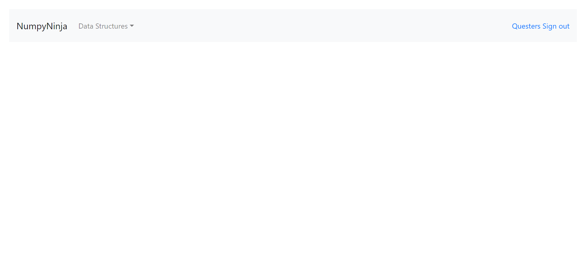FailVerify that user receives error when user clicks on run button without entering code in tryeditor for ArrayPageGiven The user is on the DSAlgo homepage after signGiven The user is on the Array Options "Array" and 4 pageWhen the user clicks the Run button in try editor pageThen the user should see an error messagedsAlgoHooks.Hooks.tearDown(io.cucumber.java.Scenario)Verify that user receives error when user clicks on run button without entering code in tryeditor for ArrayPage
FailVerify that user receives error when user clicks on run button without entering code in tryeditor for ArrayPageGiven The user is on the DSAlgo homepage after signGiven The user is on the Array Options "Array" and 2 pageWhen the user clicks the Run button in try editor pageThen the user should see an error messagedsAlgoHooks.Hooks.tearDown(io.cucumber.java.Scenario)Verify that user receives error when user clicks on run button without entering code in tryeditor for ArrayPage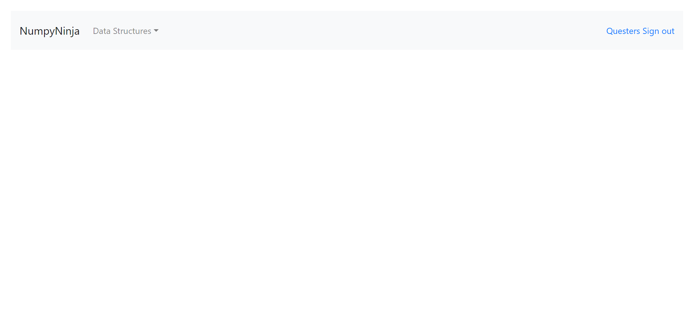FailVerify that user receives error when user clicks on run button without entering code in tryeditor for ArrayPageGiven The user is on the DSAlgo homepage after signGiven The user is on the Array Options "Array" and 4 pageWhen the user clicks the Run button in try editor pageThen the user should see an error messagedsAlgoHooks.Hooks.tearDown(io.cucumber.java.Scenario)Verify that user receives error when user clicks on run button without entering code in tryeditor for ArrayPage PassVerify the user is able to navigate to the Operations in Array optionsPassVerify the user is able to navigate to the Operations in Array optionsGiven The user is on the DSAlgo homepage after signGiven the user is on the Array pageWhen the user clicks on the Options "Array" and 3 in Array PageThen the user should navigated to the Options "Array" and 3 in Array pagePassVerify the user is able to navigate to the Operations in Array optionsGiven The user is on the DSAlgo homepage after signGiven the user is on the Array pageWhen the user clicks on the Options "Array" and 1 in Array PageThen the user should navigated to the Options "Array" and 1 in Array pagePassVerify the user is able to navigate to the Operations in Array optionsGiven The user is on the DSAlgo homepage after signGiven the user is on the Array pageWhen the user clicks on the Options "Array" and 2 in Array PageThen the user should navigated to the Options "Array" and 2 in Array pagePassVerify the user is able to navigate to the Operations in Array optionsGiven The user is on the DSAlgo homepage after signGiven the user is on the Array pageWhen the user clicks on the Options "Array" and 4 in Array PageThen the user should navigated to the Options "Array" and 4 in Array pagePassVerify that user is able to run valid and invalid Python code in Try Editor for ArrayPageGiven The user is on the DSAlgo homepage after signGiven the user is on the tryeditor page of Array in pythonWhen The user enters code "Invalid", "tryEditor" and 2 from tryeditor and clicks the Run buttonThen The user should see an result "alertmessageoutput", "tryEditor" and 2PassVerify that user is able to run valid Python code in Try Editor for Array pageGiven The user is on the DSAlgo homepage after signGiven The user is on the tryeditor page of Array Using ListWhen The user enters code "Invalid", "tryEditor" and 2 clicks the Run buttonThen The user should see an result "alertmessageoutput", "tryEditor" and 2FailVerify that user receives error when user clicks on run button without entering code in tryeditor for ArrayPageFailVerify that user receives error when user clicks on run button without entering code in tryeditor for ArrayPageGiven The user is on the DSAlgo homepage after signGiven The user is on the Array Options "Array" and 1 pageWhen the user clicks the Run button in try editor pageThen the user should see an error messagedsAlgoHooks.Hooks.tearDown(io.cucumber.java.Scenario)PassVerify that user is able to run valid Python code in Try Editor for Array PageGiven The user is on the DSAlgo homepage after signGiven The user is on the tryeditor page of Basic Operation in ListWhen The user enters code "Invalid", "tryEditor" and 2 clicks the Run buttonThen The user should see an result "alertmessageoutput", "tryEditor" and 2PassVerify that the user can navigate to the Array after signinGiven The user is on the DSAlgo homepage after signWhen the user clicks on the GetStarted button of Array sectionThen the user is navigated to the Array pagePassVerify that user is able to run valid and invalid Python code in Try Editor for ArrayPagePassVerify that user is able to run valid and invalid Python code in Try Editor for ArrayPageGiven The user is on the DSAlgo homepage after signGiven the user is on the tryeditor page of Array in pythonWhen The user enters code "Valid", "tryEditor" and 1 from tryeditor and clicks the Run buttonThen The user should see an result "successouput", "tryEditor" and 1PassVerify that user is able to run valid Python code in Try Editor for Array pagePassVerify that user is able to run valid Python code in Try Editor for Array pageGiven The user is on the DSAlgo homepage after signGiven The user is on the tryeditor page of Array Using ListWhen The user enters code "Valid", "tryEditor" and 1 clicks the Run buttonThen The user should see an result "successouput", "tryEditor" and 1PassVerify that user is able to run valid Python code in Try Editor for Array PagePassVerify that user is able to run valid Python code in Try Editor for Array PageGiven The user is on the DSAlgo homepage after signGiven The user is on the tryeditor page of Basic Operation in ListWhen The user enters code "Valid", "tryEditor" and 1 clicks the Run buttonThen The user should see an result "successouput", "tryEditor" and 1PassVerify that user is able to run valid Python code in Try Editor for Array PageGiven The user is on the DSAlgo homepage after signGiven The user is on the tryeditor page of Application of ArrayWhen The user enters code "Invalid", "tryEditor" and 2 clicks the Run buttonThen The user should see an result "alertmessageoutput", "tryEditor" and 2PassVerify that user is able to run valid Python code in Try Editor for Array PagePassVerify that user is able to run valid Python code in Try Editor for Array PageGiven The user is on the DSAlgo homepage after signGiven The user is on the tryeditor page of Application of ArrayWhen The user enters code "Valid", "tryEditor" and 1 clicks the Run buttonThen The user should see an result "successouput", "tryEditor" and 1PassVerify the user is able to navigate to the Practice Questions mentioned under Array "Array in python"PageGiven The user is on the DSAlgo homepage after signGiven the user is on the Array in python pageWhen the user clicks on the Practice Questions link of Array in python pageThen the user should navigated to the Practice Questions pagePassVerify the user see list of Practice Questions in Practice Questions PageGiven The user is on the DSAlgo homepage after signGiven the user is on the Array in python pageWhen the user clicks on the Practice Questions link of Array in python pageThen the user should see list of all Practice Questions in Practice Questions PagePassVerify that user receives output on running valid python code for "Search the array" questionPassVerify that user receives output on running valid python code for "Search the array" questionGiven The user is on the DSAlgo homepage after signGiven The user is on the tryeditor page of Search The Array questionWhen The user enters code "Search The Array" and 1 clicks the Run buttonThen The user should see an result for search the array in console for "Search The Array" and 1PassVerify that user receives error on running Invalid python code for "Search the array" questionPassVerify that user receives error on running Invalid python code for "Search the array" questionGiven The user is on the DSAlgo homepage after signGiven The user is on the tryeditor page of Search The Array questionWhen The user enters code "Search The Array" and 2 clicks the Run buttonThen The user should able to see an error message in alert window "Search The Array" and 2FailVerify that user receives output on submitting valid python code for "Search the array" questionFailVerify that user receives output on submitting valid python code for "Search the array" questionGiven The user is on the DSAlgo homepage after signGiven The user is on the tryeditor page of Search The Array questionWhen The user enters code "Search The Array" and 3 clicks the Submit buttonThen The user should see an output for question in console for "Search The Array" and 3dsAlgoHooks.Hooks.tearDown(io.cucumber.java.Scenario)Verify that user receives output on submitting valid python code for "Search the array" question
PassVerify the user is able to navigate to the Operations in Array optionsPassVerify the user is able to navigate to the Operations in Array optionsGiven The user is on the DSAlgo homepage after signGiven the user is on the Array pageWhen the user clicks on the Options "Array" and 3 in Array PageThen the user should navigated to the Options "Array" and 3 in Array pagePassVerify the user is able to navigate to the Operations in Array optionsGiven The user is on the DSAlgo homepage after signGiven the user is on the Array pageWhen the user clicks on the Options "Array" and 1 in Array PageThen the user should navigated to the Options "Array" and 1 in Array pagePassVerify the user is able to navigate to the Operations in Array optionsGiven The user is on the DSAlgo homepage after signGiven the user is on the Array pageWhen the user clicks on the Options "Array" and 2 in Array PageThen the user should navigated to the Options "Array" and 2 in Array pagePassVerify the user is able to navigate to the Operations in Array optionsGiven The user is on the DSAlgo homepage after signGiven the user is on the Array pageWhen the user clicks on the Options "Array" and 4 in Array PageThen the user should navigated to the Options "Array" and 4 in Array pagePassVerify that user is able to run valid and invalid Python code in Try Editor for ArrayPageGiven The user is on the DSAlgo homepage after signGiven the user is on the tryeditor page of Array in pythonWhen The user enters code "Invalid", "tryEditor" and 2 from tryeditor and clicks the Run buttonThen The user should see an result "alertmessageoutput", "tryEditor" and 2PassVerify that user is able to run valid Python code in Try Editor for Array pageGiven The user is on the DSAlgo homepage after signGiven The user is on the tryeditor page of Array Using ListWhen The user enters code "Invalid", "tryEditor" and 2 clicks the Run buttonThen The user should see an result "alertmessageoutput", "tryEditor" and 2FailVerify that user receives error when user clicks on run button without entering code in tryeditor for ArrayPageFailVerify that user receives error when user clicks on run button without entering code in tryeditor for ArrayPageGiven The user is on the DSAlgo homepage after signGiven The user is on the Array Options "Array" and 1 pageWhen the user clicks the Run button in try editor pageThen the user should see an error messagedsAlgoHooks.Hooks.tearDown(io.cucumber.java.Scenario)PassVerify that user is able to run valid Python code in Try Editor for Array PageGiven The user is on the DSAlgo homepage after signGiven The user is on the tryeditor page of Basic Operation in ListWhen The user enters code "Invalid", "tryEditor" and 2 clicks the Run buttonThen The user should see an result "alertmessageoutput", "tryEditor" and 2PassVerify that the user can navigate to the Array after signinGiven The user is on the DSAlgo homepage after signWhen the user clicks on the GetStarted button of Array sectionThen the user is navigated to the Array pagePassVerify that user is able to run valid and invalid Python code in Try Editor for ArrayPagePassVerify that user is able to run valid and invalid Python code in Try Editor for ArrayPageGiven The user is on the DSAlgo homepage after signGiven the user is on the tryeditor page of Array in pythonWhen The user enters code "Valid", "tryEditor" and 1 from tryeditor and clicks the Run buttonThen The user should see an result "successouput", "tryEditor" and 1PassVerify that user is able to run valid Python code in Try Editor for Array pagePassVerify that user is able to run valid Python code in Try Editor for Array pageGiven The user is on the DSAlgo homepage after signGiven The user is on the tryeditor page of Array Using ListWhen The user enters code "Valid", "tryEditor" and 1 clicks the Run buttonThen The user should see an result "successouput", "tryEditor" and 1PassVerify that user is able to run valid Python code in Try Editor for Array PagePassVerify that user is able to run valid Python code in Try Editor for Array PageGiven The user is on the DSAlgo homepage after signGiven The user is on the tryeditor page of Basic Operation in ListWhen The user enters code "Valid", "tryEditor" and 1 clicks the Run buttonThen The user should see an result "successouput", "tryEditor" and 1PassVerify that user is able to run valid Python code in Try Editor for Array PageGiven The user is on the DSAlgo homepage after signGiven The user is on the tryeditor page of Application of ArrayWhen The user enters code "Invalid", "tryEditor" and 2 clicks the Run buttonThen The user should see an result "alertmessageoutput", "tryEditor" and 2PassVerify that user is able to run valid Python code in Try Editor for Array PagePassVerify that user is able to run valid Python code in Try Editor for Array PageGiven The user is on the DSAlgo homepage after signGiven The user is on the tryeditor page of Application of ArrayWhen The user enters code "Valid", "tryEditor" and 1 clicks the Run buttonThen The user should see an result "successouput", "tryEditor" and 1PassVerify the user is able to navigate to the Practice Questions mentioned under Array "Array in python"PageGiven The user is on the DSAlgo homepage after signGiven the user is on the Array in python pageWhen the user clicks on the Practice Questions link of Array in python pageThen the user should navigated to the Practice Questions pagePassVerify the user see list of Practice Questions in Practice Questions PageGiven The user is on the DSAlgo homepage after signGiven the user is on the Array in python pageWhen the user clicks on the Practice Questions link of Array in python pageThen the user should see list of all Practice Questions in Practice Questions PagePassVerify that user receives output on running valid python code for "Search the array" questionPassVerify that user receives output on running valid python code for "Search the array" questionGiven The user is on the DSAlgo homepage after signGiven The user is on the tryeditor page of Search The Array questionWhen The user enters code "Search The Array" and 1 clicks the Run buttonThen The user should see an result for search the array in console for "Search The Array" and 1PassVerify that user receives error on running Invalid python code for "Search the array" questionPassVerify that user receives error on running Invalid python code for "Search the array" questionGiven The user is on the DSAlgo homepage after signGiven The user is on the tryeditor page of Search The Array questionWhen The user enters code "Search The Array" and 2 clicks the Run buttonThen The user should able to see an error message in alert window "Search The Array" and 2FailVerify that user receives output on submitting valid python code for "Search the array" questionFailVerify that user receives output on submitting valid python code for "Search the array" questionGiven The user is on the DSAlgo homepage after signGiven The user is on the tryeditor page of Search The Array questionWhen The user enters code "Search The Array" and 3 clicks the Submit buttonThen The user should see an output for question in console for "Search The Array" and 3dsAlgoHooks.Hooks.tearDown(io.cucumber.java.Scenario)Verify that user receives output on submitting valid python code for "Search the array" question PassVerify that user is able to run Python code in Try Editor for DataStructure PageGiven The user is on the DSAlgo homepage after signGiven The user is on the tryeditor page of Datastructure moduleWhen The user enters code "Invalid", "tryEditor" and 2 clicks the Run buttonThen The user should see an result "alertmessageoutput", "tryEditor" and 2PassVerify that user receives output on running valid python code for "Max Consecutive Ones" questionPassVerify that user receives output on running valid python code for "Max Consecutive Ones" questionGiven The user is on the DSAlgo homepage after signGiven The user is on the tryeditor page of Max Consecutive OnesWhen The user enters code "Max Consecutive Ones" and 1 clicks the Run buttonThen The user should see an result for question in console for "Max Consecutive Ones" and 1PassVerify that user receives error on running Invalid python code for "Max Consecutive Ones" questionPassVerify that user receives error on running Invalid python code for "Max Consecutive Ones" questionGiven The user is on the DSAlgo homepage after signGiven The user is on the tryeditor page of Max Consecutive OnesWhen The user enters code "Max Consecutive Ones" and 2 clicks the Run buttonThen The user should able to see an error message in alert window "Max Consecutive Ones" and 2PassVerify that user receives output on submitting valid python code for "Max Consecutive Ones" questionPassVerify that user receives output on submitting valid python code for "Max Consecutive Ones" questionGiven The user is on the DSAlgo homepage after signGiven The user is on the tryeditor page of Max Consecutive OnesWhen The user enters code "Max Consecutive Ones" and 3 clicks the Submit buttonThen The user should see an output for question in console for "Max Consecutive Ones" and 3PassVerify that user receives output on running valid python code for "Find Numbers with Even Number" questionPassVerify that user receives output on running valid python code for "Find Numbers with Even Number" questionGiven The user is on the DSAlgo homepage after signGiven The user is on the tryeditor page of Find Numbers with Even NumberWhen The user enters code "Find Numbers with Even Number" and 1 clicks the Run buttonThen The user should see an result for question in console for "Find Numbers with Even Number" and 1PassVerify that user receives error on running Invalid python code for "Find Numbers with Even Number" questionPassVerify that user receives error on running Invalid python code for "Find Numbers with Even Number" questionGiven The user is on the DSAlgo homepage after signGiven The user is on the tryeditor page of Find Numbers with Even NumberWhen The user enters code "Find Numbers with Even Number" and 2 clicks the Run buttonThen The user should able to see an error message in alert window "Find Numbers with Even Number" and 2PassVerify that user receives output on submitting valid python code for "Find Numbers with Even Number" questionPassVerify that user receives output on submitting valid python code for "Find Numbers with Even Number" questionGiven The user is on the DSAlgo homepage after signGiven The user is on the tryeditor page of Find Numbers with Even NumberWhen The user enters code "Find Numbers with Even Number" and 3 clicks the Submit buttonThen The user should see an output for question in console for "Find Numbers with Even Number" and 3PassVerify that user receives output on running valid python code for "Squares of a Sorted Array" questionPassVerify that user receives output on running valid python code for "Squares of a Sorted Array" questionGiven The user is on the DSAlgo homepage after signGiven The user is on the tryeditor page of Squares of a Sorted ArrayWhen The user enters code "Squares of a Sorted Array" and 1 clicks the Run buttonThen The user should see an result for Squares in console for "Squares of a Sorted Array" and 1PassVerify that user receives error on running Invalid python code for "Squares of a Sorted Array" questionPassVerify that user receives error on running Invalid python code for "Squares of a Sorted Array" questionGiven The user is on the DSAlgo homepage after signGiven The user is on the tryeditor page of Squares of a Sorted ArrayWhen The user enters code "Squares of a Sorted Array" and 2 clicks the Run buttonThen The user should able to see an error message in alert window "Squares of a Sorted Array" and 2FailVerify that user receives output on submitting valid python code for "Squares of a Sorted Array" questionFailVerify that user receives output on submitting valid python code for "Squares of a Sorted Array" questionGiven The user is on the DSAlgo homepage after signGiven The user is on the tryeditor page of Squares of a Sorted ArrayStep skippedWhen The user enters code "Squares of a Sorted Array" and 3 clicks the Submit buttonStep skippedThen The user should see an output for question in console for "Squares of a Sorted Array" and 3Step skippeddsAlgoHooks.Hooks.tearDown(io.cucumber.java.Scenario)Verify that user receives output on submitting valid python code for "Squares of a Sorted Array" question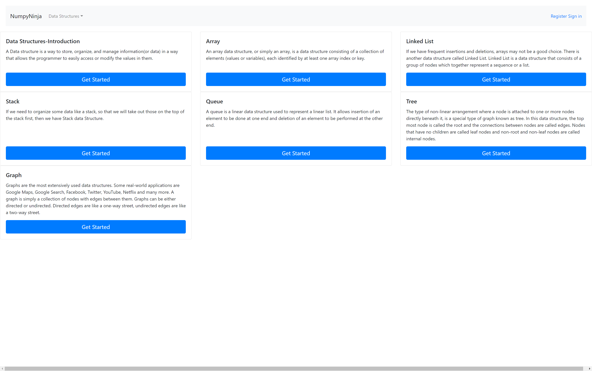
PassVerify that user is able to run Python code in Try Editor for DataStructure PageGiven The user is on the DSAlgo homepage after signGiven The user is on the tryeditor page of Datastructure moduleWhen The user enters code "Invalid", "tryEditor" and 2 clicks the Run buttonThen The user should see an result "alertmessageoutput", "tryEditor" and 2PassVerify that user receives output on running valid python code for "Max Consecutive Ones" questionPassVerify that user receives output on running valid python code for "Max Consecutive Ones" questionGiven The user is on the DSAlgo homepage after signGiven The user is on the tryeditor page of Max Consecutive OnesWhen The user enters code "Max Consecutive Ones" and 1 clicks the Run buttonThen The user should see an result for question in console for "Max Consecutive Ones" and 1PassVerify that user receives error on running Invalid python code for "Max Consecutive Ones" questionPassVerify that user receives error on running Invalid python code for "Max Consecutive Ones" questionGiven The user is on the DSAlgo homepage after signGiven The user is on the tryeditor page of Max Consecutive OnesWhen The user enters code "Max Consecutive Ones" and 2 clicks the Run buttonThen The user should able to see an error message in alert window "Max Consecutive Ones" and 2PassVerify that user receives output on submitting valid python code for "Max Consecutive Ones" questionPassVerify that user receives output on submitting valid python code for "Max Consecutive Ones" questionGiven The user is on the DSAlgo homepage after signGiven The user is on the tryeditor page of Max Consecutive OnesWhen The user enters code "Max Consecutive Ones" and 3 clicks the Submit buttonThen The user should see an output for question in console for "Max Consecutive Ones" and 3PassVerify that user receives output on running valid python code for "Find Numbers with Even Number" questionPassVerify that user receives output on running valid python code for "Find Numbers with Even Number" questionGiven The user is on the DSAlgo homepage after signGiven The user is on the tryeditor page of Find Numbers with Even NumberWhen The user enters code "Find Numbers with Even Number" and 1 clicks the Run buttonThen The user should see an result for question in console for "Find Numbers with Even Number" and 1PassVerify that user receives error on running Invalid python code for "Find Numbers with Even Number" questionPassVerify that user receives error on running Invalid python code for "Find Numbers with Even Number" questionGiven The user is on the DSAlgo homepage after signGiven The user is on the tryeditor page of Find Numbers with Even NumberWhen The user enters code "Find Numbers with Even Number" and 2 clicks the Run buttonThen The user should able to see an error message in alert window "Find Numbers with Even Number" and 2PassVerify that user receives output on submitting valid python code for "Find Numbers with Even Number" questionPassVerify that user receives output on submitting valid python code for "Find Numbers with Even Number" questionGiven The user is on the DSAlgo homepage after signGiven The user is on the tryeditor page of Find Numbers with Even NumberWhen The user enters code "Find Numbers with Even Number" and 3 clicks the Submit buttonThen The user should see an output for question in console for "Find Numbers with Even Number" and 3PassVerify that user receives output on running valid python code for "Squares of a Sorted Array" questionPassVerify that user receives output on running valid python code for "Squares of a Sorted Array" questionGiven The user is on the DSAlgo homepage after signGiven The user is on the tryeditor page of Squares of a Sorted ArrayWhen The user enters code "Squares of a Sorted Array" and 1 clicks the Run buttonThen The user should see an result for Squares in console for "Squares of a Sorted Array" and 1PassVerify that user receives error on running Invalid python code for "Squares of a Sorted Array" questionPassVerify that user receives error on running Invalid python code for "Squares of a Sorted Array" questionGiven The user is on the DSAlgo homepage after signGiven The user is on the tryeditor page of Squares of a Sorted ArrayWhen The user enters code "Squares of a Sorted Array" and 2 clicks the Run buttonThen The user should able to see an error message in alert window "Squares of a Sorted Array" and 2FailVerify that user receives output on submitting valid python code for "Squares of a Sorted Array" questionFailVerify that user receives output on submitting valid python code for "Squares of a Sorted Array" questionGiven The user is on the DSAlgo homepage after signGiven The user is on the tryeditor page of Squares of a Sorted ArrayStep skippedWhen The user enters code "Squares of a Sorted Array" and 3 clicks the Submit buttonStep skippedThen The user should see an output for question in console for "Squares of a Sorted Array" and 3Step skippeddsAlgoHooks.Hooks.tearDown(io.cucumber.java.Scenario)Verify that user receives output on submitting valid python code for "Squares of a Sorted Array" question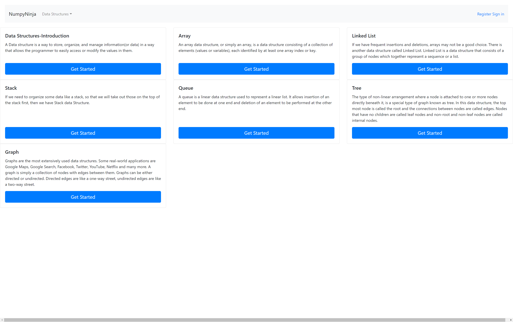 -
signin functionality
9:31:43 AM / 00:00:11:481 Pass
signin functionality
01.28.2025 9:31:43 AM 01.28.2025 9:31:55 AM 00:00:11:481 · #test-id=267Passverify user is able to navigate to the signinGiven The user is on the DSAlgo homepage after sign -
DataStructure functionality
9:31:53 AM / 00:00:52:048 Fail
DataStructure functionality
01.28.2025 9:31:53 AM 01.28.2025 9:32:45 AM 00:00:52:048 · #test-id=303PassVerify that user isable to navigate to "DataStructure-Introduction" PageGiven The user is on the DSAlgo homepage after signWhen The user clicks on GetStarted button in DataStructure PanelThen The user be directed to Data-Structure Introduction PagePassVerify that user is able to navigate to "Time Complexity" PageGiven The user is on the DSAlgo homepage after signGiven The user is in the Data structures- Introduction pageWhen The user clicks on "Time Complexity" linkThen The user should be directed to Time Complexity PagePassVerify that user is able to navigate to "Try Editor" Page for Time Complexity pageGiven The user is on the DSAlgo homepage after signGiven The user is on the Time Complexity pageWhen The user clicks "Try Here" button in Time Complexity pageThen The user Should be redirected to a page having an try Editor with a Run button to TestPassVerify that user is able to run Python code in Try Editor for DataStructure PagePassVerify that user is able to run Python code in Try Editor for DataStructure PageGiven The user is on the DSAlgo homepage after signGiven The user is on the tryeditor page of Datastructure moduleWhen The user enters code "Valid", "tryEditor" and 1 clicks the Run buttonThen The user should see an result "successouput", "tryEditor" and 1FailVerify that user receives error when click on Run button without entering code for "Time Complexity" in "python" pageGiven The user is on the DSAlgo homepage after signGiven The user is in the TryEditor page of TimeComplexity moduleWhen The user clicks the Run Button without entering the code in the Editor of TimeComplexity moduleThen The user should able to see an error message in alert window of TimeComplexity moduledsAlgoHooks.Hooks.tearDown(io.cucumber.java.Scenario)Verify that user receives error when click on Run button without entering code for "Time Complexity" in "python" page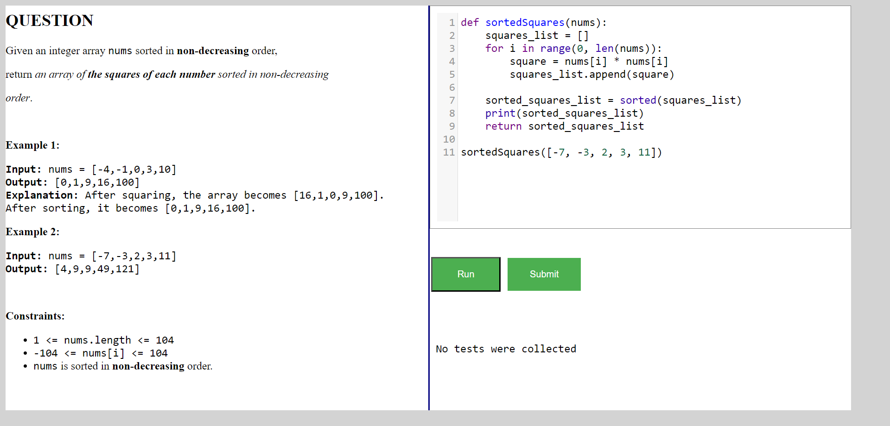PassVerify the user is able to navigate to the Practice Questions for "Time Complexity" in "python" pageGiven The user is on the DSAlgo homepage after signGiven The user is in the Time Complexity in DataStructure pageWhen the user clicks on the Practice Questions link of TimeComplexity moduleThen the user should navigated to the Practice Questions page of TimeComplexity moduleFailVerify the user see list of Practice Questions in Practice Questions PageGiven The user is on the DSAlgo homepage after signGiven The user is in the Time Complexity in DataStructure pageWhen the user clicks on the Practice Questions link of TimeComplexity moduleThen the user should see list of Practice Questions in Practice Questions Page of TimeComplexity moduledsAlgoHooks.Hooks.tearDown(io.cucumber.java.Scenario)Verify the user see list of Practice Questions in Practice Questions Page
-
Graph functionality
9:31:55 AM / 00:01:39:868 Fail
Graph functionality
01.28.2025 9:31:55 AM 01.28.2025 9:33:35 AM 00:01:39:868 · #test-id=324PassVerify that the user can navigate to the Graph page after signinGiven The user is on the DSAlgo homepage after signWhen the user clicks on the GetStarted button of Graph sectionThen the user is navigated to the Graph pagePassVerify the user is able to navigate to the Graph option in Graph pageGiven The user is on the DSAlgo homepage after signGiven the user is on the Graph pageWhen the user clicks on the Graphmodule linkThen the user should navigated to the Graphmodule pagePassVerify that user is able to navigate to try Editor page for Graph pageGiven The user is on the DSAlgo homepage after signGiven the user is on the Graphmodule pageWhen the user click on Try here button in Graph PageThen the user should navigate to the tryeditor pagePassVerify the user is able to navigate to the Practice Questions mentioned under graph Graph PageGiven The user is on the DSAlgo homepage after signGiven the user is on the Graphmodule pageWhen the user clicks on the Practice Questions linkThen the user should navigated to the Practice Questions pagePassVerify the user is able to navigate to the Graph Representations option in Graph pageGiven The user is on the DSAlgo homepage after signGiven the user is on the Graph pageWhen the user clicks on the Graph Representations linkThen the user should navigated to the Graph Representations pagePassVerify that user is able to navigate to try Editor page for GraphRepresentation pageGiven The user is on the DSAlgo homepage after signGiven the user is on the Graph Representation pageWhen the user click on Try here button in Graph Representation PageThen the user should navigate to the tryeditor pagePassVerify the user is able to navigate to the Practice Questions mentioned under graph Graph PageGiven The user is on the DSAlgo homepage after signGiven the user is on the Graph Representation pageWhen the user clicks on the Practice Questions linkThen the user should navigated to the Practice Questions pageFailVerify the user see list of Practice Questions in Practice Questions PageGiven The user is on the DSAlgo homepage after signGiven the user is on the Graph Representation pageStep skippedWhen the user clicks on the Practice Questions linkStep skippedThen the user should see list of Practice Questions in Practice Questions PageStep skippeddsAlgoHooks.Hooks.tearDown(io.cucumber.java.Scenario)Verify the user see list of Practice Questions in Practice Questions Page PassVerify that user is able to run valid Python code in Try Editor for Graph PagePassVerify that user is able to run valid Python code in Try Editor for Graph PageGiven The user is on the DSAlgo homepage after signGiven The user is on the tryeditor page of Graph moduleWhen The user enters code "Valid", "tryEditor" and 1 clicks the Run buttonThen The user should see an result "successouput", "tryEditor" and 1PassVerify that user is able to run valid Python code in Try Editor for Graph PageGiven The user is on the DSAlgo homepage after signGiven The user is on the tryeditor page of Graph moduleWhen The user enters code "Invalid", "tryEditor" and 2 clicks the Run buttonThen The user should see an result "alertmessageoutput", "tryEditor" and 2PassVerify the user is able to navigate to the options under DataStructure DropDown from Graph pageGiven The user is on the DSAlgo homepage after signWhen the user clicks on the options under "Home2" and 5 dataStructure after signinThen The user should be navigated to the options page after sign "Home2" and 5PassVerify the error message when the user clicks on the GetStarted button under all the options in Home Page without signing inGiven the user is on the DSAlgo homepageWhen the user clicks on the GetStarted button under "Queue"Then the user should see an error message stating "You are not logged in"FailVerify that user receives error when user clicks on run button without entering code in tryeditor for Graph PageGiven The user is on the DSAlgo homepage after signGiven The user is on the tryeditor page of Graph moduleWhen the user clicks the Run buttonThen the user should see an error messagedsAlgoHooks.Hooks.tearDown(io.cucumber.java.Scenario)Verify that user receives error when user clicks on run button without entering code in tryeditor for Graph Page
PassVerify that user is able to run valid Python code in Try Editor for Graph PagePassVerify that user is able to run valid Python code in Try Editor for Graph PageGiven The user is on the DSAlgo homepage after signGiven The user is on the tryeditor page of Graph moduleWhen The user enters code "Valid", "tryEditor" and 1 clicks the Run buttonThen The user should see an result "successouput", "tryEditor" and 1PassVerify that user is able to run valid Python code in Try Editor for Graph PageGiven The user is on the DSAlgo homepage after signGiven The user is on the tryeditor page of Graph moduleWhen The user enters code "Invalid", "tryEditor" and 2 clicks the Run buttonThen The user should see an result "alertmessageoutput", "tryEditor" and 2PassVerify the user is able to navigate to the options under DataStructure DropDown from Graph pageGiven The user is on the DSAlgo homepage after signWhen the user clicks on the options under "Home2" and 5 dataStructure after signinThen The user should be navigated to the options page after sign "Home2" and 5PassVerify the error message when the user clicks on the GetStarted button under all the options in Home Page without signing inGiven the user is on the DSAlgo homepageWhen the user clicks on the GetStarted button under "Queue"Then the user should see an error message stating "You are not logged in"FailVerify that user receives error when user clicks on run button without entering code in tryeditor for Graph PageGiven The user is on the DSAlgo homepage after signGiven The user is on the tryeditor page of Graph moduleWhen the user clicks the Run buttonThen the user should see an error messagedsAlgoHooks.Hooks.tearDown(io.cucumber.java.Scenario)Verify that user receives error when user clicks on run button without entering code in tryeditor for Graph Page PassVerify that user is able to run valid Python code in Try Editor for Graph Representation PagePassVerify that user is able to run valid Python code in Try Editor for Graph Representation PageGiven The user is on the DSAlgo homepage after signGiven The user is on the tryeditor page of Graph RepresentationWhen The user enters code "Valid", "tryEditor" and 1 clicks the Run buttonThen The user should see an result "successouput", "tryEditor" and 1PassVerify that user is able to run valid Python code in Try Editor for Graph Representation PageGiven The user is on the DSAlgo homepage after signGiven The user is on the tryeditor page of Graph RepresentationWhen The user enters code "Invalid", "tryEditor" and 2 clicks the Run buttonThen The user should see an result "alertmessageoutput", "tryEditor" and 2PassVerify the user is able to navigate to the options under DataStructure DropDown from Graph pageGiven The user is on the DSAlgo homepage after signWhen the user clicks on the options under "Home2" and 6 dataStructure after signinThen The user should be navigated to the options page after sign "Home2" and 6PassVerify the error message when the user clicks on the GetStarted button under all the options in Home Page without signing inGiven the user is on the DSAlgo homepageWhen the user clicks on the GetStarted button under "Stack"Then the user should see an error message stating "You are not logged in"PassVerify the error message when the user clicks on the options under DataStructure dropdown before loginGiven the user is on the DSAlgo homepageWhen the user clicks on the "Tree" option under DataStructureThen the user should see an error message stating "You are not logged in"FailVerify that user receives error when user clicks on run button without entering code in tryeditor for Graph PageGiven The user is on the DSAlgo homepage after signGiven The user is on the tryeditor page of Graph RepresentationWhen the user clicks the Run buttonThen the user should see an error messagedsAlgoHooks.Hooks.tearDown(io.cucumber.java.Scenario)Verify that user receives error when user clicks on run button without entering code in tryeditor for Graph Page
PassVerify that user is able to run valid Python code in Try Editor for Graph Representation PagePassVerify that user is able to run valid Python code in Try Editor for Graph Representation PageGiven The user is on the DSAlgo homepage after signGiven The user is on the tryeditor page of Graph RepresentationWhen The user enters code "Valid", "tryEditor" and 1 clicks the Run buttonThen The user should see an result "successouput", "tryEditor" and 1PassVerify that user is able to run valid Python code in Try Editor for Graph Representation PageGiven The user is on the DSAlgo homepage after signGiven The user is on the tryeditor page of Graph RepresentationWhen The user enters code "Invalid", "tryEditor" and 2 clicks the Run buttonThen The user should see an result "alertmessageoutput", "tryEditor" and 2PassVerify the user is able to navigate to the options under DataStructure DropDown from Graph pageGiven The user is on the DSAlgo homepage after signWhen the user clicks on the options under "Home2" and 6 dataStructure after signinThen The user should be navigated to the options page after sign "Home2" and 6PassVerify the error message when the user clicks on the GetStarted button under all the options in Home Page without signing inGiven the user is on the DSAlgo homepageWhen the user clicks on the GetStarted button under "Stack"Then the user should see an error message stating "You are not logged in"PassVerify the error message when the user clicks on the options under DataStructure dropdown before loginGiven the user is on the DSAlgo homepageWhen the user clicks on the "Tree" option under DataStructureThen the user should see an error message stating "You are not logged in"FailVerify that user receives error when user clicks on run button without entering code in tryeditor for Graph PageGiven The user is on the DSAlgo homepage after signGiven The user is on the tryeditor page of Graph RepresentationWhen the user clicks the Run buttonThen the user should see an error messagedsAlgoHooks.Hooks.tearDown(io.cucumber.java.Scenario)Verify that user receives error when user clicks on run button without entering code in tryeditor for Graph Page PassVerify the user is able to navigate to the options under DataStructure DropDown from Graph pagePassVerify the user is able to navigate to the options under DataStructure DropDown from Graph pageGiven The user is on the DSAlgo homepage after signWhen the user clicks on the options under "Home2" and 1 dataStructure after signinThen The user should be navigated to the options page after sign "Home2" and 1PassVerify the user is able to navigate to the options under DataStructure DropDown from Graph pageGiven The user is on the DSAlgo homepage after signWhen the user clicks on the options under "Home2" and 2 dataStructure after signinThen The user should be navigated to the options page after sign "Home2" and 2PassVerify the user is able to navigate to the options under DataStructure DropDown from Graph pageGiven The user is on the DSAlgo homepage after signWhen the user clicks on the options under "Home2" and 3 dataStructure after signinThen The user should be navigated to the options page after sign "Home2" and 3PassVerify the user is able to navigate to the options under DataStructure DropDown from Graph pageGiven The user is on the DSAlgo homepage after signWhen the user clicks on the options under "Home2" and 4 dataStructure after signinThen The user should be navigated to the options page after sign "Home2" and 4PassVerify the error message when the user clicks on the GetStarted button under all the options in Home Page without signing inGiven the user is on the DSAlgo homepageWhen the user clicks on the GetStarted button under "Linked List"Then the user should see an error message stating "You are not logged in"
PassVerify the user is able to navigate to the options under DataStructure DropDown from Graph pagePassVerify the user is able to navigate to the options under DataStructure DropDown from Graph pageGiven The user is on the DSAlgo homepage after signWhen the user clicks on the options under "Home2" and 1 dataStructure after signinThen The user should be navigated to the options page after sign "Home2" and 1PassVerify the user is able to navigate to the options under DataStructure DropDown from Graph pageGiven The user is on the DSAlgo homepage after signWhen the user clicks on the options under "Home2" and 2 dataStructure after signinThen The user should be navigated to the options page after sign "Home2" and 2PassVerify the user is able to navigate to the options under DataStructure DropDown from Graph pageGiven The user is on the DSAlgo homepage after signWhen the user clicks on the options under "Home2" and 3 dataStructure after signinThen The user should be navigated to the options page after sign "Home2" and 3PassVerify the user is able to navigate to the options under DataStructure DropDown from Graph pageGiven The user is on the DSAlgo homepage after signWhen the user clicks on the options under "Home2" and 4 dataStructure after signinThen The user should be navigated to the options page after sign "Home2" and 4PassVerify the error message when the user clicks on the GetStarted button under all the options in Home Page without signing inGiven the user is on the DSAlgo homepageWhen the user clicks on the GetStarted button under "Linked List"Then the user should see an error message stating "You are not logged in" -
Home functionality
9:32:50 AM / 00:02:34:152 Pass
Home functionality
01.28.2025 9:32:50 AM 01.28.2025 9:35:24 AM 00:02:34:152 · #test-id=510PassVerify User is able to navigate to DsAlgo ApplicationGiven Empty browser openWhen The user enters the DsAlgo UrlThen the user should able to land on DsAlgo portalPassverify that user is able to navigate to homepage when clicked on getstarted buttonGiven the user navigates to the DsAlgo portalWhen The user click on Getstarted buttonThen the user navigates to DSAlgo home pagePassVerify that the user is able to Navigate to Register pageGiven the user is on the DSAlgo homepageWhen The user clicks on the Register buttonThen the user should be navigated to the Register pagePassVerify that the user is able to Navigate to Login pageGiven the user is on the DSAlgo homepageWhen The user clicks on the signin buttonThen the user should be navigated to the signin pagePassVerify that the user sees six options under the Data Structure dropdown before logging inPassVerify that the user sees six options under the Data Structure dropdown before logging inGiven the user is on the DSAlgo homepageWhen the user clicks on the Data Structure buttonThen the user should see six options: "Arrays","Linked List","Stack","Queue","Tree", and "Graph" under the Data Structure dropdownPassVerify the error message when the user clicks on the GetStarted button under all the options in Home Page without signing inPassVerify the error message when the user clicks on the GetStarted button under all the options in Home Page without signing inGiven the user is on the DSAlgo homepageWhen the user clicks on the GetStarted button under "Data Structures-Introduction"Then the user should see an error message stating "You are not logged in"PassVerify the error message when the user clicks on the GetStarted button under all the options in Home Page without signing inGiven the user is on the DSAlgo homepageWhen the user clicks on the GetStarted button under "Array"Then the user should see an error message stating "You are not logged in"PassVerify the error message when the user clicks on the GetStarted button under all the options in Home Page without signing inGiven the user is on the DSAlgo homepageWhen the user clicks on the GetStarted button under "Tree"Then the user should see an error message stating "You are not logged in"PassVerify the error message when the user clicks on the GetStarted button under all the options in Home Page without signing inGiven the user is on the DSAlgo homepageWhen the user clicks on the GetStarted button under "Graph"Then the user should see an error message stating "You are not logged in"PassVerify the error message when the user clicks on the options under DataStructure dropdown before loginGiven the user is on the DSAlgo homepageWhen the user clicks on the "Stack" option under DataStructureThen the user should see an error message stating "You are not logged in"PassVerify the error message when the user clicks on the options under DataStructure dropdown before loginGiven the user is on the DSAlgo homepageWhen the user clicks on the "Queue" option under DataStructureThen the user should see an error message stating "You are not logged in"PassVerify the error message when the user clicks on the options under DataStructure dropdown before loginPassVerify the error message when the user clicks on the options under DataStructure dropdown before loginGiven the user is on the DSAlgo homepageWhen the user clicks on the "Arrays" option under DataStructureThen the user should see an error message stating "You are not logged in"PassVerify the error message when the user clicks on the options under DataStructure dropdown before loginGiven the user is on the DSAlgo homepageWhen the user clicks on the "Linked List" option under DataStructureThen the user should see an error message stating "You are not logged in"PassVerify the error message when the user clicks on the options under DataStructure dropdown before loginGiven the user is on the DSAlgo homepageWhen the user clicks on the "Graph" option under DataStructureThen the user should see an error message stating "You are not logged in"PassVerify that user is able to navigate to the try Editor page from different options in Stack PageGiven The user is on the DSAlgo homepage after signGiven The user is on the LinkedList Options "LinkedList" and 4 pageWhen The user clicks on the Try here button on the LinkedList Options pageThen The user should navigate to the tryeditor pagePassVerify that user is able to navigate to the try Editor page from different options in Stack PageGiven The user is on the DSAlgo homepage after signGiven The user is on the LinkedList Options "LinkedList" and 7 pageWhen The user clicks on the Try here button on the LinkedList Options pageThen The user should navigate to the tryeditor pagePassVerify that user is able to run valid Python code in Try Editor for LinkedList PageGiven The user is on the DSAlgo homepage after signGiven The user is on the tryeditor page of Traversal in LinkedListWhen The user enters code "Invalid", "tryEditor" and 2 clicks the Run buttonThen The user should see an result "alertmessageoutput", "tryEditor" and 2 -
LinkedList functionality
9:33:21 AM / 00:04:38:924 Fail
LinkedList functionality
01.28.2025 9:33:21 AM 01.28.2025 9:38:00 AM 00:04:38:924 · #test-id=643PassVerify that user is able to navigate to "Linked List" data structure pageGiven The user is on the DSAlgo homepage after signWhen The user clicks the Getting Started button in Linked List PanelThen The user be directed to Linked List Data Structure PagePassVerify that user is able to navigate to "Introduction" pagePassVerify that user is able to navigate to "Introduction" pageGiven The user is on the DSAlgo homepage after signGiven The user is in the Linked List pageWhen The user clicks Introduction buttonThen The user should be redirected to page and confirm url "LinkedList" and 1FailVerify that user is able to navigate to "Creating Linked LIst" pagePassVerify that user is able to navigate to "Creating Linked LIst" pageGiven The user is on the DSAlgo homepage after signGiven The user is in the Linked List pageWhen The user clicks Creating Linked LIst buttonThen The user should be redirected to page and confirm url "LinkedList" and 2PassVerify that user is able to run valid Python code in Try Editor for LinkedList PageGiven The user is on the DSAlgo homepage after signGiven The user is on the tryeditor page of Introduction in LinkedListWhen The user enters code "Invalid", "tryEditor" and 2 clicks the Run buttonThen The user should see an result "alertmessageoutput", "tryEditor" and 2PassVerify that user is able to run valid Python code in Try Editor for LinkedList PageGiven The user is on the DSAlgo homepage after signGiven The user is on the tryeditor page of Deletion in LinkedListWhen The user enters code "Invalid", "tryEditor" and 2 clicks the Run buttonThen The user should see an result "alertmessageoutput", "tryEditor" and 2PassVerify the user is able to navigate to the Practice Questions mentioned under Seven options of LinkedListGiven The user is on the DSAlgo homepage after signGiven The user is navigates to seven Options "LinkedList" and 3 of LinkedList pageWhen the user clicks on the Practice Questions linkThen the user should navigated to the Practice Questions page of three options "LinkedList" and 3 in Stack pageFailVerify the user see list of Practice Questions in Practice Questions Page of three options pagesGiven The user is on the DSAlgo homepage after signGiven The user is navigates to seven Options "LinkedList" and 6 of LinkedList pageWhen the user clicks on the Practice Questions linkThen the user should see list of Practice Questions in Practice Questions PagedsAlgoHooks.Hooks.tearDown(io.cucumber.java.Scenario)Verify the user see list of Practice Questions in Practice Questions Page of three options pages PassVerify that user is able to navigate to "Types of Linked List" pagePassVerify that user is able to navigate to "Types of Linked List" pageGiven The user is on the DSAlgo homepage after signGiven The user is in the Linked List pageWhen The user clicks Types of Linked List buttonThen The user should be redirected to page and confirm url "LinkedList" and 3FailVerify that user is able to navigate to "Introduction" pagePassVerify that user is able to navigate to "Introduction" pageGiven The user is on the DSAlgo homepage after signGiven The user is in the Linked List pageWhen The user clicks Implement Linked List buttonThen The user should be redirected to page and confirm url "LinkedList" and 4PassVerify that user is able to navigate to the try Editor page from different options in Stack PageGiven The user is on the DSAlgo homepage after signGiven The user is on the LinkedList Options "LinkedList" and 3 pageWhen The user clicks on the Try here button on the LinkedList Options pageThen The user should navigate to the tryeditor pagePassVerify that user is able to run valid Python code in Try Editor for LinkedList PageGiven The user is on the DSAlgo homepage after signGiven The user is on the tryeditor page of Types of Linked List in LinkedListWhen The user enters code "Invalid", "tryEditor" and 2 clicks the Run buttonThen The user should see an result "alertmessageoutput", "tryEditor" and 2FailVerify that user receives error when user clicks on run button without entering code in tryeditor for LinkedList PageGiven The user is on the DSAlgo homepage after signGiven The user is on the tryeditor page of seven Options "LinkedList" and 2 of LinkedList pageWhen the user clicks the Run buttonThen the user should see an error messagedsAlgoHooks.Hooks.tearDown(io.cucumber.java.Scenario)Verify that user receives error when user clicks on run button without entering code in tryeditor for LinkedList Page
PassVerify that user is able to navigate to "Types of Linked List" pagePassVerify that user is able to navigate to "Types of Linked List" pageGiven The user is on the DSAlgo homepage after signGiven The user is in the Linked List pageWhen The user clicks Types of Linked List buttonThen The user should be redirected to page and confirm url "LinkedList" and 3FailVerify that user is able to navigate to "Introduction" pagePassVerify that user is able to navigate to "Introduction" pageGiven The user is on the DSAlgo homepage after signGiven The user is in the Linked List pageWhen The user clicks Implement Linked List buttonThen The user should be redirected to page and confirm url "LinkedList" and 4PassVerify that user is able to navigate to the try Editor page from different options in Stack PageGiven The user is on the DSAlgo homepage after signGiven The user is on the LinkedList Options "LinkedList" and 3 pageWhen The user clicks on the Try here button on the LinkedList Options pageThen The user should navigate to the tryeditor pagePassVerify that user is able to run valid Python code in Try Editor for LinkedList PageGiven The user is on the DSAlgo homepage after signGiven The user is on the tryeditor page of Types of Linked List in LinkedListWhen The user enters code "Invalid", "tryEditor" and 2 clicks the Run buttonThen The user should see an result "alertmessageoutput", "tryEditor" and 2FailVerify that user receives error when user clicks on run button without entering code in tryeditor for LinkedList PageGiven The user is on the DSAlgo homepage after signGiven The user is on the tryeditor page of seven Options "LinkedList" and 2 of LinkedList pageWhen the user clicks the Run buttonThen the user should see an error messagedsAlgoHooks.Hooks.tearDown(io.cucumber.java.Scenario)Verify that user receives error when user clicks on run button without entering code in tryeditor for LinkedList Page FailVerify the user see list of Practice Questions in Practice Questions Page of three options pagesGiven The user is on the DSAlgo homepage after signGiven The user is navigates to seven Options "LinkedList" and 5 of LinkedList pageWhen the user clicks on the Practice Questions linkThen the user should see list of Practice Questions in Practice Questions PagedsAlgoHooks.Hooks.tearDown(io.cucumber.java.Scenario)PassVerify that user is able to navigate to "Introduction" pagePassVerify that user is able to navigate to "Introduction" pageGiven The user is on the DSAlgo homepage after signGiven The user is in the Linked List pageWhen The user clicks Traversal buttonThen The user should be redirected to page and confirm url "LinkedList" and 5PassVerify that user is able to run valid Python code in Try Editor for LinkedList PageGiven The user is on the DSAlgo homepage after signGiven The user is on the tryeditor page of Creating Linked LIst in LinkedListWhen The user enters code "Invalid", "tryEditor" and 2 clicks the Run buttonThen The user should see an result "alertmessageoutput", "tryEditor" and 2FailVerify that user is able to navigate to "Introduction" pagePassVerify that user is able to navigate to "Introduction" pageGiven The user is on the DSAlgo homepage after signGiven The user is in the Linked List pageWhen The user clicks Insertion buttonThen The user should be redirected to page and confirm url "LinkedList" and 6PassVerify that user is able to navigate to the try Editor page from different options in Stack PageGiven The user is on the DSAlgo homepage after signGiven The user is on the LinkedList Options "LinkedList" and 6 pageWhen The user clicks on the Try here button on the LinkedList Options pageThen The user should navigate to the tryeditor pagePassVerify that user is able to run valid Python code in Try Editor for LinkedList PageGiven The user is on the DSAlgo homepage after signGiven The user is on the tryeditor page of Types of Linked List in LinkedListWhen The user enters code "Invalid", "tryEditor" and 2 clicks the Run buttonThen The user should see an result "alertmessageoutput", "tryEditor" and 2FailVerify that user receives error when user clicks on run button without entering code in tryeditor for LinkedList PageGiven The user is on the DSAlgo homepage after signGiven The user is on the tryeditor page of seven Options "LinkedList" and 5 of LinkedList pageWhen the user clicks the Run buttonThen the user should see an error messagedsAlgoHooks.Hooks.tearDown(io.cucumber.java.Scenario)Verify that user receives error when user clicks on run button without entering code in tryeditor for LinkedList Page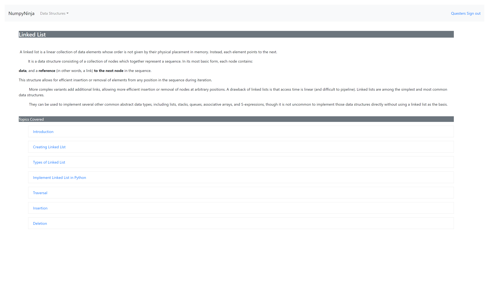FailVerify the user see list of Practice Questions in Practice Questions Page of three options pagesGiven The user is on the DSAlgo homepage after signGiven The user is navigates to seven Options "LinkedList" and 4 of LinkedList pageWhen the user clicks on the Practice Questions linkThen the user should see list of Practice Questions in Practice Questions PagedsAlgoHooks.Hooks.tearDown(io.cucumber.java.Scenario)Verify the user see list of Practice Questions in Practice Questions Page of three options pages
FailVerify the user see list of Practice Questions in Practice Questions Page of three options pagesGiven The user is on the DSAlgo homepage after signGiven The user is navigates to seven Options "LinkedList" and 5 of LinkedList pageWhen the user clicks on the Practice Questions linkThen the user should see list of Practice Questions in Practice Questions PagedsAlgoHooks.Hooks.tearDown(io.cucumber.java.Scenario)PassVerify that user is able to navigate to "Introduction" pagePassVerify that user is able to navigate to "Introduction" pageGiven The user is on the DSAlgo homepage after signGiven The user is in the Linked List pageWhen The user clicks Traversal buttonThen The user should be redirected to page and confirm url "LinkedList" and 5PassVerify that user is able to run valid Python code in Try Editor for LinkedList PageGiven The user is on the DSAlgo homepage after signGiven The user is on the tryeditor page of Creating Linked LIst in LinkedListWhen The user enters code "Invalid", "tryEditor" and 2 clicks the Run buttonThen The user should see an result "alertmessageoutput", "tryEditor" and 2FailVerify that user is able to navigate to "Introduction" pagePassVerify that user is able to navigate to "Introduction" pageGiven The user is on the DSAlgo homepage after signGiven The user is in the Linked List pageWhen The user clicks Insertion buttonThen The user should be redirected to page and confirm url "LinkedList" and 6PassVerify that user is able to navigate to the try Editor page from different options in Stack PageGiven The user is on the DSAlgo homepage after signGiven The user is on the LinkedList Options "LinkedList" and 6 pageWhen The user clicks on the Try here button on the LinkedList Options pageThen The user should navigate to the tryeditor pagePassVerify that user is able to run valid Python code in Try Editor for LinkedList PageGiven The user is on the DSAlgo homepage after signGiven The user is on the tryeditor page of Types of Linked List in LinkedListWhen The user enters code "Invalid", "tryEditor" and 2 clicks the Run buttonThen The user should see an result "alertmessageoutput", "tryEditor" and 2FailVerify that user receives error when user clicks on run button without entering code in tryeditor for LinkedList PageGiven The user is on the DSAlgo homepage after signGiven The user is on the tryeditor page of seven Options "LinkedList" and 5 of LinkedList pageWhen the user clicks the Run buttonThen the user should see an error messagedsAlgoHooks.Hooks.tearDown(io.cucumber.java.Scenario)Verify that user receives error when user clicks on run button without entering code in tryeditor for LinkedList Page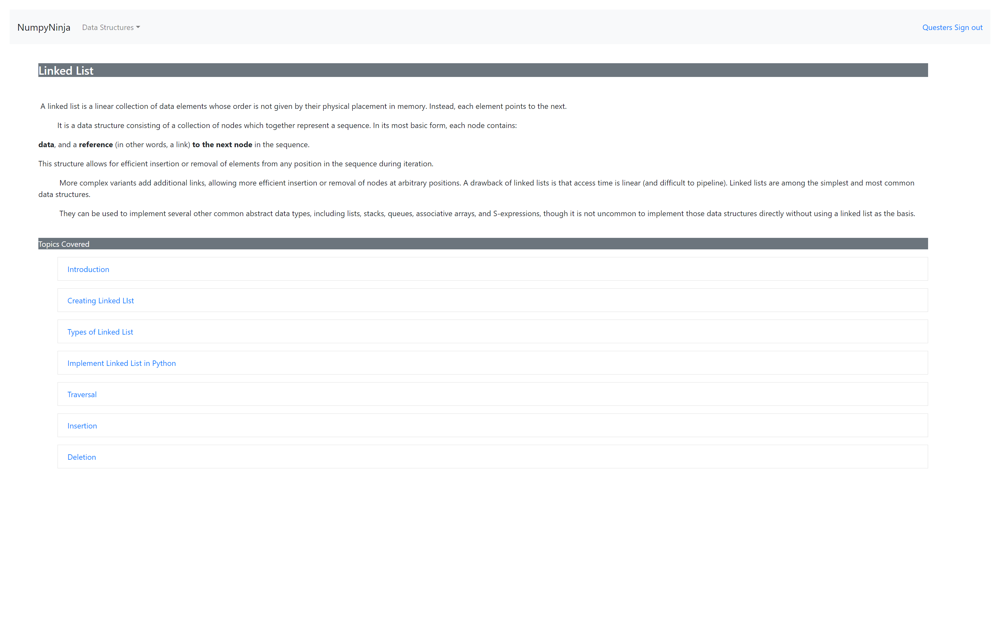FailVerify the user see list of Practice Questions in Practice Questions Page of three options pagesGiven The user is on the DSAlgo homepage after signGiven The user is navigates to seven Options "LinkedList" and 4 of LinkedList pageWhen the user clicks on the Practice Questions linkThen the user should see list of Practice Questions in Practice Questions PagedsAlgoHooks.Hooks.tearDown(io.cucumber.java.Scenario)Verify the user see list of Practice Questions in Practice Questions Page of three options pages PassVerify that user is able to navigate to "Introduction" pagePassVerify that user is able to navigate to "Introduction" pageGiven The user is on the DSAlgo homepage after signGiven The user is in the Linked List pageWhen The user clicks Deletion buttonThen The user should be redirected to page and confirm url "LinkedList" and 7PassVerify that user is able to navigate to the try Editor page from different options in Stack PageGiven The user is on the DSAlgo homepage after signGiven The user is on the LinkedList Options "LinkedList" and 5 pageWhen The user clicks on the Try here button on the LinkedList Options pageThen The user should navigate to the tryeditor pagePassVerify that user is able to navigate to the try Editor page from different options in Stack PagePassVerify that user is able to navigate to the try Editor page from different options in Stack PageGiven The user is on the DSAlgo homepage after signGiven The user is on the LinkedList Options "LinkedList" and 1 pageWhen The user clicks on the Try here button on the LinkedList Options pageThen The user should navigate to the tryeditor pagePassVerify that user is able to navigate to the try Editor page from different options in Stack PageGiven The user is on the DSAlgo homepage after signGiven The user is on the LinkedList Options "LinkedList" and 2 pageWhen The user clicks on the Try here button on the LinkedList Options pageThen The user should navigate to the tryeditor pagePassVerify that user is able to run valid Python code in Try Editor for LinkedList PagePassVerify that user is able to run valid Python code in Try Editor for LinkedList PageGiven The user is on the DSAlgo homepage after signGiven The user is on the tryeditor page of Introduction in LinkedListWhen The user enters code "Valid", "tryEditor" and 1 clicks the Run buttonThen The user should see an result "successouput", "tryEditor" and 1PassVerify that user is able to run valid Python code in Try Editor for LinkedList PagePassVerify that user is able to run valid Python code in Try Editor for LinkedList PageGiven The user is on the DSAlgo homepage after signGiven The user is on the tryeditor page of Creating Linked LIst in LinkedListWhen The user enters code "Valid", "tryEditor" and 1 clicks the Run buttonThen The user should see an result "successouput", "tryEditor" and 1PassVerify that user is able to run valid Python code in Try Editor for LinkedList PageGiven The user is on the DSAlgo homepage after signGiven The user is on the tryeditor page of Insertion in LinkedListWhen The user enters code "Invalid", "tryEditor" and 2 clicks the Run buttonThen The user should see an result "alertmessageoutput", "tryEditor" and 2PassVerify the user is able to navigate to the Practice Questions mentioned under Seven options of LinkedListGiven The user is on the DSAlgo homepage after signGiven The user is navigates to seven Options "LinkedList" and 2 of LinkedList pageWhen the user clicks on the Practice Questions linkThen the user should navigated to the Practice Questions page of three options "LinkedList" and 2 in Stack pagePassVerify the user is able to navigate to the Practice Questions mentioned under Seven options of LinkedListGiven The user is on the DSAlgo homepage after signGiven The user is navigates to seven Options "LinkedList" and 6 of LinkedList pageWhen the user clicks on the Practice Questions linkThen the user should navigated to the Practice Questions page of three options "LinkedList" and 6 in Stack pageFailVerify that user is able to run valid Python code in Try Editor for LinkedList PagePassVerify that user is able to run valid Python code in Try Editor for LinkedList PageGiven The user is on the DSAlgo homepage after signGiven The user is on the tryeditor page of Types of Linked List in LinkedListWhen The user enters code "Valid", "tryEditor" and 1 clicks the Run buttonThen The user should see an result "successouput", "tryEditor" and 1FailVerify that user receives error when user clicks on run button without entering code in tryeditor for LinkedList PageGiven The user is on the DSAlgo homepage after signGiven The user is on the tryeditor page of seven Options "LinkedList" and 4 of LinkedList pageWhen the user clicks the Run buttonThen the user should see an error messagedsAlgoHooks.Hooks.tearDown(io.cucumber.java.Scenario)Verify that user receives error when user clicks on run button without entering code in tryeditor for LinkedList Page
PassVerify that user is able to navigate to "Introduction" pagePassVerify that user is able to navigate to "Introduction" pageGiven The user is on the DSAlgo homepage after signGiven The user is in the Linked List pageWhen The user clicks Deletion buttonThen The user should be redirected to page and confirm url "LinkedList" and 7PassVerify that user is able to navigate to the try Editor page from different options in Stack PageGiven The user is on the DSAlgo homepage after signGiven The user is on the LinkedList Options "LinkedList" and 5 pageWhen The user clicks on the Try here button on the LinkedList Options pageThen The user should navigate to the tryeditor pagePassVerify that user is able to navigate to the try Editor page from different options in Stack PagePassVerify that user is able to navigate to the try Editor page from different options in Stack PageGiven The user is on the DSAlgo homepage after signGiven The user is on the LinkedList Options "LinkedList" and 1 pageWhen The user clicks on the Try here button on the LinkedList Options pageThen The user should navigate to the tryeditor pagePassVerify that user is able to navigate to the try Editor page from different options in Stack PageGiven The user is on the DSAlgo homepage after signGiven The user is on the LinkedList Options "LinkedList" and 2 pageWhen The user clicks on the Try here button on the LinkedList Options pageThen The user should navigate to the tryeditor pagePassVerify that user is able to run valid Python code in Try Editor for LinkedList PagePassVerify that user is able to run valid Python code in Try Editor for LinkedList PageGiven The user is on the DSAlgo homepage after signGiven The user is on the tryeditor page of Introduction in LinkedListWhen The user enters code "Valid", "tryEditor" and 1 clicks the Run buttonThen The user should see an result "successouput", "tryEditor" and 1PassVerify that user is able to run valid Python code in Try Editor for LinkedList PagePassVerify that user is able to run valid Python code in Try Editor for LinkedList PageGiven The user is on the DSAlgo homepage after signGiven The user is on the tryeditor page of Creating Linked LIst in LinkedListWhen The user enters code "Valid", "tryEditor" and 1 clicks the Run buttonThen The user should see an result "successouput", "tryEditor" and 1PassVerify that user is able to run valid Python code in Try Editor for LinkedList PageGiven The user is on the DSAlgo homepage after signGiven The user is on the tryeditor page of Insertion in LinkedListWhen The user enters code "Invalid", "tryEditor" and 2 clicks the Run buttonThen The user should see an result "alertmessageoutput", "tryEditor" and 2PassVerify the user is able to navigate to the Practice Questions mentioned under Seven options of LinkedListGiven The user is on the DSAlgo homepage after signGiven The user is navigates to seven Options "LinkedList" and 2 of LinkedList pageWhen the user clicks on the Practice Questions linkThen the user should navigated to the Practice Questions page of three options "LinkedList" and 2 in Stack pagePassVerify the user is able to navigate to the Practice Questions mentioned under Seven options of LinkedListGiven The user is on the DSAlgo homepage after signGiven The user is navigates to seven Options "LinkedList" and 6 of LinkedList pageWhen the user clicks on the Practice Questions linkThen the user should navigated to the Practice Questions page of three options "LinkedList" and 6 in Stack pageFailVerify that user is able to run valid Python code in Try Editor for LinkedList PagePassVerify that user is able to run valid Python code in Try Editor for LinkedList PageGiven The user is on the DSAlgo homepage after signGiven The user is on the tryeditor page of Types of Linked List in LinkedListWhen The user enters code "Valid", "tryEditor" and 1 clicks the Run buttonThen The user should see an result "successouput", "tryEditor" and 1FailVerify that user receives error when user clicks on run button without entering code in tryeditor for LinkedList PageGiven The user is on the DSAlgo homepage after signGiven The user is on the tryeditor page of seven Options "LinkedList" and 4 of LinkedList pageWhen the user clicks the Run buttonThen the user should see an error messagedsAlgoHooks.Hooks.tearDown(io.cucumber.java.Scenario)Verify that user receives error when user clicks on run button without entering code in tryeditor for LinkedList Page FailVerify that user is able to run valid Python code in Try Editor for LinkedList PagePassVerify that user is able to run valid Python code in Try Editor for LinkedList PageGiven The user is on the DSAlgo homepage after signGiven The user is on the tryeditor page of Types of Linked List in LinkedListWhen The user enters code "Valid", "tryEditor" and 1 clicks the Run buttonThen The user should see an result "successouput", "tryEditor" and 1FailVerify that user receives error when user clicks on run button without entering code in tryeditor for LinkedList PageGiven The user is on the DSAlgo homepage after signGiven The user is on the tryeditor page of seven Options "LinkedList" and 3 of LinkedList pageWhen the user clicks the Run buttonThen the user should see an error messagedsAlgoHooks.Hooks.tearDown(io.cucumber.java.Scenario)Verify that user receives error when user clicks on run button without entering code in tryeditor for LinkedList Page
FailVerify that user is able to run valid Python code in Try Editor for LinkedList PagePassVerify that user is able to run valid Python code in Try Editor for LinkedList PageGiven The user is on the DSAlgo homepage after signGiven The user is on the tryeditor page of Types of Linked List in LinkedListWhen The user enters code "Valid", "tryEditor" and 1 clicks the Run buttonThen The user should see an result "successouput", "tryEditor" and 1FailVerify that user receives error when user clicks on run button without entering code in tryeditor for LinkedList PageGiven The user is on the DSAlgo homepage after signGiven The user is on the tryeditor page of seven Options "LinkedList" and 3 of LinkedList pageWhen the user clicks the Run buttonThen the user should see an error messagedsAlgoHooks.Hooks.tearDown(io.cucumber.java.Scenario)Verify that user receives error when user clicks on run button without entering code in tryeditor for LinkedList Page PassVerify the user is able to navigate to the Practice Questions mentioned under Seven options of LinkedListGiven The user is on the DSAlgo homepage after signGiven The user is navigates to seven Options "LinkedList" and 5 of LinkedList pageWhen the user clicks on the Practice Questions linkThen the user should navigated to the Practice Questions page of three options "LinkedList" and 5 in Stack pageFailVerify that user is able to run valid Python code in Try Editor for LinkedList PagePassVerify that user is able to run valid Python code in Try Editor for LinkedList PageGiven The user is on the DSAlgo homepage after signGiven The user is on the tryeditor page of Traversal in LinkedListWhen The user enters code "Valid", "tryEditor" and 1 clicks the Run buttonThen The user should see an result "successouput", "tryEditor" and 1FailVerify that user receives error when user clicks on run button without entering code in tryeditor for LinkedList PageGiven The user is on the DSAlgo homepage after signGiven The user is on the tryeditor page of seven Options "LinkedList" and 7 of LinkedList pageWhen the user clicks the Run buttonThen the user should see an error messagedsAlgoHooks.Hooks.tearDown(io.cucumber.java.Scenario)Verify that user receives error when user clicks on run button without entering code in tryeditor for LinkedList Page
PassVerify the user is able to navigate to the Practice Questions mentioned under Seven options of LinkedListGiven The user is on the DSAlgo homepage after signGiven The user is navigates to seven Options "LinkedList" and 5 of LinkedList pageWhen the user clicks on the Practice Questions linkThen the user should navigated to the Practice Questions page of three options "LinkedList" and 5 in Stack pageFailVerify that user is able to run valid Python code in Try Editor for LinkedList PagePassVerify that user is able to run valid Python code in Try Editor for LinkedList PageGiven The user is on the DSAlgo homepage after signGiven The user is on the tryeditor page of Traversal in LinkedListWhen The user enters code "Valid", "tryEditor" and 1 clicks the Run buttonThen The user should see an result "successouput", "tryEditor" and 1FailVerify that user receives error when user clicks on run button without entering code in tryeditor for LinkedList PageGiven The user is on the DSAlgo homepage after signGiven The user is on the tryeditor page of seven Options "LinkedList" and 7 of LinkedList pageWhen the user clicks the Run buttonThen the user should see an error messagedsAlgoHooks.Hooks.tearDown(io.cucumber.java.Scenario)Verify that user receives error when user clicks on run button without entering code in tryeditor for LinkedList Page PassVerify the user is able to navigate to the Practice Questions mentioned under Seven options of LinkedListGiven The user is on the DSAlgo homepage after signGiven The user is navigates to seven Options "LinkedList" and 4 of LinkedList pageWhen the user clicks on the Practice Questions linkThen the user should navigated to the Practice Questions page of three options "LinkedList" and 4 in Stack pagePassVerify that user is able to run valid Python code in Try Editor for LinkedList PagePassVerify that user is able to run valid Python code in Try Editor for LinkedList PageGiven The user is on the DSAlgo homepage after signGiven The user is on the tryeditor page of Insertion in LinkedListWhen The user enters code "Valid", "tryEditor" and 1 clicks the Run buttonThen The user should see an result "successouput", "tryEditor" and 1FailVerify that user is able to run valid Python code in Try Editor for LinkedList PagePassVerify that user is able to run valid Python code in Try Editor for LinkedList PageGiven The user is on the DSAlgo homepage after signGiven The user is on the tryeditor page of Deletion in LinkedListWhen The user enters code "Valid", "tryEditor" and 1 clicks the Run buttonThen The user should see an result "successouput", "tryEditor" and 1FailVerify that user receives error when user clicks on run button without entering code in tryeditor for LinkedList PageGiven The user is on the DSAlgo homepage after signGiven The user is on the tryeditor page of seven Options "LinkedList" and 6 of LinkedList pageWhen the user clicks the Run buttonThen the user should see an error messagedsAlgoHooks.Hooks.tearDown(io.cucumber.java.Scenario)Verify that user receives error when user clicks on run button without entering code in tryeditor for LinkedList PageFailVerify the user see list of Practice Questions in Practice Questions Page of three options pagesGiven The user is on the DSAlgo homepage after signGiven The user is navigates to seven Options "LinkedList" and 2 of LinkedList pageWhen the user clicks on the Practice Questions linkThen the user should see list of Practice Questions in Practice Questions PagedsAlgoHooks.Hooks.tearDown(io.cucumber.java.Scenario)Verify the user see list of Practice Questions in Practice Questions Page of three options pages
PassVerify the user is able to navigate to the Practice Questions mentioned under Seven options of LinkedListGiven The user is on the DSAlgo homepage after signGiven The user is navigates to seven Options "LinkedList" and 4 of LinkedList pageWhen the user clicks on the Practice Questions linkThen the user should navigated to the Practice Questions page of three options "LinkedList" and 4 in Stack pagePassVerify that user is able to run valid Python code in Try Editor for LinkedList PagePassVerify that user is able to run valid Python code in Try Editor for LinkedList PageGiven The user is on the DSAlgo homepage after signGiven The user is on the tryeditor page of Insertion in LinkedListWhen The user enters code "Valid", "tryEditor" and 1 clicks the Run buttonThen The user should see an result "successouput", "tryEditor" and 1FailVerify that user is able to run valid Python code in Try Editor for LinkedList PagePassVerify that user is able to run valid Python code in Try Editor for LinkedList PageGiven The user is on the DSAlgo homepage after signGiven The user is on the tryeditor page of Deletion in LinkedListWhen The user enters code "Valid", "tryEditor" and 1 clicks the Run buttonThen The user should see an result "successouput", "tryEditor" and 1FailVerify that user receives error when user clicks on run button without entering code in tryeditor for LinkedList PageGiven The user is on the DSAlgo homepage after signGiven The user is on the tryeditor page of seven Options "LinkedList" and 6 of LinkedList pageWhen the user clicks the Run buttonThen the user should see an error messagedsAlgoHooks.Hooks.tearDown(io.cucumber.java.Scenario)Verify that user receives error when user clicks on run button without entering code in tryeditor for LinkedList PageFailVerify the user see list of Practice Questions in Practice Questions Page of three options pagesGiven The user is on the DSAlgo homepage after signGiven The user is navigates to seven Options "LinkedList" and 2 of LinkedList pageWhen the user clicks on the Practice Questions linkThen the user should see list of Practice Questions in Practice Questions PagedsAlgoHooks.Hooks.tearDown(io.cucumber.java.Scenario)Verify the user see list of Practice Questions in Practice Questions Page of three options pages FailVerify the user see list of Practice Questions in Practice Questions Page of three options pagesGiven The user is on the DSAlgo homepage after signGiven The user is navigates to seven Options "LinkedList" and 7 of LinkedList pageWhen the user clicks on the Practice Questions linkThen the user should see list of Practice Questions in Practice Questions PagedsAlgoHooks.Hooks.tearDown(io.cucumber.java.Scenario)Verify the user see list of Practice Questions in Practice Questions Page of three options pages
FailVerify the user see list of Practice Questions in Practice Questions Page of three options pagesGiven The user is on the DSAlgo homepage after signGiven The user is navigates to seven Options "LinkedList" and 7 of LinkedList pageWhen the user clicks on the Practice Questions linkThen the user should see list of Practice Questions in Practice Questions PagedsAlgoHooks.Hooks.tearDown(io.cucumber.java.Scenario)Verify the user see list of Practice Questions in Practice Questions Page of three options pages FailVerify that user receives error when user clicks on run button without entering code in tryeditor for LinkedList PageFailVerify that user receives error when user clicks on run button without entering code in tryeditor for LinkedList PageGiven The user is on the DSAlgo homepage after signGiven The user is on the tryeditor page of seven Options "LinkedList" and 1 of LinkedList pageWhen the user clicks the Run buttonThen the user should see an error messagedsAlgoHooks.Hooks.tearDown(io.cucumber.java.Scenario)Verify that user receives error when user clicks on run button without entering code in tryeditor for LinkedList Page
FailVerify that user receives error when user clicks on run button without entering code in tryeditor for LinkedList PageFailVerify that user receives error when user clicks on run button without entering code in tryeditor for LinkedList PageGiven The user is on the DSAlgo homepage after signGiven The user is on the tryeditor page of seven Options "LinkedList" and 1 of LinkedList pageWhen the user clicks the Run buttonThen the user should see an error messagedsAlgoHooks.Hooks.tearDown(io.cucumber.java.Scenario)Verify that user receives error when user clicks on run button without entering code in tryeditor for LinkedList Page FailVerify the user see list of Practice Questions in Practice Questions Page of three options pagesGiven The user is on the DSAlgo homepage after signGiven The user is navigates to seven Options "LinkedList" and 3 of LinkedList pageWhen the user clicks on the Practice Questions linkThen the user should see list of Practice Questions in Practice Questions PagedsAlgoHooks.Hooks.tearDown(io.cucumber.java.Scenario)Verify the user see list of Practice Questions in Practice Questions Page of three options pagesPassVerify the user is able to navigate to the Practice Questions mentioned under Seven options of LinkedListPassVerify the user is able to navigate to the Practice Questions mentioned under Seven options of LinkedListGiven The user is on the DSAlgo homepage after signGiven The user is navigates to seven Options "LinkedList" and 1 of LinkedList pageWhen the user clicks on the Practice Questions linkThen the user should navigated to the Practice Questions page of three options "LinkedList" and 1 in Stack pagePassVerify the user is able to navigate to the Practice Questions mentioned under Seven options of LinkedListGiven The user is on the DSAlgo homepage after signGiven The user is navigates to seven Options "LinkedList" and 7 of LinkedList pageWhen the user clicks on the Practice Questions linkThen the user should navigated to the Practice Questions page of three options "LinkedList" and 7 in Stack pageFailVerify the user see list of Practice Questions in Practice Questions Page of three options pagesFailVerify the user see list of Practice Questions in Practice Questions Page of three options pagesGiven The user is on the DSAlgo homepage after signGiven The user is navigates to seven Options "LinkedList" and 1 of LinkedList pageWhen the user clicks on the Practice Questions linkThen the user should see list of Practice Questions in Practice Questions PagedsAlgoHooks.Hooks.tearDown(io.cucumber.java.Scenario)Verify the user see list of Practice Questions in Practice Questions Page of three options pages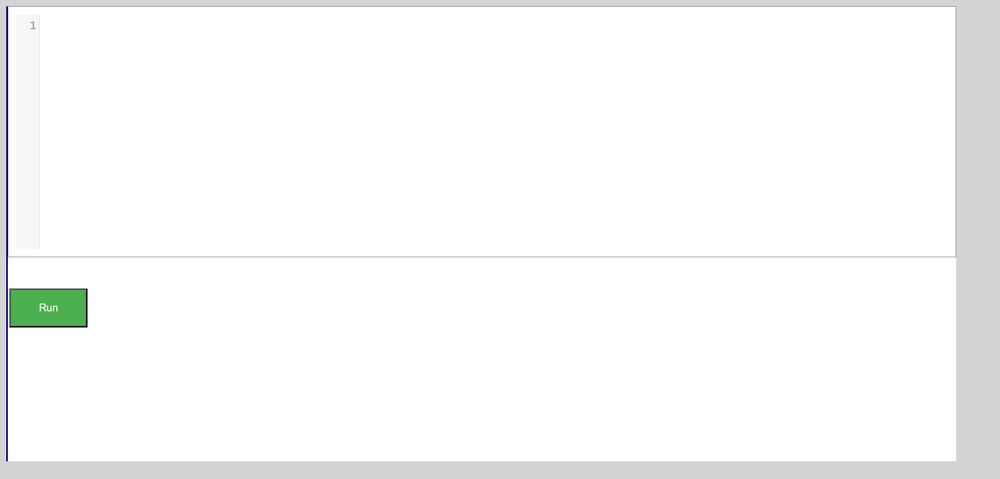
FailVerify the user see list of Practice Questions in Practice Questions Page of three options pagesGiven The user is on the DSAlgo homepage after signGiven The user is navigates to seven Options "LinkedList" and 3 of LinkedList pageWhen the user clicks on the Practice Questions linkThen the user should see list of Practice Questions in Practice Questions PagedsAlgoHooks.Hooks.tearDown(io.cucumber.java.Scenario)Verify the user see list of Practice Questions in Practice Questions Page of three options pagesPassVerify the user is able to navigate to the Practice Questions mentioned under Seven options of LinkedListPassVerify the user is able to navigate to the Practice Questions mentioned under Seven options of LinkedListGiven The user is on the DSAlgo homepage after signGiven The user is navigates to seven Options "LinkedList" and 1 of LinkedList pageWhen the user clicks on the Practice Questions linkThen the user should navigated to the Practice Questions page of three options "LinkedList" and 1 in Stack pagePassVerify the user is able to navigate to the Practice Questions mentioned under Seven options of LinkedListGiven The user is on the DSAlgo homepage after signGiven The user is navigates to seven Options "LinkedList" and 7 of LinkedList pageWhen the user clicks on the Practice Questions linkThen the user should navigated to the Practice Questions page of three options "LinkedList" and 7 in Stack pageFailVerify the user see list of Practice Questions in Practice Questions Page of three options pagesFailVerify the user see list of Practice Questions in Practice Questions Page of three options pagesGiven The user is on the DSAlgo homepage after signGiven The user is navigates to seven Options "LinkedList" and 1 of LinkedList pageWhen the user clicks on the Practice Questions linkThen the user should see list of Practice Questions in Practice Questions PagedsAlgoHooks.Hooks.tearDown(io.cucumber.java.Scenario)Verify the user see list of Practice Questions in Practice Questions Page of three options pages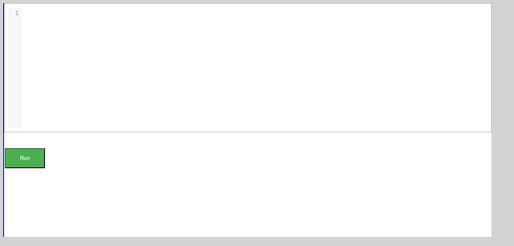 -
Queue functionality
9:37:18 AM / 00:01:50:969 Fail
Queue functionality
01.28.2025 9:37:18 AM 01.28.2025 9:39:09 AM 00:01:50:969 · #test-id=1,070PassVerify that user is able to navigate to "Queue" data structure pageGiven The user is on the DSAlgo homepage after signWhen The user clicks the Getting Started button in Queue PanelThen The user be directed to Queue DataStructure PagePassVerify that user is able to navigate to "Implementation of Queue in Python" pageGiven The user is on the DSAlgo homepage after signGiven The user is in the Queue page after Sign inWhen User clicks Implementation of Queue in Python buttonThen User should be redirected to Implementation of Queue in Python pagePassVerify that user is able to navigate to "try Editor" page for "Implementation of Queue in Python" pageGiven The user is on the DSAlgo homepage after signGiven User is on the Implementation of Queue in Python pageWhen The user clicks Try Here button in Implementation of Queue in Python pageThen User should be redirected to a page having an try Editor with a Run button to testPassVerify that user is able to navigate to "Implementation using collections.deque" pageGiven The user is on the DSAlgo homepage after signGiven The user is in the Implementation of Queue in Python pageWhen The user clicks Implementation using collections deque buttonThen The user should be redirected to Implementation using collections deque pagePassVerify that user is able to navigate to "try Editor" page for "Implementation using collections.deque" pageGiven The user is on the DSAlgo homepage after signGiven The user is on the Implementation using collections deque pageWhen The user clicks Try Here button in Implementation using collections deque pageThen User should be redirected to a page having an try Editor with a Run button to testPassVerify that user is able to navigate to "try Editor" page for "Implementation using array" pageGiven The user is on the DSAlgo homepage after signGiven The user is on the Implementation using array pageWhen The user clicks Try Here button in Implementation using array pageThen User should be redirected to a page having an try Editor with a Run button to testPassVerify that user is able to navigate to "Implementation using array" pageGiven The user is on the DSAlgo homepage after signGiven The user is in the Implementation using collections deque pageWhen The user clicks Implementation using array buttonThen The user should be redirected to Implementation using array pagePassVerify that user is able to navigate to "Queue Operations" pageGiven The user is on the DSAlgo homepage after signGiven The user is in the Implementation using array pageWhen User clicks Queue Operations buttonThen User should be redirected to Queue Operations pagePassVerify that user is able to navigate to "try Editor" page for "Queue Operations" pageGiven The user is on the DSAlgo homepage after signGiven User is on the Queue Operations pageWhen The user clicks Try here button in Queue Operations pageThen User should be redirected to a page having an try Editor with a Run button to testPassVerify that valid and invalid python code in TryEditor Implementation of Queue in PythonPassVerify that valid and invalid python code in TryEditor Implementation of Queue in PythonGiven The user is on the DSAlgo homepage after signGiven The user is in TryEditor page of Implementation of Queue in PythonWhen The user enters code from "Valid","tryEditor" and 1 clicks the Run buttonThen The user should see a result "successouput","tryEditor" and 1PassVerify that valid and invalid python code in TryEditor Implementation of Queue in PythonGiven The user is on the DSAlgo homepage after signGiven The user is in TryEditor page of Implementation of Queue in PythonWhen The user enters code from "Invalid","tryEditor" and 2 clicks the Run buttonThen The user should see a result "alertmessageoutput","tryEditor" and 2PassVerify the user is able to navigate to the pratice questions on each Queue topicsGiven The user is on the DSAlgo homepage after signGiven The user navigates to options "Queue" and 2 of Queue pageWhen User click Practice Questions LinkThen User should navigate to Practice questions from "Queue" and 2 Queue TopicsPassVerify the user is able to navigate to the pratice questions on each Queue topicsGiven The user is on the DSAlgo homepage after signGiven The user navigates to options "Queue" and 3 of Queue pageWhen User click Practice Questions LinkThen User should navigate to Practice questions from "Queue" and 3 Queue TopicsFailVerify that valid and invalid python code in TryEditor Implementation using collections dequePassVerify that valid and invalid python code in TryEditor Implementation using collections dequeGiven The user is on the DSAlgo homepage after signGiven The user is in TryEditor page of Implementation using collections deque in PythonWhen The user enters code from "Valid","tryEditor" and 1 clicks the Run buttonThen The user should see a result "successouput","tryEditor" and 1PassVerify that valid and invalid python code in TryEditor Implementation using collections dequeGiven The user is on the DSAlgo homepage after signGiven The user is in TryEditor page of Implementation using collections deque in PythonWhen The user enters code from "Invalid","tryEditor" and 2 clicks the Run buttonThen The user should see a result "alertmessageoutput","tryEditor" and 2FailVerify the user see list of Practice Questions in Practice Questions Page of Queue OptionsGiven The user is on the DSAlgo homepage after signGiven The user navigates to Queue Options "" and 3 of queue page When The user clicks on the Practice Questions linkStep skippedThen The user should see list of Practice Questions in Practice Questions PageStep skippeddsAlgoHooks.Hooks.tearDown(io.cucumber.java.Scenario)Verify the user see list of Practice Questions in Practice Questions Page of Queue Options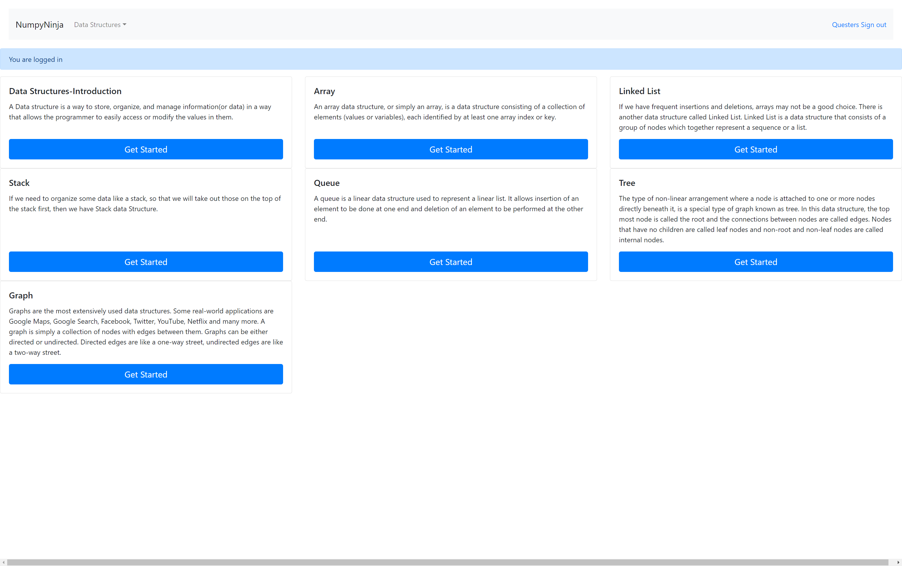FailVerify that valid and invalid python code in TryEditor Implementation using arrayPassVerify that valid and invalid python code in TryEditor Implementation using arrayGiven The user is on the DSAlgo homepage after signGiven The user is in TryEditor page of Implementation using array in PythonWhen The user enters code from "Valid","tryEditor" and 1 clicks the Run buttonThen The user should see a result "successouput","tryEditor" and 1PassVerify that valid and invalid python code in TryEditor Implementation using arrayGiven The user is on the DSAlgo homepage after signGiven The user is in TryEditor page of Implementation using array in PythonWhen The user enters code from "Invalid","tryEditor" and 2 clicks the Run buttonThen The user should see a result "alertmessageoutput","tryEditor" and 2FailVerify the user see list of Practice Questions in Practice Questions Page of Queue OptionsGiven The user is on the DSAlgo homepage after signGiven The user navigates to Queue Options "" and 2 of queue page When The user clicks on the Practice Questions linkStep skippedThen The user should see list of Practice Questions in Practice Questions PageStep skippeddsAlgoHooks.Hooks.tearDown(io.cucumber.java.Scenario)Verify the user see list of Practice Questions in Practice Questions Page of Queue Options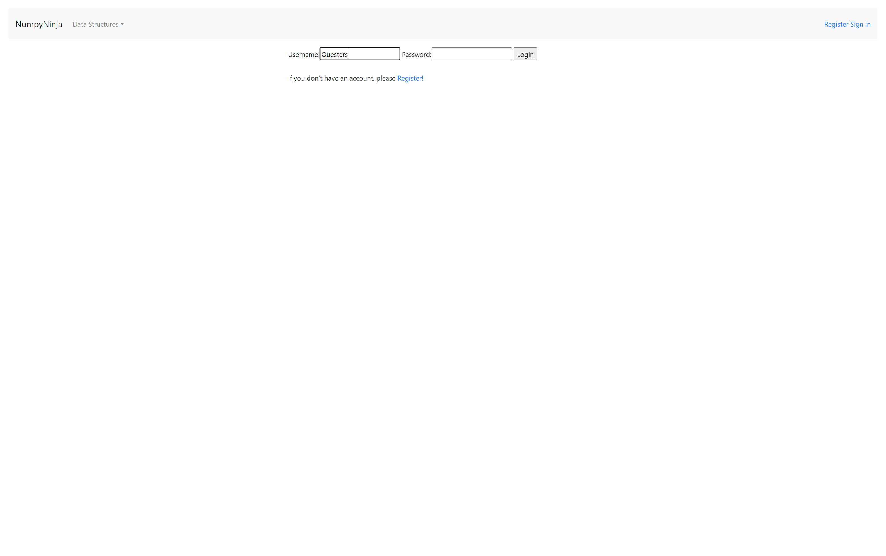PassVerify that valid and invalid python code in TryEditor Queue OperationsPassVerify that valid and invalid python code in TryEditor Queue OperationsGiven The user is on the DSAlgo homepage after signGiven The user is in TryEditor page of Queue Operations in PythonWhen The user enters code from "Valid","tryEditor" and 1 clicks the Run buttonThen The user should see a result "successouput","tryEditor" and 1PassVerify that valid and invalid python code in TryEditor Queue OperationsGiven The user is on the DSAlgo homepage after signGiven The user is in TryEditor page of Queue Operations in PythonWhen The user enters code from "Invalid","tryEditor" and 2 clicks the Run buttonThen The user should see a result "alertmessageoutput","tryEditor" and 2PassVerify the user is able to navigate to the pratice questions on each Queue topicsGiven The user is on the DSAlgo homepage after signGiven The user navigates to options "Queue" and 4 of Queue pageWhen User click Practice Questions LinkThen User should navigate to Practice questions from "Queue" and 4 Queue TopicsFailVerify that user receives error when user clicks on run button without entering code in tryeditor for Implementation of Queue in PythonGiven The user is on the DSAlgo homepage after signGiven The user is on the tryeditor page of Implementation of Queue in PythonWhen the user clicks the Run button of Implementation of Queue in PythonThen the user should see an error messagedsAlgoHooks.Hooks.tearDown(io.cucumber.java.Scenario)FailVerify the user is able to navigate to the pratice questions on each Queue topicsPassVerify the user is able to navigate to the pratice questions on each Queue topicsGiven The user is on the DSAlgo homepage after signGiven The user navigates to options "Queue" and 1 of Queue pageWhen User click Practice Questions LinkThen User should navigate to Practice questions from "Queue" and 1 Queue TopicsFailVerify the user see list of Practice Questions in Practice Questions Page of Queue OptionsGiven The user is on the DSAlgo homepage after signGiven The user navigates to Queue Options "" and 4 of queue page When The user clicks on the Practice Questions linkStep skippedThen The user should see list of Practice Questions in Practice Questions PageStep skippeddsAlgoHooks.Hooks.tearDown(io.cucumber.java.Scenario)Verify the user see list of Practice Questions in Practice Questions Page of Queue Options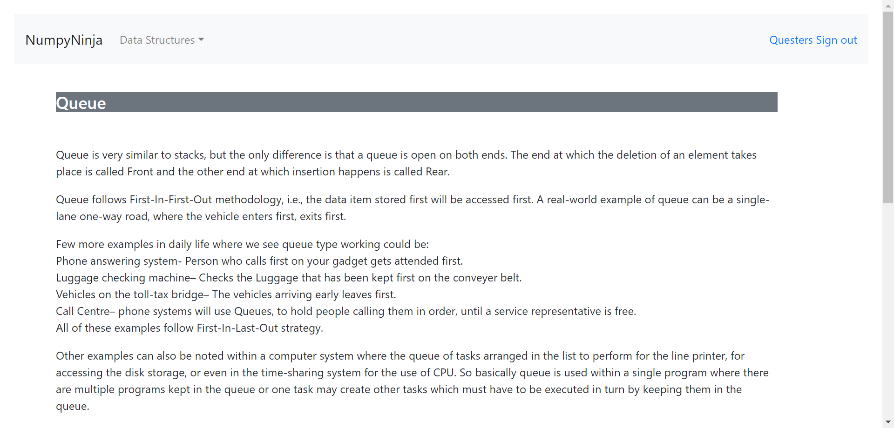FailVerify the user see list of Practice Questions in Practice Questions Page of Queue OptionsFailVerify the user see list of Practice Questions in Practice Questions Page of Queue OptionsGiven The user is on the DSAlgo homepage after signGiven The user navigates to Queue Options "" and 1 of queue page When The user clicks on the Practice Questions linkStep skippedThen The user should see list of Practice Questions in Practice Questions PageStep skippeddsAlgoHooks.Hooks.tearDown(io.cucumber.java.Scenario)Verify the user see list of Practice Questions in Practice Questions Page of Queue Options
-
Register functionality
9:38:40 AM / 00:01:09:654 Pass
Register functionality
01.28.2025 9:38:40 AM 01.28.2025 9:39:50 AM 00:01:09:654 · #test-id=1,243PassVerify the user is able to land on Register PageGiven The User is On The Home PageWhen User clicks Register link on the Home pageThen The user should be redirected to Register formPassVerify that user gets error message giving username without entering password and password confirmation when clicking onPassVerify that user gets error message giving username without entering password and password confirmation when clicking onGiven The user is on the register pageWhen The user enters the username and clicks Register button "Register" and 1Then The user should get error message "Please fill out this field" is displayed in Password Confirmation textboxPass: Verify that user gets error message giving username and password without entering password confirmation whenPass: Verify that user gets error message giving username and password without entering password confirmation whenGiven The user is on the register pageWhen The user enters the username and password and clicks Register button "Register" and 2Then The user should get error message " Please fill out this field" is displayed in Password Confirmation textboxPassVerify that user gets error message without entering username , password and password confirmation when clicking onPassVerify that user gets error message without entering username , password and password confirmation when clicking onGiven The user is on the register pageWhen The user clicks Register button on the Register page without entering username ,password and password confirmation "Register"and 3Then The user should get error message " Please fill out this field" is displayed in Password Confirmation textboxPassVerify that user gets error message giving username and entering password and password confirmation different whenPassVerify that user gets error message giving username and entering password and password confirmation different whenGiven The user is on the register pageWhen The user enters the username and password different and clicks Register button from sheet "Register" and row 4Then The user should get error message "password_mismatch:The two password fields didn’t match." in register pagePassVerify that user gets error mesage when entering only numeric when clicking on register buttonPassVerify that user gets error mesage when entering only numeric when clicking on register buttonGiven The user is on the register pageWhen The user enters the Password only numeric and clicks Register button from sheet "Register" and row 5Then The user should get error message "password_mismatch:The two password fields didn’t match." in register pagePassVerify that user gets error message giving invalid username like %,$,& (Example: Tom$, Tom%) when clicking on registerPassVerify that user gets error message giving invalid username like %,$,& (Example: Tom$, Tom%) when clicking on registerGiven The user is on the register pageWhen The user enters the invalid username like %,$,& and clicks Register button from sheet "Register" and row 6Then The user should get error message "password_mismatch:The two password fields didn’t match." in register pagePassVerify that user gets error message while entering the password less than 8 characters when clicking on register buttonPassVerify that user gets error message while entering the password less than 8 characters when clicking on register buttonGiven The user is on the register pageWhen The user enters the password less than eight characters and clicks Register button from sheet "Register" and row 7Then The user should get error message "password_mismatch:The two password fields didn’t match." in register pagePassVerify that user is able to see Register and sign in linkswhen clicking on signout linkGiven The User is On The Home PageWhen The user clicks Signout linkThen The user should be able to see Register and sign in links at the top corner of the home pagePassVerify that user is able to login to DSAlgo after doing successful registrationGiven The User is On The Home PageWhen The user clicks login buttonThen The user should be able to redirect to the home page of DsAlgo after Signin -
Signin functionality
9:39:09 AM / 00:02:42:293 Pass
Signin functionality
01.28.2025 9:39:09 AM 01.28.2025 9:41:52 AM 00:02:42:293 · #test-id=1,326PassVerify the user is direct to Login PageGiven The User is On the Home PageWhen User clicks on Sign in linkThen The user should be directed to Signin pagePassVerify the user is able to login giving valid username and valid password when clicking on login buttonPassVerify the user is able to login giving valid username and valid password when clicking on login buttonGiven The user is on the Login PageWhen User enters valid username and valid password and clicks Login button "Signin" and row 1Then The user is directed to Data Structure home page with message "You are logged in"PassVerify the user should not able to login giving Invalid username and valid password when clicking on login buttonPassVerify the user should not able to login giving Invalid username and valid password when clicking on login buttonGiven The user is on the Login PageWhen User enters Invalid username and valid password and clicks Login button "Signin" and row 2Then The user should get a warning message "Invalid Username and Password"PassVerify the user is able to navigate to the Operations in Stack in Stack pageGiven The user is on the DSAlgo homepage after signGiven the user is on the Stack pageWhen the user clicks on the Options "Stack" and 3 in Stack PageThen the user should navigated to the Options "Stack" and 3 in Stack pagePassVerify that user is able to run valid Python code in Try Editor for Stack PageGiven The user is on the DSAlgo homepage after signGiven The user is on the tryeditor page of ApplicationsWhen The user enters code "Invalid", "tryEditor" and 2 clicks the Run buttonThen The user should see an result "alertmessageoutput", "tryEditor" and 2PassVerify the user is able to navigate to the Operations in Tree in Tree pageGiven The user is on the DSAlgo homepage after signGiven User is on Tree PageWhen User click on Options "Tree" and 2 in Tree pageThen User should redirected to Options "Tree" and 2 in Tree pagePassVerify the user should not able to login giving valid username and Invalid password when clicking on login buttonPassVerify the user should not able to login giving valid username and Invalid password when clicking on login buttonGiven The user is on the Login PageWhen User enters valid username and Invalid password and clicks Login button "Signin" and row 3Then The user should get a warning message "Invalid Username and Password"PassVerify the user should not able to login giving Invalid username and Invalid password when clicking on login buttonPassVerify the user should not able to login giving Invalid username and Invalid password when clicking on login buttonGiven The user is on the Login PageWhen User enters Invalid username and Invalid password and clicks Login button "Signin" and row 4Then The user should get a warning message "Invalid Username and Password"PassVerify that user is able to navigate to the try Editor page from different options in Stack PageGiven The user is on the DSAlgo homepage after signGiven The user is on the Stack Options "Stack" and 2 pageWhen The user clicks on the Try here button on the Stack Options pageThen The user should navigate to the tryeditor pagePassVerify the user is able to navigate to the Practice Questions mentioned under three options pagesGiven The user is on the DSAlgo homepage after signGiven The user is navigates to three Options "Stack" and 3 of stack pageWhen the user clicks on the Practice Questions linkThen the user should navigated to the Practice Questions page of three options "Stack" and 3 in Stack pagePassVerify the user is able to navigate to the Operations in Tree in Tree pageGiven The user is on the DSAlgo homepage after signGiven User is on Tree PageWhen User click on Options "Tree" and 3 in Tree pageThen User should redirected to Options "Tree" and 3 in Tree pagePassVerify the user is able to navigate to the Operations in Tree in Tree pageGiven The user is on the DSAlgo homepage after signGiven User is on Tree PageWhen User click on Options "Tree" and 12 in Tree pageThen User should redirected to Options "Tree" and 12 in Tree pagePassVerify the user is able to navigate to TryEditor page from Tree OptionsGiven The user is on the DSAlgo homepage after signGiven The user is on the Tree Options "Tree" and 7 pageWhen The user click Try Here button on Tree Options pageThen The user should redirected to Try Editor of each OptionsPassVerify the user should not able to login giving empty username and empty password when clicking on login buttonGiven The user is on the Login PageWhen User clicks Login button without entering username and passwordThen The user should get a element showing empty field "Please fill out this field."PassVerify the user gets error message without entering username and giving Password when clicking on login buttonPassVerify the user gets error message without entering username and giving Password when clicking on login buttonGiven The user is on the Login PageWhen User clicks on Login link on Login page without entering username and giving password from sheetname "Signin" and row 5Then The user should get a element showing empty field "Please fill out this field."PassVerify the user gets error message entering username and without entering Password when clicking on login buttonPassVerify the user gets error message entering username and without entering Password when clicking on login buttonGiven The user is on the Login PageWhen User clicks on Login link on Login page entering username and without entering password from sheetname "Signin" and row 6Then The user should get a element showing empty field "Please fill out this field."PassVerify that user is able to navigate to the try Editor page from different options in Stack PageGiven The user is on the DSAlgo homepage after signGiven The user is on the Stack Options "Stack" and 3 pageWhen The user clicks on the Try here button on the Stack Options pageThen The user should navigate to the tryeditor pagePassVerify the user is able to sign out successfullyGiven The user is On the Home PageWhen User clicks Signout linkThen The user should be redirected to home page with message "Logged out successfully" -
Stack functionality
9:39:49 AM / 00:04:14:003 Fail
Stack functionality
01.28.2025 9:39:49 AM 01.28.2025 9:44:03 AM 00:04:14:003 · #test-id=1,408PassVerify that the user can navigate to the Stack page after signinGiven The user is on the DSAlgo homepage after signWhen the user clicks on the GetStarted button of Stack sectionThen the user is navigated to the Stack pagePassVerify the user is able to navigate to the Operations in Stack in Stack pagePassVerify the user is able to navigate to the Operations in Stack in Stack pageGiven The user is on the DSAlgo homepage after signGiven the user is on the Stack pageWhen the user clicks on the Options "Stack" and 1 in Stack PageThen the user should navigated to the Options "Stack" and 1 in Stack pagePassVerify the user is able to navigate to the Operations in Stack in Stack pageGiven The user is on the DSAlgo homepage after signGiven the user is on the Stack pageWhen the user clicks on the Options "Stack" and 2 in Stack PageThen the user should navigated to the Options "Stack" and 2 in Stack pageFailVerify that user is able to navigate to the try Editor page from different options in Stack PagePassVerify that user is able to navigate to the try Editor page from different options in Stack PageGiven The user is on the DSAlgo homepage after signGiven The user is on the Stack Options "Stack" and 1 pageWhen The user clicks on the Try here button on the Stack Options pageThen The user should navigate to the tryeditor pagePassVerify the user is able to navigate to the Practice Questions mentioned under three options pagesGiven The user is on the DSAlgo homepage after signGiven The user is navigates to three Options "Stack" and 1 of stack pageWhen the user clicks on the Practice Questions linkThen the user should navigated to the Practice Questions page of three options "Stack" and 1 in Stack pageFailVerify that user receives error when user clicks on run button without entering code in tryeditor for Stack PageGiven The user is on the DSAlgo homepage after signGiven The user is on the tryeditor page of three Options "Stack" and 3 of stack pageWhen the user clicks the Run buttonThen the user should see an error messagedsAlgoHooks.Hooks.tearDown(io.cucumber.java.Scenario)Verify that user receives error when user clicks on run button without entering code in tryeditor for Stack Page PassVerify the user is able to navigate to the Operations in Tree in Tree pageGiven The user is on the DSAlgo homepage after signGiven User is on Tree PageWhen User click on Options "Tree" and 10 in Tree pageThen User should redirected to Options "Tree" and 10 in Tree pagePassVerify the user is able to navigate to TryEditor page from Tree OptionsGiven The user is on the DSAlgo homepage after signGiven The user is on the Tree Options "Tree" and 6 pageWhen The user click Try Here button on Tree Options pageThen The user should redirected to Try Editor of each OptionsFailVerify that user is able to run valid Python code in Try Editor for Stack PagePassVerify that user is able to run valid Python code in Try Editor for Stack PageGiven The user is on the DSAlgo homepage after signGiven The user is on the tryeditor page of Operations in StackWhen The user enters code "Valid", "tryEditor" and 1 clicks the Run buttonThen The user should see an result "successouput", "tryEditor" and 1PassVerify that user is able to run valid Python code in Try Editor for Stack PageGiven The user is on the DSAlgo homepage after signGiven The user is on the tryeditor page of Operations in StackWhen The user enters code "Invalid", "tryEditor" and 2 clicks the Run buttonThen The user should see an result "alertmessageoutput", "tryEditor" and 2FailVerify the user see list of Practice Questions in Practice Questions Page of three options pagesGiven The user is on the DSAlgo homepage after signGiven The user is navigates to three Options "Stack" and 2 of stack pageWhen the user clicks on the Practice Questions linkThen the user should see list of Practice Questions in Practice Questions PagedsAlgoHooks.Hooks.tearDown(io.cucumber.java.Scenario)Verify the user see list of Practice Questions in Practice Questions Page of three options pages
PassVerify the user is able to navigate to the Operations in Tree in Tree pageGiven The user is on the DSAlgo homepage after signGiven User is on Tree PageWhen User click on Options "Tree" and 10 in Tree pageThen User should redirected to Options "Tree" and 10 in Tree pagePassVerify the user is able to navigate to TryEditor page from Tree OptionsGiven The user is on the DSAlgo homepage after signGiven The user is on the Tree Options "Tree" and 6 pageWhen The user click Try Here button on Tree Options pageThen The user should redirected to Try Editor of each OptionsFailVerify that user is able to run valid Python code in Try Editor for Stack PagePassVerify that user is able to run valid Python code in Try Editor for Stack PageGiven The user is on the DSAlgo homepage after signGiven The user is on the tryeditor page of Operations in StackWhen The user enters code "Valid", "tryEditor" and 1 clicks the Run buttonThen The user should see an result "successouput", "tryEditor" and 1PassVerify that user is able to run valid Python code in Try Editor for Stack PageGiven The user is on the DSAlgo homepage after signGiven The user is on the tryeditor page of Operations in StackWhen The user enters code "Invalid", "tryEditor" and 2 clicks the Run buttonThen The user should see an result "alertmessageoutput", "tryEditor" and 2FailVerify the user see list of Practice Questions in Practice Questions Page of three options pagesGiven The user is on the DSAlgo homepage after signGiven The user is navigates to three Options "Stack" and 2 of stack pageWhen the user clicks on the Practice Questions linkThen the user should see list of Practice Questions in Practice Questions PagedsAlgoHooks.Hooks.tearDown(io.cucumber.java.Scenario)Verify the user see list of Practice Questions in Practice Questions Page of three options pages FailVerify the user see list of Practice Questions in Practice Questions Page of three options pagesGiven The user is on the DSAlgo homepage after signGiven The user is navigates to three Options "Stack" and 3 of stack pageWhen the user clicks on the Practice Questions linkThen the user should see list of Practice Questions in Practice Questions PagedsAlgoHooks.Hooks.tearDown(io.cucumber.java.Scenario)Verify the user see list of Practice Questions in Practice Questions Page of three options pages
FailVerify the user see list of Practice Questions in Practice Questions Page of three options pagesGiven The user is on the DSAlgo homepage after signGiven The user is navigates to three Options "Stack" and 3 of stack pageWhen the user clicks on the Practice Questions linkThen the user should see list of Practice Questions in Practice Questions PagedsAlgoHooks.Hooks.tearDown(io.cucumber.java.Scenario)Verify the user see list of Practice Questions in Practice Questions Page of three options pages PassVerify the user is able to navigate to the Operations in Tree in Tree pageGiven The user is on the DSAlgo homepage after signGiven User is on Tree PageWhen User click on Options "Tree" and 6 in Tree pageThen User should redirected to Options "Tree" and 6 in Tree pagePassVerify the user is able to navigate to the Operations in Tree in Tree pageGiven The user is on the DSAlgo homepage after signGiven User is on Tree PageWhen User click on Options "Tree" and 9 in Tree pageThen User should redirected to Options "Tree" and 9 in Tree pagePassVerify the user is able to navigate to TryEditor page from Tree OptionsGiven The user is on the DSAlgo homepage after signGiven The user is on the Tree Options "Tree" and 2 pageWhen The user click Try Here button on Tree Options pageThen The user should redirected to Try Editor of each OptionsPassVerify the user is able to navigate to TryEditor page from Tree OptionsGiven The user is on the DSAlgo homepage after signGiven The user is on the Tree Options "Tree" and 8 pageWhen The user click Try Here button on Tree Options pageThen The user should redirected to Try Editor of each OptionsPassVerify that valid and invalid python code in TryEditor Overview of TreesGiven The user is on the DSAlgo homepage after signGiven The user is in TryEditor page of Overview of TreesWhen The user enters code from "Invalid","tryEditor" and 2 clicks the Run buttonThen The user should see a result "alertmessageoutput","tryEditor" and 2PassVerify that valid and invalid python code in TryEditor TerminologiesGiven The user is on the DSAlgo homepage after signGiven The user is in TryEditor page of TerminologiesWhen The user enters code from "Invalid","tryEditor" and 2 clicks the Run buttonThen The user should see a result "alertmessageoutput","tryEditor" and 2PassVerify that valid and invalid python code in TryEditor ApplicationsOfBinaryTreesGiven The user is on the DSAlgo homepage after signGiven The user is in TryEditor page of ApplicationsOfBinaryTreesWhen The user enters code from "Invalid","tryEditor" and 2 clicks the Run buttonThen The user should see a result "alertmessageoutput","tryEditor" and 2FailVerify that user is able to run valid Python code in Try Editor for Stack PagePassVerify that user is able to run valid Python code in Try Editor for Stack PageGiven The user is on the DSAlgo homepage after signGiven The user is on the tryeditor page of ImplementationWhen The user enters code "Valid", "tryEditor" and 1 clicks the Run buttonThen The user should see an result "successouput", "tryEditor" and 1PassVerify that user is able to run valid Python code in Try Editor for Stack PageGiven The user is on the DSAlgo homepage after signGiven The user is on the tryeditor page of ImplementationWhen The user enters code "Invalid", "tryEditor" and 2 clicks the Run buttonThen The user should see an result "alertmessageoutput", "tryEditor" and 2FailVerify that user receives error when user clicks on run button without entering code in tryeditor for Stack PageGiven The user is on the DSAlgo homepage after signGiven The user is on the tryeditor page of three Options "Stack" and 2 of stack pageWhen the user clicks the Run buttonThen the user should see an error messagedsAlgoHooks.Hooks.tearDown(io.cucumber.java.Scenario)PassVerify the user is able to navigate to the Operations in Tree in Tree pageGiven The user is on the DSAlgo homepage after signGiven User is on Tree PageWhen User click on Options "Tree" and 7 in Tree pageThen User should redirected to Options "Tree" and 7 in Tree pagePassVerify the user is able to navigate to TryEditor page from Tree OptionsGiven The user is on the DSAlgo homepage after signGiven The user is on the Tree Options "Tree" and 4 pageWhen The user click Try Here button on Tree Options pageThen The user should redirected to Try Editor of each OptionsPassVerify the user is able to navigate to TryEditor page from Tree OptionsGiven The user is on the DSAlgo homepage after signGiven The user is on the Tree Options "Tree" and 13 pageWhen The user click Try Here button on Tree Options pageThen The user should redirected to Try Editor of each OptionsPassVerify that user is able to run valid Python code in Try Editor for Stack PagePassVerify that user is able to run valid Python code in Try Editor for Stack PageGiven The user is on the DSAlgo homepage after signGiven The user is on the tryeditor page of ApplicationsWhen The user enters code "Valid", "tryEditor" and 1 clicks the Run buttonThen The user should see an result "successouput", "tryEditor" and 1PassVerify the user is able to navigate to the Practice Questions mentioned under three options pagesPassVerify the user is able to navigate to the Practice Questions mentioned under three options pagesGiven The user is on the DSAlgo homepage after signGiven The user is navigates to three Options "Stack" and 2 of stack pageWhen the user clicks on the Practice Questions linkThen the user should navigated to the Practice Questions page of three options "Stack" and 2 in Stack pageFailVerify the user see list of Practice Questions in Practice Questions Page of three options pagesFailVerify the user see list of Practice Questions in Practice Questions Page of three options pagesGiven The user is on the DSAlgo homepage after signGiven The user is navigates to three Options "Stack" and 1 of stack pageWhen the user clicks on the Practice Questions linkThen the user should see list of Practice Questions in Practice Questions PagedsAlgoHooks.Hooks.tearDown(io.cucumber.java.Scenario)Verify the user see list of Practice Questions in Practice Questions Page of three options pagesPassVerify the user is able to navigate to the Operations in Tree in Tree pageGiven The user is on the DSAlgo homepage after signGiven User is on Tree PageWhen User click on Options "Tree" and 4 in Tree pageThen User should redirected to Options "Tree" and 4 in Tree pagePassVerify the user is able to navigate to the Operations in Tree in Tree pageGiven The user is on the DSAlgo homepage after signGiven User is on Tree PageWhen User click on Options "Tree" and 13 in Tree pageThen User should redirected to Options "Tree" and 13 in Tree pagePassVerify the user is able to navigate to TryEditor page from Tree OptionsGiven The user is on the DSAlgo homepage after signGiven The user is on the Tree Options "Tree" and 10 pageWhen The user click Try Here button on Tree Options pageThen The user should redirected to Try Editor of each OptionsFailVerify that user receives error when user clicks on run button without entering code in tryeditor for Stack PageFailVerify that user receives error when user clicks on run button without entering code in tryeditor for Stack PageGiven The user is on the DSAlgo homepage after signGiven The user is on the tryeditor page of three Options "Stack" and 1 of stack pageWhen the user clicks the Run buttonThen the user should see an error messagedsAlgoHooks.Hooks.tearDown(io.cucumber.java.Scenario)Verify that user receives error when user clicks on run button without entering code in tryeditor for Stack PagePassVerify the user is able to navigate to the Operations in Tree in Tree pageGiven The user is on the DSAlgo homepage after signGiven User is on Tree PageWhen User click on Options "Tree" and 11 in Tree pageThen User should redirected to Options "Tree" and 11 in Tree pagePassVerify the user is able to navigate to TryEditor page from Tree OptionsGiven The user is on the DSAlgo homepage after signGiven The user is on the Tree Options "Tree" and 5 pageWhen The user click Try Here button on Tree Options pageThen The user should redirected to Try Editor of each OptionsPassVerify that valid and invalid python code in TryEditor Types of TreesGiven The user is on the DSAlgo homepage after signGiven The user is in TryEditor page of TypesOfTreesWhen The user enters code from "Invalid","tryEditor" and 2 clicks the Run buttonThen The user should see a result "alertmessageoutput","tryEditor" and 2
PassVerify the user is able to navigate to the Operations in Tree in Tree pageGiven The user is on the DSAlgo homepage after signGiven User is on Tree PageWhen User click on Options "Tree" and 6 in Tree pageThen User should redirected to Options "Tree" and 6 in Tree pagePassVerify the user is able to navigate to the Operations in Tree in Tree pageGiven The user is on the DSAlgo homepage after signGiven User is on Tree PageWhen User click on Options "Tree" and 9 in Tree pageThen User should redirected to Options "Tree" and 9 in Tree pagePassVerify the user is able to navigate to TryEditor page from Tree OptionsGiven The user is on the DSAlgo homepage after signGiven The user is on the Tree Options "Tree" and 2 pageWhen The user click Try Here button on Tree Options pageThen The user should redirected to Try Editor of each OptionsPassVerify the user is able to navigate to TryEditor page from Tree OptionsGiven The user is on the DSAlgo homepage after signGiven The user is on the Tree Options "Tree" and 8 pageWhen The user click Try Here button on Tree Options pageThen The user should redirected to Try Editor of each OptionsPassVerify that valid and invalid python code in TryEditor Overview of TreesGiven The user is on the DSAlgo homepage after signGiven The user is in TryEditor page of Overview of TreesWhen The user enters code from "Invalid","tryEditor" and 2 clicks the Run buttonThen The user should see a result "alertmessageoutput","tryEditor" and 2PassVerify that valid and invalid python code in TryEditor TerminologiesGiven The user is on the DSAlgo homepage after signGiven The user is in TryEditor page of TerminologiesWhen The user enters code from "Invalid","tryEditor" and 2 clicks the Run buttonThen The user should see a result "alertmessageoutput","tryEditor" and 2PassVerify that valid and invalid python code in TryEditor ApplicationsOfBinaryTreesGiven The user is on the DSAlgo homepage after signGiven The user is in TryEditor page of ApplicationsOfBinaryTreesWhen The user enters code from "Invalid","tryEditor" and 2 clicks the Run buttonThen The user should see a result "alertmessageoutput","tryEditor" and 2FailVerify that user is able to run valid Python code in Try Editor for Stack PagePassVerify that user is able to run valid Python code in Try Editor for Stack PageGiven The user is on the DSAlgo homepage after signGiven The user is on the tryeditor page of ImplementationWhen The user enters code "Valid", "tryEditor" and 1 clicks the Run buttonThen The user should see an result "successouput", "tryEditor" and 1PassVerify that user is able to run valid Python code in Try Editor for Stack PageGiven The user is on the DSAlgo homepage after signGiven The user is on the tryeditor page of ImplementationWhen The user enters code "Invalid", "tryEditor" and 2 clicks the Run buttonThen The user should see an result "alertmessageoutput", "tryEditor" and 2FailVerify that user receives error when user clicks on run button without entering code in tryeditor for Stack PageGiven The user is on the DSAlgo homepage after signGiven The user is on the tryeditor page of three Options "Stack" and 2 of stack pageWhen the user clicks the Run buttonThen the user should see an error messagedsAlgoHooks.Hooks.tearDown(io.cucumber.java.Scenario)PassVerify the user is able to navigate to the Operations in Tree in Tree pageGiven The user is on the DSAlgo homepage after signGiven User is on Tree PageWhen User click on Options "Tree" and 7 in Tree pageThen User should redirected to Options "Tree" and 7 in Tree pagePassVerify the user is able to navigate to TryEditor page from Tree OptionsGiven The user is on the DSAlgo homepage after signGiven The user is on the Tree Options "Tree" and 4 pageWhen The user click Try Here button on Tree Options pageThen The user should redirected to Try Editor of each OptionsPassVerify the user is able to navigate to TryEditor page from Tree OptionsGiven The user is on the DSAlgo homepage after signGiven The user is on the Tree Options "Tree" and 13 pageWhen The user click Try Here button on Tree Options pageThen The user should redirected to Try Editor of each OptionsPassVerify that user is able to run valid Python code in Try Editor for Stack PagePassVerify that user is able to run valid Python code in Try Editor for Stack PageGiven The user is on the DSAlgo homepage after signGiven The user is on the tryeditor page of ApplicationsWhen The user enters code "Valid", "tryEditor" and 1 clicks the Run buttonThen The user should see an result "successouput", "tryEditor" and 1PassVerify the user is able to navigate to the Practice Questions mentioned under three options pagesPassVerify the user is able to navigate to the Practice Questions mentioned under three options pagesGiven The user is on the DSAlgo homepage after signGiven The user is navigates to three Options "Stack" and 2 of stack pageWhen the user clicks on the Practice Questions linkThen the user should navigated to the Practice Questions page of three options "Stack" and 2 in Stack pageFailVerify the user see list of Practice Questions in Practice Questions Page of three options pagesFailVerify the user see list of Practice Questions in Practice Questions Page of three options pagesGiven The user is on the DSAlgo homepage after signGiven The user is navigates to three Options "Stack" and 1 of stack pageWhen the user clicks on the Practice Questions linkThen the user should see list of Practice Questions in Practice Questions PagedsAlgoHooks.Hooks.tearDown(io.cucumber.java.Scenario)Verify the user see list of Practice Questions in Practice Questions Page of three options pagesPassVerify the user is able to navigate to the Operations in Tree in Tree pageGiven The user is on the DSAlgo homepage after signGiven User is on Tree PageWhen User click on Options "Tree" and 4 in Tree pageThen User should redirected to Options "Tree" and 4 in Tree pagePassVerify the user is able to navigate to the Operations in Tree in Tree pageGiven The user is on the DSAlgo homepage after signGiven User is on Tree PageWhen User click on Options "Tree" and 13 in Tree pageThen User should redirected to Options "Tree" and 13 in Tree pagePassVerify the user is able to navigate to TryEditor page from Tree OptionsGiven The user is on the DSAlgo homepage after signGiven The user is on the Tree Options "Tree" and 10 pageWhen The user click Try Here button on Tree Options pageThen The user should redirected to Try Editor of each OptionsFailVerify that user receives error when user clicks on run button without entering code in tryeditor for Stack PageFailVerify that user receives error when user clicks on run button without entering code in tryeditor for Stack PageGiven The user is on the DSAlgo homepage after signGiven The user is on the tryeditor page of three Options "Stack" and 1 of stack pageWhen the user clicks the Run buttonThen the user should see an error messagedsAlgoHooks.Hooks.tearDown(io.cucumber.java.Scenario)Verify that user receives error when user clicks on run button without entering code in tryeditor for Stack PagePassVerify the user is able to navigate to the Operations in Tree in Tree pageGiven The user is on the DSAlgo homepage after signGiven User is on Tree PageWhen User click on Options "Tree" and 11 in Tree pageThen User should redirected to Options "Tree" and 11 in Tree pagePassVerify the user is able to navigate to TryEditor page from Tree OptionsGiven The user is on the DSAlgo homepage after signGiven The user is on the Tree Options "Tree" and 5 pageWhen The user click Try Here button on Tree Options pageThen The user should redirected to Try Editor of each OptionsPassVerify that valid and invalid python code in TryEditor Types of TreesGiven The user is on the DSAlgo homepage after signGiven The user is in TryEditor page of TypesOfTreesWhen The user enters code from "Invalid","tryEditor" and 2 clicks the Run buttonThen The user should see a result "alertmessageoutput","tryEditor" and 2 -
Tree functionality
9:40:54 AM / 00:03:38:914 Fail
Tree functionality
01.28.2025 9:40:54 AM 01.28.2025 9:44:33 AM 00:03:38:914 · #test-id=1,585PassVerify that user is able to navigate to "Tree" data structure pageGiven The user is on the DSAlgo homepage after signWhen The user clicks the Getting Started button in Tree PanelThen The user be directed to Tree DataStructure PagePassVerify the user is able to navigate to the Operations in Tree in Tree pagePassVerify the user is able to navigate to the Operations in Tree in Tree pageGiven The user is on the DSAlgo homepage after signGiven User is on Tree PageWhen User click on Options "Tree" and 1 in Tree pageThen User should redirected to Options "Tree" and 1 in Tree pagePassVerify the user is able to navigate to the Operations in Tree in Tree pageGiven The user is on the DSAlgo homepage after signGiven User is on Tree PageWhen User click on Options "Tree" and 5 in Tree pageThen User should redirected to Options "Tree" and 5 in Tree pagePassVerify the user is able to navigate to the Operations in Tree in Tree pageGiven The user is on the DSAlgo homepage after signGiven User is on Tree PageWhen User click on Options "Tree" and 8 in Tree pageThen User should redirected to Options "Tree" and 8 in Tree pagePassVerify the user is able to navigate to TryEditor page from Tree OptionsGiven The user is on the DSAlgo homepage after signGiven The user is on the Tree Options "Tree" and 3 pageWhen The user click Try Here button on Tree Options pageThen The user should redirected to Try Editor of each OptionsPassVerify the user is able to navigate to TryEditor page from Tree OptionsGiven The user is on the DSAlgo homepage after signGiven The user is on the Tree Options "Tree" and 9 pageWhen The user click Try Here button on Tree Options pageThen The user should redirected to Try Editor of each OptionsPassVerify the user is able to navigate to TryEditor page from Tree OptionsGiven The user is on the DSAlgo homepage after signGiven The user is on the Tree Options "Tree" and 12 pageWhen The user click Try Here button on Tree Options pageThen The user should redirected to Try Editor of each OptionsPassVerify that valid and invalid python code in TryEditor BinaryTreesGiven The user is on the DSAlgo homepage after signGiven The user is in TryEditor page of BinaryTreesWhen The user enters code from "Invalid","tryEditor" and 2 clicks the Run buttonThen The user should see a result "alertmessageoutput","tryEditor" and 2PassVerify that valid and invalid python code in TryEditor TypesOfBinaryTreesGiven The user is on the DSAlgo homepage after signGiven The user is in TryEditor page of TypesOfBinaryTreesWhen The user enters code from "Invalid","tryEditor" and 2 clicks the Run buttonThen The user should see a result "alertmessageoutput","tryEditor" and 2PassVerify that valid and invalid python code in TryEditor ImplementationOfBSTGiven The user is on the DSAlgo homepage after signGiven The user is in TryEditor page of ImplementationOfBSTWhen The user enters code from "Invalid","tryEditor" and 2 clicks the Run buttonThen The user should see a result "alertmessageoutput","tryEditor" and 2PassVerify the user is able to navigate to TryEditor page from Tree OptionsPassVerify the user is able to navigate to TryEditor page from Tree OptionsGiven The user is on the DSAlgo homepage after signGiven The user is on the Tree Options "Tree" and 1 pageWhen The user click Try Here button on Tree Options pageThen The user should redirected to Try Editor of each OptionsPassVerify the user is able to navigate to TryEditor page from Tree OptionsGiven The user is on the DSAlgo homepage after signGiven The user is on the Tree Options "Tree" and 11 pageWhen The user click Try Here button on Tree Options pageThen The user should redirected to Try Editor of each OptionsPassVerify that valid and invalid python code in TryEditor Tree TraversalsGiven The user is on the DSAlgo homepage after signGiven The user is in TryEditor page of TreeTraversalsWhen The user enters code from "Invalid","tryEditor" and 2 clicks the Run buttonThen The user should see a result "alertmessageoutput","tryEditor" and 2PassVerify that valid and invalid python code in TryEditor Overview of TreesPassVerify that valid and invalid python code in TryEditor Overview of TreesGiven The user is on the DSAlgo homepage after signGiven The user is in TryEditor page of Overview of TreesWhen The user enters code from "Valid","tryEditor" and 1 clicks the Run buttonThen The user should see a result "successouput","tryEditor" and 1PassVerify that valid and invalid python code in TryEditor TraversalsIllustrationGiven The user is on the DSAlgo homepage after signGiven The user is in TryEditor page of TraversalsIllustrationWhen The user enters code from "Invalid","tryEditor" and 2 clicks the Run buttonThen The user should see a result "alertmessageoutput","tryEditor" and 2PassVerify that valid and invalid python code in TryEditor TerminologiesPassVerify that valid and invalid python code in TryEditor TerminologiesGiven The user is on the DSAlgo homepage after signGiven The user is in TryEditor page of TerminologiesWhen The user enters code from "Valid","tryEditor" and 1 clicks the Run buttonThen The user should see a result "successouput","tryEditor" and 1PassVerify that valid and invalid python code in TryEditor Types of TreesPassVerify that valid and invalid python code in TryEditor Types of TreesGiven The user is on the DSAlgo homepage after signGiven The user is in TryEditor page of TypesOfTreesWhen The user enters code from "Valid","tryEditor" and 1 clicks the Run buttonThen The user should see a result "successouput","tryEditor" and 1PassVerify that valid and invalid python code in TryEditor Tree TraversalsPassVerify that valid and invalid python code in TryEditor Tree TraversalsGiven The user is on the DSAlgo homepage after signGiven The user is in TryEditor page of TreeTraversalsWhen The user enters code from "Valid","tryEditor" and 1 clicks the Run buttonThen The user should see a result "successouput","tryEditor" and 1PassVerify that valid and invalid python code in TryEditor BinaryTreeTraversalsGiven The user is on the DSAlgo homepage after signGiven The user is in TryEditor page of BinaryTreeTraversalsWhen The user enters code from "Invalid","tryEditor" and 2 clicks the Run buttonThen The user should see a result "alertmessageoutput","tryEditor" and 2PassVerify that valid and invalid python code in TryEditor TraversalsIllustrationPassVerify that valid and invalid python code in TryEditor TraversalsIllustrationGiven The user is on the DSAlgo homepage after signGiven The user is in TryEditor page of TraversalsIllustrationWhen The user enters code from "Valid","tryEditor" and 1 clicks the Run buttonThen The user should see a result "successouput","tryEditor" and 1PassVerify that valid and invalid python code in TryEditor BinaryTreesPassVerify that valid and invalid python code in TryEditor BinaryTreesGiven The user is on the DSAlgo homepage after signGiven The user is in TryEditor page of BinaryTreesWhen The user enters code from "Valid","tryEditor" and 1 clicks the Run buttonThen The user should see a result "successouput","tryEditor" and 1PassVerify that valid and invalid python code in TryEditor BinarySearchTreesGiven The user is on the DSAlgo homepage after signGiven The user is in TryEditor page of BinarySearchTreesWhen The user enters code from "Invalid","tryEditor" and 2 clicks the Run buttonThen The user should see a result "alertmessageoutput","tryEditor" and 2PassVerify that valid and invalid python code in TryEditor TypesOfBinaryTreesPassVerify that valid and invalid python code in TryEditor TypesOfBinaryTreesGiven The user is on the DSAlgo homepage after signGiven The user is in TryEditor page of TypesOfBinaryTreesWhen The user enters code from "Valid","tryEditor" and 1 clicks the Run buttonThen The user should see a result "successouput","tryEditor" and 1PassVerify that valid and invalid python code in TryEditor ImplementationInPythonGiven The user is on the DSAlgo homepage after signGiven The user is in TryEditor page of ImplementationInPythonWhen The user enters code from "Invalid","tryEditor" and 2 clicks the Run buttonThen The user should see a result "alertmessageoutput","tryEditor" and 2PassVerify that valid and invalid python code in TryEditor ImplementationInPythonPassVerify that valid and invalid python code in TryEditor ImplementationInPythonGiven The user is on the DSAlgo homepage after signGiven The user is in TryEditor page of ImplementationInPythonWhen The user enters code from "Valid","tryEditor" and 1 clicks the Run buttonThen The user should see a result "successouput","tryEditor" and 1PassVerify that valid and invalid python code in TryEditor BinaryTreeTraversalsPassVerify that valid and invalid python code in TryEditor BinaryTreeTraversalsGiven The user is on the DSAlgo homepage after signGiven The user is in TryEditor page of BinaryTreeTraversalsWhen The user enters code from "Valid","tryEditor" and 1 clicks the Run buttonThen The user should see a result "successouput","tryEditor" and 1PassVerify that valid and invalid python code in TryEditor ApplicationsOfBinaryTreesPassVerify that valid and invalid python code in TryEditor ApplicationsOfBinaryTreesGiven The user is on the DSAlgo homepage after signGiven The user is in TryEditor page of ApplicationsOfBinaryTreesWhen The user enters code from "Valid","tryEditor" and 1 clicks the Run buttonThen The user should see a result "successouput","tryEditor" and 1PassVerify that valid and invalid python code in TryEditor BinarySearchTreesPassVerify that valid and invalid python code in TryEditor BinarySearchTreesGiven The user is on the DSAlgo homepage after signGiven The user is in TryEditor page of BinarySearchTreesWhen The user enters code from "Valid","tryEditor" and 1 clicks the Run buttonThen The user should see a result "successouput","tryEditor" and 1PassVerify that valid and invalid python code in TryEditor ImplementationOfBSTPassVerify that valid and invalid python code in TryEditor ImplementationOfBSTGiven The user is on the DSAlgo homepage after signGiven The user is in TryEditor page of ImplementationOfBSTWhen The user enters code from "Valid","tryEditor" and 1 clicks the Run buttonThen The user should see a result "successouput","tryEditor" and 1FailVerify that user receives error when user clicks on run button without entering code in tryeditor for Overview of TreesGiven The user is on the DSAlgo homepage after signGiven The user is on the tryeditor page of Overview of TreesWhen the user clicks the Run button of Overview of TreesThen the user should see an error messagedsAlgoHooks.Hooks.tearDown(io.cucumber.java.Scenario)Verify that user receives error when user clicks on run button without entering code in tryeditor for Overview of TreesPassVerify the user is in Practical Question of Overview of TreesGiven The user is on the DSAlgo homepage after signGiven The user is in Overview of Trees pageWhen The user clicks on Practice QuestionsThen User should navigate to Practice questions pageFailVerify user can see practice question listGiven The user is on the DSAlgo homepage after signGiven The user is on Overview of Trees pageWhen The user click pn Practice QuestionsThen User can see Practice Question ListdsAlgoHooks.Hooks.tearDown(io.cucumber.java.Scenario)Verify user can see practice question list -
Array functionality
9:44:36 AM / 00:06:31:690 Fail
Array functionality
01.28.2025 9:44:36 AM 01.28.2025 9:51:07 AM 00:06:31:690 · #test-id=2,068PassVerify the user is able to navigate to the Operations in Array optionsPassVerify the user is able to navigate to the Operations in Array optionsGiven The user is on the DSAlgo homepage after signGiven the user is on the Array pageWhen the user clicks on the Options "Array" and 1 in Array PageThen the user should navigated to the Options "Array" and 1 in Array pagePassVerify the user is able to navigate to the Operations in Array optionsGiven The user is on the DSAlgo homepage after signGiven the user is on the Array pageWhen the user clicks on the Options "Array" and 2 in Array PageThen the user should navigated to the Options "Array" and 2 in Array pagePassVerify the user is able to navigate to the Operations in Array optionsGiven The user is on the DSAlgo homepage after signGiven the user is on the Array pageWhen the user clicks on the Options "Array" and 4 in Array PageThen the user should navigated to the Options "Array" and 4 in Array pagePassVerify the user is able to navigate to the Operations in Array optionsGiven The user is on the DSAlgo homepage after signGiven the user is on the Array pageWhen the user clicks on the Options "Array" and 3 in Array PageThen the user should navigated to the Options "Array" and 3 in Array pagePassVerify that user is able to run valid and invalid Python code in Try Editor for ArrayPageGiven The user is on the DSAlgo homepage after signGiven the user is on the tryeditor page of Array in pythonWhen The user enters code "Invalid", "tryEditor" and 2 from tryeditor and clicks the Run buttonThen The user should see an result "alertmessageoutput", "tryEditor" and 2PassVerify that user is able to run valid Python code in Try Editor for Array pageGiven The user is on the DSAlgo homepage after signGiven The user is on the tryeditor page of Array Using ListWhen The user enters code "Invalid", "tryEditor" and 2 clicks the Run buttonThen The user should see an result "alertmessageoutput", "tryEditor" and 2FailVerify that user is able to navigate to the try Editor page from different options in Array PagePassVerify that user is able to navigate to the try Editor page from different options in Array PageGiven The user is on the DSAlgo homepage after signGiven The user is on the Array Options "Array" and 4 pageWhen The user clicks on the Try here button on the Array Options pageThen the user should navigate to the tryeditor pagePassVerify that user is able to navigate to the try Editor page from different options in Array PageGiven The user is on the DSAlgo homepage after signGiven The user is on the Array Options "Array" and 3 pageWhen The user clicks on the Try here button on the Array Options pageThen the user should navigate to the tryeditor pagePassVerify that user is able to navigate to the try Editor page from different options in Array PageGiven The user is on the DSAlgo homepage after signGiven The user is on the Array Options "Array" and 2 pageWhen The user clicks on the Try here button on the Array Options pageThen the user should navigate to the tryeditor pagePassVerify that user is able to navigate to the try Editor page from different options in Array PageGiven The user is on the DSAlgo homepage after signGiven The user is on the Array Options "Array" and 1 pageWhen The user clicks on the Try here button on the Array Options pageThen the user should navigate to the tryeditor pageFailVerify that user receives error when user clicks on run button without entering code in tryeditor for ArrayPageGiven The user is on the DSAlgo homepage after signGiven The user is on the Array Options "Array" and 3 pageWhen the user clicks the Run button in try editor pageThen the user should see an error messagedsAlgoHooks.Hooks.tearDown(io.cucumber.java.Scenario)Verify that user receives error when user clicks on run button without entering code in tryeditor for ArrayPage PassVerify that user is able to run valid Python code in Try Editor for Array PageGiven The user is on the DSAlgo homepage after signGiven The user is on the tryeditor page of Basic Operation in ListWhen The user enters code "Invalid", "tryEditor" and 2 clicks the Run buttonThen The user should see an result "alertmessageoutput", "tryEditor" and 2PassVerify that user is able to run valid Python code in Try Editor for Array PageGiven The user is on the DSAlgo homepage after signGiven The user is on the tryeditor page of Application of ArrayWhen The user enters code "Invalid", "tryEditor" and 2 clicks the Run buttonThen The user should see an result "alertmessageoutput", "tryEditor" and 2PassVerify that the user can navigate to the Array after signinGiven The user is on the DSAlgo homepage after signWhen the user clicks on the GetStarted button of Array sectionThen the user is navigated to the Array pageFailVerify that user receives error when user clicks on run button without entering code in tryeditor for ArrayPageFailVerify that user receives error when user clicks on run button without entering code in tryeditor for ArrayPageGiven The user is on the DSAlgo homepage after signGiven The user is on the Array Options "Array" and 1 pageWhen the user clicks the Run button in try editor pageThen the user should see an error messagedsAlgoHooks.Hooks.tearDown(io.cucumber.java.Scenario)Verify that user receives error when user clicks on run button without entering code in tryeditor for ArrayPage
PassVerify that user is able to run valid Python code in Try Editor for Array PageGiven The user is on the DSAlgo homepage after signGiven The user is on the tryeditor page of Basic Operation in ListWhen The user enters code "Invalid", "tryEditor" and 2 clicks the Run buttonThen The user should see an result "alertmessageoutput", "tryEditor" and 2PassVerify that user is able to run valid Python code in Try Editor for Array PageGiven The user is on the DSAlgo homepage after signGiven The user is on the tryeditor page of Application of ArrayWhen The user enters code "Invalid", "tryEditor" and 2 clicks the Run buttonThen The user should see an result "alertmessageoutput", "tryEditor" and 2PassVerify that the user can navigate to the Array after signinGiven The user is on the DSAlgo homepage after signWhen the user clicks on the GetStarted button of Array sectionThen the user is navigated to the Array pageFailVerify that user receives error when user clicks on run button without entering code in tryeditor for ArrayPageFailVerify that user receives error when user clicks on run button without entering code in tryeditor for ArrayPageGiven The user is on the DSAlgo homepage after signGiven The user is on the Array Options "Array" and 1 pageWhen the user clicks the Run button in try editor pageThen the user should see an error messagedsAlgoHooks.Hooks.tearDown(io.cucumber.java.Scenario)Verify that user receives error when user clicks on run button without entering code in tryeditor for ArrayPage FailVerify that user receives error when user clicks on run button without entering code in tryeditor for ArrayPageGiven The user is on the DSAlgo homepage after signGiven The user is on the Array Options "Array" and 2 pageWhen the user clicks the Run button in try editor pageThen the user should see an error messagedsAlgoHooks.Hooks.tearDown(io.cucumber.java.Scenario)Verify that user receives error when user clicks on run button without entering code in tryeditor for ArrayPage
FailVerify that user receives error when user clicks on run button without entering code in tryeditor for ArrayPageGiven The user is on the DSAlgo homepage after signGiven The user is on the Array Options "Array" and 2 pageWhen the user clicks the Run button in try editor pageThen the user should see an error messagedsAlgoHooks.Hooks.tearDown(io.cucumber.java.Scenario)Verify that user receives error when user clicks on run button without entering code in tryeditor for ArrayPage FailVerify that user receives error when user clicks on run button without entering code in tryeditor for ArrayPageGiven The user is on the DSAlgo homepage after signGiven The user is on the Array Options "Array" and 4 pageWhen the user clicks the Run button in try editor pageThen the user should see an error messagedsAlgoHooks.Hooks.tearDown(io.cucumber.java.Scenario)Verify that user receives error when user clicks on run button without entering code in tryeditor for ArrayPage
FailVerify that user receives error when user clicks on run button without entering code in tryeditor for ArrayPageGiven The user is on the DSAlgo homepage after signGiven The user is on the Array Options "Array" and 4 pageWhen the user clicks the Run button in try editor pageThen the user should see an error messagedsAlgoHooks.Hooks.tearDown(io.cucumber.java.Scenario)Verify that user receives error when user clicks on run button without entering code in tryeditor for ArrayPage PassVerify that user is able to run valid and invalid Python code in Try Editor for ArrayPagePassVerify that user is able to run valid and invalid Python code in Try Editor for ArrayPageGiven The user is on the DSAlgo homepage after signGiven the user is on the tryeditor page of Array in pythonWhen The user enters code "Valid", "tryEditor" and 1 from tryeditor and clicks the Run buttonThen The user should see an result "successouput", "tryEditor" and 1PassVerify that user is able to run valid Python code in Try Editor for Array pagePassVerify that user is able to run valid Python code in Try Editor for Array pageGiven The user is on the DSAlgo homepage after signGiven The user is on the tryeditor page of Array Using ListWhen The user enters code "Valid", "tryEditor" and 1 clicks the Run buttonThen The user should see an result "successouput", "tryEditor" and 1PassVerify that user is able to run valid Python code in Try Editor for Array PagePassVerify that user is able to run valid Python code in Try Editor for Array PageGiven The user is on the DSAlgo homepage after signGiven The user is on the tryeditor page of Basic Operation in ListWhen The user enters code "Valid", "tryEditor" and 1 clicks the Run buttonThen The user should see an result "successouput", "tryEditor" and 1PassVerify that user is able to run valid Python code in Try Editor for Array PagePassVerify that user is able to run valid Python code in Try Editor for Array PageGiven The user is on the DSAlgo homepage after signGiven The user is on the tryeditor page of Application of ArrayWhen The user enters code "Valid", "tryEditor" and 1 clicks the Run buttonThen The user should see an result "successouput", "tryEditor" and 1PassVerify the user is able to navigate to the Practice Questions mentioned under Array "Array in python"PageGiven The user is on the DSAlgo homepage after signGiven the user is on the Array in python pageWhen the user clicks on the Practice Questions link of Array in python pageThen the user should navigated to the Practice Questions pagePassVerify the user see list of Practice Questions in Practice Questions PageGiven The user is on the DSAlgo homepage after signGiven the user is on the Array in python pageWhen the user clicks on the Practice Questions link of Array in python pageThen the user should see list of all Practice Questions in Practice Questions PagePassVerify that user receives output on running valid python code for "Search the array" questionPassVerify that user receives output on running valid python code for "Search the array" questionGiven The user is on the DSAlgo homepage after signGiven The user is on the tryeditor page of Search The Array questionWhen The user enters code "Search The Array" and 1 clicks the Run buttonThen The user should see an result for search the array in console for "Search The Array" and 1PassVerify that user receives error on running Invalid python code for "Search the array" questionPassVerify that user receives error on running Invalid python code for "Search the array" questionGiven The user is on the DSAlgo homepage after signGiven The user is on the tryeditor page of Search The Array questionWhen The user enters code "Search The Array" and 2 clicks the Run buttonThen The user should able to see an error message in alert window "Search The Array" and 2FailVerify that user receives output on submitting valid python code for "Search the array" questionFailVerify that user receives output on submitting valid python code for "Search the array" questionGiven The user is on the DSAlgo homepage after signGiven The user is on the tryeditor page of Search The Array questionWhen The user enters code "Search The Array" and 3 clicks the Submit buttonThen The user should see an output for question in console for "Search The Array" and 3dsAlgoHooks.Hooks.tearDown(io.cucumber.java.Scenario)Verify that user receives output on submitting valid python code for "Search the array" question
PassVerify that user is able to run valid and invalid Python code in Try Editor for ArrayPagePassVerify that user is able to run valid and invalid Python code in Try Editor for ArrayPageGiven The user is on the DSAlgo homepage after signGiven the user is on the tryeditor page of Array in pythonWhen The user enters code "Valid", "tryEditor" and 1 from tryeditor and clicks the Run buttonThen The user should see an result "successouput", "tryEditor" and 1PassVerify that user is able to run valid Python code in Try Editor for Array pagePassVerify that user is able to run valid Python code in Try Editor for Array pageGiven The user is on the DSAlgo homepage after signGiven The user is on the tryeditor page of Array Using ListWhen The user enters code "Valid", "tryEditor" and 1 clicks the Run buttonThen The user should see an result "successouput", "tryEditor" and 1PassVerify that user is able to run valid Python code in Try Editor for Array PagePassVerify that user is able to run valid Python code in Try Editor for Array PageGiven The user is on the DSAlgo homepage after signGiven The user is on the tryeditor page of Basic Operation in ListWhen The user enters code "Valid", "tryEditor" and 1 clicks the Run buttonThen The user should see an result "successouput", "tryEditor" and 1PassVerify that user is able to run valid Python code in Try Editor for Array PagePassVerify that user is able to run valid Python code in Try Editor for Array PageGiven The user is on the DSAlgo homepage after signGiven The user is on the tryeditor page of Application of ArrayWhen The user enters code "Valid", "tryEditor" and 1 clicks the Run buttonThen The user should see an result "successouput", "tryEditor" and 1PassVerify the user is able to navigate to the Practice Questions mentioned under Array "Array in python"PageGiven The user is on the DSAlgo homepage after signGiven the user is on the Array in python pageWhen the user clicks on the Practice Questions link of Array in python pageThen the user should navigated to the Practice Questions pagePassVerify the user see list of Practice Questions in Practice Questions PageGiven The user is on the DSAlgo homepage after signGiven the user is on the Array in python pageWhen the user clicks on the Practice Questions link of Array in python pageThen the user should see list of all Practice Questions in Practice Questions PagePassVerify that user receives output on running valid python code for "Search the array" questionPassVerify that user receives output on running valid python code for "Search the array" questionGiven The user is on the DSAlgo homepage after signGiven The user is on the tryeditor page of Search The Array questionWhen The user enters code "Search The Array" and 1 clicks the Run buttonThen The user should see an result for search the array in console for "Search The Array" and 1PassVerify that user receives error on running Invalid python code for "Search the array" questionPassVerify that user receives error on running Invalid python code for "Search the array" questionGiven The user is on the DSAlgo homepage after signGiven The user is on the tryeditor page of Search The Array questionWhen The user enters code "Search The Array" and 2 clicks the Run buttonThen The user should able to see an error message in alert window "Search The Array" and 2FailVerify that user receives output on submitting valid python code for "Search the array" questionFailVerify that user receives output on submitting valid python code for "Search the array" questionGiven The user is on the DSAlgo homepage after signGiven The user is on the tryeditor page of Search The Array questionWhen The user enters code "Search The Array" and 3 clicks the Submit buttonThen The user should see an output for question in console for "Search The Array" and 3dsAlgoHooks.Hooks.tearDown(io.cucumber.java.Scenario)Verify that user receives output on submitting valid python code for "Search the array" question PassVerify that user receives output on running valid python code for "Max Consecutive Ones" questionPassVerify that user receives output on running valid python code for "Max Consecutive Ones" questionGiven The user is on the DSAlgo homepage after signGiven The user is on the tryeditor page of Max Consecutive OnesWhen The user enters code "Max Consecutive Ones" and 1 clicks the Run buttonThen The user should see an result for question in console for "Max Consecutive Ones" and 1PassVerify that user receives output on submitting valid python code for "Max Consecutive Ones" questionPassVerify that user receives output on submitting valid python code for "Max Consecutive Ones" questionGiven The user is on the DSAlgo homepage after signGiven The user is on the tryeditor page of Max Consecutive OnesWhen The user enters code "Max Consecutive Ones" and 3 clicks the Submit buttonThen The user should see an output for question in console for "Max Consecutive Ones" and 3PassVerify that user receives error on running Invalid python code for "Max Consecutive Ones" questionPassVerify that user receives error on running Invalid python code for "Max Consecutive Ones" questionGiven The user is on the DSAlgo homepage after signGiven The user is on the tryeditor page of Max Consecutive OnesWhen The user enters code "Max Consecutive Ones" and 2 clicks the Run buttonThen The user should able to see an error message in alert window "Max Consecutive Ones" and 2PassVerify that user receives output on running valid python code for "Find Numbers with Even Number" questionPassVerify that user receives output on running valid python code for "Find Numbers with Even Number" questionGiven The user is on the DSAlgo homepage after signGiven The user is on the tryeditor page of Find Numbers with Even NumberWhen The user enters code "Find Numbers with Even Number" and 1 clicks the Run buttonThen The user should see an result for question in console for "Find Numbers with Even Number" and 1PassVerify that user receives error on running Invalid python code for "Find Numbers with Even Number" questionPassVerify that user receives error on running Invalid python code for "Find Numbers with Even Number" questionGiven The user is on the DSAlgo homepage after signGiven The user is on the tryeditor page of Find Numbers with Even NumberWhen The user enters code "Find Numbers with Even Number" and 2 clicks the Run buttonThen The user should able to see an error message in alert window "Find Numbers with Even Number" and 2PassVerify that user receives output on submitting valid python code for "Find Numbers with Even Number" questionPassVerify that user receives output on submitting valid python code for "Find Numbers with Even Number" questionGiven The user is on the DSAlgo homepage after signGiven The user is on the tryeditor page of Find Numbers with Even NumberWhen The user enters code "Find Numbers with Even Number" and 3 clicks the Submit buttonThen The user should see an output for question in console for "Find Numbers with Even Number" and 3PassVerify that user receives output on running valid python code for "Squares of a Sorted Array" questionPassVerify that user receives output on running valid python code for "Squares of a Sorted Array" questionGiven The user is on the DSAlgo homepage after signGiven The user is on the tryeditor page of Squares of a Sorted ArrayWhen The user enters code "Squares of a Sorted Array" and 1 clicks the Run buttonThen The user should see an result for Squares in console for "Squares of a Sorted Array" and 1PassVerify that user receives error on running Invalid python code for "Squares of a Sorted Array" questionPassVerify that user receives error on running Invalid python code for "Squares of a Sorted Array" questionGiven The user is on the DSAlgo homepage after signGiven The user is on the tryeditor page of Squares of a Sorted ArrayWhen The user enters code "Squares of a Sorted Array" and 2 clicks the Run buttonThen The user should able to see an error message in alert window "Squares of a Sorted Array" and 2FailVerify that user receives output on submitting valid python code for "Squares of a Sorted Array" questionFailVerify that user receives output on submitting valid python code for "Squares of a Sorted Array" questionGiven The user is on the DSAlgo homepage after signGiven The user is on the tryeditor page of Squares of a Sorted ArrayWhen The user enters code "Squares of a Sorted Array" and 3 clicks the Submit buttonThen The user should see an output for question in console for "Squares of a Sorted Array" and 3dsAlgoHooks.Hooks.tearDown(io.cucumber.java.Scenario)Verify that user receives output on submitting valid python code for "Squares of a Sorted Array" question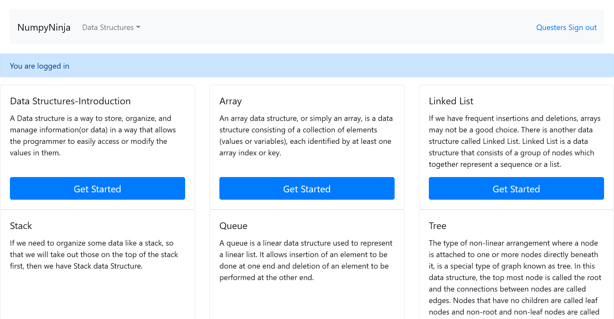
PassVerify that user receives output on running valid python code for "Max Consecutive Ones" questionPassVerify that user receives output on running valid python code for "Max Consecutive Ones" questionGiven The user is on the DSAlgo homepage after signGiven The user is on the tryeditor page of Max Consecutive OnesWhen The user enters code "Max Consecutive Ones" and 1 clicks the Run buttonThen The user should see an result for question in console for "Max Consecutive Ones" and 1PassVerify that user receives output on submitting valid python code for "Max Consecutive Ones" questionPassVerify that user receives output on submitting valid python code for "Max Consecutive Ones" questionGiven The user is on the DSAlgo homepage after signGiven The user is on the tryeditor page of Max Consecutive OnesWhen The user enters code "Max Consecutive Ones" and 3 clicks the Submit buttonThen The user should see an output for question in console for "Max Consecutive Ones" and 3PassVerify that user receives error on running Invalid python code for "Max Consecutive Ones" questionPassVerify that user receives error on running Invalid python code for "Max Consecutive Ones" questionGiven The user is on the DSAlgo homepage after signGiven The user is on the tryeditor page of Max Consecutive OnesWhen The user enters code "Max Consecutive Ones" and 2 clicks the Run buttonThen The user should able to see an error message in alert window "Max Consecutive Ones" and 2PassVerify that user receives output on running valid python code for "Find Numbers with Even Number" questionPassVerify that user receives output on running valid python code for "Find Numbers with Even Number" questionGiven The user is on the DSAlgo homepage after signGiven The user is on the tryeditor page of Find Numbers with Even NumberWhen The user enters code "Find Numbers with Even Number" and 1 clicks the Run buttonThen The user should see an result for question in console for "Find Numbers with Even Number" and 1PassVerify that user receives error on running Invalid python code for "Find Numbers with Even Number" questionPassVerify that user receives error on running Invalid python code for "Find Numbers with Even Number" questionGiven The user is on the DSAlgo homepage after signGiven The user is on the tryeditor page of Find Numbers with Even NumberWhen The user enters code "Find Numbers with Even Number" and 2 clicks the Run buttonThen The user should able to see an error message in alert window "Find Numbers with Even Number" and 2PassVerify that user receives output on submitting valid python code for "Find Numbers with Even Number" questionPassVerify that user receives output on submitting valid python code for "Find Numbers with Even Number" questionGiven The user is on the DSAlgo homepage after signGiven The user is on the tryeditor page of Find Numbers with Even NumberWhen The user enters code "Find Numbers with Even Number" and 3 clicks the Submit buttonThen The user should see an output for question in console for "Find Numbers with Even Number" and 3PassVerify that user receives output on running valid python code for "Squares of a Sorted Array" questionPassVerify that user receives output on running valid python code for "Squares of a Sorted Array" questionGiven The user is on the DSAlgo homepage after signGiven The user is on the tryeditor page of Squares of a Sorted ArrayWhen The user enters code "Squares of a Sorted Array" and 1 clicks the Run buttonThen The user should see an result for Squares in console for "Squares of a Sorted Array" and 1PassVerify that user receives error on running Invalid python code for "Squares of a Sorted Array" questionPassVerify that user receives error on running Invalid python code for "Squares of a Sorted Array" questionGiven The user is on the DSAlgo homepage after signGiven The user is on the tryeditor page of Squares of a Sorted ArrayWhen The user enters code "Squares of a Sorted Array" and 2 clicks the Run buttonThen The user should able to see an error message in alert window "Squares of a Sorted Array" and 2FailVerify that user receives output on submitting valid python code for "Squares of a Sorted Array" questionFailVerify that user receives output on submitting valid python code for "Squares of a Sorted Array" questionGiven The user is on the DSAlgo homepage after signGiven The user is on the tryeditor page of Squares of a Sorted ArrayWhen The user enters code "Squares of a Sorted Array" and 3 clicks the Submit buttonThen The user should see an output for question in console for "Squares of a Sorted Array" and 3dsAlgoHooks.Hooks.tearDown(io.cucumber.java.Scenario)Verify that user receives output on submitting valid python code for "Squares of a Sorted Array" question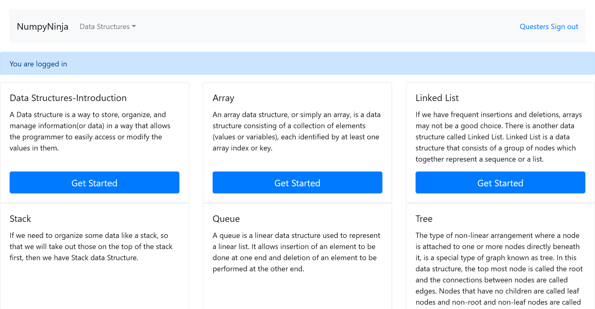 -
signin functionality
9:49:21 AM / 00:01:39:023 Pass
signin functionality
01.28.2025 9:49:21 AM 01.28.2025 9:51:00 AM 00:01:39:023 · #test-id=2,337Passverify user is able to navigate to the signinGiven The user is on the DSAlgo homepage after sign -
DataStructure functionality
9:49:21 AM / 00:04:37:288 Fail
DataStructure functionality
01.28.2025 9:49:21 AM 01.28.2025 9:53:58 AM 00:04:37:288 · #test-id=2,340PassVerify that user isable to navigate to "DataStructure-Introduction" PageGiven The user is on the DSAlgo homepage after signWhen The user clicks on GetStarted button in DataStructure PanelThen The user be directed to Data-Structure Introduction PagePassVerify that user is able to navigate to "Time Complexity" PageGiven The user is on the DSAlgo homepage after signGiven The user is in the Data structures- Introduction pageWhen The user clicks on "Time Complexity" linkThen The user should be directed to Time Complexity PagePassVerify that user is able to navigate to "Try Editor" Page for Time Complexity pageGiven The user is on the DSAlgo homepage after signGiven The user is on the Time Complexity pageWhen The user clicks "Try Here" button in Time Complexity pageThen The user Should be redirected to a page having an try Editor with a Run button to TestPassVerify that user is able to run Python code in Try Editor for DataStructure PagePassVerify that user is able to run Python code in Try Editor for DataStructure PageGiven The user is on the DSAlgo homepage after signGiven The user is on the tryeditor page of Datastructure moduleWhen The user enters code "Valid", "tryEditor" and 1 clicks the Run buttonThen The user should see an result "successouput", "tryEditor" and 1PassVerify that user is able to run Python code in Try Editor for DataStructure PageGiven The user is on the DSAlgo homepage after signGiven The user is on the tryeditor page of Datastructure moduleWhen The user enters code "Invalid", "tryEditor" and 2 clicks the Run buttonThen The user should see an result "alertmessageoutput", "tryEditor" and 2FailVerify that user receives error when click on Run button without entering code for "Time Complexity" in "python" pageGiven The user is on the DSAlgo homepage after signGiven The user is in the TryEditor page of TimeComplexity moduleWhen The user clicks the Run Button without entering the code in the Editor of TimeComplexity moduleThen The user should able to see an error message in alert window of TimeComplexity moduledsAlgoHooks.Hooks.tearDown(io.cucumber.java.Scenario)Verify that user receives error when click on Run button without entering code for "Time Complexity" in "python" page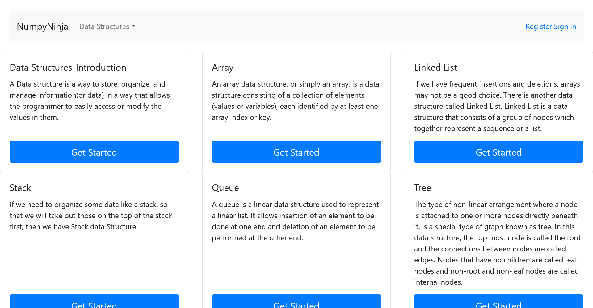PassVerify the user is able to navigate to the Practice Questions for "Time Complexity" in "python" pageGiven The user is on the DSAlgo homepage after signGiven The user is in the Time Complexity in DataStructure pageWhen the user clicks on the Practice Questions link of TimeComplexity moduleThen the user should navigated to the Practice Questions page of TimeComplexity moduleFailVerify the user see list of Practice Questions in Practice Questions PageGiven The user is on the DSAlgo homepage after signGiven The user is in the Time Complexity in DataStructure pageWhen the user clicks on the Practice Questions link of TimeComplexity moduleThen the user should see list of Practice Questions in Practice Questions Page of TimeComplexity moduledsAlgoHooks.Hooks.tearDown(io.cucumber.java.Scenario)Verify the user see list of Practice Questions in Practice Questions Page
-
Graph functionality
9:51:04 AM / 00:05:49:391 Fail
Graph functionality
01.28.2025 9:51:04 AM 01.28.2025 9:56:54 AM 00:05:49:391 · #test-id=2,414PassVerify that the user can navigate to the Graph page after signinGiven The user is on the DSAlgo homepage after signWhen the user clicks on the GetStarted button of Graph sectionThen the user is navigated to the Graph pagePassVerify the user is able to navigate to the Graph option in Graph pageGiven The user is on the DSAlgo homepage after signGiven the user is on the Graph pageWhen the user clicks on the Graphmodule linkThen the user should navigated to the Graphmodule pagePassVerify that user is able to navigate to try Editor page for Graph pageGiven The user is on the DSAlgo homepage after signGiven the user is on the Graphmodule pageWhen the user click on Try here button in Graph PageThen the user should navigate to the tryeditor pagePassVerify the user is able to navigate to the Practice Questions mentioned under graph Graph PageGiven The user is on the DSAlgo homepage after signGiven the user is on the Graphmodule pageWhen the user clicks on the Practice Questions linkThen the user should navigated to the Practice Questions pagePassVerify the user is able to navigate to the Graph Representations option in Graph pageGiven The user is on the DSAlgo homepage after signGiven the user is on the Graph pageWhen the user clicks on the Graph Representations linkThen the user should navigated to the Graph Representations pagePassVerify that user is able to navigate to try Editor page for GraphRepresentation pageGiven The user is on the DSAlgo homepage after signGiven the user is on the Graph Representation pageWhen the user click on Try here button in Graph Representation PageThen the user should navigate to the tryeditor pagePassVerify the user is able to navigate to the Practice Questions mentioned under graph Graph PageGiven The user is on the DSAlgo homepage after signGiven the user is on the Graph Representation pageWhen the user clicks on the Practice Questions linkThen the user should navigated to the Practice Questions pageFailVerify the user see list of Practice Questions in Practice Questions PageGiven The user is on the DSAlgo homepage after signGiven the user is on the Graph Representation pageWhen the user clicks on the Practice Questions linkThen the user should see list of Practice Questions in Practice Questions PagedsAlgoHooks.Hooks.tearDown(io.cucumber.java.Scenario)Verify the user see list of Practice Questions in Practice Questions Page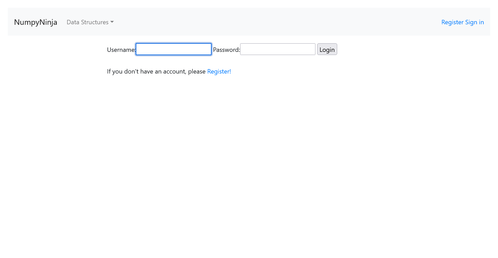PassVerify that user is able to run valid Python code in Try Editor for Graph PagePassVerify that user is able to run valid Python code in Try Editor for Graph PageGiven The user is on the DSAlgo homepage after signGiven The user is on the tryeditor page of Graph moduleWhen The user enters code "Valid", "tryEditor" and 1 clicks the Run buttonThen The user should see an result "successouput", "tryEditor" and 1PassVerify that user is able to run valid Python code in Try Editor for Graph PageGiven The user is on the DSAlgo homepage after signGiven The user is on the tryeditor page of Graph moduleWhen The user enters code "Invalid", "tryEditor" and 2 clicks the Run buttonThen The user should see an result "alertmessageoutput", "tryEditor" and 2PassVerify the user is able to navigate to the options under DataStructure DropDown from Graph pageGiven The user is on the DSAlgo homepage after signWhen the user clicks on the options under "Home2" and 5 dataStructure after signinThen The user should be navigated to the options page after sign "Home2" and 5FailVerify that user receives error when user clicks on run button without entering code in tryeditor for Graph PageGiven The user is on the DSAlgo homepage after signGiven The user is on the tryeditor page of Graph moduleWhen the user clicks the Run buttonThen the user should see an error messagedsAlgoHooks.Hooks.tearDown(io.cucumber.java.Scenario)Verify that user receives error when user clicks on run button without entering code in tryeditor for Graph Page PassVerify that user is able to run valid Python code in Try Editor for Graph Representation PagePassVerify that user is able to run valid Python code in Try Editor for Graph Representation PageGiven The user is on the DSAlgo homepage after signGiven The user is on the tryeditor page of Graph RepresentationWhen The user enters code "Valid", "tryEditor" and 1 clicks the Run buttonThen The user should see an result "successouput", "tryEditor" and 1PassVerify that user is able to run valid Python code in Try Editor for Graph Representation PageGiven The user is on the DSAlgo homepage after signGiven The user is on the tryeditor page of Graph RepresentationWhen The user enters code "Invalid", "tryEditor" and 2 clicks the Run buttonThen The user should see an result "alertmessageoutput", "tryEditor" and 2PassVerify the user is able to navigate to the options under DataStructure DropDown from Graph pageGiven The user is on the DSAlgo homepage after signWhen the user clicks on the options under "Home2" and 6 dataStructure after signinThen The user should be navigated to the options page after sign "Home2" and 6PassVerify the error message when the user clicks on the options under DataStructure dropdown before loginGiven the user is on the DSAlgo homepageWhen the user clicks on the "Stack" option under DataStructureThen the user should see an error message stating "You are not logged in"FailVerify that user receives error when user clicks on run button without entering code in tryeditor for Graph PageGiven The user is on the DSAlgo homepage after signGiven The user is on the tryeditor page of Graph RepresentationWhen the user clicks the Run buttonThen the user should see an error messagedsAlgoHooks.Hooks.tearDown(io.cucumber.java.Scenario)Verify that user receives error when user clicks on run button without entering code in tryeditor for Graph Page
PassVerify that user is able to run valid Python code in Try Editor for Graph Representation PagePassVerify that user is able to run valid Python code in Try Editor for Graph Representation PageGiven The user is on the DSAlgo homepage after signGiven The user is on the tryeditor page of Graph RepresentationWhen The user enters code "Valid", "tryEditor" and 1 clicks the Run buttonThen The user should see an result "successouput", "tryEditor" and 1PassVerify that user is able to run valid Python code in Try Editor for Graph Representation PageGiven The user is on the DSAlgo homepage after signGiven The user is on the tryeditor page of Graph RepresentationWhen The user enters code "Invalid", "tryEditor" and 2 clicks the Run buttonThen The user should see an result "alertmessageoutput", "tryEditor" and 2PassVerify the user is able to navigate to the options under DataStructure DropDown from Graph pageGiven The user is on the DSAlgo homepage after signWhen the user clicks on the options under "Home2" and 6 dataStructure after signinThen The user should be navigated to the options page after sign "Home2" and 6PassVerify the error message when the user clicks on the options under DataStructure dropdown before loginGiven the user is on the DSAlgo homepageWhen the user clicks on the "Stack" option under DataStructureThen the user should see an error message stating "You are not logged in"FailVerify that user receives error when user clicks on run button without entering code in tryeditor for Graph PageGiven The user is on the DSAlgo homepage after signGiven The user is on the tryeditor page of Graph RepresentationWhen the user clicks the Run buttonThen the user should see an error messagedsAlgoHooks.Hooks.tearDown(io.cucumber.java.Scenario)Verify that user receives error when user clicks on run button without entering code in tryeditor for Graph Page PassVerify the user is able to navigate to the options under DataStructure DropDown from Graph pagePassVerify the user is able to navigate to the options under DataStructure DropDown from Graph pageGiven The user is on the DSAlgo homepage after signWhen the user clicks on the options under "Home2" and 1 dataStructure after signinThen The user should be navigated to the options page after sign "Home2" and 1PassVerify the user is able to navigate to the options under DataStructure DropDown from Graph pageGiven The user is on the DSAlgo homepage after signWhen the user clicks on the options under "Home2" and 2 dataStructure after signinThen The user should be navigated to the options page after sign "Home2" and 2PassVerify the user is able to navigate to the options under DataStructure DropDown from Graph pageGiven The user is on the DSAlgo homepage after signWhen the user clicks on the options under "Home2" and 3 dataStructure after signinThen The user should be navigated to the options page after sign "Home2" and 3PassVerify the user is able to navigate to the options under DataStructure DropDown from Graph pageGiven The user is on the DSAlgo homepage after signWhen the user clicks on the options under "Home2" and 4 dataStructure after signinThen The user should be navigated to the options page after sign "Home2" and 4PassVerify the error message when the user clicks on the GetStarted button under all the options in Home Page without signing inGiven the user is on the DSAlgo homepageWhen the user clicks on the GetStarted button under "Array"Then the user should see an error message stating "You are not logged in"PassVerify the error message when the user clicks on the GetStarted button under all the options in Home Page without signing inGiven the user is on the DSAlgo homepageWhen the user clicks on the GetStarted button under "Linked List"Then the user should see an error message stating "You are not logged in"PassVerify the error message when the user clicks on the options under DataStructure dropdown before loginGiven the user is on the DSAlgo homepageWhen the user clicks on the "Tree" option under DataStructureThen the user should see an error message stating "You are not logged in"PassVerify the error message when the user clicks on the options under DataStructure dropdown before loginGiven the user is on the DSAlgo homepageWhen the user clicks on the "Graph" option under DataStructureThen the user should see an error message stating "You are not logged in"
PassVerify the user is able to navigate to the options under DataStructure DropDown from Graph pagePassVerify the user is able to navigate to the options under DataStructure DropDown from Graph pageGiven The user is on the DSAlgo homepage after signWhen the user clicks on the options under "Home2" and 1 dataStructure after signinThen The user should be navigated to the options page after sign "Home2" and 1PassVerify the user is able to navigate to the options under DataStructure DropDown from Graph pageGiven The user is on the DSAlgo homepage after signWhen the user clicks on the options under "Home2" and 2 dataStructure after signinThen The user should be navigated to the options page after sign "Home2" and 2PassVerify the user is able to navigate to the options under DataStructure DropDown from Graph pageGiven The user is on the DSAlgo homepage after signWhen the user clicks on the options under "Home2" and 3 dataStructure after signinThen The user should be navigated to the options page after sign "Home2" and 3PassVerify the user is able to navigate to the options under DataStructure DropDown from Graph pageGiven The user is on the DSAlgo homepage after signWhen the user clicks on the options under "Home2" and 4 dataStructure after signinThen The user should be navigated to the options page after sign "Home2" and 4PassVerify the error message when the user clicks on the GetStarted button under all the options in Home Page without signing inGiven the user is on the DSAlgo homepageWhen the user clicks on the GetStarted button under "Array"Then the user should see an error message stating "You are not logged in"PassVerify the error message when the user clicks on the GetStarted button under all the options in Home Page without signing inGiven the user is on the DSAlgo homepageWhen the user clicks on the GetStarted button under "Linked List"Then the user should see an error message stating "You are not logged in"PassVerify the error message when the user clicks on the options under DataStructure dropdown before loginGiven the user is on the DSAlgo homepageWhen the user clicks on the "Tree" option under DataStructureThen the user should see an error message stating "You are not logged in"PassVerify the error message when the user clicks on the options under DataStructure dropdown before loginGiven the user is on the DSAlgo homepageWhen the user clicks on the "Graph" option under DataStructureThen the user should see an error message stating "You are not logged in" -
Home functionality
9:54:18 AM / 00:09:13:797 Fail
Home functionality
01.28.2025 9:54:18 AM 01.28.2025 10:03:32 AM 00:09:13:797 · #test-id=2,559PassVerify User is able to navigate to DsAlgo ApplicationGiven Empty browser openWhen The user enters the DsAlgo UrlThen the user should able to land on DsAlgo portalFailverify that user is able to navigate to homepage when clicked on getstarted buttondsAlgoHooks.Hooks.beforeScenario()Given the user navigates to the DsAlgo portalStep skippedWhen The user click on Getstarted buttonStep skippedThen the user navigates to DSAlgo home pageStep skippeddsAlgoHooks.Hooks.tearDown(io.cucumber.java.Scenario)verify that user is able to navigate to homepage when clicked on getstarted button PassVerify that the user is able to Navigate to Register pageGiven the user is on the DSAlgo homepageWhen The user clicks on the Register buttonThen the user should be navigated to the Register pageFailVerify that the user is able to Navigate to Login pagedsAlgoHooks.Hooks.beforeScenario()Given the user is on the DSAlgo homepageStep skippedWhen The user clicks on the signin buttonStep skippedThen the user should be navigated to the signin pageStep skippeddsAlgoHooks.Hooks.tearDown(io.cucumber.java.Scenario)Verify that the user is able to Navigate to Login page
PassVerify that the user is able to Navigate to Register pageGiven the user is on the DSAlgo homepageWhen The user clicks on the Register buttonThen the user should be navigated to the Register pageFailVerify that the user is able to Navigate to Login pagedsAlgoHooks.Hooks.beforeScenario()Given the user is on the DSAlgo homepageStep skippedWhen The user clicks on the signin buttonStep skippedThen the user should be navigated to the signin pageStep skippeddsAlgoHooks.Hooks.tearDown(io.cucumber.java.Scenario)Verify that the user is able to Navigate to Login page FailVerify that the user sees six options under the Data Structure dropdown before logging inPassVerify that the user sees six options under the Data Structure dropdown before logging inGiven the user is on the DSAlgo homepageWhen the user clicks on the Data Structure buttonThen the user should see six options: "Arrays","Linked List","Stack","Queue","Tree", and "Graph" under the Data Structure dropdownFailVerify the error message when the user clicks on the options under DataStructure dropdown before loginGiven the user is on the DSAlgo homepageWhen the user clicks on the "Queue" option under DataStructureThen the user should see an error message stating "You are not logged in"Step skippeddsAlgoHooks.Hooks.tearDown(io.cucumber.java.Scenario)Verify the error message when the user clicks on the options under DataStructure dropdown before login
FailVerify that the user sees six options under the Data Structure dropdown before logging inPassVerify that the user sees six options under the Data Structure dropdown before logging inGiven the user is on the DSAlgo homepageWhen the user clicks on the Data Structure buttonThen the user should see six options: "Arrays","Linked List","Stack","Queue","Tree", and "Graph" under the Data Structure dropdownFailVerify the error message when the user clicks on the options under DataStructure dropdown before loginGiven the user is on the DSAlgo homepageWhen the user clicks on the "Queue" option under DataStructureThen the user should see an error message stating "You are not logged in"Step skippeddsAlgoHooks.Hooks.tearDown(io.cucumber.java.Scenario)Verify the error message when the user clicks on the options under DataStructure dropdown before login FailVerify that user receives error when user clicks on run button without entering code in tryeditor for LinkedList PageGiven The user is on the DSAlgo homepage after signGiven The user is on the tryeditor page of seven Options "LinkedList" and 5 of LinkedList pageStep skippedWhen the user clicks the Run buttonStep skippedThen the user should see an error messageStep skippeddsAlgoHooks.Hooks.tearDown(io.cucumber.java.Scenario)PassVerify the user is able to navigate to the Practice Questions mentioned under Seven options of LinkedListGiven The user is on the DSAlgo homepage after signGiven The user is navigates to seven Options "LinkedList" and 6 of LinkedList pageWhen the user clicks on the Practice Questions linkThen the user should navigated to the Practice Questions page of three options "LinkedList" and 6 in Stack pagePassVerify the error message when the user clicks on the GetStarted button under all the options in Home Page without signing inPassVerify the error message when the user clicks on the GetStarted button under all the options in Home Page without signing inGiven the user is on the DSAlgo homepageWhen the user clicks on the GetStarted button under "Data Structures-Introduction"Then the user should see an error message stating "You are not logged in"PassVerify the error message when the user clicks on the GetStarted button under all the options in Home Page without signing inGiven the user is on the DSAlgo homepageWhen the user clicks on the GetStarted button under "Stack"Then the user should see an error message stating "You are not logged in"PassVerify the error message when the user clicks on the GetStarted button under all the options in Home Page without signing inGiven the user is on the DSAlgo homepageWhen the user clicks on the GetStarted button under "Queue"Then the user should see an error message stating "You are not logged in"PassVerify the error message when the user clicks on the GetStarted button under all the options in Home Page without signing inGiven the user is on the DSAlgo homepageWhen the user clicks on the GetStarted button under "Tree"Then the user should see an error message stating "You are not logged in"PassVerify the error message when the user clicks on the GetStarted button under all the options in Home Page without signing inGiven the user is on the DSAlgo homepageWhen the user clicks on the GetStarted button under "Graph"Then the user should see an error message stating "You are not logged in"PassVerify the error message when the user clicks on the options under DataStructure dropdown before loginGiven the user is on the DSAlgo homepageWhen the user clicks on the "Linked List" option under DataStructureThen the user should see an error message stating "You are not logged in"PassVerify the error message when the user clicks on the options under DataStructure dropdown before loginPassVerify the error message when the user clicks on the options under DataStructure dropdown before loginGiven the user is on the DSAlgo homepageWhen the user clicks on the "Arrays" option under DataStructureThen the user should see an error message stating "You are not logged in"
FailVerify that user receives error when user clicks on run button without entering code in tryeditor for LinkedList PageGiven The user is on the DSAlgo homepage after signGiven The user is on the tryeditor page of seven Options "LinkedList" and 5 of LinkedList pageStep skippedWhen the user clicks the Run buttonStep skippedThen the user should see an error messageStep skippeddsAlgoHooks.Hooks.tearDown(io.cucumber.java.Scenario)PassVerify the user is able to navigate to the Practice Questions mentioned under Seven options of LinkedListGiven The user is on the DSAlgo homepage after signGiven The user is navigates to seven Options "LinkedList" and 6 of LinkedList pageWhen the user clicks on the Practice Questions linkThen the user should navigated to the Practice Questions page of three options "LinkedList" and 6 in Stack pagePassVerify the error message when the user clicks on the GetStarted button under all the options in Home Page without signing inPassVerify the error message when the user clicks on the GetStarted button under all the options in Home Page without signing inGiven the user is on the DSAlgo homepageWhen the user clicks on the GetStarted button under "Data Structures-Introduction"Then the user should see an error message stating "You are not logged in"PassVerify the error message when the user clicks on the GetStarted button under all the options in Home Page without signing inGiven the user is on the DSAlgo homepageWhen the user clicks on the GetStarted button under "Stack"Then the user should see an error message stating "You are not logged in"PassVerify the error message when the user clicks on the GetStarted button under all the options in Home Page without signing inGiven the user is on the DSAlgo homepageWhen the user clicks on the GetStarted button under "Queue"Then the user should see an error message stating "You are not logged in"PassVerify the error message when the user clicks on the GetStarted button under all the options in Home Page without signing inGiven the user is on the DSAlgo homepageWhen the user clicks on the GetStarted button under "Tree"Then the user should see an error message stating "You are not logged in"PassVerify the error message when the user clicks on the GetStarted button under all the options in Home Page without signing inGiven the user is on the DSAlgo homepageWhen the user clicks on the GetStarted button under "Graph"Then the user should see an error message stating "You are not logged in"PassVerify the error message when the user clicks on the options under DataStructure dropdown before loginGiven the user is on the DSAlgo homepageWhen the user clicks on the "Linked List" option under DataStructureThen the user should see an error message stating "You are not logged in"PassVerify the error message when the user clicks on the options under DataStructure dropdown before loginPassVerify the error message when the user clicks on the options under DataStructure dropdown before loginGiven the user is on the DSAlgo homepageWhen the user clicks on the "Arrays" option under DataStructureThen the user should see an error message stating "You are not logged in" -
LinkedList functionality
9:56:44 AM / 00:11:50:165 Fail
LinkedList functionality
01.28.2025 9:56:44 AM 01.28.2025 10:08:34 AM 00:11:50:165 · #test-id=2,707PassVerify that user is able to navigate to "Linked List" data structure pageGiven The user is on the DSAlgo homepage after signWhen The user clicks the Getting Started button in Linked List PanelThen The user be directed to Linked List Data Structure PagePassVerify that user is able to navigate to "Introduction" pagePassVerify that user is able to navigate to "Introduction" pageGiven The user is on the DSAlgo homepage after signGiven The user is in the Linked List pageWhen The user clicks Introduction buttonThen The user should be redirected to page and confirm url "LinkedList" and 1PassVerify that user is able to navigate to the try Editor page from different options in Stack PageGiven The user is on the DSAlgo homepage after signGiven The user is on the LinkedList Options "LinkedList" and 3 pageWhen The user clicks on the Try here button on the LinkedList Options pageThen The user should navigate to the tryeditor pagePassVerify that user is able to navigate to "Creating Linked LIst" pagePassVerify that user is able to navigate to "Creating Linked LIst" pageGiven The user is on the DSAlgo homepage after signGiven The user is in the Linked List pageWhen The user clicks Creating Linked LIst buttonThen The user should be redirected to page and confirm url "LinkedList" and 2PassVerify that user is able to navigate to the try Editor page from different options in Stack PageGiven The user is on the DSAlgo homepage after signGiven The user is on the LinkedList Options "LinkedList" and 5 pageWhen The user clicks on the Try here button on the LinkedList Options pageThen The user should navigate to the tryeditor pagePassVerify that user is able to navigate to "Types of Linked List" pagePassVerify that user is able to navigate to "Types of Linked List" pageGiven The user is on the DSAlgo homepage after signGiven The user is in the Linked List pageWhen The user clicks Types of Linked List buttonThen The user should be redirected to page and confirm url "LinkedList" and 3PassVerify that user is able to navigate to the try Editor page from different options in Stack PageGiven The user is on the DSAlgo homepage after signGiven The user is on the LinkedList Options "LinkedList" and 2 pageWhen The user clicks on the Try here button on the LinkedList Options pageThen The user should navigate to the tryeditor pagePassVerify that user is able to run valid Python code in Try Editor for LinkedList PageGiven The user is on the DSAlgo homepage after signGiven The user is on the tryeditor page of Creating Linked LIst in LinkedListWhen The user enters code "Invalid", "tryEditor" and 2 clicks the Run buttonThen The user should see an result "alertmessageoutput", "tryEditor" and 2FailVerify that user is able to navigate to "Introduction" pagePassVerify that user is able to navigate to "Introduction" pageGiven The user is on the DSAlgo homepage after signGiven The user is in the Linked List pageWhen The user clicks Implement Linked List buttonThen The user should be redirected to page and confirm url "LinkedList" and 4PassVerify that user is able to navigate to the try Editor page from different options in Stack PageGiven The user is on the DSAlgo homepage after signGiven The user is on the LinkedList Options "LinkedList" and 6 pageWhen The user clicks on the Try here button on the LinkedList Options pageThen The user should navigate to the tryeditor pageFailVerify that user is able to run valid Python code in Try Editor for LinkedList PagedsAlgoHooks.Hooks.beforeScenario()Given The user is on the DSAlgo homepage after signStep skippedGiven The user is on the tryeditor page of Types of Linked List in LinkedListStep skippedWhen The user enters code "Invalid", "tryEditor" and 2 clicks the Run buttonStep skippedThen The user should see an result "alertmessageoutput", "tryEditor" and 2Step skippeddsAlgoHooks.Hooks.tearDown(io.cucumber.java.Scenario)Verify that user is able to run valid Python code in Try Editor for LinkedList Page PassVerify that user is able to navigate to "Introduction" pagePassVerify that user is able to navigate to "Introduction" pageGiven The user is on the DSAlgo homepage after signGiven The user is in the Linked List pageWhen The user clicks Traversal buttonThen The user should be redirected to page and confirm url "LinkedList" and 5PassVerify that user is able to navigate to the try Editor page from different options in Stack PageGiven The user is on the DSAlgo homepage after signGiven The user is on the LinkedList Options "LinkedList" and 7 pageWhen The user clicks on the Try here button on the LinkedList Options pageThen The user should navigate to the tryeditor pageFailVerify that user is able to navigate to "Introduction" pagePassVerify that user is able to navigate to "Introduction" pageGiven The user is on the DSAlgo homepage after signGiven The user is in the Linked List pageWhen The user clicks Insertion buttonThen The user should be redirected to page and confirm url "LinkedList" and 6PassVerify that user is able to run valid Python code in Try Editor for LinkedList PageGiven The user is on the DSAlgo homepage after signGiven The user is on the tryeditor page of Introduction in LinkedListWhen The user enters code "Invalid", "tryEditor" and 2 clicks the Run buttonThen The user should see an result "alertmessageoutput", "tryEditor" and 2PassVerify that user is able to run valid Python code in Try Editor for LinkedList PageGiven The user is on the DSAlgo homepage after signGiven The user is on the tryeditor page of Traversal in LinkedListWhen The user enters code "Invalid", "tryEditor" and 2 clicks the Run buttonThen The user should see an result "alertmessageoutput", "tryEditor" and 2FailVerify that user receives error when user clicks on run button without entering code in tryeditor for LinkedList PagedsAlgoHooks.Hooks.beforeScenario()Given The user is on the DSAlgo homepage after signStep skippedGiven The user is on the tryeditor page of seven Options "LinkedList" and 7 of LinkedList pageStep skippedWhen the user clicks the Run buttonStep skippedThen the user should see an error messageStep skippeddsAlgoHooks.Hooks.tearDown(io.cucumber.java.Scenario)Verify that user receives error when user clicks on run button without entering code in tryeditor for LinkedList PageFailVerify the user see list of Practice Questions in Practice Questions Page of three options pagesGiven The user is on the DSAlgo homepage after signGiven The user is navigates to seven Options "LinkedList" and 4 of LinkedList pageWhen the user clicks on the Practice Questions linkThen the user should see list of Practice Questions in Practice Questions PagedsAlgoHooks.Hooks.tearDown(io.cucumber.java.Scenario)Verify the user see list of Practice Questions in Practice Questions Page of three options pages
PassVerify that user is able to navigate to "Introduction" pagePassVerify that user is able to navigate to "Introduction" pageGiven The user is on the DSAlgo homepage after signGiven The user is in the Linked List pageWhen The user clicks Traversal buttonThen The user should be redirected to page and confirm url "LinkedList" and 5PassVerify that user is able to navigate to the try Editor page from different options in Stack PageGiven The user is on the DSAlgo homepage after signGiven The user is on the LinkedList Options "LinkedList" and 7 pageWhen The user clicks on the Try here button on the LinkedList Options pageThen The user should navigate to the tryeditor pageFailVerify that user is able to navigate to "Introduction" pagePassVerify that user is able to navigate to "Introduction" pageGiven The user is on the DSAlgo homepage after signGiven The user is in the Linked List pageWhen The user clicks Insertion buttonThen The user should be redirected to page and confirm url "LinkedList" and 6PassVerify that user is able to run valid Python code in Try Editor for LinkedList PageGiven The user is on the DSAlgo homepage after signGiven The user is on the tryeditor page of Introduction in LinkedListWhen The user enters code "Invalid", "tryEditor" and 2 clicks the Run buttonThen The user should see an result "alertmessageoutput", "tryEditor" and 2PassVerify that user is able to run valid Python code in Try Editor for LinkedList PageGiven The user is on the DSAlgo homepage after signGiven The user is on the tryeditor page of Traversal in LinkedListWhen The user enters code "Invalid", "tryEditor" and 2 clicks the Run buttonThen The user should see an result "alertmessageoutput", "tryEditor" and 2FailVerify that user receives error when user clicks on run button without entering code in tryeditor for LinkedList PagedsAlgoHooks.Hooks.beforeScenario()Given The user is on the DSAlgo homepage after signStep skippedGiven The user is on the tryeditor page of seven Options "LinkedList" and 7 of LinkedList pageStep skippedWhen the user clicks the Run buttonStep skippedThen the user should see an error messageStep skippeddsAlgoHooks.Hooks.tearDown(io.cucumber.java.Scenario)Verify that user receives error when user clicks on run button without entering code in tryeditor for LinkedList PageFailVerify the user see list of Practice Questions in Practice Questions Page of three options pagesGiven The user is on the DSAlgo homepage after signGiven The user is navigates to seven Options "LinkedList" and 4 of LinkedList pageWhen the user clicks on the Practice Questions linkThen the user should see list of Practice Questions in Practice Questions PagedsAlgoHooks.Hooks.tearDown(io.cucumber.java.Scenario)Verify the user see list of Practice Questions in Practice Questions Page of three options pages PassVerify that user is able to navigate to "Introduction" pagePassVerify that user is able to navigate to "Introduction" pageGiven The user is on the DSAlgo homepage after signGiven The user is in the Linked List pageWhen The user clicks Deletion buttonThen The user should be redirected to page and confirm url "LinkedList" and 7FailVerify that user is able to navigate to the try Editor page from different options in Stack PagePassVerify that user is able to navigate to the try Editor page from different options in Stack PageGiven The user is on the DSAlgo homepage after signGiven The user is on the LinkedList Options "LinkedList" and 1 pageWhen The user clicks on the Try here button on the LinkedList Options pageThen The user should navigate to the tryeditor pagePassVerify that user is able to navigate to the try Editor page from different options in Stack PageGiven The user is on the DSAlgo homepage after signGiven The user is on the LinkedList Options "LinkedList" and 4 pageWhen The user clicks on the Try here button on the LinkedList Options pageThen The user should navigate to the tryeditor pagePassVerify that user is able to run valid Python code in Try Editor for LinkedList PageGiven The user is on the DSAlgo homepage after signGiven The user is on the tryeditor page of Types of Linked List in LinkedListWhen The user enters code "Invalid", "tryEditor" and 2 clicks the Run buttonThen The user should see an result "alertmessageoutput", "tryEditor" and 2PassVerify that user is able to run valid Python code in Try Editor for LinkedList PageGiven The user is on the DSAlgo homepage after signGiven The user is on the tryeditor page of Deletion in LinkedListWhen The user enters code "Invalid", "tryEditor" and 2 clicks the Run buttonThen The user should see an result "alertmessageoutput", "tryEditor" and 2PassVerify the user is able to navigate to the Practice Questions mentioned under Seven options of LinkedListGiven The user is on the DSAlgo homepage after signGiven The user is navigates to seven Options "LinkedList" and 3 of LinkedList pageWhen the user clicks on the Practice Questions linkThen the user should navigated to the Practice Questions page of three options "LinkedList" and 3 in Stack pageFailVerify the user see list of Practice Questions in Practice Questions Page of three options pagesGiven The user is on the DSAlgo homepage after signGiven The user is navigates to seven Options "LinkedList" and 6 of LinkedList pageWhen the user clicks on the Practice Questions linkThen the user should see list of Practice Questions in Practice Questions PagedsAlgoHooks.Hooks.tearDown(io.cucumber.java.Scenario)Verify the user see list of Practice Questions in Practice Questions Page of three options pages
PassVerify that user is able to navigate to "Introduction" pagePassVerify that user is able to navigate to "Introduction" pageGiven The user is on the DSAlgo homepage after signGiven The user is in the Linked List pageWhen The user clicks Deletion buttonThen The user should be redirected to page and confirm url "LinkedList" and 7FailVerify that user is able to navigate to the try Editor page from different options in Stack PagePassVerify that user is able to navigate to the try Editor page from different options in Stack PageGiven The user is on the DSAlgo homepage after signGiven The user is on the LinkedList Options "LinkedList" and 1 pageWhen The user clicks on the Try here button on the LinkedList Options pageThen The user should navigate to the tryeditor pagePassVerify that user is able to navigate to the try Editor page from different options in Stack PageGiven The user is on the DSAlgo homepage after signGiven The user is on the LinkedList Options "LinkedList" and 4 pageWhen The user clicks on the Try here button on the LinkedList Options pageThen The user should navigate to the tryeditor pagePassVerify that user is able to run valid Python code in Try Editor for LinkedList PageGiven The user is on the DSAlgo homepage after signGiven The user is on the tryeditor page of Types of Linked List in LinkedListWhen The user enters code "Invalid", "tryEditor" and 2 clicks the Run buttonThen The user should see an result "alertmessageoutput", "tryEditor" and 2PassVerify that user is able to run valid Python code in Try Editor for LinkedList PageGiven The user is on the DSAlgo homepage after signGiven The user is on the tryeditor page of Deletion in LinkedListWhen The user enters code "Invalid", "tryEditor" and 2 clicks the Run buttonThen The user should see an result "alertmessageoutput", "tryEditor" and 2PassVerify the user is able to navigate to the Practice Questions mentioned under Seven options of LinkedListGiven The user is on the DSAlgo homepage after signGiven The user is navigates to seven Options "LinkedList" and 3 of LinkedList pageWhen the user clicks on the Practice Questions linkThen the user should navigated to the Practice Questions page of three options "LinkedList" and 3 in Stack pageFailVerify the user see list of Practice Questions in Practice Questions Page of three options pagesGiven The user is on the DSAlgo homepage after signGiven The user is navigates to seven Options "LinkedList" and 6 of LinkedList pageWhen the user clicks on the Practice Questions linkThen the user should see list of Practice Questions in Practice Questions PagedsAlgoHooks.Hooks.tearDown(io.cucumber.java.Scenario)Verify the user see list of Practice Questions in Practice Questions Page of three options pages FailVerify that user is able to run valid Python code in Try Editor for LinkedList PageFailVerify that user is able to run valid Python code in Try Editor for LinkedList PageGiven The user is on the DSAlgo homepage after signGiven The user is on the tryeditor page of Introduction in LinkedListStep skippedWhen The user enters code "Valid", "tryEditor" and 1 clicks the Run buttonStep skippedThen The user should see an result "successouput", "tryEditor" and 1Step skippeddsAlgoHooks.Hooks.tearDown(io.cucumber.java.Scenario)Verify that user is able to run valid Python code in Try Editor for LinkedList Page
FailVerify that user is able to run valid Python code in Try Editor for LinkedList PageFailVerify that user is able to run valid Python code in Try Editor for LinkedList PageGiven The user is on the DSAlgo homepage after signGiven The user is on the tryeditor page of Introduction in LinkedListStep skippedWhen The user enters code "Valid", "tryEditor" and 1 clicks the Run buttonStep skippedThen The user should see an result "successouput", "tryEditor" and 1Step skippeddsAlgoHooks.Hooks.tearDown(io.cucumber.java.Scenario)Verify that user is able to run valid Python code in Try Editor for LinkedList Page FailVerify that user receives error when user clicks on run button without entering code in tryeditor for LinkedList PageGiven The user is on the DSAlgo homepage after signGiven The user is on the tryeditor page of seven Options "LinkedList" and 2 of LinkedList pageWhen the user clicks the Run buttonThen the user should see an error messagedsAlgoHooks.Hooks.tearDown(io.cucumber.java.Scenario)PassVerify the user is able to navigate to the Practice Questions mentioned under Seven options of LinkedListGiven The user is on the DSAlgo homepage after signGiven The user is navigates to seven Options "LinkedList" and 7 of LinkedList pageWhen the user clicks on the Practice Questions linkThen the user should navigated to the Practice Questions page of three options "LinkedList" and 7 in Stack pagePassVerify that user is able to run valid Python code in Try Editor for LinkedList PagePassVerify that user is able to run valid Python code in Try Editor for LinkedList PageGiven The user is on the DSAlgo homepage after signGiven The user is on the tryeditor page of Creating Linked LIst in LinkedListWhen The user enters code "Valid", "tryEditor" and 1 clicks the Run buttonThen The user should see an result "successouput", "tryEditor" and 1PassVerify that user is able to run valid Python code in Try Editor for LinkedList PagePassVerify that user is able to run valid Python code in Try Editor for LinkedList PageGiven The user is on the DSAlgo homepage after signGiven The user is on the tryeditor page of Types of Linked List in LinkedListWhen The user enters code "Valid", "tryEditor" and 1 clicks the Run buttonThen The user should see an result "successouput", "tryEditor" and 1PassVerify that user is able to run valid Python code in Try Editor for LinkedList PageGiven The user is on the DSAlgo homepage after signGiven The user is on the tryeditor page of Insertion in LinkedListWhen The user enters code "Invalid", "tryEditor" and 2 clicks the Run buttonThen The user should see an result "alertmessageoutput", "tryEditor" and 2FailVerify that user is able to run valid Python code in Try Editor for LinkedList PagePassVerify that user is able to run valid Python code in Try Editor for LinkedList PageGiven The user is on the DSAlgo homepage after signGiven The user is on the tryeditor page of Types of Linked List in LinkedListWhen The user enters code "Valid", "tryEditor" and 1 clicks the Run buttonThen The user should see an result "successouput", "tryEditor" and 1FailVerify that user receives error when user clicks on run button without entering code in tryeditor for LinkedList PageGiven The user is on the DSAlgo homepage after signGiven The user is on the tryeditor page of seven Options "LinkedList" and 6 of LinkedList pageWhen the user clicks the Run buttonThen the user should see an error messagedsAlgoHooks.Hooks.tearDown(io.cucumber.java.Scenario)FailVerify the user see list of Practice Questions in Practice Questions Page of three options pagesGiven The user is on the DSAlgo homepage after signGiven The user is navigates to seven Options "LinkedList" and 5 of LinkedList pageWhen the user clicks on the Practice Questions linkThen the user should see list of Practice Questions in Practice Questions PagedsAlgoHooks.Hooks.tearDown(io.cucumber.java.Scenario)Verify the user see list of Practice Questions in Practice Questions Page of three options pages
FailVerify that user receives error when user clicks on run button without entering code in tryeditor for LinkedList PageGiven The user is on the DSAlgo homepage after signGiven The user is on the tryeditor page of seven Options "LinkedList" and 2 of LinkedList pageWhen the user clicks the Run buttonThen the user should see an error messagedsAlgoHooks.Hooks.tearDown(io.cucumber.java.Scenario)PassVerify the user is able to navigate to the Practice Questions mentioned under Seven options of LinkedListGiven The user is on the DSAlgo homepage after signGiven The user is navigates to seven Options "LinkedList" and 7 of LinkedList pageWhen the user clicks on the Practice Questions linkThen the user should navigated to the Practice Questions page of three options "LinkedList" and 7 in Stack pagePassVerify that user is able to run valid Python code in Try Editor for LinkedList PagePassVerify that user is able to run valid Python code in Try Editor for LinkedList PageGiven The user is on the DSAlgo homepage after signGiven The user is on the tryeditor page of Creating Linked LIst in LinkedListWhen The user enters code "Valid", "tryEditor" and 1 clicks the Run buttonThen The user should see an result "successouput", "tryEditor" and 1PassVerify that user is able to run valid Python code in Try Editor for LinkedList PagePassVerify that user is able to run valid Python code in Try Editor for LinkedList PageGiven The user is on the DSAlgo homepage after signGiven The user is on the tryeditor page of Types of Linked List in LinkedListWhen The user enters code "Valid", "tryEditor" and 1 clicks the Run buttonThen The user should see an result "successouput", "tryEditor" and 1PassVerify that user is able to run valid Python code in Try Editor for LinkedList PageGiven The user is on the DSAlgo homepage after signGiven The user is on the tryeditor page of Insertion in LinkedListWhen The user enters code "Invalid", "tryEditor" and 2 clicks the Run buttonThen The user should see an result "alertmessageoutput", "tryEditor" and 2FailVerify that user is able to run valid Python code in Try Editor for LinkedList PagePassVerify that user is able to run valid Python code in Try Editor for LinkedList PageGiven The user is on the DSAlgo homepage after signGiven The user is on the tryeditor page of Types of Linked List in LinkedListWhen The user enters code "Valid", "tryEditor" and 1 clicks the Run buttonThen The user should see an result "successouput", "tryEditor" and 1FailVerify that user receives error when user clicks on run button without entering code in tryeditor for LinkedList PageGiven The user is on the DSAlgo homepage after signGiven The user is on the tryeditor page of seven Options "LinkedList" and 6 of LinkedList pageWhen the user clicks the Run buttonThen the user should see an error messagedsAlgoHooks.Hooks.tearDown(io.cucumber.java.Scenario)FailVerify the user see list of Practice Questions in Practice Questions Page of three options pagesGiven The user is on the DSAlgo homepage after signGiven The user is navigates to seven Options "LinkedList" and 5 of LinkedList pageWhen the user clicks on the Practice Questions linkThen the user should see list of Practice Questions in Practice Questions PagedsAlgoHooks.Hooks.tearDown(io.cucumber.java.Scenario)Verify the user see list of Practice Questions in Practice Questions Page of three options pages FailVerify that user is able to run valid Python code in Try Editor for LinkedList PagePassVerify that user is able to run valid Python code in Try Editor for LinkedList PageGiven The user is on the DSAlgo homepage after signGiven The user is on the tryeditor page of Traversal in LinkedListWhen The user enters code "Valid", "tryEditor" and 1 clicks the Run buttonThen The user should see an result "successouput", "tryEditor" and 1FailVerify that user receives error when user clicks on run button without entering code in tryeditor for LinkedList PageGiven The user is on the DSAlgo homepage after signGiven The user is on the tryeditor page of seven Options "LinkedList" and 3 of LinkedList pageWhen the user clicks the Run buttonThen the user should see an error messagedsAlgoHooks.Hooks.tearDown(io.cucumber.java.Scenario)Verify that user receives error when user clicks on run button without entering code in tryeditor for LinkedList Page
FailVerify that user is able to run valid Python code in Try Editor for LinkedList PagePassVerify that user is able to run valid Python code in Try Editor for LinkedList PageGiven The user is on the DSAlgo homepage after signGiven The user is on the tryeditor page of Traversal in LinkedListWhen The user enters code "Valid", "tryEditor" and 1 clicks the Run buttonThen The user should see an result "successouput", "tryEditor" and 1FailVerify that user receives error when user clicks on run button without entering code in tryeditor for LinkedList PageGiven The user is on the DSAlgo homepage after signGiven The user is on the tryeditor page of seven Options "LinkedList" and 3 of LinkedList pageWhen the user clicks the Run buttonThen the user should see an error messagedsAlgoHooks.Hooks.tearDown(io.cucumber.java.Scenario)Verify that user receives error when user clicks on run button without entering code in tryeditor for LinkedList Page FailVerify that user is able to run valid Python code in Try Editor for LinkedList PagePassVerify that user is able to run valid Python code in Try Editor for LinkedList PageGiven The user is on the DSAlgo homepage after signGiven The user is on the tryeditor page of Insertion in LinkedListWhen The user enters code "Valid", "tryEditor" and 1 clicks the Run buttonThen The user should see an result "successouput", "tryEditor" and 1FailVerify that user receives error when user clicks on run button without entering code in tryeditor for LinkedList PageGiven The user is on the DSAlgo homepage after signGiven The user is on the tryeditor page of seven Options "LinkedList" and 4 of LinkedList pageWhen the user clicks the Run buttonThen the user should see an error messagedsAlgoHooks.Hooks.tearDown(io.cucumber.java.Scenario)Verify that user receives error when user clicks on run button without entering code in tryeditor for LinkedList Page
FailVerify that user is able to run valid Python code in Try Editor for LinkedList PagePassVerify that user is able to run valid Python code in Try Editor for LinkedList PageGiven The user is on the DSAlgo homepage after signGiven The user is on the tryeditor page of Insertion in LinkedListWhen The user enters code "Valid", "tryEditor" and 1 clicks the Run buttonThen The user should see an result "successouput", "tryEditor" and 1FailVerify that user receives error when user clicks on run button without entering code in tryeditor for LinkedList PageGiven The user is on the DSAlgo homepage after signGiven The user is on the tryeditor page of seven Options "LinkedList" and 4 of LinkedList pageWhen the user clicks the Run buttonThen the user should see an error messagedsAlgoHooks.Hooks.tearDown(io.cucumber.java.Scenario)Verify that user receives error when user clicks on run button without entering code in tryeditor for LinkedList Page PassVerify the user is able to navigate to the Practice Questions mentioned under Seven options of LinkedListGiven The user is on the DSAlgo homepage after signGiven The user is navigates to seven Options "LinkedList" and 5 of LinkedList pageWhen the user clicks on the Practice Questions linkThen the user should navigated to the Practice Questions page of three options "LinkedList" and 5 in Stack pageFailVerify the user see list of Practice Questions in Practice Questions Page of three options pagesGiven The user is on the DSAlgo homepage after signGiven The user is navigates to seven Options "LinkedList" and 7 of LinkedList pageWhen the user clicks on the Practice Questions linkThen the user should see list of Practice Questions in Practice Questions PagedsAlgoHooks.Hooks.tearDown(io.cucumber.java.Scenario)Verify the user see list of Practice Questions in Practice Questions Page of three options pages
PassVerify the user is able to navigate to the Practice Questions mentioned under Seven options of LinkedListGiven The user is on the DSAlgo homepage after signGiven The user is navigates to seven Options "LinkedList" and 5 of LinkedList pageWhen the user clicks on the Practice Questions linkThen the user should navigated to the Practice Questions page of three options "LinkedList" and 5 in Stack pageFailVerify the user see list of Practice Questions in Practice Questions Page of three options pagesGiven The user is on the DSAlgo homepage after signGiven The user is navigates to seven Options "LinkedList" and 7 of LinkedList pageWhen the user clicks on the Practice Questions linkThen the user should see list of Practice Questions in Practice Questions PagedsAlgoHooks.Hooks.tearDown(io.cucumber.java.Scenario)Verify the user see list of Practice Questions in Practice Questions Page of three options pages PassVerify that valid and invalid python code in TryEditor Implementation using collections dequeGiven The user is on the DSAlgo homepage after signGiven The user is in TryEditor page of Implementation using collections deque in PythonWhen The user enters code from "Invalid","tryEditor" and 2 clicks the Run buttonThen The user should see a result "alertmessageoutput","tryEditor" and 2PassVerify the user is able to navigate to the pratice questions on each Queue topicsGiven The user is on the DSAlgo homepage after signGiven The user navigates to options "Queue" and 4 of Queue pageWhen User click Practice Questions LinkThen User should navigate to Practice questions from "Queue" and 4 Queue TopicsFailVerify that user is able to run valid Python code in Try Editor for LinkedList PagePassVerify that user is able to run valid Python code in Try Editor for LinkedList PageGiven The user is on the DSAlgo homepage after signGiven The user is on the tryeditor page of Deletion in LinkedListWhen The user enters code "Valid", "tryEditor" and 1 clicks the Run buttonThen The user should see an result "successouput", "tryEditor" and 1PassVerify the user is able to navigate to the Practice Questions mentioned under Seven options of LinkedListGiven The user is on the DSAlgo homepage after signGiven The user is navigates to seven Options "LinkedList" and 2 of LinkedList pageWhen the user clicks on the Practice Questions linkThen the user should navigated to the Practice Questions page of three options "LinkedList" and 2 in Stack pageFailVerify the user see list of Practice Questions in Practice Questions Page of three options pagesGiven The user is on the DSAlgo homepage after signGiven The user is navigates to seven Options "LinkedList" and 3 of LinkedList pageWhen the user clicks on the Practice Questions linkThen the user should see list of Practice Questions in Practice Questions PagedsAlgoHooks.Hooks.tearDown(io.cucumber.java.Scenario)Verify the user see list of Practice Questions in Practice Questions Page of three options pages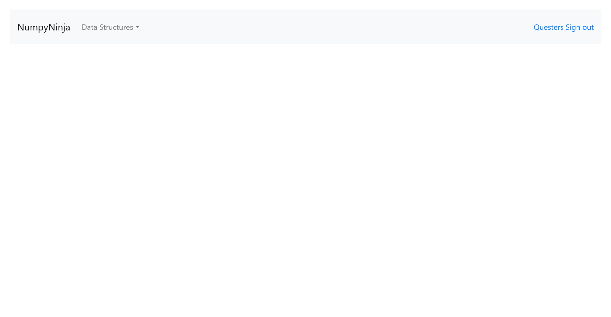FailVerify that user receives error when user clicks on run button without entering code in tryeditor for LinkedList PageFailVerify that user receives error when user clicks on run button without entering code in tryeditor for LinkedList PageGiven The user is on the DSAlgo homepage after signGiven The user is on the tryeditor page of seven Options "LinkedList" and 1 of LinkedList pageWhen the user clicks the Run buttonThen the user should see an error messagedsAlgoHooks.Hooks.tearDown(io.cucumber.java.Scenario)Verify that user receives error when user clicks on run button without entering code in tryeditor for LinkedList PagePassVerify the user is able to navigate to the Practice Questions mentioned under Seven options of LinkedListGiven The user is on the DSAlgo homepage after signGiven The user is navigates to seven Options "LinkedList" and 4 of LinkedList pageWhen the user clicks on the Practice Questions linkThen the user should navigated to the Practice Questions page of three options "LinkedList" and 4 in Stack pageFailVerify the user is able to navigate to the Practice Questions mentioned under Seven options of LinkedListPassVerify the user is able to navigate to the Practice Questions mentioned under Seven options of LinkedListGiven The user is on the DSAlgo homepage after signGiven The user is navigates to seven Options "LinkedList" and 1 of LinkedList pageWhen the user clicks on the Practice Questions linkThen the user should navigated to the Practice Questions page of three options "LinkedList" and 1 in Stack pageFailVerify the user see list of Practice Questions in Practice Questions Page of three options pagesGiven The user is on the DSAlgo homepage after signGiven The user is navigates to seven Options "LinkedList" and 2 of LinkedList pageWhen the user clicks on the Practice Questions linkThen the user should see list of Practice Questions in Practice Questions PagedsAlgoHooks.Hooks.tearDown(io.cucumber.java.Scenario)Verify the user see list of Practice Questions in Practice Questions Page of three options pages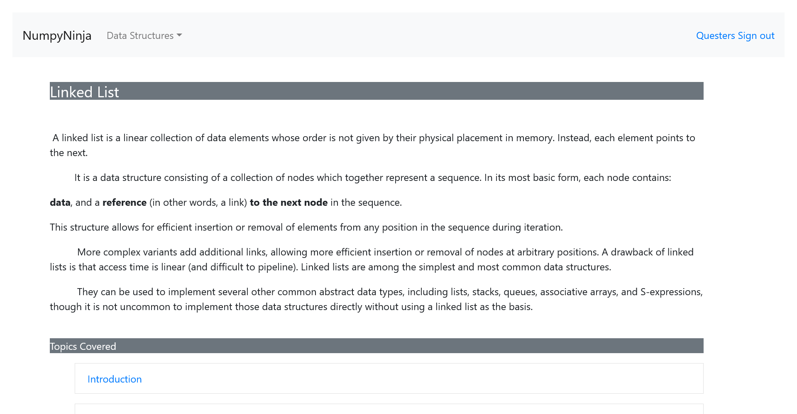FailVerify the user see list of Practice Questions in Practice Questions Page of three options pagesFailVerify the user see list of Practice Questions in Practice Questions Page of three options pagesGiven The user is on the DSAlgo homepage after signGiven The user is navigates to seven Options "LinkedList" and 1 of LinkedList pageWhen the user clicks on the Practice Questions linkThen the user should see list of Practice Questions in Practice Questions PagedsAlgoHooks.Hooks.tearDown(io.cucumber.java.Scenario)Verify the user see list of Practice Questions in Practice Questions Page of three options pages
PassVerify that valid and invalid python code in TryEditor Implementation using collections dequeGiven The user is on the DSAlgo homepage after signGiven The user is in TryEditor page of Implementation using collections deque in PythonWhen The user enters code from "Invalid","tryEditor" and 2 clicks the Run buttonThen The user should see a result "alertmessageoutput","tryEditor" and 2PassVerify the user is able to navigate to the pratice questions on each Queue topicsGiven The user is on the DSAlgo homepage after signGiven The user navigates to options "Queue" and 4 of Queue pageWhen User click Practice Questions LinkThen User should navigate to Practice questions from "Queue" and 4 Queue TopicsFailVerify that user is able to run valid Python code in Try Editor for LinkedList PagePassVerify that user is able to run valid Python code in Try Editor for LinkedList PageGiven The user is on the DSAlgo homepage after signGiven The user is on the tryeditor page of Deletion in LinkedListWhen The user enters code "Valid", "tryEditor" and 1 clicks the Run buttonThen The user should see an result "successouput", "tryEditor" and 1PassVerify the user is able to navigate to the Practice Questions mentioned under Seven options of LinkedListGiven The user is on the DSAlgo homepage after signGiven The user is navigates to seven Options "LinkedList" and 2 of LinkedList pageWhen the user clicks on the Practice Questions linkThen the user should navigated to the Practice Questions page of three options "LinkedList" and 2 in Stack pageFailVerify the user see list of Practice Questions in Practice Questions Page of three options pagesGiven The user is on the DSAlgo homepage after signGiven The user is navigates to seven Options "LinkedList" and 3 of LinkedList pageWhen the user clicks on the Practice Questions linkThen the user should see list of Practice Questions in Practice Questions PagedsAlgoHooks.Hooks.tearDown(io.cucumber.java.Scenario)Verify the user see list of Practice Questions in Practice Questions Page of three options pages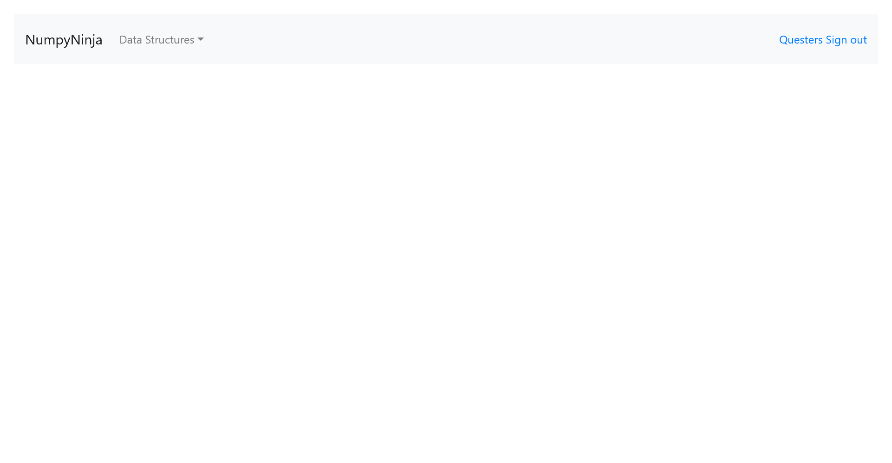FailVerify that user receives error when user clicks on run button without entering code in tryeditor for LinkedList PageFailVerify that user receives error when user clicks on run button without entering code in tryeditor for LinkedList PageGiven The user is on the DSAlgo homepage after signGiven The user is on the tryeditor page of seven Options "LinkedList" and 1 of LinkedList pageWhen the user clicks the Run buttonThen the user should see an error messagedsAlgoHooks.Hooks.tearDown(io.cucumber.java.Scenario)Verify that user receives error when user clicks on run button without entering code in tryeditor for LinkedList PagePassVerify the user is able to navigate to the Practice Questions mentioned under Seven options of LinkedListGiven The user is on the DSAlgo homepage after signGiven The user is navigates to seven Options "LinkedList" and 4 of LinkedList pageWhen the user clicks on the Practice Questions linkThen the user should navigated to the Practice Questions page of three options "LinkedList" and 4 in Stack pageFailVerify the user is able to navigate to the Practice Questions mentioned under Seven options of LinkedListPassVerify the user is able to navigate to the Practice Questions mentioned under Seven options of LinkedListGiven The user is on the DSAlgo homepage after signGiven The user is navigates to seven Options "LinkedList" and 1 of LinkedList pageWhen the user clicks on the Practice Questions linkThen the user should navigated to the Practice Questions page of three options "LinkedList" and 1 in Stack pageFailVerify the user see list of Practice Questions in Practice Questions Page of three options pagesGiven The user is on the DSAlgo homepage after signGiven The user is navigates to seven Options "LinkedList" and 2 of LinkedList pageWhen the user clicks on the Practice Questions linkThen the user should see list of Practice Questions in Practice Questions PagedsAlgoHooks.Hooks.tearDown(io.cucumber.java.Scenario)Verify the user see list of Practice Questions in Practice Questions Page of three options pages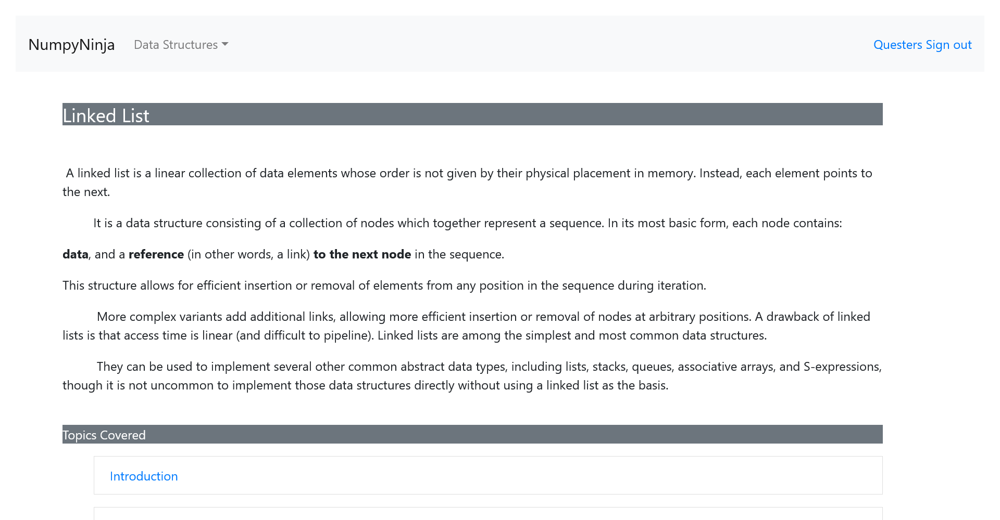FailVerify the user see list of Practice Questions in Practice Questions Page of three options pagesFailVerify the user see list of Practice Questions in Practice Questions Page of three options pagesGiven The user is on the DSAlgo homepage after signGiven The user is navigates to seven Options "LinkedList" and 1 of LinkedList pageWhen the user clicks on the Practice Questions linkThen the user should see list of Practice Questions in Practice Questions PagedsAlgoHooks.Hooks.tearDown(io.cucumber.java.Scenario)Verify the user see list of Practice Questions in Practice Questions Page of three options pages
-
Queue functionality
10:03:23 AM / 00:05:12:401 Fail
Queue functionality
01.28.2025 10:03:23 AM 01.28.2025 10:08:35 AM 00:05:12:401 · #test-id=3,117PassVerify that user is able to navigate to "Queue" data structure pageGiven The user is on the DSAlgo homepage after signWhen The user clicks the Getting Started button in Queue PanelThen The user be directed to Queue DataStructure PagePassVerify that user is able to navigate to "Implementation of Queue in Python" pageGiven The user is on the DSAlgo homepage after signGiven The user is in the Queue page after Sign inWhen User clicks Implementation of Queue in Python buttonThen User should be redirected to Implementation of Queue in Python pagePassVerify that user is able to navigate to "try Editor" page for "Implementation of Queue in Python" pageGiven The user is on the DSAlgo homepage after signGiven User is on the Implementation of Queue in Python pageWhen The user clicks Try Here button in Implementation of Queue in Python pageThen User should be redirected to a page having an try Editor with a Run button to testPassVerify that user is able to navigate to "Implementation using collections.deque" pageGiven The user is on the DSAlgo homepage after signGiven The user is in the Implementation of Queue in Python pageWhen The user clicks Implementation using collections deque buttonThen The user should be redirected to Implementation using collections deque pagePassVerify that user is able to navigate to "try Editor" page for "Implementation using collections.deque" pageGiven The user is on the DSAlgo homepage after signGiven The user is on the Implementation using collections deque pageWhen The user clicks Try Here button in Implementation using collections deque pageThen User should be redirected to a page having an try Editor with a Run button to testFailVerify that user is able to navigate to "Implementation using array" pageGiven The user is on the DSAlgo homepage after signGiven The user is in the Implementation using collections deque pageWhen The user clicks Implementation using array buttonThen The user should be redirected to Implementation using array pagedsAlgoHooks.Hooks.tearDown(io.cucumber.java.Scenario)Verify that user is able to navigate to "Implementation using array" page PassVerify that user is able to navigate to "try Editor" page for "Implementation using array" pageGiven The user is on the DSAlgo homepage after signGiven The user is on the Implementation using array pageWhen The user clicks Try Here button in Implementation using array pageThen User should be redirected to a page having an try Editor with a Run button to testPassVerify that user is able to navigate to "Queue Operations" pageGiven The user is on the DSAlgo homepage after signGiven The user is in the Implementation using array pageWhen User clicks Queue Operations buttonThen User should be redirected to Queue Operations pagePassVerify that user is able to navigate to "try Editor" page for "Queue Operations" pageGiven The user is on the DSAlgo homepage after signGiven User is on the Queue Operations pageWhen The user clicks Try here button in Queue Operations pageThen User should be redirected to a page having an try Editor with a Run button to testFailVerify that valid and invalid python code in TryEditor Implementation of Queue in PythonPassVerify that valid and invalid python code in TryEditor Implementation of Queue in PythonGiven The user is on the DSAlgo homepage after signGiven The user is in TryEditor page of Implementation of Queue in PythonWhen The user enters code from "Valid","tryEditor" and 1 clicks the Run buttonThen The user should see a result "successouput","tryEditor" and 1PassVerify that valid and invalid python code in TryEditor Implementation of Queue in PythonGiven The user is on the DSAlgo homepage after signGiven The user is in TryEditor page of Implementation of Queue in PythonWhen The user enters code from "Invalid","tryEditor" and 2 clicks the Run buttonThen The user should see a result "alertmessageoutput","tryEditor" and 2PassVerify the user is able to navigate to the pratice questions on each Queue topicsGiven The user is on the DSAlgo homepage after signGiven The user navigates to options "Queue" and 1 of Queue pageWhen User click Practice Questions LinkThen User should navigate to Practice questions from "Queue" and 1 Queue TopicsFailVerify the user see list of Practice Questions in Practice Questions Page of Queue OptionsGiven The user is on the DSAlgo homepage after signGiven The user navigates to Queue Options "
PassVerify that user is able to navigate to "try Editor" page for "Implementation using array" pageGiven The user is on the DSAlgo homepage after signGiven The user is on the Implementation using array pageWhen The user clicks Try Here button in Implementation using array pageThen User should be redirected to a page having an try Editor with a Run button to testPassVerify that user is able to navigate to "Queue Operations" pageGiven The user is on the DSAlgo homepage after signGiven The user is in the Implementation using array pageWhen User clicks Queue Operations buttonThen User should be redirected to Queue Operations pagePassVerify that user is able to navigate to "try Editor" page for "Queue Operations" pageGiven The user is on the DSAlgo homepage after signGiven User is on the Queue Operations pageWhen The user clicks Try here button in Queue Operations pageThen User should be redirected to a page having an try Editor with a Run button to testFailVerify that valid and invalid python code in TryEditor Implementation of Queue in PythonPassVerify that valid and invalid python code in TryEditor Implementation of Queue in PythonGiven The user is on the DSAlgo homepage after signGiven The user is in TryEditor page of Implementation of Queue in PythonWhen The user enters code from "Valid","tryEditor" and 1 clicks the Run buttonThen The user should see a result "successouput","tryEditor" and 1PassVerify that valid and invalid python code in TryEditor Implementation of Queue in PythonGiven The user is on the DSAlgo homepage after signGiven The user is in TryEditor page of Implementation of Queue in PythonWhen The user enters code from "Invalid","tryEditor" and 2 clicks the Run buttonThen The user should see a result "alertmessageoutput","tryEditor" and 2PassVerify the user is able to navigate to the pratice questions on each Queue topicsGiven The user is on the DSAlgo homepage after signGiven The user navigates to options "Queue" and 1 of Queue pageWhen User click Practice Questions LinkThen User should navigate to Practice questions from "Queue" and 1 Queue TopicsFailVerify the user see list of Practice Questions in Practice Questions Page of Queue OptionsGiven The user is on the DSAlgo homepage after signGiven The user navigates to Queue Options "" and 2 of queue page When The user clicks on the Practice Questions linkStep skippedThen The user should see list of Practice Questions in Practice Questions PageStep skippeddsAlgoHooks.Hooks.tearDown(io.cucumber.java.Scenario)Verify the user see list of Practice Questions in Practice Questions Page of Queue Options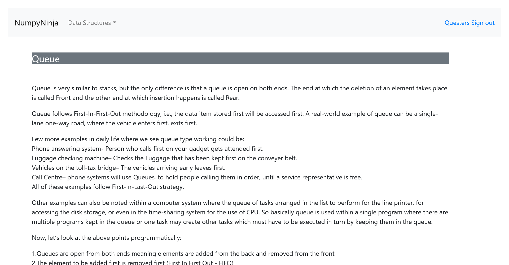FailVerify that valid and invalid python code in TryEditor Implementation using collections dequePassVerify that valid and invalid python code in TryEditor Implementation using collections dequeGiven The user is on the DSAlgo homepage after signGiven The user is in TryEditor page of Implementation using collections deque in PythonWhen The user enters code from "Valid","tryEditor" and 1 clicks the Run buttonThen The user should see a result "successouput","tryEditor" and 1FailVerify the user see list of Practice Questions in Practice Questions Page of Queue OptionsGiven The user is on the DSAlgo homepage after signGiven The user navigates to Queue Options "" and 4 of queue page When The user clicks on the Practice Questions linkStep skippedThen The user should see list of Practice Questions in Practice Questions PageStep skippeddsAlgoHooks.Hooks.tearDown(io.cucumber.java.Scenario)Verify the user see list of Practice Questions in Practice Questions Page of Queue Options PassVerify that valid and invalid python code in TryEditor Implementation using arrayPassVerify that valid and invalid python code in TryEditor Implementation using arrayGiven The user is on the DSAlgo homepage after signGiven The user is in TryEditor page of Implementation using array in PythonWhen The user enters code from "Valid","tryEditor" and 1 clicks the Run buttonThen The user should see a result "successouput","tryEditor" and 1PassVerify that valid and invalid python code in TryEditor Implementation using arrayGiven The user is on the DSAlgo homepage after signGiven The user is in TryEditor page of Implementation using array in PythonWhen The user enters code from "Invalid","tryEditor" and 2 clicks the Run buttonThen The user should see a result "alertmessageoutput","tryEditor" and 2PassVerify the user is able to navigate to the pratice questions on each Queue topicsGiven The user is on the DSAlgo homepage after signGiven The user navigates to options "Queue" and 3 of Queue pageWhen User click Practice Questions LinkThen User should navigate to Practice questions from "Queue" and 3 Queue TopicsPassVerify that valid and invalid python code in TryEditor Queue OperationsPassVerify that valid and invalid python code in TryEditor Queue OperationsGiven The user is on the DSAlgo homepage after signGiven The user is in TryEditor page of Queue Operations in PythonWhen The user enters code from "Valid","tryEditor" and 1 clicks the Run buttonThen The user should see a result "successouput","tryEditor" and 1PassVerify that valid and invalid python code in TryEditor Queue OperationsGiven The user is on the DSAlgo homepage after signGiven The user is in TryEditor page of Queue Operations in PythonWhen The user enters code from "Invalid","tryEditor" and 2 clicks the Run buttonThen The user should see a result "alertmessageoutput","tryEditor" and 2FailVerify that user receives error when user clicks on run button without entering code in tryeditor for Implementation of Queue in PythonGiven The user is on the DSAlgo homepage after signGiven The user is on the tryeditor page of Implementation of Queue in PythonWhen the user clicks the Run button of Implementation of Queue in PythonThen the user should see an error messagedsAlgoHooks.Hooks.tearDown(io.cucumber.java.Scenario)Verify that user receives error when user clicks on run button without entering code in tryeditor for Implementation of Queue in Python
PassVerify that valid and invalid python code in TryEditor Implementation using arrayPassVerify that valid and invalid python code in TryEditor Implementation using arrayGiven The user is on the DSAlgo homepage after signGiven The user is in TryEditor page of Implementation using array in PythonWhen The user enters code from "Valid","tryEditor" and 1 clicks the Run buttonThen The user should see a result "successouput","tryEditor" and 1PassVerify that valid and invalid python code in TryEditor Implementation using arrayGiven The user is on the DSAlgo homepage after signGiven The user is in TryEditor page of Implementation using array in PythonWhen The user enters code from "Invalid","tryEditor" and 2 clicks the Run buttonThen The user should see a result "alertmessageoutput","tryEditor" and 2PassVerify the user is able to navigate to the pratice questions on each Queue topicsGiven The user is on the DSAlgo homepage after signGiven The user navigates to options "Queue" and 3 of Queue pageWhen User click Practice Questions LinkThen User should navigate to Practice questions from "Queue" and 3 Queue TopicsPassVerify that valid and invalid python code in TryEditor Queue OperationsPassVerify that valid and invalid python code in TryEditor Queue OperationsGiven The user is on the DSAlgo homepage after signGiven The user is in TryEditor page of Queue Operations in PythonWhen The user enters code from "Valid","tryEditor" and 1 clicks the Run buttonThen The user should see a result "successouput","tryEditor" and 1PassVerify that valid and invalid python code in TryEditor Queue OperationsGiven The user is on the DSAlgo homepage after signGiven The user is in TryEditor page of Queue Operations in PythonWhen The user enters code from "Invalid","tryEditor" and 2 clicks the Run buttonThen The user should see a result "alertmessageoutput","tryEditor" and 2FailVerify that user receives error when user clicks on run button without entering code in tryeditor for Implementation of Queue in PythonGiven The user is on the DSAlgo homepage after signGiven The user is on the tryeditor page of Implementation of Queue in PythonWhen the user clicks the Run button of Implementation of Queue in PythonThen the user should see an error messagedsAlgoHooks.Hooks.tearDown(io.cucumber.java.Scenario)Verify that user receives error when user clicks on run button without entering code in tryeditor for Implementation of Queue in Python PassVerify the user is able to navigate to the pratice questions on each Queue topicsPassVerify the user is able to navigate to the pratice questions on each Queue topicsGiven The user is on the DSAlgo homepage after signGiven The user navigates to options "Queue" and 2 of Queue pageWhen User click Practice Questions LinkThen User should navigate to Practice questions from "Queue" and 2 Queue TopicsFailVerify the user see list of Practice Questions in Practice Questions Page of Queue OptionsFailVerify the user see list of Practice Questions in Practice Questions Page of Queue OptionsGiven The user is on the DSAlgo homepage after signGiven The user navigates to Queue Options "
PassVerify the user is able to navigate to the pratice questions on each Queue topicsPassVerify the user is able to navigate to the pratice questions on each Queue topicsGiven The user is on the DSAlgo homepage after signGiven The user navigates to options "Queue" and 2 of Queue pageWhen User click Practice Questions LinkThen User should navigate to Practice questions from "Queue" and 2 Queue TopicsFailVerify the user see list of Practice Questions in Practice Questions Page of Queue OptionsFailVerify the user see list of Practice Questions in Practice Questions Page of Queue OptionsGiven The user is on the DSAlgo homepage after signGiven The user navigates to Queue Options "" and 1 of queue page When The user clicks on the Practice Questions linkStep skippedThen The user should see list of Practice Questions in Practice Questions PageStep skippeddsAlgoHooks.Hooks.tearDown(io.cucumber.java.Scenario)Verify the user see list of Practice Questions in Practice Questions Page of Queue Options FailVerify the user see list of Practice Questions in Practice Questions Page of Queue OptionsGiven The user is on the DSAlgo homepage after signGiven The user navigates to Queue Options "
FailVerify the user see list of Practice Questions in Practice Questions Page of Queue OptionsGiven The user is on the DSAlgo homepage after signGiven The user navigates to Queue Options "" and 3 of queue page When The user clicks on the Practice Questions linkStep skippedThen The user should see list of Practice Questions in Practice Questions PageStep skippeddsAlgoHooks.Hooks.tearDown(io.cucumber.java.Scenario)Verify the user see list of Practice Questions in Practice Questions Page of Queue Options
-
Register functionality
10:07:02 AM / 00:05:27:359 Pass
Register functionality
01.28.2025 10:07:02 AM 01.28.2025 10:12:29 AM 00:05:27:359 · #test-id=3,309PassVerify the user is able to land on Register PageGiven The User is On The Home PageWhen User clicks Register link on the Home pageThen The user should be redirected to Register formPassVerify that user gets error message giving username without entering password and password confirmation when clicking onPassVerify that user gets error message giving username without entering password and password confirmation when clicking onGiven The user is on the register pageWhen The user enters the username and clicks Register button "Register" and 1Then The user should get error message "Please fill out this field" is displayed in Password Confirmation textboxPass: Verify that user gets error message giving username and password without entering password confirmation whenPass: Verify that user gets error message giving username and password without entering password confirmation whenGiven The user is on the register pageWhen The user enters the username and password and clicks Register button "Register" and 2Then The user should get error message " Please fill out this field" is displayed in Password Confirmation textboxPassVerify the user is able to navigate to the Operations in Stack in Stack pageGiven The user is on the DSAlgo homepage after signGiven the user is on the Stack pageWhen the user clicks on the Options "Stack" and 2 in Stack PageThen the user should navigated to the Options "Stack" and 2 in Stack pagePassVerify that user is able to run valid Python code in Try Editor for Stack PageGiven The user is on the DSAlgo homepage after signGiven The user is on the tryeditor page of ImplementationWhen The user enters code "Invalid", "tryEditor" and 2 clicks the Run buttonThen The user should see an result "alertmessageoutput", "tryEditor" and 2PassVerify that user gets error message without entering username , password and password confirmation when clicking onPassVerify that user gets error message without entering username , password and password confirmation when clicking onGiven The user is on the register pageWhen The user clicks Register button on the Register page without entering username ,password and password confirmation "Register"and 3Then The user should get error message " Please fill out this field" is displayed in Password Confirmation textboxPassVerify that user gets error message giving username and entering password and password confirmation different whenPassVerify that user gets error message giving username and entering password and password confirmation different whenGiven The user is on the register pageWhen The user enters the username and password different and clicks Register button from sheet "Register" and row 4Then The user should get error message "password_mismatch:The two password fields didn’t match." in register pagePassVerify that user gets error mesage when entering only numeric when clicking on register buttonPassVerify that user gets error mesage when entering only numeric when clicking on register buttonGiven The user is on the register pageWhen The user enters the Password only numeric and clicks Register button from sheet "Register" and row 5Then The user should get error message "password_mismatch:The two password fields didn’t match." in register pagePassVerify that user gets error message giving invalid username like %,$,& (Example: Tom$, Tom%) when clicking on registerPassVerify that user gets error message giving invalid username like %,$,& (Example: Tom$, Tom%) when clicking on registerGiven The user is on the register pageWhen The user enters the invalid username like %,$,& and clicks Register button from sheet "Register" and row 6Then The user should get error message "password_mismatch:The two password fields didn’t match." in register pagePassVerify that user gets error message while entering the password less than 8 characters when clicking on register buttonPassVerify that user gets error message while entering the password less than 8 characters when clicking on register buttonGiven The user is on the register pageWhen The user enters the password less than eight characters and clicks Register button from sheet "Register" and row 7Then The user should get error message "password_mismatch:The two password fields didn’t match." in register pagePassVerify that user is able to see Register and sign in linkswhen clicking on signout linkGiven The User is On The Home PageWhen The user clicks Signout linkThen The user should be able to see Register and sign in links at the top corner of the home pagePassVerify that user is able to login to DSAlgo after doing successful registrationGiven The User is On The Home PageWhen The user clicks login buttonThen The user should be able to redirect to the home page of DsAlgo after Signin -
Signin functionality
10:08:35 AM / 00:13:05:375 Fail
Signin functionality
01.28.2025 10:08:35 AM 01.28.2025 10:21:40 AM 00:13:05:375 · #test-id=3,395PassVerify the user is direct to Login PageGiven The User is On the Home PageWhen User clicks on Sign in linkThen The user should be directed to Signin pagePassVerify the user is able to login giving valid username and valid password when clicking on login buttonPassVerify the user is able to login giving valid username and valid password when clicking on login buttonGiven The user is on the Login PageWhen User enters valid username and valid password and clicks Login button "Signin" and row 1Then The user is directed to Data Structure home page with message "You are logged in"PassVerify the user should not able to login giving Invalid username and valid password when clicking on login buttonPassVerify the user should not able to login giving Invalid username and valid password when clicking on login buttonGiven The user is on the Login PageWhen User enters Invalid username and valid password and clicks Login button "Signin" and row 2Then The user should get a warning message "Invalid Username and Password"PassVerify the user should not able to login giving valid username and Invalid password when clicking on login buttonPassVerify the user should not able to login giving valid username and Invalid password when clicking on login buttonGiven The user is on the Login PageWhen User enters valid username and Invalid password and clicks Login button "Signin" and row 3Then The user should get a warning message "Invalid Username and Password"PassVerify the user is able to navigate to the Operations in Stack in Stack pageGiven The user is on the DSAlgo homepage after signGiven the user is on the Stack pageWhen the user clicks on the Options "Stack" and 3 in Stack PageThen the user should navigated to the Options "Stack" and 3 in Stack pagePassVerify the user should not able to login giving Invalid username and Invalid password when clicking on login buttonPassVerify the user should not able to login giving Invalid username and Invalid password when clicking on login buttonGiven The user is on the Login PageWhen User enters Invalid username and Invalid password and clicks Login button "Signin" and row 4Then The user should get a warning message "Invalid Username and Password"PassVerify that user is able to navigate to the try Editor page from different options in Stack PageGiven The user is on the DSAlgo homepage after signGiven The user is on the Stack Options "Stack" and 2 pageWhen The user clicks on the Try here button on the Stack Options pageThen The user should navigate to the tryeditor pagePassVerify the user is able to navigate to the Practice Questions mentioned under three options pagesGiven The user is on the DSAlgo homepage after signGiven The user is navigates to three Options "Stack" and 3 of stack pageWhen the user clicks on the Practice Questions linkThen the user should navigated to the Practice Questions page of three options "Stack" and 3 in Stack pagePassVerify the user is able to navigate to the Operations in Tree in Tree pageGiven The user is on the DSAlgo homepage after signGiven User is on Tree PageWhen User click on Options "Tree" and 4 in Tree pageThen User should redirected to Options "Tree" and 4 in Tree pagePassVerify the user is able to navigate to TryEditor page from Tree OptionsGiven The user is on the DSAlgo homepage after signGiven The user is on the Tree Options "Tree" and 2 pageWhen The user click Try Here button on Tree Options pageThen The user should redirected to Try Editor of each OptionsPassVerify the user is able to navigate to TryEditor page from Tree OptionsGiven The user is on the DSAlgo homepage after signGiven The user is on the Tree Options "Tree" and 9 pageWhen The user click Try Here button on Tree Options pageThen The user should redirected to Try Editor of each OptionsPassVerify the user should not able to login giving empty username and empty password when clicking on login buttonGiven The user is on the Login PageWhen User clicks Login button without entering username and passwordThen The user should get a element showing empty field "Please fill out this field."PassVerify the user gets error message without entering username and giving Password when clicking on login buttonPassVerify the user gets error message without entering username and giving Password when clicking on login buttonGiven The user is on the Login PageWhen User clicks on Login link on Login page without entering username and giving password from sheetname "Signin" and row 5Then The user should get a element showing empty field "Please fill out this field."FailVerify the user gets error message entering username and without entering Password when clicking on login buttonPassVerify the user gets error message entering username and without entering Password when clicking on login buttonGiven The user is on the Login PageWhen User clicks on Login link on Login page entering username and without entering password from sheetname "Signin" and row 6Then The user should get a element showing empty field "Please fill out this field."PassVerify that user is able to run valid Python code in Try Editor for Stack PageGiven The user is on the DSAlgo homepage after signGiven The user is on the tryeditor page of Operations in StackWhen The user enters code "Invalid", "tryEditor" and 2 clicks the Run buttonThen The user should see an result "alertmessageoutput", "tryEditor" and 2FailVerify the user see list of Practice Questions in Practice Questions Page of three options pagesGiven The user is on the DSAlgo homepage after signGiven The user is navigates to three Options "Stack" and 2 of stack pageWhen the user clicks on the Practice Questions linkThen the user should see list of Practice Questions in Practice Questions PagedsAlgoHooks.Hooks.tearDown(io.cucumber.java.Scenario)Verify the user see list of Practice Questions in Practice Questions Page of three options pages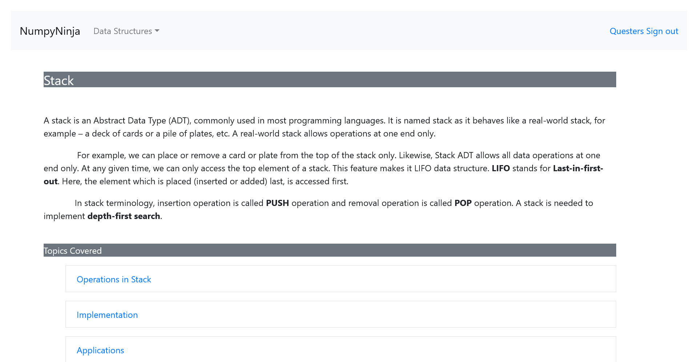PassVerify the user is able to navigate to the Operations in Tree in Tree pageGiven The user is on the DSAlgo homepage after signGiven User is on Tree PageWhen User click on Options "Tree" and 8 in Tree pageThen User should redirected to Options "Tree" and 8 in Tree pagePassVerify the user is able to navigate to TryEditor page from Tree OptionsGiven The user is on the DSAlgo homepage after signGiven The user is on the Tree Options "Tree" and 4 pageWhen The user click Try Here button on Tree Options pageThen The user should redirected to Try Editor of each OptionsPassVerify the user is able to navigate to TryEditor page from Tree OptionsGiven The user is on the DSAlgo homepage after signGiven The user is on the Tree Options "Tree" and 11 pageWhen The user click Try Here button on Tree Options pageThen The user should redirected to Try Editor of each OptionsPassVerify that valid and invalid python code in TryEditor BinaryTreesGiven The user is on the DSAlgo homepage after signGiven The user is in TryEditor page of BinaryTreesWhen The user enters code from "Invalid","tryEditor" and 2 clicks the Run buttonThen The user should see a result "alertmessageoutput","tryEditor" and 2PassVerify that valid and invalid python code in TryEditor ApplicationsOfBinaryTreesGiven The user is on the DSAlgo homepage after signGiven The user is in TryEditor page of ApplicationsOfBinaryTreesWhen The user enters code from "Invalid","tryEditor" and 2 clicks the Run buttonThen The user should see a result "alertmessageoutput","tryEditor" and 2PassVerify the user is able to sign out successfullyGiven The user is On the Home PageWhen User clicks Signout linkThen The user should be redirected to home page with message "Logged out successfully" -
Stack functionality
10:10:12 AM / 00:10:05:438 Fail
Stack functionality
01.28.2025 10:10:12 AM 01.28.2025 10:20:17 AM 00:10:05:438 · #test-id=3,470PassVerify that the user can navigate to the Stack page after signinGiven The user is on the DSAlgo homepage after signWhen the user clicks on the GetStarted button of Stack sectionThen the user is navigated to the Stack pagePassVerify the user is able to navigate to the Operations in Stack in Stack pagePassVerify the user is able to navigate to the Operations in Stack in Stack pageGiven The user is on the DSAlgo homepage after signGiven the user is on the Stack pageWhen the user clicks on the Options "Stack" and 1 in Stack PageThen the user should navigated to the Options "Stack" and 1 in Stack pagePassVerify that user is able to run valid Python code in Try Editor for Stack PageGiven The user is on the DSAlgo homepage after signGiven The user is on the tryeditor page of ApplicationsWhen The user enters code "Invalid", "tryEditor" and 2 clicks the Run buttonThen The user should see an result "alertmessageoutput", "tryEditor" and 2FailVerify that user is able to navigate to the try Editor page from different options in Stack PagePassVerify that user is able to navigate to the try Editor page from different options in Stack PageGiven The user is on the DSAlgo homepage after signGiven The user is on the Stack Options "Stack" and 1 pageWhen The user clicks on the Try here button on the Stack Options pageThen The user should navigate to the tryeditor pagePassVerify that user is able to navigate to the try Editor page from different options in Stack PageGiven The user is on the DSAlgo homepage after signGiven The user is on the Stack Options "Stack" and 3 pageWhen The user clicks on the Try here button on the Stack Options pageThen The user should navigate to the tryeditor pagePassVerify the user is able to navigate to the Practice Questions mentioned under three options pagesGiven The user is on the DSAlgo homepage after signGiven The user is navigates to three Options "Stack" and 2 of stack pageWhen the user clicks on the Practice Questions linkThen the user should navigated to the Practice Questions page of three options "Stack" and 2 in Stack pageFailVerify the user see list of Practice Questions in Practice Questions Page of three options pagesGiven The user is on the DSAlgo homepage after signGiven The user is navigates to three Options "Stack" and 3 of stack pageWhen the user clicks on the Practice Questions linkThen the user should see list of Practice Questions in Practice Questions PagedsAlgoHooks.Hooks.tearDown(io.cucumber.java.Scenario)Verify the user see list of Practice Questions in Practice Questions Page of three options pages PassVerify the user is able to navigate to the Operations in Tree in Tree pageGiven The user is on the DSAlgo homepage after signGiven User is on Tree PageWhen User click on Options "Tree" and 2 in Tree pageThen User should redirected to Options "Tree" and 2 in Tree pagePassVerify the user is able to navigate to the Operations in Tree in Tree pageGiven The user is on the DSAlgo homepage after signGiven User is on Tree PageWhen User click on Options "Tree" and 7 in Tree pageThen User should redirected to Options "Tree" and 7 in Tree pagePassVerify the user is able to navigate to the Operations in Tree in Tree pageGiven The user is on the DSAlgo homepage after signGiven User is on Tree PageWhen User click on Options "Tree" and 12 in Tree pageThen User should redirected to Options "Tree" and 12 in Tree pagePassVerify the user is able to navigate to TryEditor page from Tree OptionsGiven The user is on the DSAlgo homepage after signGiven The user is on the Tree Options "Tree" and 3 pageWhen The user click Try Here button on Tree Options pageThen The user should redirected to Try Editor of each OptionsPassVerify the user is able to navigate to TryEditor page from Tree OptionsGiven The user is on the DSAlgo homepage after signGiven The user is on the Tree Options "Tree" and 10 pageWhen The user click Try Here button on Tree Options pageThen The user should redirected to Try Editor of each OptionsPassVerify that user is able to run valid Python code in Try Editor for Stack PagePassVerify that user is able to run valid Python code in Try Editor for Stack PageGiven The user is on the DSAlgo homepage after signGiven The user is on the tryeditor page of Operations in StackWhen The user enters code "Valid", "tryEditor" and 1 clicks the Run buttonThen The user should see an result "successouput", "tryEditor" and 1FailVerify that user is able to run valid Python code in Try Editor for Stack PagePassVerify that user is able to run valid Python code in Try Editor for Stack PageGiven The user is on the DSAlgo homepage after signGiven The user is on the tryeditor page of ImplementationWhen The user enters code "Valid", "tryEditor" and 1 clicks the Run buttonThen The user should see an result "successouput", "tryEditor" and 1FailVerify that user receives error when user clicks on run button without entering code in tryeditor for Stack PageGiven The user is on the DSAlgo homepage after signGiven The user is on the tryeditor page of three Options "Stack" and 2 of stack pageWhen the user clicks the Run buttonThen the user should see an error messagedsAlgoHooks.Hooks.tearDown(io.cucumber.java.Scenario)PassVerify the user is able to navigate to the Operations in Tree in Tree pageGiven The user is on the DSAlgo homepage after signGiven User is on Tree PageWhen User click on Options "Tree" and 10 in Tree pageThen User should redirected to Options "Tree" and 10 in Tree pageFailVerify that user is able to run valid Python code in Try Editor for Stack PagePassVerify that user is able to run valid Python code in Try Editor for Stack PageGiven The user is on the DSAlgo homepage after signGiven The user is on the tryeditor page of ApplicationsWhen The user enters code "Valid", "tryEditor" and 1 clicks the Run buttonThen The user should see an result "successouput", "tryEditor" and 1FailVerify that user receives error when user clicks on run button without entering code in tryeditor for Stack PageGiven The user is on the DSAlgo homepage after signGiven The user is on the tryeditor page of three Options "Stack" and 3 of stack pageWhen the user clicks the Run buttonThen the user should see an error messagedsAlgoHooks.Hooks.tearDown(io.cucumber.java.Scenario)Verify that user receives error when user clicks on run button without entering code in tryeditor for Stack Page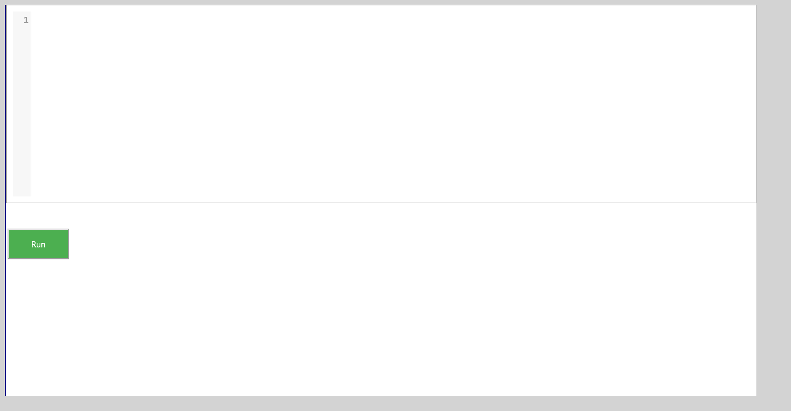PassVerify the user is able to navigate to the Operations in Tree in Tree pageGiven The user is on the DSAlgo homepage after signGiven User is on Tree PageWhen User click on Options "Tree" and 9 in Tree pageThen User should redirected to Options "Tree" and 9 in Tree pagePassVerify the user is able to navigate to TryEditor page from Tree OptionsGiven The user is on the DSAlgo homepage after signGiven The user is on the Tree Options "Tree" and 7 pageWhen The user click Try Here button on Tree Options pageThen The user should redirected to Try Editor of each OptionsPassVerify that valid and invalid python code in TryEditor TerminologiesGiven The user is on the DSAlgo homepage after signGiven The user is in TryEditor page of TerminologiesWhen The user enters code from "Invalid","tryEditor" and 2 clicks the Run buttonThen The user should see a result "alertmessageoutput","tryEditor" and 2PassVerify the user is able to navigate to the Practice Questions mentioned under three options pagesPassVerify the user is able to navigate to the Practice Questions mentioned under three options pagesGiven The user is on the DSAlgo homepage after signGiven The user is navigates to three Options "Stack" and 1 of stack pageWhen the user clicks on the Practice Questions linkThen the user should navigated to the Practice Questions page of three options "Stack" and 1 in Stack pageFailVerify the user see list of Practice Questions in Practice Questions Page of three options pagesFailVerify the user see list of Practice Questions in Practice Questions Page of three options pagesGiven The user is on the DSAlgo homepage after signGiven The user is navigates to three Options "Stack" and 1 of stack pageWhen the user clicks on the Practice Questions linkThen the user should see list of Practice Questions in Practice Questions PagedsAlgoHooks.Hooks.tearDown(io.cucumber.java.Scenario)Verify the user see list of Practice Questions in Practice Questions Page of three options pages
PassVerify the user is able to navigate to the Operations in Tree in Tree pageGiven The user is on the DSAlgo homepage after signGiven User is on Tree PageWhen User click on Options "Tree" and 2 in Tree pageThen User should redirected to Options "Tree" and 2 in Tree pagePassVerify the user is able to navigate to the Operations in Tree in Tree pageGiven The user is on the DSAlgo homepage after signGiven User is on Tree PageWhen User click on Options "Tree" and 7 in Tree pageThen User should redirected to Options "Tree" and 7 in Tree pagePassVerify the user is able to navigate to the Operations in Tree in Tree pageGiven The user is on the DSAlgo homepage after signGiven User is on Tree PageWhen User click on Options "Tree" and 12 in Tree pageThen User should redirected to Options "Tree" and 12 in Tree pagePassVerify the user is able to navigate to TryEditor page from Tree OptionsGiven The user is on the DSAlgo homepage after signGiven The user is on the Tree Options "Tree" and 3 pageWhen The user click Try Here button on Tree Options pageThen The user should redirected to Try Editor of each OptionsPassVerify the user is able to navigate to TryEditor page from Tree OptionsGiven The user is on the DSAlgo homepage after signGiven The user is on the Tree Options "Tree" and 10 pageWhen The user click Try Here button on Tree Options pageThen The user should redirected to Try Editor of each OptionsPassVerify that user is able to run valid Python code in Try Editor for Stack PagePassVerify that user is able to run valid Python code in Try Editor for Stack PageGiven The user is on the DSAlgo homepage after signGiven The user is on the tryeditor page of Operations in StackWhen The user enters code "Valid", "tryEditor" and 1 clicks the Run buttonThen The user should see an result "successouput", "tryEditor" and 1FailVerify that user is able to run valid Python code in Try Editor for Stack PagePassVerify that user is able to run valid Python code in Try Editor for Stack PageGiven The user is on the DSAlgo homepage after signGiven The user is on the tryeditor page of ImplementationWhen The user enters code "Valid", "tryEditor" and 1 clicks the Run buttonThen The user should see an result "successouput", "tryEditor" and 1FailVerify that user receives error when user clicks on run button without entering code in tryeditor for Stack PageGiven The user is on the DSAlgo homepage after signGiven The user is on the tryeditor page of three Options "Stack" and 2 of stack pageWhen the user clicks the Run buttonThen the user should see an error messagedsAlgoHooks.Hooks.tearDown(io.cucumber.java.Scenario)PassVerify the user is able to navigate to the Operations in Tree in Tree pageGiven The user is on the DSAlgo homepage after signGiven User is on Tree PageWhen User click on Options "Tree" and 10 in Tree pageThen User should redirected to Options "Tree" and 10 in Tree pageFailVerify that user is able to run valid Python code in Try Editor for Stack PagePassVerify that user is able to run valid Python code in Try Editor for Stack PageGiven The user is on the DSAlgo homepage after signGiven The user is on the tryeditor page of ApplicationsWhen The user enters code "Valid", "tryEditor" and 1 clicks the Run buttonThen The user should see an result "successouput", "tryEditor" and 1FailVerify that user receives error when user clicks on run button without entering code in tryeditor for Stack PageGiven The user is on the DSAlgo homepage after signGiven The user is on the tryeditor page of three Options "Stack" and 3 of stack pageWhen the user clicks the Run buttonThen the user should see an error messagedsAlgoHooks.Hooks.tearDown(io.cucumber.java.Scenario)Verify that user receives error when user clicks on run button without entering code in tryeditor for Stack Page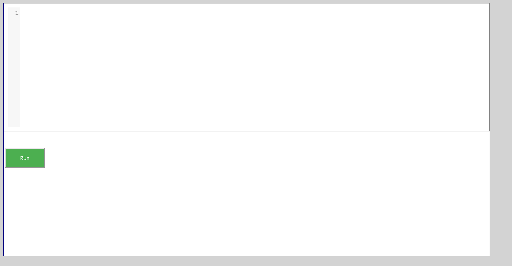PassVerify the user is able to navigate to the Operations in Tree in Tree pageGiven The user is on the DSAlgo homepage after signGiven User is on Tree PageWhen User click on Options "Tree" and 9 in Tree pageThen User should redirected to Options "Tree" and 9 in Tree pagePassVerify the user is able to navigate to TryEditor page from Tree OptionsGiven The user is on the DSAlgo homepage after signGiven The user is on the Tree Options "Tree" and 7 pageWhen The user click Try Here button on Tree Options pageThen The user should redirected to Try Editor of each OptionsPassVerify that valid and invalid python code in TryEditor TerminologiesGiven The user is on the DSAlgo homepage after signGiven The user is in TryEditor page of TerminologiesWhen The user enters code from "Invalid","tryEditor" and 2 clicks the Run buttonThen The user should see a result "alertmessageoutput","tryEditor" and 2PassVerify the user is able to navigate to the Practice Questions mentioned under three options pagesPassVerify the user is able to navigate to the Practice Questions mentioned under three options pagesGiven The user is on the DSAlgo homepage after signGiven The user is navigates to three Options "Stack" and 1 of stack pageWhen the user clicks on the Practice Questions linkThen the user should navigated to the Practice Questions page of three options "Stack" and 1 in Stack pageFailVerify the user see list of Practice Questions in Practice Questions Page of three options pagesFailVerify the user see list of Practice Questions in Practice Questions Page of three options pagesGiven The user is on the DSAlgo homepage after signGiven The user is navigates to three Options "Stack" and 1 of stack pageWhen the user clicks on the Practice Questions linkThen the user should see list of Practice Questions in Practice Questions PagedsAlgoHooks.Hooks.tearDown(io.cucumber.java.Scenario)Verify the user see list of Practice Questions in Practice Questions Page of three options pages PassVerify the user is able to navigate to the Operations in Tree in Tree pageGiven The user is on the DSAlgo homepage after signGiven User is on Tree PageWhen User click on Options "Tree" and 3 in Tree pageThen User should redirected to Options "Tree" and 3 in Tree pagePassVerify the user is able to navigate to the Operations in Tree in Tree pageGiven The user is on the DSAlgo homepage after signGiven User is on Tree PageWhen User click on Options "Tree" and 13 in Tree pageThen User should redirected to Options "Tree" and 13 in Tree pageFailVerify that user receives error when user clicks on run button without entering code in tryeditor for Stack PageFailVerify that user receives error when user clicks on run button without entering code in tryeditor for Stack PageGiven The user is on the DSAlgo homepage after signGiven The user is on the tryeditor page of three Options "Stack" and 1 of stack pageWhen the user clicks the Run buttonThen the user should see an error messagedsAlgoHooks.Hooks.tearDown(io.cucumber.java.Scenario)Verify that user receives error when user clicks on run button without entering code in tryeditor for Stack Page
PassVerify the user is able to navigate to the Operations in Tree in Tree pageGiven The user is on the DSAlgo homepage after signGiven User is on Tree PageWhen User click on Options "Tree" and 3 in Tree pageThen User should redirected to Options "Tree" and 3 in Tree pagePassVerify the user is able to navigate to the Operations in Tree in Tree pageGiven The user is on the DSAlgo homepage after signGiven User is on Tree PageWhen User click on Options "Tree" and 13 in Tree pageThen User should redirected to Options "Tree" and 13 in Tree pageFailVerify that user receives error when user clicks on run button without entering code in tryeditor for Stack PageFailVerify that user receives error when user clicks on run button without entering code in tryeditor for Stack PageGiven The user is on the DSAlgo homepage after signGiven The user is on the tryeditor page of three Options "Stack" and 1 of stack pageWhen the user clicks the Run buttonThen the user should see an error messagedsAlgoHooks.Hooks.tearDown(io.cucumber.java.Scenario)Verify that user receives error when user clicks on run button without entering code in tryeditor for Stack Page PassVerify the user is able to navigate to the Operations in Tree in Tree pageGiven The user is on the DSAlgo homepage after signGiven User is on Tree PageWhen User click on Options "Tree" and 5 in Tree pageThen User should redirected to Options "Tree" and 5 in Tree pagePassVerify the user is able to navigate to TryEditor page from Tree OptionsGiven The user is on the DSAlgo homepage after signGiven The user is on the Tree Options "Tree" and 6 pageWhen The user click Try Here button on Tree Options pageThen The user should redirected to Try Editor of each OptionsPassVerify the user is able to navigate to TryEditor page from Tree OptionsGiven The user is on the DSAlgo homepage after signGiven The user is on the Tree Options "Tree" and 12 pageWhen The user click Try Here button on Tree Options pageThen The user should redirected to Try Editor of each OptionsPassVerify that valid and invalid python code in TryEditor TypesOfBinaryTreesGiven The user is on the DSAlgo homepage after signGiven The user is in TryEditor page of TypesOfBinaryTreesWhen The user enters code from "Invalid","tryEditor" and 2 clicks the Run buttonThen The user should see a result "alertmessageoutput","tryEditor" and 2
PassVerify the user is able to navigate to the Operations in Tree in Tree pageGiven The user is on the DSAlgo homepage after signGiven User is on Tree PageWhen User click on Options "Tree" and 5 in Tree pageThen User should redirected to Options "Tree" and 5 in Tree pagePassVerify the user is able to navigate to TryEditor page from Tree OptionsGiven The user is on the DSAlgo homepage after signGiven The user is on the Tree Options "Tree" and 6 pageWhen The user click Try Here button on Tree Options pageThen The user should redirected to Try Editor of each OptionsPassVerify the user is able to navigate to TryEditor page from Tree OptionsGiven The user is on the DSAlgo homepage after signGiven The user is on the Tree Options "Tree" and 12 pageWhen The user click Try Here button on Tree Options pageThen The user should redirected to Try Editor of each OptionsPassVerify that valid and invalid python code in TryEditor TypesOfBinaryTreesGiven The user is on the DSAlgo homepage after signGiven The user is in TryEditor page of TypesOfBinaryTreesWhen The user enters code from "Invalid","tryEditor" and 2 clicks the Run buttonThen The user should see a result "alertmessageoutput","tryEditor" and 2 -
Tree functionality
10:12:35 AM / 00:09:31:996 Fail
Tree functionality
01.28.2025 10:12:35 AM 01.28.2025 10:22:07 AM 00:09:31:996 · #test-id=3,635PassVerify that user is able to navigate to "Tree" data structure pageGiven The user is on the DSAlgo homepage after signWhen The user clicks the Getting Started button in Tree PanelThen The user be directed to Tree DataStructure PagePassVerify the user is able to navigate to the Operations in Tree in Tree pagePassVerify the user is able to navigate to the Operations in Tree in Tree pageGiven The user is on the DSAlgo homepage after signGiven User is on Tree PageWhen User click on Options "Tree" and 1 in Tree pageThen User should redirected to Options "Tree" and 1 in Tree pagePassVerify the user is able to navigate to the Operations in Tree in Tree pageGiven The user is on the DSAlgo homepage after signGiven User is on Tree PageWhen User click on Options "Tree" and 6 in Tree pageThen User should redirected to Options "Tree" and 6 in Tree pagePassVerify the user is able to navigate to the Operations in Tree in Tree pageGiven The user is on the DSAlgo homepage after signGiven User is on Tree PageWhen User click on Options "Tree" and 11 in Tree pageThen User should redirected to Options "Tree" and 11 in Tree pagePassVerify the user is able to navigate to TryEditor page from Tree OptionsGiven The user is on the DSAlgo homepage after signGiven The user is on the Tree Options "Tree" and 5 pageWhen The user click Try Here button on Tree Options pageThen The user should redirected to Try Editor of each OptionsPassVerify the user is able to navigate to TryEditor page from Tree OptionsGiven The user is on the DSAlgo homepage after signGiven The user is on the Tree Options "Tree" and 8 pageWhen The user click Try Here button on Tree Options pageThen The user should redirected to Try Editor of each OptionsPassVerify the user is able to navigate to TryEditor page from Tree OptionsGiven The user is on the DSAlgo homepage after signGiven The user is on the Tree Options "Tree" and 13 pageWhen The user click Try Here button on Tree Options pageThen The user should redirected to Try Editor of each OptionsPassVerify that valid and invalid python code in TryEditor Types of TreesGiven The user is on the DSAlgo homepage after signGiven The user is in TryEditor page of TypesOfTreesWhen The user enters code from "Invalid","tryEditor" and 2 clicks the Run buttonThen The user should see a result "alertmessageoutput","tryEditor" and 2PassVerify the user is able to navigate to TryEditor page from Tree OptionsPassVerify the user is able to navigate to TryEditor page from Tree OptionsGiven The user is on the DSAlgo homepage after signGiven The user is on the Tree Options "Tree" and 1 pageWhen The user click Try Here button on Tree Options pageThen The user should redirected to Try Editor of each OptionsPassVerify that valid and invalid python code in TryEditor Overview of TreesGiven The user is on the DSAlgo homepage after signGiven The user is in TryEditor page of Overview of TreesWhen The user enters code from "Invalid","tryEditor" and 2 clicks the Run buttonThen The user should see a result "alertmessageoutput","tryEditor" and 2PassVerify that valid and invalid python code in TryEditor Overview of TreesPassVerify that valid and invalid python code in TryEditor Overview of TreesGiven The user is on the DSAlgo homepage after signGiven The user is in TryEditor page of Overview of TreesWhen The user enters code from "Valid","tryEditor" and 1 clicks the Run buttonThen The user should see a result "successouput","tryEditor" and 1PassVerify that valid and invalid python code in TryEditor TraversalsIllustrationGiven The user is on the DSAlgo homepage after signGiven The user is in TryEditor page of TraversalsIllustrationWhen The user enters code from "Invalid","tryEditor" and 2 clicks the Run buttonThen The user should see a result "alertmessageoutput","tryEditor" and 2PassVerify that valid and invalid python code in TryEditor ImplementationOfBSTGiven The user is on the DSAlgo homepage after signGiven The user is in TryEditor page of ImplementationOfBSTWhen The user enters code from "Invalid","tryEditor" and 2 clicks the Run buttonThen The user should see a result "alertmessageoutput","tryEditor" and 2FailVerify that valid and invalid python code in TryEditor TerminologiesPassVerify that valid and invalid python code in TryEditor TerminologiesGiven The user is on the DSAlgo homepage after signGiven The user is in TryEditor page of TerminologiesWhen The user enters code from "Valid","tryEditor" and 1 clicks the Run buttonThen The user should see a result "successouput","tryEditor" and 1FailVerify that valid and invalid python code in TryEditor Tree TraversalsdsAlgoHooks.Hooks.beforeScenario()Given The user is on the DSAlgo homepage after signStep skippedGiven The user is in TryEditor page of TreeTraversalsStep skippedWhen The user enters code from "Invalid","tryEditor" and 2 clicks the Run buttonStep skippedThen The user should see a result "alertmessageoutput","tryEditor" and 2Step skippeddsAlgoHooks.Hooks.tearDown(io.cucumber.java.Scenario)Verify that valid and invalid python code in TryEditor Tree Traversals PassVerify that valid and invalid python code in TryEditor Types of TreesPassVerify that valid and invalid python code in TryEditor Types of TreesGiven The user is on the DSAlgo homepage after signGiven The user is in TryEditor page of TypesOfTreesWhen The user enters code from "Valid","tryEditor" and 1 clicks the Run buttonThen The user should see a result "successouput","tryEditor" and 1PassVerify that valid and invalid python code in TryEditor Tree TraversalsPassVerify that valid and invalid python code in TryEditor Tree TraversalsGiven The user is on the DSAlgo homepage after signGiven The user is in TryEditor page of TreeTraversalsWhen The user enters code from "Valid","tryEditor" and 1 clicks the Run buttonThen The user should see a result "successouput","tryEditor" and 1PassVerify that valid and invalid python code in TryEditor BinaryTreeTraversalsGiven The user is on the DSAlgo homepage after signGiven The user is in TryEditor page of BinaryTreeTraversalsWhen The user enters code from "Invalid","tryEditor" and 2 clicks the Run buttonThen The user should see a result "alertmessageoutput","tryEditor" and 2PassVerify that valid and invalid python code in TryEditor TraversalsIllustrationPassVerify that valid and invalid python code in TryEditor TraversalsIllustrationGiven The user is on the DSAlgo homepage after signGiven The user is in TryEditor page of TraversalsIllustrationWhen The user enters code from "Valid","tryEditor" and 1 clicks the Run buttonThen The user should see a result "successouput","tryEditor" and 1PassVerify that valid and invalid python code in TryEditor BinaryTreesPassVerify that valid and invalid python code in TryEditor BinaryTreesGiven The user is on the DSAlgo homepage after signGiven The user is in TryEditor page of BinaryTreesWhen The user enters code from "Valid","tryEditor" and 1 clicks the Run buttonThen The user should see a result "successouput","tryEditor" and 1PassVerify that valid and invalid python code in TryEditor BinarySearchTreesGiven The user is on the DSAlgo homepage after signGiven The user is in TryEditor page of BinarySearchTreesWhen The user enters code from "Invalid","tryEditor" and 2 clicks the Run buttonThen The user should see a result "alertmessageoutput","tryEditor" and 2PassVerify that valid and invalid python code in TryEditor TypesOfBinaryTreesPassVerify that valid and invalid python code in TryEditor TypesOfBinaryTreesGiven The user is on the DSAlgo homepage after signGiven The user is in TryEditor page of TypesOfBinaryTreesWhen The user enters code from "Valid","tryEditor" and 1 clicks the Run buttonThen The user should see a result "successouput","tryEditor" and 1PassVerify that valid and invalid python code in TryEditor ImplementationInPythonGiven The user is on the DSAlgo homepage after signGiven The user is in TryEditor page of ImplementationInPythonWhen The user enters code from "Invalid","tryEditor" and 2 clicks the Run buttonThen The user should see a result "alertmessageoutput","tryEditor" and 2PassVerify that valid and invalid python code in TryEditor ImplementationInPythonPassVerify that valid and invalid python code in TryEditor ImplementationInPythonGiven The user is on the DSAlgo homepage after signGiven The user is in TryEditor page of ImplementationInPythonWhen The user enters code from "Valid","tryEditor" and 1 clicks the Run buttonThen The user should see a result "successouput","tryEditor" and 1PassVerify that valid and invalid python code in TryEditor BinaryTreeTraversalsPassVerify that valid and invalid python code in TryEditor BinaryTreeTraversalsGiven The user is on the DSAlgo homepage after signGiven The user is in TryEditor page of BinaryTreeTraversalsWhen The user enters code from "Valid","tryEditor" and 1 clicks the Run buttonThen The user should see a result "successouput","tryEditor" and 1PassVerify that valid and invalid python code in TryEditor ApplicationsOfBinaryTreesPassVerify that valid and invalid python code in TryEditor ApplicationsOfBinaryTreesGiven The user is on the DSAlgo homepage after signGiven The user is in TryEditor page of ApplicationsOfBinaryTreesWhen The user enters code from "Valid","tryEditor" and 1 clicks the Run buttonThen The user should see a result "successouput","tryEditor" and 1PassVerify that valid and invalid python code in TryEditor BinarySearchTreesPassVerify that valid and invalid python code in TryEditor BinarySearchTreesGiven The user is on the DSAlgo homepage after signGiven The user is in TryEditor page of BinarySearchTreesWhen The user enters code from "Valid","tryEditor" and 1 clicks the Run buttonThen The user should see a result "successouput","tryEditor" and 1PassVerify that valid and invalid python code in TryEditor ImplementationOfBSTPassVerify that valid and invalid python code in TryEditor ImplementationOfBSTGiven The user is on the DSAlgo homepage after signGiven The user is in TryEditor page of ImplementationOfBSTWhen The user enters code from "Valid","tryEditor" and 1 clicks the Run buttonThen The user should see a result "successouput","tryEditor" and 1FailVerify that user receives error when user clicks on run button without entering code in tryeditor for Overview of TreesGiven The user is on the DSAlgo homepage after signGiven The user is on the tryeditor page of Overview of TreesWhen the user clicks the Run button of Overview of TreesThen the user should see an error messagedsAlgoHooks.Hooks.tearDown(io.cucumber.java.Scenario)Verify that user receives error when user clicks on run button without entering code in tryeditor for Overview of TreesFailVerify the user is in Practical Question of Overview of TreesdsAlgoHooks.Hooks.beforeScenario()Given The user is on the DSAlgo homepage after signStep skippedGiven The user is in Overview of Trees pageStep skippedWhen The user clicks on Practice QuestionsStep skippedThen User should navigate to Practice questions pageStep skippeddsAlgoHooks.Hooks.tearDown(io.cucumber.java.Scenario)Verify the user is in Practical Question of Overview of Trees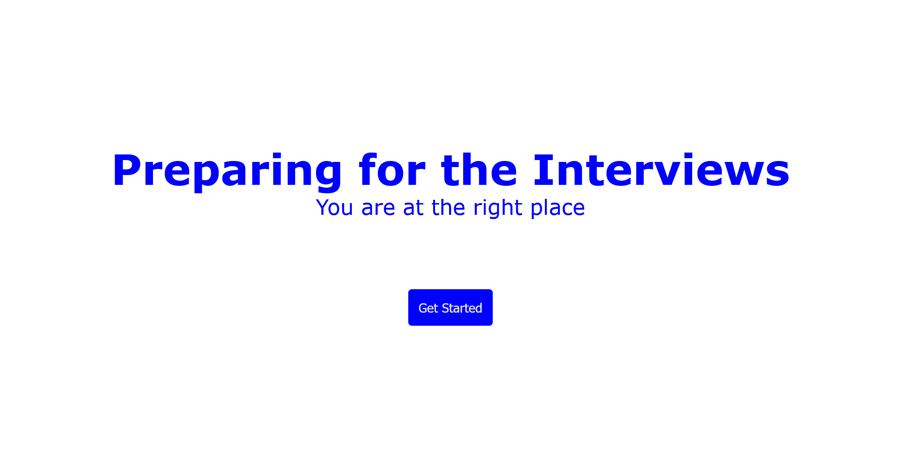FailVerify user can see practice question listGiven The user is on the DSAlgo homepage after signGiven The user is on Overview of Trees pageWhen The user click pn Practice QuestionsThen User can see Practice Question ListdsAlgoHooks.Hooks.tearDown(io.cucumber.java.Scenario)Verify user can see practice question list
PassVerify that valid and invalid python code in TryEditor Types of TreesPassVerify that valid and invalid python code in TryEditor Types of TreesGiven The user is on the DSAlgo homepage after signGiven The user is in TryEditor page of TypesOfTreesWhen The user enters code from "Valid","tryEditor" and 1 clicks the Run buttonThen The user should see a result "successouput","tryEditor" and 1PassVerify that valid and invalid python code in TryEditor Tree TraversalsPassVerify that valid and invalid python code in TryEditor Tree TraversalsGiven The user is on the DSAlgo homepage after signGiven The user is in TryEditor page of TreeTraversalsWhen The user enters code from "Valid","tryEditor" and 1 clicks the Run buttonThen The user should see a result "successouput","tryEditor" and 1PassVerify that valid and invalid python code in TryEditor BinaryTreeTraversalsGiven The user is on the DSAlgo homepage after signGiven The user is in TryEditor page of BinaryTreeTraversalsWhen The user enters code from "Invalid","tryEditor" and 2 clicks the Run buttonThen The user should see a result "alertmessageoutput","tryEditor" and 2PassVerify that valid and invalid python code in TryEditor TraversalsIllustrationPassVerify that valid and invalid python code in TryEditor TraversalsIllustrationGiven The user is on the DSAlgo homepage after signGiven The user is in TryEditor page of TraversalsIllustrationWhen The user enters code from "Valid","tryEditor" and 1 clicks the Run buttonThen The user should see a result "successouput","tryEditor" and 1PassVerify that valid and invalid python code in TryEditor BinaryTreesPassVerify that valid and invalid python code in TryEditor BinaryTreesGiven The user is on the DSAlgo homepage after signGiven The user is in TryEditor page of BinaryTreesWhen The user enters code from "Valid","tryEditor" and 1 clicks the Run buttonThen The user should see a result "successouput","tryEditor" and 1PassVerify that valid and invalid python code in TryEditor BinarySearchTreesGiven The user is on the DSAlgo homepage after signGiven The user is in TryEditor page of BinarySearchTreesWhen The user enters code from "Invalid","tryEditor" and 2 clicks the Run buttonThen The user should see a result "alertmessageoutput","tryEditor" and 2PassVerify that valid and invalid python code in TryEditor TypesOfBinaryTreesPassVerify that valid and invalid python code in TryEditor TypesOfBinaryTreesGiven The user is on the DSAlgo homepage after signGiven The user is in TryEditor page of TypesOfBinaryTreesWhen The user enters code from "Valid","tryEditor" and 1 clicks the Run buttonThen The user should see a result "successouput","tryEditor" and 1PassVerify that valid and invalid python code in TryEditor ImplementationInPythonGiven The user is on the DSAlgo homepage after signGiven The user is in TryEditor page of ImplementationInPythonWhen The user enters code from "Invalid","tryEditor" and 2 clicks the Run buttonThen The user should see a result "alertmessageoutput","tryEditor" and 2PassVerify that valid and invalid python code in TryEditor ImplementationInPythonPassVerify that valid and invalid python code in TryEditor ImplementationInPythonGiven The user is on the DSAlgo homepage after signGiven The user is in TryEditor page of ImplementationInPythonWhen The user enters code from "Valid","tryEditor" and 1 clicks the Run buttonThen The user should see a result "successouput","tryEditor" and 1PassVerify that valid and invalid python code in TryEditor BinaryTreeTraversalsPassVerify that valid and invalid python code in TryEditor BinaryTreeTraversalsGiven The user is on the DSAlgo homepage after signGiven The user is in TryEditor page of BinaryTreeTraversalsWhen The user enters code from "Valid","tryEditor" and 1 clicks the Run buttonThen The user should see a result "successouput","tryEditor" and 1PassVerify that valid and invalid python code in TryEditor ApplicationsOfBinaryTreesPassVerify that valid and invalid python code in TryEditor ApplicationsOfBinaryTreesGiven The user is on the DSAlgo homepage after signGiven The user is in TryEditor page of ApplicationsOfBinaryTreesWhen The user enters code from "Valid","tryEditor" and 1 clicks the Run buttonThen The user should see a result "successouput","tryEditor" and 1PassVerify that valid and invalid python code in TryEditor BinarySearchTreesPassVerify that valid and invalid python code in TryEditor BinarySearchTreesGiven The user is on the DSAlgo homepage after signGiven The user is in TryEditor page of BinarySearchTreesWhen The user enters code from "Valid","tryEditor" and 1 clicks the Run buttonThen The user should see a result "successouput","tryEditor" and 1PassVerify that valid and invalid python code in TryEditor ImplementationOfBSTPassVerify that valid and invalid python code in TryEditor ImplementationOfBSTGiven The user is on the DSAlgo homepage after signGiven The user is in TryEditor page of ImplementationOfBSTWhen The user enters code from "Valid","tryEditor" and 1 clicks the Run buttonThen The user should see a result "successouput","tryEditor" and 1FailVerify that user receives error when user clicks on run button without entering code in tryeditor for Overview of TreesGiven The user is on the DSAlgo homepage after signGiven The user is on the tryeditor page of Overview of TreesWhen the user clicks the Run button of Overview of TreesThen the user should see an error messagedsAlgoHooks.Hooks.tearDown(io.cucumber.java.Scenario)Verify that user receives error when user clicks on run button without entering code in tryeditor for Overview of TreesFailVerify the user is in Practical Question of Overview of TreesdsAlgoHooks.Hooks.beforeScenario()Given The user is on the DSAlgo homepage after signStep skippedGiven The user is in Overview of Trees pageStep skippedWhen The user clicks on Practice QuestionsStep skippedThen User should navigate to Practice questions pageStep skippeddsAlgoHooks.Hooks.tearDown(io.cucumber.java.Scenario)Verify the user is in Practical Question of Overview of Trees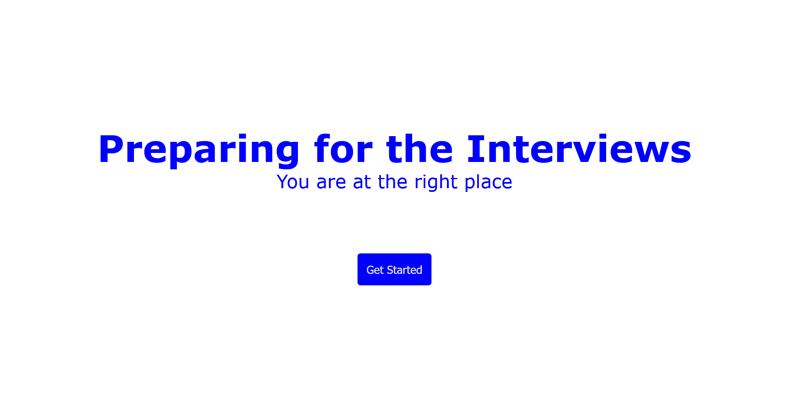FailVerify user can see practice question listGiven The user is on the DSAlgo homepage after signGiven The user is on Overview of Trees pageWhen The user click pn Practice QuestionsThen User can see Practice Question ListdsAlgoHooks.Hooks.tearDown(io.cucumber.java.Scenario)Verify user can see practice question list
-
Array functionality
10:22:09 AM / 00:03:56:131 Fail
Array functionality
01.28.2025 10:22:09 AM 01.28.2025 10:26:05 AM 00:03:56:131 · #test-id=4,135FailVerify that user is able to navigate to the try Editor page from different options in Array PagePassVerify that user is able to navigate to the try Editor page from different options in Array PageGiven The user is on the DSAlgo homepage after signGiven The user is on the Array Options "Array" and 4 pageWhen The user clicks on the Try here button on the Array Options pageThen the user should navigate to the tryeditor pagePassVerify that user is able to navigate to the try Editor page from different options in Array PageGiven The user is on the DSAlgo homepage after signGiven The user is on the Array Options "Array" and 1 pageWhen The user clicks on the Try here button on the Array Options pageThen the user should navigate to the tryeditor pagePassVerify that user is able to navigate to the try Editor page from different options in Array PageGiven The user is on the DSAlgo homepage after signGiven The user is on the Array Options "Array" and 2 pageWhen The user clicks on the Try here button on the Array Options pageThen the user should navigate to the tryeditor pagePassVerify that user is able to navigate to the try Editor page from different options in Array PageGiven The user is on the DSAlgo homepage after signGiven The user is on the Array Options "Array" and 3 pageWhen The user clicks on the Try here button on the Array Options pageThen the user should navigate to the tryeditor pageFailVerify that user receives error when user clicks on run button without entering code in tryeditor for ArrayPageGiven The user is on the DSAlgo homepage after signGiven The user is on the Array Options "Array" and 2 pageWhen the user clicks the Run button in try editor pageThen the user should see an error messagedsAlgoHooks.Hooks.tearDown(io.cucumber.java.Scenario)Verify that user receives error when user clicks on run button without entering code in tryeditor for ArrayPage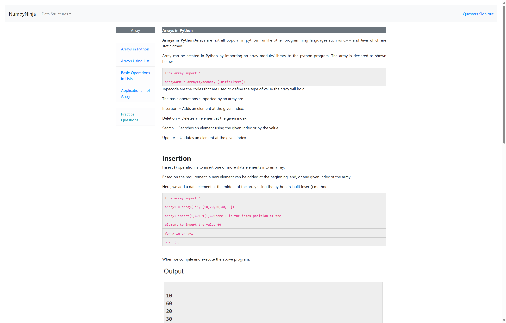PassVerify that user is able to run valid Python code in Try Editor for Array pageGiven The user is on the DSAlgo homepage after signGiven The user is on the tryeditor page of Array Using ListWhen The user enters code "Invalid", "tryEditor" and 2 clicks the Run buttonThen The user should see an result "alertmessageoutput", "tryEditor" and 2PassVerify that user is able to run valid Python code in Try Editor for Array PageGiven The user is on the DSAlgo homepage after signGiven The user is on the tryeditor page of Basic Operation in ListWhen The user enters code "Invalid", "tryEditor" and 2 clicks the Run buttonThen The user should see an result "alertmessageoutput", "tryEditor" and 2PassVerify that user is able to run valid Python code in Try Editor for Array PageGiven The user is on the DSAlgo homepage after signGiven The user is on the tryeditor page of Application of ArrayWhen The user enters code "Invalid", "tryEditor" and 2 clicks the Run buttonThen The user should see an result "alertmessageoutput", "tryEditor" and 2FailVerify the user is able to navigate to the Operations in Array optionsPassVerify the user is able to navigate to the Operations in Array optionsGiven The user is on the DSAlgo homepage after signGiven the user is on the Array pageWhen the user clicks on the Options "Array" and 2 in Array PageThen the user should navigated to the Options "Array" and 2 in Array pagePassVerify the user is able to navigate to the Operations in Array optionsGiven The user is on the DSAlgo homepage after signGiven the user is on the Array pageWhen the user clicks on the Options "Array" and 4 in Array PageThen the user should navigated to the Options "Array" and 4 in Array pagePassVerify the user is able to navigate to the Operations in Array optionsGiven The user is on the DSAlgo homepage after signGiven the user is on the Array pageWhen the user clicks on the Options "Array" and 3 in Array PageThen the user should navigated to the Options "Array" and 3 in Array pagePassVerify the user is able to navigate to the Operations in Array optionsGiven The user is on the DSAlgo homepage after signGiven the user is on the Array pageWhen the user clicks on the Options "Array" and 1 in Array PageThen the user should navigated to the Options "Array" and 1 in Array pageFailVerify that user receives error when user clicks on run button without entering code in tryeditor for ArrayPageGiven The user is on the DSAlgo homepage after signGiven The user is on the Array Options "Array" and 3 pageWhen the user clicks the Run button in try editor pageThen the user should see an error messagedsAlgoHooks.Hooks.tearDown(io.cucumber.java.Scenario)Verify that user receives error when user clicks on run button without entering code in tryeditor for ArrayPage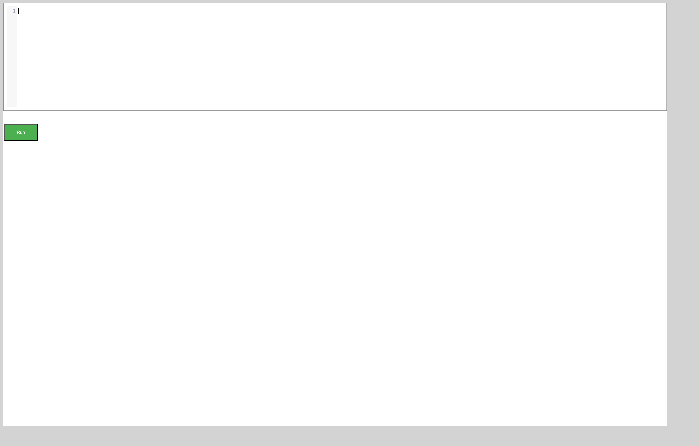PassVerify that user is able to run valid and invalid Python code in Try Editor for ArrayPageGiven The user is on the DSAlgo homepage after signGiven the user is on the tryeditor page of Array in pythonWhen The user enters code "Invalid", "tryEditor" and 2 from tryeditor and clicks the Run buttonThen The user should see an result "alertmessageoutput", "tryEditor" and 2PassVerify that the user can navigate to the Array after signinGiven The user is on the DSAlgo homepage after signWhen the user clicks on the GetStarted button of Array sectionThen the user is navigated to the Array pageFailVerify that user receives error when user clicks on run button without entering code in tryeditor for ArrayPageFailVerify that user receives error when user clicks on run button without entering code in tryeditor for ArrayPageGiven The user is on the DSAlgo homepage after signGiven The user is on the Array Options "Array" and 1 pageWhen the user clicks the Run button in try editor pageThen the user should see an error messagedsAlgoHooks.Hooks.tearDown(io.cucumber.java.Scenario)FailVerify that user receives error when user clicks on run button without entering code in tryeditor for ArrayPageGiven The user is on the DSAlgo homepage after signGiven The user is on the Array Options "Array" and 4 pageWhen the user clicks the Run button in try editor pageThen the user should see an error messagedsAlgoHooks.Hooks.tearDown(io.cucumber.java.Scenario)Verify that user receives error when user clicks on run button without entering code in tryeditor for ArrayPagePassVerify that user is able to run valid and invalid Python code in Try Editor for ArrayPagePassVerify that user is able to run valid and invalid Python code in Try Editor for ArrayPageGiven The user is on the DSAlgo homepage after signGiven the user is on the tryeditor page of Array in pythonWhen The user enters code "Valid", "tryEditor" and 1 from tryeditor and clicks the Run buttonThen The user should see an result "successouput", "tryEditor" and 1PassVerify that user is able to run valid Python code in Try Editor for Array pagePassVerify that user is able to run valid Python code in Try Editor for Array pageGiven The user is on the DSAlgo homepage after signGiven The user is on the tryeditor page of Array Using ListWhen The user enters code "Valid", "tryEditor" and 1 clicks the Run buttonThen The user should see an result "successouput", "tryEditor" and 1PassVerify that user is able to run valid Python code in Try Editor for Array PagePassVerify that user is able to run valid Python code in Try Editor for Array PageGiven The user is on the DSAlgo homepage after signGiven The user is on the tryeditor page of Basic Operation in ListWhen The user enters code "Valid", "tryEditor" and 1 clicks the Run buttonThen The user should see an result "successouput", "tryEditor" and 1PassVerify that user is able to run valid Python code in Try Editor for Array PagePassVerify that user is able to run valid Python code in Try Editor for Array PageGiven The user is on the DSAlgo homepage after signGiven The user is on the tryeditor page of Application of ArrayWhen The user enters code "Valid", "tryEditor" and 1 clicks the Run buttonThen The user should see an result "successouput", "tryEditor" and 1PassVerify the user is able to navigate to the Practice Questions mentioned under Array "Array in python"PageGiven The user is on the DSAlgo homepage after signGiven the user is on the Array in python pageWhen the user clicks on the Practice Questions link of Array in python pageThen the user should navigated to the Practice Questions pagePassVerify the user see list of Practice Questions in Practice Questions PageGiven The user is on the DSAlgo homepage after signGiven the user is on the Array in python pageWhen the user clicks on the Practice Questions link of Array in python pageThen the user should see list of all Practice Questions in Practice Questions PagePassVerify that user receives output on running valid python code for "Search the array" questionPassVerify that user receives output on running valid python code for "Search the array" questionGiven The user is on the DSAlgo homepage after signGiven The user is on the tryeditor page of Search The Array questionWhen The user enters code "Search The Array" and 1 clicks the Run buttonThen The user should see an result for search the array in console for "Search The Array" and 1PassVerify that user receives error on running Invalid python code for "Search the array" questionPassVerify that user receives error on running Invalid python code for "Search the array" questionGiven The user is on the DSAlgo homepage after signGiven The user is on the tryeditor page of Search The Array questionWhen The user enters code "Search The Array" and 2 clicks the Run buttonThen The user should able to see an error message in alert window "Search The Array" and 2FailVerify that user receives output on submitting valid python code for "Search the array" questionFailVerify that user receives output on submitting valid python code for "Search the array" questionGiven The user is on the DSAlgo homepage after signGiven The user is on the tryeditor page of Search The Array questionWhen The user enters code "Search The Array" and 3 clicks the Submit buttonThen The user should see an output for question in console for "Search The Array" and 3dsAlgoHooks.Hooks.tearDown(io.cucumber.java.Scenario)PassVerify that user receives output on running valid python code for "Max Consecutive Ones" questionPassVerify that user receives output on running valid python code for "Max Consecutive Ones" questionGiven The user is on the DSAlgo homepage after signGiven The user is on the tryeditor page of Max Consecutive OnesWhen The user enters code "Max Consecutive Ones" and 1 clicks the Run buttonThen The user should see an result for question in console for "Max Consecutive Ones" and 1PassVerify that user receives error on running Invalid python code for "Max Consecutive Ones" questionPassVerify that user receives error on running Invalid python code for "Max Consecutive Ones" questionGiven The user is on the DSAlgo homepage after signGiven The user is on the tryeditor page of Max Consecutive OnesWhen The user enters code "Max Consecutive Ones" and 2 clicks the Run buttonThen The user should able to see an error message in alert window "Max Consecutive Ones" and 2PassVerify that user receives output on submitting valid python code for "Max Consecutive Ones" questionPassVerify that user receives output on submitting valid python code for "Max Consecutive Ones" questionGiven The user is on the DSAlgo homepage after signGiven The user is on the tryeditor page of Max Consecutive OnesWhen The user enters code "Max Consecutive Ones" and 3 clicks the Submit buttonThen The user should see an output for question in console for "Max Consecutive Ones" and 3PassVerify that user receives output on running valid python code for "Find Numbers with Even Number" questionPassVerify that user receives output on running valid python code for "Find Numbers with Even Number" questionGiven The user is on the DSAlgo homepage after signGiven The user is on the tryeditor page of Find Numbers with Even NumberWhen The user enters code "Find Numbers with Even Number" and 1 clicks the Run buttonThen The user should see an result for question in console for "Find Numbers with Even Number" and 1PassVerify that user receives error on running Invalid python code for "Find Numbers with Even Number" questionPassVerify that user receives error on running Invalid python code for "Find Numbers with Even Number" questionGiven The user is on the DSAlgo homepage after signGiven The user is on the tryeditor page of Find Numbers with Even NumberWhen The user enters code "Find Numbers with Even Number" and 2 clicks the Run buttonThen The user should able to see an error message in alert window "Find Numbers with Even Number" and 2PassVerify that user receives output on submitting valid python code for "Find Numbers with Even Number" questionPassVerify that user receives output on submitting valid python code for "Find Numbers with Even Number" questionGiven The user is on the DSAlgo homepage after signGiven The user is on the tryeditor page of Find Numbers with Even NumberWhen The user enters code "Find Numbers with Even Number" and 3 clicks the Submit buttonThen The user should see an output for question in console for "Find Numbers with Even Number" and 3PassVerify that user receives output on running valid python code for "Squares of a Sorted Array" questionPassVerify that user receives output on running valid python code for "Squares of a Sorted Array" questionGiven The user is on the DSAlgo homepage after signGiven The user is on the tryeditor page of Squares of a Sorted ArrayWhen The user enters code "Squares of a Sorted Array" and 1 clicks the Run buttonThen The user should see an result for Squares in console for "Squares of a Sorted Array" and 1PassVerify that user receives error on running Invalid python code for "Squares of a Sorted Array" questionPassVerify that user receives error on running Invalid python code for "Squares of a Sorted Array" questionGiven The user is on the DSAlgo homepage after signGiven The user is on the tryeditor page of Squares of a Sorted ArrayWhen The user enters code "Squares of a Sorted Array" and 2 clicks the Run buttonThen The user should able to see an error message in alert window "Squares of a Sorted Array" and 2FailVerify that user receives output on submitting valid python code for "Squares of a Sorted Array" questionFailVerify that user receives output on submitting valid python code for "Squares of a Sorted Array" questionGiven The user is on the DSAlgo homepage after signGiven The user is on the tryeditor page of Squares of a Sorted ArrayWhen The user enters code "Squares of a Sorted Array" and 3 clicks the Submit buttonThen The user should see an output for question in console for "Squares of a Sorted Array" and 3dsAlgoHooks.Hooks.tearDown(io.cucumber.java.Scenario)Verify that user receives output on submitting valid python code for "Squares of a Sorted Array" question
-
signin functionality
10:24:55 AM / 00:00:46:937 Pass
signin functionality
01.28.2025 10:24:55 AM 01.28.2025 10:25:42 AM 00:00:46:937 · #test-id=4,402Passverify user is able to navigate to the signinGiven The user is on the DSAlgo homepage after sign -
DataStructure functionality
10:24:55 AM / 00:01:23:844 Fail
DataStructure functionality
01.28.2025 10:24:55 AM 01.28.2025 10:26:19 AM 00:01:23:844 · #test-id=4,405PassVerify that user isable to navigate to "DataStructure-Introduction" PageGiven The user is on the DSAlgo homepage after signWhen The user clicks on GetStarted button in DataStructure PanelThen The user be directed to Data-Structure Introduction PagePassVerify that user is able to navigate to "Time Complexity" PageGiven The user is on the DSAlgo homepage after signGiven The user is in the Data structures- Introduction pageWhen The user clicks on "Time Complexity" linkThen The user should be directed to Time Complexity PagePassVerify that user is able to navigate to "Try Editor" Page for Time Complexity pageGiven The user is on the DSAlgo homepage after signGiven The user is on the Time Complexity pageWhen The user clicks "Try Here" button in Time Complexity pageThen The user Should be redirected to a page having an try Editor with a Run button to TestPassVerify that user is able to run Python code in Try Editor for DataStructure PagePassVerify that user is able to run Python code in Try Editor for DataStructure PageGiven The user is on the DSAlgo homepage after signGiven The user is on the tryeditor page of Datastructure moduleWhen The user enters code "Valid", "tryEditor" and 1 clicks the Run buttonThen The user should see an result "successouput", "tryEditor" and 1PassVerify that user is able to run Python code in Try Editor for DataStructure PageGiven The user is on the DSAlgo homepage after signGiven The user is on the tryeditor page of Datastructure moduleWhen The user enters code "Invalid", "tryEditor" and 2 clicks the Run buttonThen The user should see an result "alertmessageoutput", "tryEditor" and 2FailVerify that user receives error when click on Run button without entering code for "Time Complexity" in "python" pageGiven The user is on the DSAlgo homepage after signGiven The user is in the TryEditor page of TimeComplexity moduleWhen The user clicks the Run Button without entering the code in the Editor of TimeComplexity moduleThen The user should able to see an error message in alert window of TimeComplexity moduledsAlgoHooks.Hooks.tearDown(io.cucumber.java.Scenario)Verify that user receives error when click on Run button without entering code for "Time Complexity" in "python" page PassVerify the user is able to navigate to the Practice Questions for "Time Complexity" in "python" pageGiven The user is on the DSAlgo homepage after signGiven The user is in the Time Complexity in DataStructure pageWhen the user clicks on the Practice Questions link of TimeComplexity moduleThen the user should navigated to the Practice Questions page of TimeComplexity moduleFailVerify the user see list of Practice Questions in Practice Questions PageGiven The user is on the DSAlgo homepage after signGiven The user is in the Time Complexity in DataStructure pageWhen the user clicks on the Practice Questions link of TimeComplexity moduleThen the user should see list of Practice Questions in Practice Questions Page of TimeComplexity moduledsAlgoHooks.Hooks.tearDown(io.cucumber.java.Scenario)Verify the user see list of Practice Questions in Practice Questions Page
PassVerify the user is able to navigate to the Practice Questions for "Time Complexity" in "python" pageGiven The user is on the DSAlgo homepage after signGiven The user is in the Time Complexity in DataStructure pageWhen the user clicks on the Practice Questions link of TimeComplexity moduleThen the user should navigated to the Practice Questions page of TimeComplexity moduleFailVerify the user see list of Practice Questions in Practice Questions PageGiven The user is on the DSAlgo homepage after signGiven The user is in the Time Complexity in DataStructure pageWhen the user clicks on the Practice Questions link of TimeComplexity moduleThen the user should see list of Practice Questions in Practice Questions Page of TimeComplexity moduledsAlgoHooks.Hooks.tearDown(io.cucumber.java.Scenario)Verify the user see list of Practice Questions in Practice Questions Page
-
Graph functionality
10:25:50 AM / 00:02:45:453 Fail
Graph functionality
01.28.2025 10:25:50 AM 01.28.2025 10:28:36 AM 00:02:45:453 · #test-id=4,476PassVerify that the user can navigate to the Graph page after signinGiven The user is on the DSAlgo homepage after signWhen the user clicks on the GetStarted button of Graph sectionThen the user is navigated to the Graph pagePassVerify the user is able to navigate to the Graph option in Graph pageGiven The user is on the DSAlgo homepage after signGiven the user is on the Graph pageWhen the user clicks on the Graphmodule linkThen the user should navigated to the Graphmodule pagePassVerify that user is able to navigate to try Editor page for Graph pageGiven The user is on the DSAlgo homepage after signGiven the user is on the Graphmodule pageWhen the user click on Try here button in Graph PageThen the user should navigate to the tryeditor pagePassVerify the user is able to navigate to the Practice Questions mentioned under graph Graph PageGiven The user is on the DSAlgo homepage after signGiven the user is on the Graphmodule pageWhen the user clicks on the Practice Questions linkThen the user should navigated to the Practice Questions pagePassVerify the user is able to navigate to the Graph Representations option in Graph pageGiven The user is on the DSAlgo homepage after signGiven the user is on the Graph pageWhen the user clicks on the Graph Representations linkThen the user should navigated to the Graph Representations pagePassVerify that user is able to navigate to try Editor page for GraphRepresentation pageGiven The user is on the DSAlgo homepage after signGiven the user is on the Graph Representation pageWhen the user click on Try here button in Graph Representation PageThen the user should navigate to the tryeditor pagePassVerify the user is able to navigate to the Practice Questions mentioned under graph Graph PageGiven The user is on the DSAlgo homepage after signGiven the user is on the Graph Representation pageWhen the user clicks on the Practice Questions linkThen the user should navigated to the Practice Questions pageFailVerify the user see list of Practice Questions in Practice Questions PageGiven The user is on the DSAlgo homepage after signGiven the user is on the Graph Representation pageWhen the user clicks on the Practice Questions linkThen the user should see list of Practice Questions in Practice Questions PagedsAlgoHooks.Hooks.tearDown(io.cucumber.java.Scenario)Verify the user see list of Practice Questions in Practice Questions Page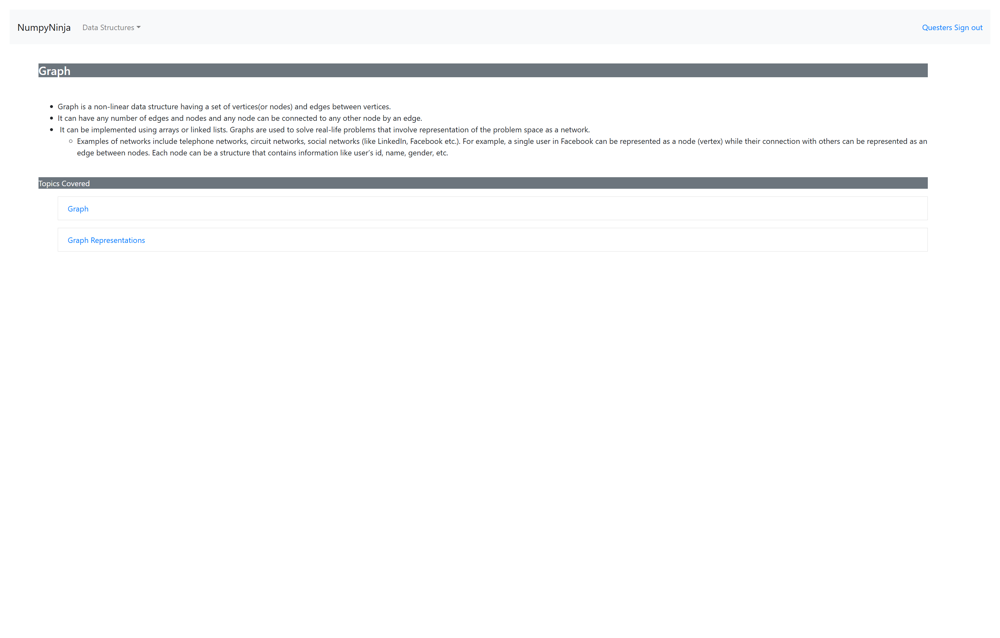PassVerify that user is able to run valid Python code in Try Editor for Graph PagePassVerify that user is able to run valid Python code in Try Editor for Graph PageGiven The user is on the DSAlgo homepage after signGiven The user is on the tryeditor page of Graph moduleWhen The user enters code "Valid", "tryEditor" and 1 clicks the Run buttonThen The user should see an result "successouput", "tryEditor" and 1PassVerify that user is able to run valid Python code in Try Editor for Graph PageGiven The user is on the DSAlgo homepage after signGiven The user is on the tryeditor page of Graph moduleWhen The user enters code "Invalid", "tryEditor" and 2 clicks the Run buttonThen The user should see an result "alertmessageoutput", "tryEditor" and 2PassVerify the user is able to navigate to the options under DataStructure DropDown from Graph pageGiven The user is on the DSAlgo homepage after signWhen the user clicks on the options under "Home2" and 5 dataStructure after signinThen The user should be navigated to the options page after sign "Home2" and 5PassVerify the error message when the user clicks on the GetStarted button under all the options in Home Page without signing inGiven the user is on the DSAlgo homepageWhen the user clicks on the GetStarted button under "Queue"Then the user should see an error message stating "You are not logged in"FailVerify that user receives error when user clicks on run button without entering code in tryeditor for Graph PageGiven The user is on the DSAlgo homepage after signGiven The user is on the tryeditor page of Graph moduleWhen the user clicks the Run buttonThen the user should see an error messagedsAlgoHooks.Hooks.tearDown(io.cucumber.java.Scenario)Verify that user receives error when user clicks on run button without entering code in tryeditor for Graph PagePassVerify that user is able to run valid Python code in Try Editor for Graph Representation PagePassVerify that user is able to run valid Python code in Try Editor for Graph Representation PageGiven The user is on the DSAlgo homepage after signGiven The user is on the tryeditor page of Graph RepresentationWhen The user enters code "Valid", "tryEditor" and 1 clicks the Run buttonThen The user should see an result "successouput", "tryEditor" and 1PassVerify that user is able to run valid Python code in Try Editor for Graph Representation PageGiven The user is on the DSAlgo homepage after signGiven The user is on the tryeditor page of Graph RepresentationWhen The user enters code "Invalid", "tryEditor" and 2 clicks the Run buttonThen The user should see an result "alertmessageoutput", "tryEditor" and 2PassVerify the user is able to navigate to the options under DataStructure DropDown from Graph pageGiven The user is on the DSAlgo homepage after signWhen the user clicks on the options under "Home2" and 6 dataStructure after signinThen The user should be navigated to the options page after sign "Home2" and 6PassVerify the error message when the user clicks on the options under DataStructure dropdown before loginGiven the user is on the DSAlgo homepageWhen the user clicks on the "Tree" option under DataStructureThen the user should see an error message stating "You are not logged in"FailVerify that user receives error when user clicks on run button without entering code in tryeditor for Graph PageGiven The user is on the DSAlgo homepage after signGiven The user is on the tryeditor page of Graph RepresentationWhen the user clicks the Run buttonThen the user should see an error messagedsAlgoHooks.Hooks.tearDown(io.cucumber.java.Scenario)Verify that user receives error when user clicks on run button without entering code in tryeditor for Graph Page PassVerify the user is able to navigate to the options under DataStructure DropDown from Graph pagePassVerify the user is able to navigate to the options under DataStructure DropDown from Graph pageGiven The user is on the DSAlgo homepage after signWhen the user clicks on the options under "Home2" and 1 dataStructure after signinThen The user should be navigated to the options page after sign "Home2" and 1PassVerify the user is able to navigate to the options under DataStructure DropDown from Graph pageGiven The user is on the DSAlgo homepage after signWhen the user clicks on the options under "Home2" and 2 dataStructure after signinThen The user should be navigated to the options page after sign "Home2" and 2PassVerify the user is able to navigate to the options under DataStructure DropDown from Graph pageGiven The user is on the DSAlgo homepage after signWhen the user clicks on the options under "Home2" and 3 dataStructure after signinThen The user should be navigated to the options page after sign "Home2" and 3PassVerify the user is able to navigate to the options under DataStructure DropDown from Graph pageGiven The user is on the DSAlgo homepage after signWhen the user clicks on the options under "Home2" and 4 dataStructure after signinThen The user should be navigated to the options page after sign "Home2" and 4PassVerify the error message when the user clicks on the GetStarted button under all the options in Home Page without signing inGiven the user is on the DSAlgo homepageWhen the user clicks on the GetStarted button under "Array"Then the user should see an error message stating "You are not logged in"PassVerify the error message when the user clicks on the GetStarted button under all the options in Home Page without signing inGiven the user is on the DSAlgo homepageWhen the user clicks on the GetStarted button under "Linked List"Then the user should see an error message stating "You are not logged in"PassVerify the error message when the user clicks on the options under DataStructure dropdown before loginGiven the user is on the DSAlgo homepageWhen the user clicks on the "Queue" option under DataStructureThen the user should see an error message stating "You are not logged in"PassVerify the error message when the user clicks on the options under DataStructure dropdown before loginGiven the user is on the DSAlgo homepageWhen the user clicks on the "Graph" option under DataStructureThen the user should see an error message stating "You are not logged in"PassVerify that user is able to navigate to the try Editor page from different options in Stack PageGiven The user is on the DSAlgo homepage after signGiven The user is on the LinkedList Options "LinkedList" and 2 pageWhen The user clicks on the Try here button on the LinkedList Options pageThen The user should navigate to the tryeditor page
PassVerify the user is able to navigate to the options under DataStructure DropDown from Graph pagePassVerify the user is able to navigate to the options under DataStructure DropDown from Graph pageGiven The user is on the DSAlgo homepage after signWhen the user clicks on the options under "Home2" and 1 dataStructure after signinThen The user should be navigated to the options page after sign "Home2" and 1PassVerify the user is able to navigate to the options under DataStructure DropDown from Graph pageGiven The user is on the DSAlgo homepage after signWhen the user clicks on the options under "Home2" and 2 dataStructure after signinThen The user should be navigated to the options page after sign "Home2" and 2PassVerify the user is able to navigate to the options under DataStructure DropDown from Graph pageGiven The user is on the DSAlgo homepage after signWhen the user clicks on the options under "Home2" and 3 dataStructure after signinThen The user should be navigated to the options page after sign "Home2" and 3PassVerify the user is able to navigate to the options under DataStructure DropDown from Graph pageGiven The user is on the DSAlgo homepage after signWhen the user clicks on the options under "Home2" and 4 dataStructure after signinThen The user should be navigated to the options page after sign "Home2" and 4PassVerify the error message when the user clicks on the GetStarted button under all the options in Home Page without signing inGiven the user is on the DSAlgo homepageWhen the user clicks on the GetStarted button under "Array"Then the user should see an error message stating "You are not logged in"PassVerify the error message when the user clicks on the GetStarted button under all the options in Home Page without signing inGiven the user is on the DSAlgo homepageWhen the user clicks on the GetStarted button under "Linked List"Then the user should see an error message stating "You are not logged in"PassVerify the error message when the user clicks on the options under DataStructure dropdown before loginGiven the user is on the DSAlgo homepageWhen the user clicks on the "Queue" option under DataStructureThen the user should see an error message stating "You are not logged in"PassVerify the error message when the user clicks on the options under DataStructure dropdown before loginGiven the user is on the DSAlgo homepageWhen the user clicks on the "Graph" option under DataStructureThen the user should see an error message stating "You are not logged in"PassVerify that user is able to navigate to the try Editor page from different options in Stack PageGiven The user is on the DSAlgo homepage after signGiven The user is on the LinkedList Options "LinkedList" and 2 pageWhen The user clicks on the Try here button on the LinkedList Options pageThen The user should navigate to the tryeditor page -
Home functionality
10:26:56 AM / 00:00:49:360 Pass
Home functionality
01.28.2025 10:26:56 AM 01.28.2025 10:27:45 AM 00:00:49:360 · #test-id=4,634PassVerify User is able to navigate to DsAlgo ApplicationGiven Empty browser openWhen The user enters the DsAlgo UrlThen the user should able to land on DsAlgo portalPassverify that user is able to navigate to homepage when clicked on getstarted buttonGiven the user navigates to the DsAlgo portalWhen The user click on Getstarted buttonThen the user navigates to DSAlgo home pagePassVerify that the user is able to Navigate to Register pageGiven the user is on the DSAlgo homepageWhen The user clicks on the Register buttonThen the user should be navigated to the Register pagePassVerify that the user is able to Navigate to Login pageGiven the user is on the DSAlgo homepageWhen The user clicks on the signin buttonThen the user should be navigated to the signin pagePassVerify that the user sees six options under the Data Structure dropdown before logging inPassVerify that the user sees six options under the Data Structure dropdown before logging inGiven the user is on the DSAlgo homepageWhen the user clicks on the Data Structure buttonThen the user should see six options: "Arrays","Linked List","Stack","Queue","Tree", and "Graph" under the Data Structure dropdownPassVerify the error message when the user clicks on the options under DataStructure dropdown before loginGiven the user is on the DSAlgo homepageWhen the user clicks on the "Linked List" option under DataStructureThen the user should see an error message stating "You are not logged in"PassVerify the error message when the user clicks on the GetStarted button under all the options in Home Page without signing inPassVerify the error message when the user clicks on the GetStarted button under all the options in Home Page without signing inGiven the user is on the DSAlgo homepageWhen the user clicks on the GetStarted button under "Data Structures-Introduction"Then the user should see an error message stating "You are not logged in"PassVerify the error message when the user clicks on the GetStarted button under all the options in Home Page without signing inGiven the user is on the DSAlgo homepageWhen the user clicks on the GetStarted button under "Stack"Then the user should see an error message stating "You are not logged in"PassVerify the error message when the user clicks on the GetStarted button under all the options in Home Page without signing inGiven the user is on the DSAlgo homepageWhen the user clicks on the GetStarted button under "Tree"Then the user should see an error message stating "You are not logged in"PassVerify the error message when the user clicks on the GetStarted button under all the options in Home Page without signing inGiven the user is on the DSAlgo homepageWhen the user clicks on the GetStarted button under "Graph"Then the user should see an error message stating "You are not logged in"PassVerify the error message when the user clicks on the options under DataStructure dropdown before loginGiven the user is on the DSAlgo homepageWhen the user clicks on the "Stack" option under DataStructureThen the user should see an error message stating "You are not logged in"PassVerify the error message when the user clicks on the options under DataStructure dropdown before loginPassVerify the error message when the user clicks on the options under DataStructure dropdown before loginGiven the user is on the DSAlgo homepageWhen the user clicks on the "Arrays" option under DataStructureThen the user should see an error message stating "You are not logged in" -
LinkedList functionality
10:27:36 AM / 00:04:57:545 Fail
LinkedList functionality
01.28.2025 10:27:36 AM 01.28.2025 10:32:33 AM 00:04:57:545 · #test-id=4,768PassVerify that user is able to navigate to "Linked List" data structure pageGiven The user is on the DSAlgo homepage after signWhen The user clicks the Getting Started button in Linked List PanelThen The user be directed to Linked List Data Structure PagePassVerify that user is able to navigate to "Introduction" pagePassVerify that user is able to navigate to "Introduction" pageGiven The user is on the DSAlgo homepage after signGiven The user is in the Linked List pageWhen The user clicks Introduction buttonThen The user should be redirected to page and confirm url "LinkedList" and 1PassVerify that user is able to navigate to the try Editor page from different options in Stack PageGiven The user is on the DSAlgo homepage after signGiven The user is on the LinkedList Options "LinkedList" and 4 pageWhen The user clicks on the Try here button on the LinkedList Options pageThen The user should navigate to the tryeditor pagePassVerify that user is able to run valid Python code in Try Editor for LinkedList PageGiven The user is on the DSAlgo homepage after signGiven The user is on the tryeditor page of Types of Linked List in LinkedListWhen The user enters code "Invalid", "tryEditor" and 2 clicks the Run buttonThen The user should see an result "alertmessageoutput", "tryEditor" and 2PassVerify that user is able to run valid Python code in Try Editor for LinkedList PageGiven The user is on the DSAlgo homepage after signGiven The user is on the tryeditor page of Deletion in LinkedListWhen The user enters code "Invalid", "tryEditor" and 2 clicks the Run buttonThen The user should see an result "alertmessageoutput", "tryEditor" and 2PassVerify that user is able to navigate to "Creating Linked LIst" pagePassVerify that user is able to navigate to "Creating Linked LIst" pageGiven The user is on the DSAlgo homepage after signGiven The user is in the Linked List pageWhen The user clicks Creating Linked LIst buttonThen The user should be redirected to page and confirm url "LinkedList" and 2PassVerify that user is able to navigate to the try Editor page from different options in Stack PageGiven The user is on the DSAlgo homepage after signGiven The user is on the LinkedList Options "LinkedList" and 6 pageWhen The user clicks on the Try here button on the LinkedList Options pageThen The user should navigate to the tryeditor pageFailVerify that user is able to navigate to "Types of Linked List" pagePassVerify that user is able to navigate to "Types of Linked List" pageGiven The user is on the DSAlgo homepage after signGiven The user is in the Linked List pageWhen The user clicks Types of Linked List buttonThen The user should be redirected to page and confirm url "LinkedList" and 3PassVerify that user is able to navigate to the try Editor page from different options in Stack PageGiven The user is on the DSAlgo homepage after signGiven The user is on the LinkedList Options "LinkedList" and 5 pageWhen The user clicks on the Try here button on the LinkedList Options pageThen The user should navigate to the tryeditor pagePassVerify that user is able to run valid Python code in Try Editor for LinkedList PageGiven The user is on the DSAlgo homepage after signGiven The user is on the tryeditor page of Types of Linked List in LinkedListWhen The user enters code "Invalid", "tryEditor" and 2 clicks the Run buttonThen The user should see an result "alertmessageoutput", "tryEditor" and 2FailVerify that user receives error when user clicks on run button without entering code in tryeditor for LinkedList PageGiven The user is on the DSAlgo homepage after signGiven The user is on the tryeditor page of seven Options "LinkedList" and 3 of LinkedList pageWhen the user clicks the Run buttonThen the user should see an error messagedsAlgoHooks.Hooks.tearDown(io.cucumber.java.Scenario)Verify that user receives error when user clicks on run button without entering code in tryeditor for LinkedList Page PassVerify the user is able to navigate to the Practice Questions mentioned under Seven options of LinkedListGiven The user is on the DSAlgo homepage after signGiven The user is navigates to seven Options "LinkedList" and 6 of LinkedList pageWhen the user clicks on the Practice Questions linkThen the user should navigated to the Practice Questions page of three options "LinkedList" and 6 in Stack pagePassVerify that user is able to navigate to "Introduction" pagePassVerify that user is able to navigate to "Introduction" pageGiven The user is on the DSAlgo homepage after signGiven The user is in the Linked List pageWhen The user clicks Implement Linked List buttonThen The user should be redirected to page and confirm url "LinkedList" and 4PassVerify that user is able to navigate to "Introduction" pagePassVerify that user is able to navigate to "Introduction" pageGiven The user is on the DSAlgo homepage after signGiven The user is in the Linked List pageWhen The user clicks Traversal buttonThen The user should be redirected to page and confirm url "LinkedList" and 5FailVerify that user is able to navigate to "Introduction" pagePassVerify that user is able to navigate to "Introduction" pageGiven The user is on the DSAlgo homepage after signGiven The user is in the Linked List pageWhen The user clicks Insertion buttonThen The user should be redirected to page and confirm url "LinkedList" and 6PassVerify that user is able to navigate to the try Editor page from different options in Stack PageGiven The user is on the DSAlgo homepage after signGiven The user is on the LinkedList Options "LinkedList" and 7 pageWhen The user clicks on the Try here button on the LinkedList Options pageThen The user should navigate to the tryeditor pagePassVerify that user is able to run valid Python code in Try Editor for LinkedList PageGiven The user is on the DSAlgo homepage after signGiven The user is on the tryeditor page of Traversal in LinkedListWhen The user enters code "Invalid", "tryEditor" and 2 clicks the Run buttonThen The user should see an result "alertmessageoutput", "tryEditor" and 2FailVerify that user receives error when user clicks on run button without entering code in tryeditor for LinkedList PageGiven The user is on the DSAlgo homepage after signGiven The user is on the tryeditor page of seven Options "LinkedList" and 4 of LinkedList pageWhen the user clicks the Run buttonThen the user should see an error messagedsAlgoHooks.Hooks.tearDown(io.cucumber.java.Scenario)Verify that user receives error when user clicks on run button without entering code in tryeditor for LinkedList Page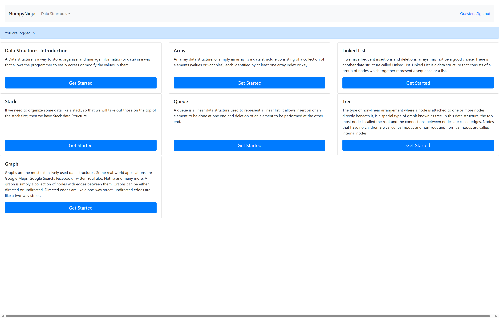PassVerify the user is able to navigate to the Practice Questions mentioned under Seven options of LinkedListGiven The user is on the DSAlgo homepage after signGiven The user is navigates to seven Options "LinkedList" and 5 of LinkedList pageWhen the user clicks on the Practice Questions linkThen the user should navigated to the Practice Questions page of three options "LinkedList" and 5 in Stack pageFailVerify the user see list of Practice Questions in Practice Questions Page of three options pagesGiven The user is on the DSAlgo homepage after signGiven The user is navigates to seven Options "LinkedList" and 7 of LinkedList pageWhen the user clicks on the Practice Questions linkThen the user should see list of Practice Questions in Practice Questions PagedsAlgoHooks.Hooks.tearDown(io.cucumber.java.Scenario)Verify the user see list of Practice Questions in Practice Questions Page of three options pages
PassVerify the user is able to navigate to the Practice Questions mentioned under Seven options of LinkedListGiven The user is on the DSAlgo homepage after signGiven The user is navigates to seven Options "LinkedList" and 6 of LinkedList pageWhen the user clicks on the Practice Questions linkThen the user should navigated to the Practice Questions page of three options "LinkedList" and 6 in Stack pagePassVerify that user is able to navigate to "Introduction" pagePassVerify that user is able to navigate to "Introduction" pageGiven The user is on the DSAlgo homepage after signGiven The user is in the Linked List pageWhen The user clicks Implement Linked List buttonThen The user should be redirected to page and confirm url "LinkedList" and 4PassVerify that user is able to navigate to "Introduction" pagePassVerify that user is able to navigate to "Introduction" pageGiven The user is on the DSAlgo homepage after signGiven The user is in the Linked List pageWhen The user clicks Traversal buttonThen The user should be redirected to page and confirm url "LinkedList" and 5FailVerify that user is able to navigate to "Introduction" pagePassVerify that user is able to navigate to "Introduction" pageGiven The user is on the DSAlgo homepage after signGiven The user is in the Linked List pageWhen The user clicks Insertion buttonThen The user should be redirected to page and confirm url "LinkedList" and 6PassVerify that user is able to navigate to the try Editor page from different options in Stack PageGiven The user is on the DSAlgo homepage after signGiven The user is on the LinkedList Options "LinkedList" and 7 pageWhen The user clicks on the Try here button on the LinkedList Options pageThen The user should navigate to the tryeditor pagePassVerify that user is able to run valid Python code in Try Editor for LinkedList PageGiven The user is on the DSAlgo homepage after signGiven The user is on the tryeditor page of Traversal in LinkedListWhen The user enters code "Invalid", "tryEditor" and 2 clicks the Run buttonThen The user should see an result "alertmessageoutput", "tryEditor" and 2FailVerify that user receives error when user clicks on run button without entering code in tryeditor for LinkedList PageGiven The user is on the DSAlgo homepage after signGiven The user is on the tryeditor page of seven Options "LinkedList" and 4 of LinkedList pageWhen the user clicks the Run buttonThen the user should see an error messagedsAlgoHooks.Hooks.tearDown(io.cucumber.java.Scenario)Verify that user receives error when user clicks on run button without entering code in tryeditor for LinkedList Page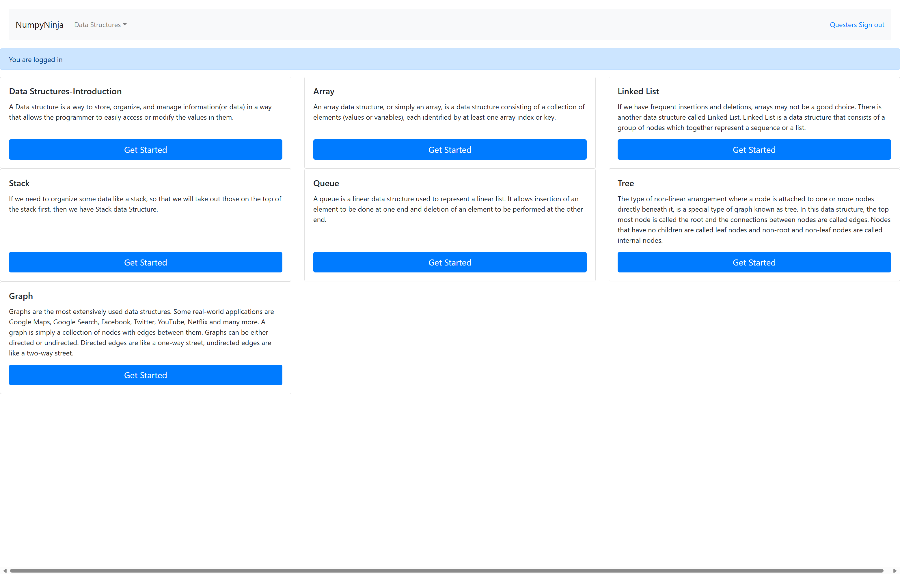PassVerify the user is able to navigate to the Practice Questions mentioned under Seven options of LinkedListGiven The user is on the DSAlgo homepage after signGiven The user is navigates to seven Options "LinkedList" and 5 of LinkedList pageWhen the user clicks on the Practice Questions linkThen the user should navigated to the Practice Questions page of three options "LinkedList" and 5 in Stack pageFailVerify the user see list of Practice Questions in Practice Questions Page of three options pagesGiven The user is on the DSAlgo homepage after signGiven The user is navigates to seven Options "LinkedList" and 7 of LinkedList pageWhen the user clicks on the Practice Questions linkThen the user should see list of Practice Questions in Practice Questions PagedsAlgoHooks.Hooks.tearDown(io.cucumber.java.Scenario)Verify the user see list of Practice Questions in Practice Questions Page of three options pages FailVerify that user is able to navigate to "Introduction" pagePassVerify that user is able to navigate to "Introduction" pageGiven The user is on the DSAlgo homepage after signGiven The user is in the Linked List pageWhen The user clicks Deletion buttonThen The user should be redirected to page and confirm url "LinkedList" and 7PassVerify that user is able to run valid Python code in Try Editor for LinkedList PageGiven The user is on the DSAlgo homepage after signGiven The user is on the tryeditor page of Introduction in LinkedListWhen The user enters code "Invalid", "tryEditor" and 2 clicks the Run buttonThen The user should see an result "alertmessageoutput", "tryEditor" and 2FailVerify that user receives error when user clicks on run button without entering code in tryeditor for LinkedList PageGiven The user is on the DSAlgo homepage after signGiven The user is on the tryeditor page of seven Options "LinkedList" and 2 of LinkedList pageWhen the user clicks the Run buttonThen the user should see an error messagedsAlgoHooks.Hooks.tearDown(io.cucumber.java.Scenario)Verify that user receives error when user clicks on run button without entering code in tryeditor for LinkedList Page
FailVerify that user is able to navigate to "Introduction" pagePassVerify that user is able to navigate to "Introduction" pageGiven The user is on the DSAlgo homepage after signGiven The user is in the Linked List pageWhen The user clicks Deletion buttonThen The user should be redirected to page and confirm url "LinkedList" and 7PassVerify that user is able to run valid Python code in Try Editor for LinkedList PageGiven The user is on the DSAlgo homepage after signGiven The user is on the tryeditor page of Introduction in LinkedListWhen The user enters code "Invalid", "tryEditor" and 2 clicks the Run buttonThen The user should see an result "alertmessageoutput", "tryEditor" and 2FailVerify that user receives error when user clicks on run button without entering code in tryeditor for LinkedList PageGiven The user is on the DSAlgo homepage after signGiven The user is on the tryeditor page of seven Options "LinkedList" and 2 of LinkedList pageWhen the user clicks the Run buttonThen the user should see an error messagedsAlgoHooks.Hooks.tearDown(io.cucumber.java.Scenario)Verify that user receives error when user clicks on run button without entering code in tryeditor for LinkedList Page PassVerify the user is able to navigate to the Practice Questions mentioned under Seven options of LinkedListGiven The user is on the DSAlgo homepage after signGiven The user is navigates to seven Options "LinkedList" and 4 of LinkedList pageWhen the user clicks on the Practice Questions linkThen the user should navigated to the Practice Questions page of three options "LinkedList" and 4 in Stack pagePassVerify that user is able to navigate to the try Editor page from different options in Stack PagePassVerify that user is able to navigate to the try Editor page from different options in Stack PageGiven The user is on the DSAlgo homepage after signGiven The user is on the LinkedList Options "LinkedList" and 1 pageWhen The user clicks on the Try here button on the LinkedList Options pageThen The user should navigate to the tryeditor pagePassVerify that user is able to navigate to the try Editor page from different options in Stack PageGiven The user is on the DSAlgo homepage after signGiven The user is on the LinkedList Options "LinkedList" and 3 pageWhen The user clicks on the Try here button on the LinkedList Options pageThen The user should navigate to the tryeditor pagePassVerify that user is able to run valid Python code in Try Editor for LinkedList PageGiven The user is on the DSAlgo homepage after signGiven The user is on the tryeditor page of Creating Linked LIst in LinkedListWhen The user enters code "Invalid", "tryEditor" and 2 clicks the Run buttonThen The user should see an result "alertmessageoutput", "tryEditor" and 2FailVerify that user is able to run valid Python code in Try Editor for LinkedList PagePassVerify that user is able to run valid Python code in Try Editor for LinkedList PageGiven The user is on the DSAlgo homepage after signGiven The user is on the tryeditor page of Introduction in LinkedListWhen The user enters code "Valid", "tryEditor" and 1 clicks the Run buttonThen The user should see an result "successouput", "tryEditor" and 1PassVerify that user is able to run valid Python code in Try Editor for LinkedList PageGiven The user is on the DSAlgo homepage after signGiven The user is on the tryeditor page of Insertion in LinkedListWhen The user enters code "Invalid", "tryEditor" and 2 clicks the Run buttonThen The user should see an result "alertmessageoutput", "tryEditor" and 2FailVerify that user receives error when user clicks on run button without entering code in tryeditor for LinkedList PageGiven The user is on the DSAlgo homepage after signGiven The user is on the tryeditor page of seven Options "LinkedList" and 7 of LinkedList pageWhen the user clicks the Run buttonThen the user should see an error messagedsAlgoHooks.Hooks.tearDown(io.cucumber.java.Scenario)Verify that user receives error when user clicks on run button without entering code in tryeditor for LinkedList Page
PassVerify the user is able to navigate to the Practice Questions mentioned under Seven options of LinkedListGiven The user is on the DSAlgo homepage after signGiven The user is navigates to seven Options "LinkedList" and 4 of LinkedList pageWhen the user clicks on the Practice Questions linkThen the user should navigated to the Practice Questions page of three options "LinkedList" and 4 in Stack pagePassVerify that user is able to navigate to the try Editor page from different options in Stack PagePassVerify that user is able to navigate to the try Editor page from different options in Stack PageGiven The user is on the DSAlgo homepage after signGiven The user is on the LinkedList Options "LinkedList" and 1 pageWhen The user clicks on the Try here button on the LinkedList Options pageThen The user should navigate to the tryeditor pagePassVerify that user is able to navigate to the try Editor page from different options in Stack PageGiven The user is on the DSAlgo homepage after signGiven The user is on the LinkedList Options "LinkedList" and 3 pageWhen The user clicks on the Try here button on the LinkedList Options pageThen The user should navigate to the tryeditor pagePassVerify that user is able to run valid Python code in Try Editor for LinkedList PageGiven The user is on the DSAlgo homepage after signGiven The user is on the tryeditor page of Creating Linked LIst in LinkedListWhen The user enters code "Invalid", "tryEditor" and 2 clicks the Run buttonThen The user should see an result "alertmessageoutput", "tryEditor" and 2FailVerify that user is able to run valid Python code in Try Editor for LinkedList PagePassVerify that user is able to run valid Python code in Try Editor for LinkedList PageGiven The user is on the DSAlgo homepage after signGiven The user is on the tryeditor page of Introduction in LinkedListWhen The user enters code "Valid", "tryEditor" and 1 clicks the Run buttonThen The user should see an result "successouput", "tryEditor" and 1PassVerify that user is able to run valid Python code in Try Editor for LinkedList PageGiven The user is on the DSAlgo homepage after signGiven The user is on the tryeditor page of Insertion in LinkedListWhen The user enters code "Invalid", "tryEditor" and 2 clicks the Run buttonThen The user should see an result "alertmessageoutput", "tryEditor" and 2FailVerify that user receives error when user clicks on run button without entering code in tryeditor for LinkedList PageGiven The user is on the DSAlgo homepage after signGiven The user is on the tryeditor page of seven Options "LinkedList" and 7 of LinkedList pageWhen the user clicks the Run buttonThen the user should see an error messagedsAlgoHooks.Hooks.tearDown(io.cucumber.java.Scenario)Verify that user receives error when user clicks on run button without entering code in tryeditor for LinkedList Page FailVerify the user see list of Practice Questions in Practice Questions Page of three options pagesGiven The user is on the DSAlgo homepage after signGiven The user is navigates to seven Options "LinkedList" and 6 of LinkedList pageWhen the user clicks on the Practice Questions linkThen the user should see list of Practice Questions in Practice Questions PagedsAlgoHooks.Hooks.tearDown(io.cucumber.java.Scenario)Verify the user see list of Practice Questions in Practice Questions Page of three options pages
FailVerify the user see list of Practice Questions in Practice Questions Page of three options pagesGiven The user is on the DSAlgo homepage after signGiven The user is navigates to seven Options "LinkedList" and 6 of LinkedList pageWhen the user clicks on the Practice Questions linkThen the user should see list of Practice Questions in Practice Questions PagedsAlgoHooks.Hooks.tearDown(io.cucumber.java.Scenario)Verify the user see list of Practice Questions in Practice Questions Page of three options pages PassVerify that valid and invalid python code in TryEditor Implementation of Queue in PythonGiven The user is on the DSAlgo homepage after signGiven The user is in TryEditor page of Implementation of Queue in PythonWhen The user enters code from "Invalid","tryEditor" and 2 clicks the Run buttonThen The user should see a result "alertmessageoutput","tryEditor" and 2PassVerify the user is able to navigate to the pratice questions on each Queue topicsGiven The user is on the DSAlgo homepage after signGiven The user navigates to options "Queue" and 4 of Queue pageWhen User click Practice Questions LinkThen User should navigate to Practice questions from "Queue" and 4 Queue TopicsPassVerify that user is able to run valid Python code in Try Editor for LinkedList PagePassVerify that user is able to run valid Python code in Try Editor for LinkedList PageGiven The user is on the DSAlgo homepage after signGiven The user is on the tryeditor page of Creating Linked LIst in LinkedListWhen The user enters code "Valid", "tryEditor" and 1 clicks the Run buttonThen The user should see an result "successouput", "tryEditor" and 1PassVerify that user is able to run valid Python code in Try Editor for LinkedList PagePassVerify that user is able to run valid Python code in Try Editor for LinkedList PageGiven The user is on the DSAlgo homepage after signGiven The user is on the tryeditor page of Types of Linked List in LinkedListWhen The user enters code "Valid", "tryEditor" and 1 clicks the Run buttonThen The user should see an result "successouput", "tryEditor" and 1FailVerify that user is able to run valid Python code in Try Editor for LinkedList PagePassVerify that user is able to run valid Python code in Try Editor for LinkedList PageGiven The user is on the DSAlgo homepage after signGiven The user is on the tryeditor page of Types of Linked List in LinkedListWhen The user enters code "Valid", "tryEditor" and 1 clicks the Run buttonThen The user should see an result "successouput", "tryEditor" and 1PassVerify the user is able to navigate to the Practice Questions mentioned under Seven options of LinkedListGiven The user is on the DSAlgo homepage after signGiven The user is navigates to seven Options "LinkedList" and 2 of LinkedList pageWhen the user clicks on the Practice Questions linkThen the user should navigated to the Practice Questions page of three options "LinkedList" and 2 in Stack pageFailVerify the user see list of Practice Questions in Practice Questions Page of three options pagesGiven The user is on the DSAlgo homepage after signGiven The user is navigates to seven Options "LinkedList" and 3 of LinkedList pageWhen the user clicks on the Practice Questions linkThen the user should see list of Practice Questions in Practice Questions PagedsAlgoHooks.Hooks.tearDown(io.cucumber.java.Scenario)Verify the user see list of Practice Questions in Practice Questions Page of three options pages
PassVerify that valid and invalid python code in TryEditor Implementation of Queue in PythonGiven The user is on the DSAlgo homepage after signGiven The user is in TryEditor page of Implementation of Queue in PythonWhen The user enters code from "Invalid","tryEditor" and 2 clicks the Run buttonThen The user should see a result "alertmessageoutput","tryEditor" and 2PassVerify the user is able to navigate to the pratice questions on each Queue topicsGiven The user is on the DSAlgo homepage after signGiven The user navigates to options "Queue" and 4 of Queue pageWhen User click Practice Questions LinkThen User should navigate to Practice questions from "Queue" and 4 Queue TopicsPassVerify that user is able to run valid Python code in Try Editor for LinkedList PagePassVerify that user is able to run valid Python code in Try Editor for LinkedList PageGiven The user is on the DSAlgo homepage after signGiven The user is on the tryeditor page of Creating Linked LIst in LinkedListWhen The user enters code "Valid", "tryEditor" and 1 clicks the Run buttonThen The user should see an result "successouput", "tryEditor" and 1PassVerify that user is able to run valid Python code in Try Editor for LinkedList PagePassVerify that user is able to run valid Python code in Try Editor for LinkedList PageGiven The user is on the DSAlgo homepage after signGiven The user is on the tryeditor page of Types of Linked List in LinkedListWhen The user enters code "Valid", "tryEditor" and 1 clicks the Run buttonThen The user should see an result "successouput", "tryEditor" and 1FailVerify that user is able to run valid Python code in Try Editor for LinkedList PagePassVerify that user is able to run valid Python code in Try Editor for LinkedList PageGiven The user is on the DSAlgo homepage after signGiven The user is on the tryeditor page of Types of Linked List in LinkedListWhen The user enters code "Valid", "tryEditor" and 1 clicks the Run buttonThen The user should see an result "successouput", "tryEditor" and 1PassVerify the user is able to navigate to the Practice Questions mentioned under Seven options of LinkedListGiven The user is on the DSAlgo homepage after signGiven The user is navigates to seven Options "LinkedList" and 2 of LinkedList pageWhen the user clicks on the Practice Questions linkThen the user should navigated to the Practice Questions page of three options "LinkedList" and 2 in Stack pageFailVerify the user see list of Practice Questions in Practice Questions Page of three options pagesGiven The user is on the DSAlgo homepage after signGiven The user is navigates to seven Options "LinkedList" and 3 of LinkedList pageWhen the user clicks on the Practice Questions linkThen the user should see list of Practice Questions in Practice Questions PagedsAlgoHooks.Hooks.tearDown(io.cucumber.java.Scenario)Verify the user see list of Practice Questions in Practice Questions Page of three options pages FailVerify that user is able to run valid Python code in Try Editor for LinkedList PagePassVerify that user is able to run valid Python code in Try Editor for LinkedList PageGiven The user is on the DSAlgo homepage after signGiven The user is on the tryeditor page of Traversal in LinkedListWhen The user enters code "Valid", "tryEditor" and 1 clicks the Run buttonThen The user should see an result "successouput", "tryEditor" and 1FailVerify that user receives error when user clicks on run button without entering code in tryeditor for LinkedList PageGiven The user is on the DSAlgo homepage after signGiven The user is on the tryeditor page of seven Options "LinkedList" and 5 of LinkedList pageWhen the user clicks the Run buttonThen the user should see an error messagedsAlgoHooks.Hooks.tearDown(io.cucumber.java.Scenario)Verify that user receives error when user clicks on run button without entering code in tryeditor for LinkedList Page
FailVerify that user is able to run valid Python code in Try Editor for LinkedList PagePassVerify that user is able to run valid Python code in Try Editor for LinkedList PageGiven The user is on the DSAlgo homepage after signGiven The user is on the tryeditor page of Traversal in LinkedListWhen The user enters code "Valid", "tryEditor" and 1 clicks the Run buttonThen The user should see an result "successouput", "tryEditor" and 1FailVerify that user receives error when user clicks on run button without entering code in tryeditor for LinkedList PageGiven The user is on the DSAlgo homepage after signGiven The user is on the tryeditor page of seven Options "LinkedList" and 5 of LinkedList pageWhen the user clicks the Run buttonThen the user should see an error messagedsAlgoHooks.Hooks.tearDown(io.cucumber.java.Scenario)Verify that user receives error when user clicks on run button without entering code in tryeditor for LinkedList Page FailVerify the user see list of Practice Questions in Practice Questions Page of three options pagesGiven The user is on the DSAlgo homepage after signGiven The user is navigates to seven Options "LinkedList" and 2 of LinkedList pageWhen the user clicks on the Practice Questions linkThen the user should see list of Practice Questions in Practice Questions PagedsAlgoHooks.Hooks.tearDown(io.cucumber.java.Scenario)Verify the user see list of Practice Questions in Practice Questions Page of three options pages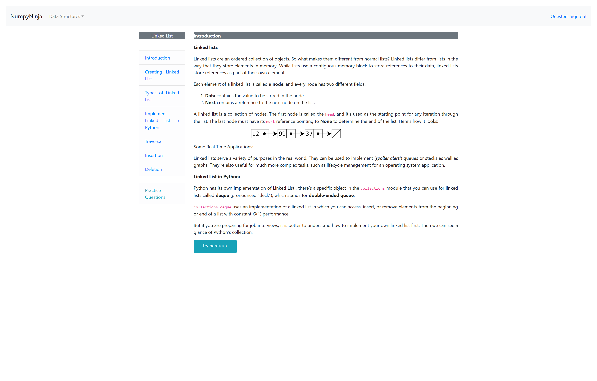FailVerify that user is able to run valid Python code in Try Editor for LinkedList PagePassVerify that user is able to run valid Python code in Try Editor for LinkedList PageGiven The user is on the DSAlgo homepage after signGiven The user is on the tryeditor page of Insertion in LinkedListWhen The user enters code "Valid", "tryEditor" and 1 clicks the Run buttonThen The user should see an result "successouput", "tryEditor" and 1FailVerify that user receives error when user clicks on run button without entering code in tryeditor for LinkedList PageGiven The user is on the DSAlgo homepage after signGiven The user is on the tryeditor page of seven Options "LinkedList" and 6 of LinkedList pageWhen the user clicks the Run buttonThen the user should see an error messagedsAlgoHooks.Hooks.tearDown(io.cucumber.java.Scenario)Verify that user receives error when user clicks on run button without entering code in tryeditor for LinkedList PageFailVerify that user is able to run valid Python code in Try Editor for LinkedList PagePassVerify that user is able to run valid Python code in Try Editor for LinkedList PageGiven The user is on the DSAlgo homepage after signGiven The user is on the tryeditor page of Deletion in LinkedListWhen The user enters code "Valid", "tryEditor" and 1 clicks the Run buttonThen The user should see an result "successouput", "tryEditor" and 1PassVerify the user is able to navigate to the Practice Questions mentioned under Seven options of LinkedListGiven The user is on the DSAlgo homepage after signGiven The user is navigates to seven Options "LinkedList" and 3 of LinkedList pageWhen the user clicks on the Practice Questions linkThen the user should navigated to the Practice Questions page of three options "LinkedList" and 3 in Stack pageFailVerify the user see list of Practice Questions in Practice Questions Page of three options pagesGiven The user is on the DSAlgo homepage after signGiven The user is navigates to seven Options "LinkedList" and 5 of LinkedList pageWhen the user clicks on the Practice Questions linkThen the user should see list of Practice Questions in Practice Questions PagedsAlgoHooks.Hooks.tearDown(io.cucumber.java.Scenario)Verify the user see list of Practice Questions in Practice Questions Page of three options pages
FailVerify the user see list of Practice Questions in Practice Questions Page of three options pagesGiven The user is on the DSAlgo homepage after signGiven The user is navigates to seven Options "LinkedList" and 2 of LinkedList pageWhen the user clicks on the Practice Questions linkThen the user should see list of Practice Questions in Practice Questions PagedsAlgoHooks.Hooks.tearDown(io.cucumber.java.Scenario)Verify the user see list of Practice Questions in Practice Questions Page of three options pages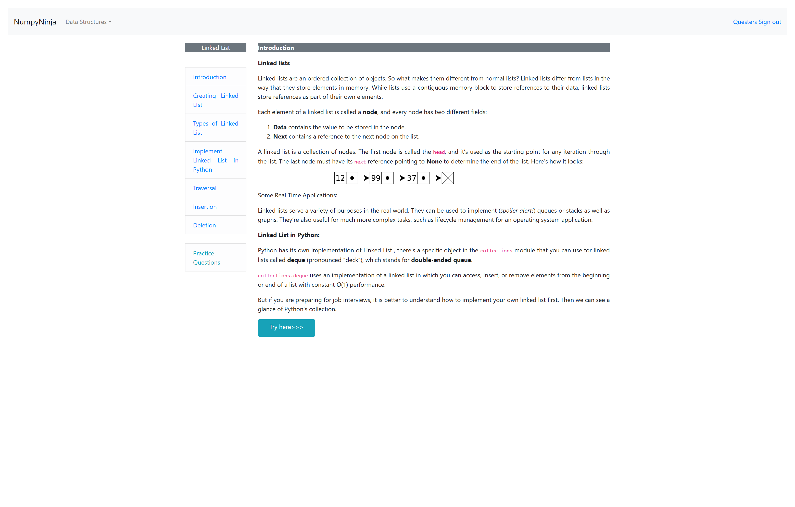FailVerify that user is able to run valid Python code in Try Editor for LinkedList PagePassVerify that user is able to run valid Python code in Try Editor for LinkedList PageGiven The user is on the DSAlgo homepage after signGiven The user is on the tryeditor page of Insertion in LinkedListWhen The user enters code "Valid", "tryEditor" and 1 clicks the Run buttonThen The user should see an result "successouput", "tryEditor" and 1FailVerify that user receives error when user clicks on run button without entering code in tryeditor for LinkedList PageGiven The user is on the DSAlgo homepage after signGiven The user is on the tryeditor page of seven Options "LinkedList" and 6 of LinkedList pageWhen the user clicks the Run buttonThen the user should see an error messagedsAlgoHooks.Hooks.tearDown(io.cucumber.java.Scenario)Verify that user receives error when user clicks on run button without entering code in tryeditor for LinkedList PageFailVerify that user is able to run valid Python code in Try Editor for LinkedList PagePassVerify that user is able to run valid Python code in Try Editor for LinkedList PageGiven The user is on the DSAlgo homepage after signGiven The user is on the tryeditor page of Deletion in LinkedListWhen The user enters code "Valid", "tryEditor" and 1 clicks the Run buttonThen The user should see an result "successouput", "tryEditor" and 1PassVerify the user is able to navigate to the Practice Questions mentioned under Seven options of LinkedListGiven The user is on the DSAlgo homepage after signGiven The user is navigates to seven Options "LinkedList" and 3 of LinkedList pageWhen the user clicks on the Practice Questions linkThen the user should navigated to the Practice Questions page of three options "LinkedList" and 3 in Stack pageFailVerify the user see list of Practice Questions in Practice Questions Page of three options pagesGiven The user is on the DSAlgo homepage after signGiven The user is navigates to seven Options "LinkedList" and 5 of LinkedList pageWhen the user clicks on the Practice Questions linkThen the user should see list of Practice Questions in Practice Questions PagedsAlgoHooks.Hooks.tearDown(io.cucumber.java.Scenario)Verify the user see list of Practice Questions in Practice Questions Page of three options pages FailVerify that user receives error when user clicks on run button without entering code in tryeditor for LinkedList PageFailVerify that user receives error when user clicks on run button without entering code in tryeditor for LinkedList PageGiven The user is on the DSAlgo homepage after signGiven The user is on the tryeditor page of seven Options "LinkedList" and 1 of LinkedList pageWhen the user clicks the Run buttonThen the user should see an error messagedsAlgoHooks.Hooks.tearDown(io.cucumber.java.Scenario)Verify that user receives error when user clicks on run button without entering code in tryeditor for LinkedList Page
FailVerify that user receives error when user clicks on run button without entering code in tryeditor for LinkedList PageFailVerify that user receives error when user clicks on run button without entering code in tryeditor for LinkedList PageGiven The user is on the DSAlgo homepage after signGiven The user is on the tryeditor page of seven Options "LinkedList" and 1 of LinkedList pageWhen the user clicks the Run buttonThen the user should see an error messagedsAlgoHooks.Hooks.tearDown(io.cucumber.java.Scenario)Verify that user receives error when user clicks on run button without entering code in tryeditor for LinkedList Page PassVerify the user is able to navigate to the Practice Questions mentioned under Seven options of LinkedListGiven The user is on the DSAlgo homepage after signGiven The user is navigates to seven Options "LinkedList" and 7 of LinkedList pageWhen the user clicks on the Practice Questions linkThen the user should navigated to the Practice Questions page of three options "LinkedList" and 7 in Stack pageFailVerify the user is able to navigate to the Practice Questions mentioned under Seven options of LinkedListPassVerify the user is able to navigate to the Practice Questions mentioned under Seven options of LinkedListGiven The user is on the DSAlgo homepage after signGiven The user is navigates to seven Options "LinkedList" and 1 of LinkedList pageWhen the user clicks on the Practice Questions linkThen the user should navigated to the Practice Questions page of three options "LinkedList" and 1 in Stack pageFailVerify the user see list of Practice Questions in Practice Questions Page of three options pagesGiven The user is on the DSAlgo homepage after signGiven The user is navigates to seven Options "LinkedList" and 4 of LinkedList pageWhen the user clicks on the Practice Questions linkThen the user should see list of Practice Questions in Practice Questions PagedsAlgoHooks.Hooks.tearDown(io.cucumber.java.Scenario)Verify the user see list of Practice Questions in Practice Questions Page of three options pages
PassVerify the user is able to navigate to the Practice Questions mentioned under Seven options of LinkedListGiven The user is on the DSAlgo homepage after signGiven The user is navigates to seven Options "LinkedList" and 7 of LinkedList pageWhen the user clicks on the Practice Questions linkThen the user should navigated to the Practice Questions page of three options "LinkedList" and 7 in Stack pageFailVerify the user is able to navigate to the Practice Questions mentioned under Seven options of LinkedListPassVerify the user is able to navigate to the Practice Questions mentioned under Seven options of LinkedListGiven The user is on the DSAlgo homepage after signGiven The user is navigates to seven Options "LinkedList" and 1 of LinkedList pageWhen the user clicks on the Practice Questions linkThen the user should navigated to the Practice Questions page of three options "LinkedList" and 1 in Stack pageFailVerify the user see list of Practice Questions in Practice Questions Page of three options pagesGiven The user is on the DSAlgo homepage after signGiven The user is navigates to seven Options "LinkedList" and 4 of LinkedList pageWhen the user clicks on the Practice Questions linkThen the user should see list of Practice Questions in Practice Questions PagedsAlgoHooks.Hooks.tearDown(io.cucumber.java.Scenario)Verify the user see list of Practice Questions in Practice Questions Page of three options pages FailVerify the user see list of Practice Questions in Practice Questions Page of three options pagesFailVerify the user see list of Practice Questions in Practice Questions Page of three options pagesGiven The user is on the DSAlgo homepage after signGiven The user is navigates to seven Options "LinkedList" and 1 of LinkedList pageWhen the user clicks on the Practice Questions linkThen the user should see list of Practice Questions in Practice Questions PagedsAlgoHooks.Hooks.tearDown(io.cucumber.java.Scenario)Verify the user see list of Practice Questions in Practice Questions Page of three options pages
FailVerify the user see list of Practice Questions in Practice Questions Page of three options pagesFailVerify the user see list of Practice Questions in Practice Questions Page of three options pagesGiven The user is on the DSAlgo homepage after signGiven The user is navigates to seven Options "LinkedList" and 1 of LinkedList pageWhen the user clicks on the Practice Questions linkThen the user should see list of Practice Questions in Practice Questions PagedsAlgoHooks.Hooks.tearDown(io.cucumber.java.Scenario)Verify the user see list of Practice Questions in Practice Questions Page of three options pages
-
Queue functionality
10:30:32 AM / 00:03:04:929 Fail
Queue functionality
01.28.2025 10:30:32 AM 01.28.2025 10:33:37 AM 00:03:04:929 · #test-id=5,167PassVerify that user is able to navigate to "Queue" data structure pageGiven The user is on the DSAlgo homepage after signWhen The user clicks the Getting Started button in Queue PanelThen The user be directed to Queue DataStructure PagePassVerify that user is able to navigate to "Implementation of Queue in Python" pageGiven The user is on the DSAlgo homepage after signGiven The user is in the Queue page after Sign inWhen User clicks Implementation of Queue in Python buttonThen User should be redirected to Implementation of Queue in Python pagePassVerify that user is able to navigate to "try Editor" page for "Implementation of Queue in Python" pageGiven The user is on the DSAlgo homepage after signGiven User is on the Implementation of Queue in Python pageWhen The user clicks Try Here button in Implementation of Queue in Python pageThen User should be redirected to a page having an try Editor with a Run button to testPassVerify that user is able to navigate to "Implementation using collections.deque" pageGiven The user is on the DSAlgo homepage after signGiven The user is in the Implementation of Queue in Python pageWhen The user clicks Implementation using collections deque buttonThen The user should be redirected to Implementation using collections deque pagePassVerify that user is able to navigate to "try Editor" page for "Implementation using collections.deque" pageGiven The user is on the DSAlgo homepage after signGiven The user is on the Implementation using collections deque pageWhen The user clicks Try Here button in Implementation using collections deque pageThen User should be redirected to a page having an try Editor with a Run button to testPassVerify that user is able to navigate to "Implementation using array" pageGiven The user is on the DSAlgo homepage after signGiven The user is in the Implementation using collections deque pageWhen The user clicks Implementation using array buttonThen The user should be redirected to Implementation using array pagePassVerify that user is able to navigate to "try Editor" page for "Implementation using array" pageGiven The user is on the DSAlgo homepage after signGiven The user is on the Implementation using array pageWhen The user clicks Try Here button in Implementation using array pageThen User should be redirected to a page having an try Editor with a Run button to testPassVerify that user is able to navigate to "Queue Operations" pageGiven The user is on the DSAlgo homepage after signGiven The user is in the Implementation using array pageWhen User clicks Queue Operations buttonThen User should be redirected to Queue Operations pagePassVerify that user is able to navigate to "try Editor" page for "Queue Operations" pageGiven The user is on the DSAlgo homepage after signGiven User is on the Queue Operations pageWhen The user clicks Try here button in Queue Operations pageThen User should be redirected to a page having an try Editor with a Run button to testPassVerify that valid and invalid python code in TryEditor Implementation of Queue in PythonPassVerify that valid and invalid python code in TryEditor Implementation of Queue in PythonGiven The user is on the DSAlgo homepage after signGiven The user is in TryEditor page of Implementation of Queue in PythonWhen The user enters code from "Valid","tryEditor" and 1 clicks the Run buttonThen The user should see a result "successouput","tryEditor" and 1PassVerify the user is able to navigate to the pratice questions on each Queue topicsGiven The user is on the DSAlgo homepage after signGiven The user navigates to options "Queue" and 3 of Queue pageWhen User click Practice Questions LinkThen User should navigate to Practice questions from "Queue" and 3 Queue TopicsFailVerify that valid and invalid python code in TryEditor Implementation using collections dequePassVerify that valid and invalid python code in TryEditor Implementation using collections dequeGiven The user is on the DSAlgo homepage after signGiven The user is in TryEditor page of Implementation using collections deque in PythonWhen The user enters code from "Valid","tryEditor" and 1 clicks the Run buttonThen The user should see a result "successouput","tryEditor" and 1PassVerify that valid and invalid python code in TryEditor Implementation using collections dequeGiven The user is on the DSAlgo homepage after signGiven The user is in TryEditor page of Implementation using collections deque in PythonWhen The user enters code from "Invalid","tryEditor" and 2 clicks the Run buttonThen The user should see a result "alertmessageoutput","tryEditor" and 2PassVerify the user is able to navigate to the pratice questions on each Queue topicsGiven The user is on the DSAlgo homepage after signGiven The user navigates to options "Queue" and 2 of Queue pageWhen User click Practice Questions LinkThen User should navigate to Practice questions from "Queue" and 2 Queue TopicsFailVerify the user see list of Practice Questions in Practice Questions Page of Queue OptionsGiven The user is on the DSAlgo homepage after signGiven The user navigates to Queue Options "" and 2 of queue page When The user clicks on the Practice Questions linkStep skippedThen The user should see list of Practice Questions in Practice Questions PageStep skippeddsAlgoHooks.Hooks.tearDown(io.cucumber.java.Scenario)Verify the user see list of Practice Questions in Practice Questions Page of Queue Options FailVerify that valid and invalid python code in TryEditor Implementation using arrayPassVerify that valid and invalid python code in TryEditor Implementation using arrayGiven The user is on the DSAlgo homepage after signGiven The user is in TryEditor page of Implementation using array in PythonWhen The user enters code from "Valid","tryEditor" and 1 clicks the Run buttonThen The user should see a result "successouput","tryEditor" and 1PassVerify that valid and invalid python code in TryEditor Implementation using arrayGiven The user is on the DSAlgo homepage after signGiven The user is in TryEditor page of Implementation using array in PythonWhen The user enters code from "Invalid","tryEditor" and 2 clicks the Run buttonThen The user should see a result "alertmessageoutput","tryEditor" and 2FailVerify the user see list of Practice Questions in Practice Questions Page of Queue OptionsGiven The user is on the DSAlgo homepage after signGiven The user navigates to Queue Options "
FailVerify that valid and invalid python code in TryEditor Implementation using arrayPassVerify that valid and invalid python code in TryEditor Implementation using arrayGiven The user is on the DSAlgo homepage after signGiven The user is in TryEditor page of Implementation using array in PythonWhen The user enters code from "Valid","tryEditor" and 1 clicks the Run buttonThen The user should see a result "successouput","tryEditor" and 1PassVerify that valid and invalid python code in TryEditor Implementation using arrayGiven The user is on the DSAlgo homepage after signGiven The user is in TryEditor page of Implementation using array in PythonWhen The user enters code from "Invalid","tryEditor" and 2 clicks the Run buttonThen The user should see a result "alertmessageoutput","tryEditor" and 2FailVerify the user see list of Practice Questions in Practice Questions Page of Queue OptionsGiven The user is on the DSAlgo homepage after signGiven The user navigates to Queue Options "" and 4 of queue page When The user clicks on the Practice Questions linkStep skippedThen The user should see list of Practice Questions in Practice Questions PageStep skippeddsAlgoHooks.Hooks.tearDown(io.cucumber.java.Scenario)PassVerify that valid and invalid python code in TryEditor Queue OperationsPassVerify that valid and invalid python code in TryEditor Queue OperationsGiven The user is on the DSAlgo homepage after signGiven The user is in TryEditor page of Queue Operations in PythonWhen The user enters code from "Valid","tryEditor" and 1 clicks the Run buttonThen The user should see a result "successouput","tryEditor" and 1PassVerify that valid and invalid python code in TryEditor Queue OperationsGiven The user is on the DSAlgo homepage after signGiven The user is in TryEditor page of Queue Operations in PythonWhen The user enters code from "Invalid","tryEditor" and 2 clicks the Run buttonThen The user should see a result "alertmessageoutput","tryEditor" and 2FailVerify that user receives error when user clicks on run button without entering code in tryeditor for Implementation of Queue in PythonGiven The user is on the DSAlgo homepage after signGiven The user is on the tryeditor page of Implementation of Queue in PythonWhen the user clicks the Run button of Implementation of Queue in PythonThen the user should see an error messagedsAlgoHooks.Hooks.tearDown(io.cucumber.java.Scenario)Verify that user receives error when user clicks on run button without entering code in tryeditor for Implementation of Queue in Python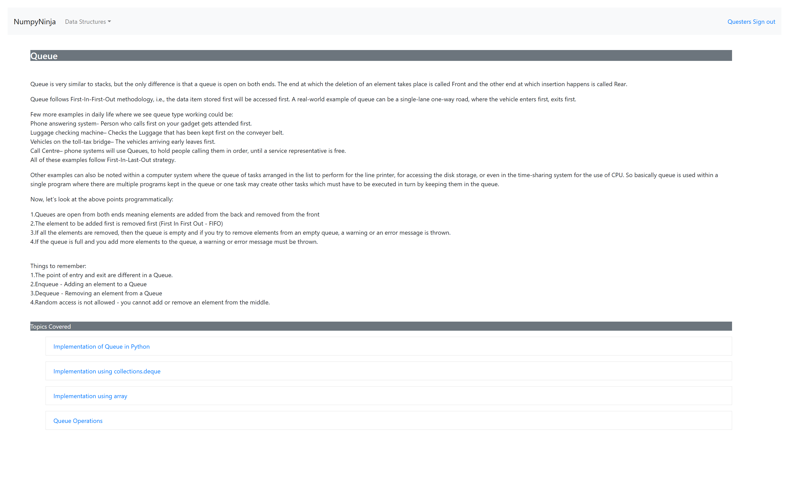FailVerify the user is able to navigate to the pratice questions on each Queue topicsPassVerify the user is able to navigate to the pratice questions on each Queue topicsGiven The user is on the DSAlgo homepage after signGiven The user navigates to options "Queue" and 1 of Queue pageWhen User click Practice Questions LinkThen User should navigate to Practice questions from "Queue" and 1 Queue TopicsFailVerify the user see list of Practice Questions in Practice Questions Page of Queue OptionsGiven The user is on the DSAlgo homepage after signGiven The user navigates to Queue Options "" and 3 of queue page When The user clicks on the Practice Questions linkStep skippedThen The user should see list of Practice Questions in Practice Questions PageStep skippeddsAlgoHooks.Hooks.tearDown(io.cucumber.java.Scenario)Verify the user see list of Practice Questions in Practice Questions Page of Queue Options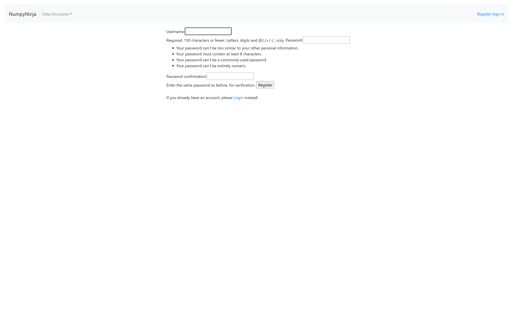FailVerify the user see list of Practice Questions in Practice Questions Page of Queue OptionsFailVerify the user see list of Practice Questions in Practice Questions Page of Queue OptionsGiven The user is on the DSAlgo homepage after signGiven The user navigates to Queue Options "" and 1 of queue page When The user clicks on the Practice Questions linkStep skippedThen The user should see list of Practice Questions in Practice Questions PageStep skippeddsAlgoHooks.Hooks.tearDown(io.cucumber.java.Scenario)Verify the user see list of Practice Questions in Practice Questions Page of Queue Options
-
Register functionality
10:32:31 AM / 00:01:05:440 Pass
Register functionality
01.28.2025 10:32:31 AM 01.28.2025 10:33:36 AM 00:01:05:440 · #test-id=5,400PassVerify the user is able to land on Register PageGiven The User is On The Home PageWhen User clicks Register link on the Home pageThen The user should be redirected to Register formPassVerify that user gets error message giving username without entering password and password confirmation when clicking onPassVerify that user gets error message giving username without entering password and password confirmation when clicking onGiven The user is on the register pageWhen The user enters the username and clicks Register button "Register" and 1Then The user should get error message "Please fill out this field" is displayed in Password Confirmation textboxPass: Verify that user gets error message giving username and password without entering password confirmation whenPass: Verify that user gets error message giving username and password without entering password confirmation whenGiven The user is on the register pageWhen The user enters the username and password and clicks Register button "Register" and 2Then The user should get error message " Please fill out this field" is displayed in Password Confirmation textboxPassVerify that user gets error message without entering username , password and password confirmation when clicking onPassVerify that user gets error message without entering username , password and password confirmation when clicking onGiven The user is on the register pageWhen The user clicks Register button on the Register page without entering username ,password and password confirmation "Register"and 3Then The user should get error message " Please fill out this field" is displayed in Password Confirmation textboxPassVerify that user gets error message giving username and entering password and password confirmation different whenPassVerify that user gets error message giving username and entering password and password confirmation different whenGiven The user is on the register pageWhen The user enters the username and password different and clicks Register button from sheet "Register" and row 4Then The user should get error message "password_mismatch:The two password fields didn’t match." in register pagePassVerify that user gets error mesage when entering only numeric when clicking on register buttonPassVerify that user gets error mesage when entering only numeric when clicking on register buttonGiven The user is on the register pageWhen The user enters the Password only numeric and clicks Register button from sheet "Register" and row 5Then The user should get error message "password_mismatch:The two password fields didn’t match." in register pagePassVerify that user gets error message giving invalid username like %,$,& (Example: Tom$, Tom%) when clicking on registerPassVerify that user gets error message giving invalid username like %,$,& (Example: Tom$, Tom%) when clicking on registerGiven The user is on the register pageWhen The user enters the invalid username like %,$,& and clicks Register button from sheet "Register" and row 6Then The user should get error message "password_mismatch:The two password fields didn’t match." in register pagePassVerify that user gets error message while entering the password less than 8 characters when clicking on register buttonPassVerify that user gets error message while entering the password less than 8 characters when clicking on register buttonGiven The user is on the register pageWhen The user enters the password less than eight characters and clicks Register button from sheet "Register" and row 7Then The user should get error message "password_mismatch:The two password fields didn’t match." in register pagePassVerify that user is able to see Register and sign in linkswhen clicking on signout linkGiven The User is On The Home PageWhen The user clicks Signout linkThen The user should be able to see Register and sign in links at the top corner of the home pagePassVerify that user is able to login to DSAlgo after doing successful registrationGiven The User is On The Home PageWhen The user clicks login buttonThen The user should be able to redirect to the home page of DsAlgo after Signin -
Signin functionality
10:33:06 AM / 00:04:47:291 Fail
Signin functionality
01.28.2025 10:33:06 AM 01.28.2025 10:37:53 AM 00:04:47:291 · #test-id=5,476PassVerify the user is direct to Login PageGiven The User is On the Home PageWhen User clicks on Sign in linkThen The user should be directed to Signin pageFailVerify the user is able to login giving valid username and valid password when clicking on login buttonPassVerify the user is able to login giving valid username and valid password when clicking on login buttonGiven The user is on the Login PageWhen User enters valid username and valid password and clicks Login button "Signin" and row 1Then The user is directed to Data Structure home page with message "You are logged in"PassVerify the user is able to navigate to the Operations in Stack in Stack pageGiven The user is on the DSAlgo homepage after signGiven the user is on the Stack pageWhen the user clicks on the Options "Stack" and 3 in Stack PageThen the user should navigated to the Options "Stack" and 3 in Stack pageFailVerify the user see list of Practice Questions in Practice Questions Page of three options pagesGiven The user is on the DSAlgo homepage after signGiven The user is navigates to three Options "Stack" and 2 of stack pageWhen the user clicks on the Practice Questions linkThen the user should see list of Practice Questions in Practice Questions PagedsAlgoHooks.Hooks.tearDown(io.cucumber.java.Scenario)Verify the user see list of Practice Questions in Practice Questions Page of three options pages PassVerify the user is able to navigate to the Operations in Tree in Tree pageGiven The user is on the DSAlgo homepage after signGiven User is on Tree PageWhen User click on Options "Tree" and 2 in Tree pageThen User should redirected to Options "Tree" and 2 in Tree pagePassVerify the user is able to navigate to the Operations in Tree in Tree pageGiven The user is on the DSAlgo homepage after signGiven User is on Tree PageWhen User click on Options "Tree" and 11 in Tree pageThen User should redirected to Options "Tree" and 11 in Tree pageFailVerify the user should not able to login giving Invalid username and valid password when clicking on login buttonPassVerify the user should not able to login giving Invalid username and valid password when clicking on login buttonGiven The user is on the Login PageWhen User enters Invalid username and valid password and clicks Login button "Signin" and row 2Then The user should get a warning message "Invalid Username and Password"PassVerify the user is able to navigate to the Operations in Stack in Stack pageGiven The user is on the DSAlgo homepage after signGiven the user is on the Stack pageWhen the user clicks on the Options "Stack" and 2 in Stack PageThen the user should navigated to the Options "Stack" and 2 in Stack pageFailVerify the user see list of Practice Questions in Practice Questions Page of three options pagesGiven The user is on the DSAlgo homepage after signGiven The user is navigates to three Options "Stack" and 1 of stack pageWhen the user clicks on the Practice Questions linkThen the user should see list of Practice Questions in Practice Questions PagedsAlgoHooks.Hooks.tearDown(io.cucumber.java.Scenario)Verify the user see list of Practice Questions in Practice Questions Page of three options pages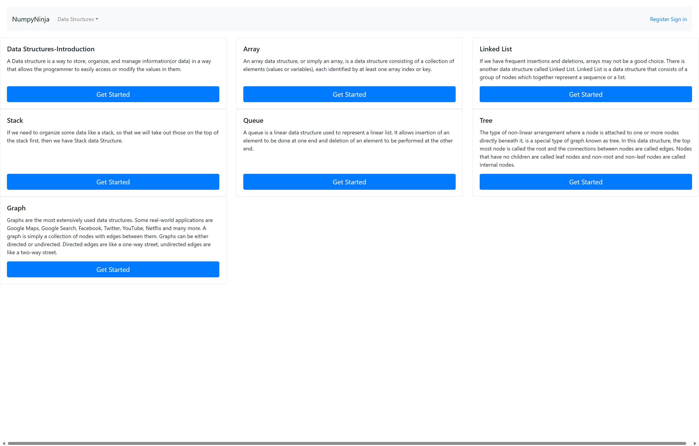PassVerify the user should not able to login giving valid username and Invalid password when clicking on login buttonPassVerify the user should not able to login giving valid username and Invalid password when clicking on login buttonGiven The user is on the Login PageWhen User enters valid username and Invalid password and clicks Login button "Signin" and row 3Then The user should get a warning message "Invalid Username and Password"PassVerify the user should not able to login giving Invalid username and Invalid password when clicking on login buttonPassVerify the user should not able to login giving Invalid username and Invalid password when clicking on login buttonGiven The user is on the Login PageWhen User enters Invalid username and Invalid password and clicks Login button "Signin" and row 4Then The user should get a warning message "Invalid Username and Password"PassVerify that user is able to navigate to the try Editor page from different options in Stack PageGiven The user is on the DSAlgo homepage after signGiven The user is on the Stack Options "Stack" and 2 pageWhen The user clicks on the Try here button on the Stack Options pageThen The user should navigate to the tryeditor pagePassVerify the user is able to navigate to the Practice Questions mentioned under three options pagesGiven The user is on the DSAlgo homepage after signGiven The user is navigates to three Options "Stack" and 1 of stack pageWhen the user clicks on the Practice Questions linkThen the user should navigated to the Practice Questions page of three options "Stack" and 1 in Stack pagePassVerify the user is able to navigate to the Operations in Tree in Tree pageGiven The user is on the DSAlgo homepage after signGiven User is on Tree PageWhen User click on Options "Tree" and 6 in Tree pageThen User should redirected to Options "Tree" and 6 in Tree pagePassVerify the user should not able to login giving empty username and empty password when clicking on login buttonGiven The user is on the Login PageWhen User clicks Login button without entering username and passwordThen The user should get a element showing empty field "Please fill out this field."PassVerify the user gets error message without entering username and giving Password when clicking on login buttonPassVerify the user gets error message without entering username and giving Password when clicking on login buttonGiven The user is on the Login PageWhen User clicks on Login link on Login page without entering username and giving password from sheetname "Signin" and row 5Then The user should get a element showing empty field "Please fill out this field."PassVerify that user is able to run valid Python code in Try Editor for Stack PageGiven The user is on the DSAlgo homepage after signGiven The user is on the tryeditor page of ImplementationWhen The user enters code "Invalid", "tryEditor" and 2 clicks the Run buttonThen The user should see an result "alertmessageoutput", "tryEditor" and 2PassVerify that user is able to run valid Python code in Try Editor for Stack PageGiven The user is on the DSAlgo homepage after signGiven The user is on the tryeditor page of ApplicationsWhen The user enters code "Invalid", "tryEditor" and 2 clicks the Run buttonThen The user should see an result "alertmessageoutput", "tryEditor" and 2PassVerify the user is able to navigate to the Operations in Tree in Tree pageGiven The user is on the DSAlgo homepage after signGiven User is on Tree PageWhen User click on Options "Tree" and 3 in Tree pageThen User should redirected to Options "Tree" and 3 in Tree pagePassVerify the user is able to navigate to TryEditor page from Tree OptionsGiven The user is on the DSAlgo homepage after signGiven The user is on the Tree Options "Tree" and 2 pageWhen The user click Try Here button on Tree Options pageThen The user should redirected to Try Editor of each OptionsPassVerify the user is able to navigate to TryEditor page from Tree OptionsGiven The user is on the DSAlgo homepage after signGiven The user is on the Tree Options "Tree" and 11 pageWhen The user click Try Here button on Tree Options pageThen The user should redirected to Try Editor of each OptionsPassVerify the user gets error message entering username and without entering Password when clicking on login buttonPassVerify the user gets error message entering username and without entering Password when clicking on login buttonGiven The user is on the Login PageWhen User clicks on Login link on Login page entering username and without entering password from sheetname "Signin" and row 6Then The user should get a element showing empty field "Please fill out this field."PassVerify that user is able to navigate to the try Editor page from different options in Stack PageGiven The user is on the DSAlgo homepage after signGiven The user is on the Stack Options "Stack" and 3 pageWhen The user clicks on the Try here button on the Stack Options pageThen The user should navigate to the tryeditor pagePassVerify the user is able to sign out successfullyGiven The user is On the Home PageWhen User clicks Signout linkThen The user should be redirected to home page with message "Logged out successfully"
PassVerify the user is able to navigate to the Operations in Tree in Tree pageGiven The user is on the DSAlgo homepage after signGiven User is on Tree PageWhen User click on Options "Tree" and 2 in Tree pageThen User should redirected to Options "Tree" and 2 in Tree pagePassVerify the user is able to navigate to the Operations in Tree in Tree pageGiven The user is on the DSAlgo homepage after signGiven User is on Tree PageWhen User click on Options "Tree" and 11 in Tree pageThen User should redirected to Options "Tree" and 11 in Tree pageFailVerify the user should not able to login giving Invalid username and valid password when clicking on login buttonPassVerify the user should not able to login giving Invalid username and valid password when clicking on login buttonGiven The user is on the Login PageWhen User enters Invalid username and valid password and clicks Login button "Signin" and row 2Then The user should get a warning message "Invalid Username and Password"PassVerify the user is able to navigate to the Operations in Stack in Stack pageGiven The user is on the DSAlgo homepage after signGiven the user is on the Stack pageWhen the user clicks on the Options "Stack" and 2 in Stack PageThen the user should navigated to the Options "Stack" and 2 in Stack pageFailVerify the user see list of Practice Questions in Practice Questions Page of three options pagesGiven The user is on the DSAlgo homepage after signGiven The user is navigates to three Options "Stack" and 1 of stack pageWhen the user clicks on the Practice Questions linkThen the user should see list of Practice Questions in Practice Questions PagedsAlgoHooks.Hooks.tearDown(io.cucumber.java.Scenario)Verify the user see list of Practice Questions in Practice Questions Page of three options pages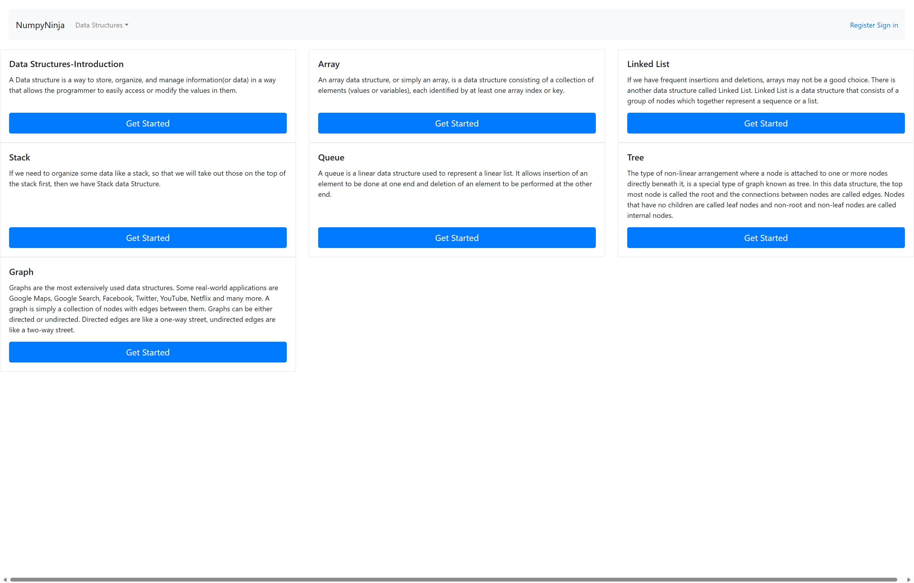PassVerify the user should not able to login giving valid username and Invalid password when clicking on login buttonPassVerify the user should not able to login giving valid username and Invalid password when clicking on login buttonGiven The user is on the Login PageWhen User enters valid username and Invalid password and clicks Login button "Signin" and row 3Then The user should get a warning message "Invalid Username and Password"PassVerify the user should not able to login giving Invalid username and Invalid password when clicking on login buttonPassVerify the user should not able to login giving Invalid username and Invalid password when clicking on login buttonGiven The user is on the Login PageWhen User enters Invalid username and Invalid password and clicks Login button "Signin" and row 4Then The user should get a warning message "Invalid Username and Password"PassVerify that user is able to navigate to the try Editor page from different options in Stack PageGiven The user is on the DSAlgo homepage after signGiven The user is on the Stack Options "Stack" and 2 pageWhen The user clicks on the Try here button on the Stack Options pageThen The user should navigate to the tryeditor pagePassVerify the user is able to navigate to the Practice Questions mentioned under three options pagesGiven The user is on the DSAlgo homepage after signGiven The user is navigates to three Options "Stack" and 1 of stack pageWhen the user clicks on the Practice Questions linkThen the user should navigated to the Practice Questions page of three options "Stack" and 1 in Stack pagePassVerify the user is able to navigate to the Operations in Tree in Tree pageGiven The user is on the DSAlgo homepage after signGiven User is on Tree PageWhen User click on Options "Tree" and 6 in Tree pageThen User should redirected to Options "Tree" and 6 in Tree pagePassVerify the user should not able to login giving empty username and empty password when clicking on login buttonGiven The user is on the Login PageWhen User clicks Login button without entering username and passwordThen The user should get a element showing empty field "Please fill out this field."PassVerify the user gets error message without entering username and giving Password when clicking on login buttonPassVerify the user gets error message without entering username and giving Password when clicking on login buttonGiven The user is on the Login PageWhen User clicks on Login link on Login page without entering username and giving password from sheetname "Signin" and row 5Then The user should get a element showing empty field "Please fill out this field."PassVerify that user is able to run valid Python code in Try Editor for Stack PageGiven The user is on the DSAlgo homepage after signGiven The user is on the tryeditor page of ImplementationWhen The user enters code "Invalid", "tryEditor" and 2 clicks the Run buttonThen The user should see an result "alertmessageoutput", "tryEditor" and 2PassVerify that user is able to run valid Python code in Try Editor for Stack PageGiven The user is on the DSAlgo homepage after signGiven The user is on the tryeditor page of ApplicationsWhen The user enters code "Invalid", "tryEditor" and 2 clicks the Run buttonThen The user should see an result "alertmessageoutput", "tryEditor" and 2PassVerify the user is able to navigate to the Operations in Tree in Tree pageGiven The user is on the DSAlgo homepage after signGiven User is on Tree PageWhen User click on Options "Tree" and 3 in Tree pageThen User should redirected to Options "Tree" and 3 in Tree pagePassVerify the user is able to navigate to TryEditor page from Tree OptionsGiven The user is on the DSAlgo homepage after signGiven The user is on the Tree Options "Tree" and 2 pageWhen The user click Try Here button on Tree Options pageThen The user should redirected to Try Editor of each OptionsPassVerify the user is able to navigate to TryEditor page from Tree OptionsGiven The user is on the DSAlgo homepage after signGiven The user is on the Tree Options "Tree" and 11 pageWhen The user click Try Here button on Tree Options pageThen The user should redirected to Try Editor of each OptionsPassVerify the user gets error message entering username and without entering Password when clicking on login buttonPassVerify the user gets error message entering username and without entering Password when clicking on login buttonGiven The user is on the Login PageWhen User clicks on Login link on Login page entering username and without entering password from sheetname "Signin" and row 6Then The user should get a element showing empty field "Please fill out this field."PassVerify that user is able to navigate to the try Editor page from different options in Stack PageGiven The user is on the DSAlgo homepage after signGiven The user is on the Stack Options "Stack" and 3 pageWhen The user clicks on the Try here button on the Stack Options pageThen The user should navigate to the tryeditor pagePassVerify the user is able to sign out successfullyGiven The user is On the Home PageWhen User clicks Signout linkThen The user should be redirected to home page with message "Logged out successfully" -
Stack functionality
10:33:37 AM / 00:04:43:835 Fail
Stack functionality
01.28.2025 10:33:37 AM 01.28.2025 10:38:20 AM 00:04:43:835 · #test-id=5,539PassVerify that the user can navigate to the Stack page after signinGiven The user is on the DSAlgo homepage after signWhen the user clicks on the GetStarted button of Stack sectionThen the user is navigated to the Stack pagePassVerify the user is able to navigate to the Operations in Stack in Stack pagePassVerify the user is able to navigate to the Operations in Stack in Stack pageGiven The user is on the DSAlgo homepage after signGiven the user is on the Stack pageWhen the user clicks on the Options "Stack" and 1 in Stack PageThen the user should navigated to the Options "Stack" and 1 in Stack pagePassVerify that user is able to navigate to the try Editor page from different options in Stack PagePassVerify that user is able to navigate to the try Editor page from different options in Stack PageGiven The user is on the DSAlgo homepage after signGiven The user is on the Stack Options "Stack" and 1 pageWhen The user clicks on the Try here button on the Stack Options pageThen The user should navigate to the tryeditor pageFailVerify that user is able to run valid Python code in Try Editor for Stack PagePassVerify that user is able to run valid Python code in Try Editor for Stack PageGiven The user is on the DSAlgo homepage after signGiven The user is on the tryeditor page of Operations in StackWhen The user enters code "Valid", "tryEditor" and 1 clicks the Run buttonThen The user should see an result "successouput", "tryEditor" and 1PassVerify that user is able to run valid Python code in Try Editor for Stack PageGiven The user is on the DSAlgo homepage after signGiven The user is on the tryeditor page of Operations in StackWhen The user enters code "Invalid", "tryEditor" and 2 clicks the Run buttonThen The user should see an result "alertmessageoutput", "tryEditor" and 2FailVerify that user receives error when user clicks on run button without entering code in tryeditor for Stack PageGiven The user is on the DSAlgo homepage after signGiven The user is on the tryeditor page of three Options "Stack" and 2 of stack pageWhen the user clicks the Run buttonThen the user should see an error messagedsAlgoHooks.Hooks.tearDown(io.cucumber.java.Scenario)Verify that user receives error when user clicks on run button without entering code in tryeditor for Stack Page PassVerify that user is able to run valid Python code in Try Editor for Stack PagePassVerify that user is able to run valid Python code in Try Editor for Stack PageGiven The user is on the DSAlgo homepage after signGiven The user is on the tryeditor page of ImplementationWhen The user enters code "Valid", "tryEditor" and 1 clicks the Run buttonThen The user should see an result "successouput", "tryEditor" and 1PassVerify the user is able to navigate to the Practice Questions mentioned under three options pagesGiven The user is on the DSAlgo homepage after signGiven The user is navigates to three Options "Stack" and 2 of stack pageWhen the user clicks on the Practice Questions linkThen the user should navigated to the Practice Questions page of three options "Stack" and 2 in Stack pagePassVerify the user is able to navigate to the Operations in Tree in Tree pageGiven The user is on the DSAlgo homepage after signGiven User is on Tree PageWhen User click on Options "Tree" and 4 in Tree pageThen User should redirected to Options "Tree" and 4 in Tree pagePassVerify the user is able to navigate to TryEditor page from Tree OptionsGiven The user is on the DSAlgo homepage after signGiven The user is on the Tree Options "Tree" and 4 pageWhen The user click Try Here button on Tree Options pageThen The user should redirected to Try Editor of each OptionsPassVerify the user is able to navigate to TryEditor page from Tree OptionsGiven The user is on the DSAlgo homepage after signGiven The user is on the Tree Options "Tree" and 8 pageWhen The user click Try Here button on Tree Options pageThen The user should redirected to Try Editor of each OptionsFailVerify that user is able to run valid Python code in Try Editor for Stack PagePassVerify that user is able to run valid Python code in Try Editor for Stack PageGiven The user is on the DSAlgo homepage after signGiven The user is on the tryeditor page of ApplicationsWhen The user enters code "Valid", "tryEditor" and 1 clicks the Run buttonThen The user should see an result "successouput", "tryEditor" and 1FailVerify that user receives error when user clicks on run button without entering code in tryeditor for Stack PageGiven The user is on the DSAlgo homepage after signGiven The user is on the tryeditor page of three Options "Stack" and 3 of stack pageWhen the user clicks the Run buttonThen the user should see an error messagedsAlgoHooks.Hooks.tearDown(io.cucumber.java.Scenario)Verify that user receives error when user clicks on run button without entering code in tryeditor for Stack Page
PassVerify that user is able to run valid Python code in Try Editor for Stack PagePassVerify that user is able to run valid Python code in Try Editor for Stack PageGiven The user is on the DSAlgo homepage after signGiven The user is on the tryeditor page of ImplementationWhen The user enters code "Valid", "tryEditor" and 1 clicks the Run buttonThen The user should see an result "successouput", "tryEditor" and 1PassVerify the user is able to navigate to the Practice Questions mentioned under three options pagesGiven The user is on the DSAlgo homepage after signGiven The user is navigates to three Options "Stack" and 2 of stack pageWhen the user clicks on the Practice Questions linkThen the user should navigated to the Practice Questions page of three options "Stack" and 2 in Stack pagePassVerify the user is able to navigate to the Operations in Tree in Tree pageGiven The user is on the DSAlgo homepage after signGiven User is on Tree PageWhen User click on Options "Tree" and 4 in Tree pageThen User should redirected to Options "Tree" and 4 in Tree pagePassVerify the user is able to navigate to TryEditor page from Tree OptionsGiven The user is on the DSAlgo homepage after signGiven The user is on the Tree Options "Tree" and 4 pageWhen The user click Try Here button on Tree Options pageThen The user should redirected to Try Editor of each OptionsPassVerify the user is able to navigate to TryEditor page from Tree OptionsGiven The user is on the DSAlgo homepage after signGiven The user is on the Tree Options "Tree" and 8 pageWhen The user click Try Here button on Tree Options pageThen The user should redirected to Try Editor of each OptionsFailVerify that user is able to run valid Python code in Try Editor for Stack PagePassVerify that user is able to run valid Python code in Try Editor for Stack PageGiven The user is on the DSAlgo homepage after signGiven The user is on the tryeditor page of ApplicationsWhen The user enters code "Valid", "tryEditor" and 1 clicks the Run buttonThen The user should see an result "successouput", "tryEditor" and 1FailVerify that user receives error when user clicks on run button without entering code in tryeditor for Stack PageGiven The user is on the DSAlgo homepage after signGiven The user is on the tryeditor page of three Options "Stack" and 3 of stack pageWhen the user clicks the Run buttonThen the user should see an error messagedsAlgoHooks.Hooks.tearDown(io.cucumber.java.Scenario)Verify that user receives error when user clicks on run button without entering code in tryeditor for Stack Page PassVerify the user is able to navigate to the Operations in Tree in Tree pageGiven The user is on the DSAlgo homepage after signGiven User is on Tree PageWhen User click on Options "Tree" and 9 in Tree pageThen User should redirected to Options "Tree" and 9 in Tree pagePassVerify the user is able to navigate to TryEditor page from Tree OptionsGiven The user is on the DSAlgo homepage after signGiven The user is on the Tree Options "Tree" and 6 pageWhen The user click Try Here button on Tree Options pageThen The user should redirected to Try Editor of each OptionsPassVerify that valid and invalid python code in TryEditor Overview of TreesGiven The user is on the DSAlgo homepage after signGiven The user is in TryEditor page of Overview of TreesWhen The user enters code from "Invalid","tryEditor" and 2 clicks the Run buttonThen The user should see a result "alertmessageoutput","tryEditor" and 2FailVerify the user see list of Practice Questions in Practice Questions Page of three options pagesFailVerify the user see list of Practice Questions in Practice Questions Page of three options pagesGiven The user is on the DSAlgo homepage after signGiven The user is navigates to three Options "Stack" and 3 of stack pageWhen the user clicks on the Practice Questions linkThen the user should see list of Practice Questions in Practice Questions PagedsAlgoHooks.Hooks.tearDown(io.cucumber.java.Scenario)Verify the user see list of Practice Questions in Practice Questions Page of three options pages
PassVerify the user is able to navigate to the Operations in Tree in Tree pageGiven The user is on the DSAlgo homepage after signGiven User is on Tree PageWhen User click on Options "Tree" and 9 in Tree pageThen User should redirected to Options "Tree" and 9 in Tree pagePassVerify the user is able to navigate to TryEditor page from Tree OptionsGiven The user is on the DSAlgo homepage after signGiven The user is on the Tree Options "Tree" and 6 pageWhen The user click Try Here button on Tree Options pageThen The user should redirected to Try Editor of each OptionsPassVerify that valid and invalid python code in TryEditor Overview of TreesGiven The user is on the DSAlgo homepage after signGiven The user is in TryEditor page of Overview of TreesWhen The user enters code from "Invalid","tryEditor" and 2 clicks the Run buttonThen The user should see a result "alertmessageoutput","tryEditor" and 2FailVerify the user see list of Practice Questions in Practice Questions Page of three options pagesFailVerify the user see list of Practice Questions in Practice Questions Page of three options pagesGiven The user is on the DSAlgo homepage after signGiven The user is navigates to three Options "Stack" and 3 of stack pageWhen the user clicks on the Practice Questions linkThen the user should see list of Practice Questions in Practice Questions PagedsAlgoHooks.Hooks.tearDown(io.cucumber.java.Scenario)Verify the user see list of Practice Questions in Practice Questions Page of three options pages PassVerify the user is able to navigate to the Operations in Tree in Tree pageGiven The user is on the DSAlgo homepage after signGiven User is on Tree PageWhen User click on Options "Tree" and 8 in Tree pageThen User should redirected to Options "Tree" and 8 in Tree pagePassVerify the user is able to navigate to TryEditor page from Tree OptionsGiven The user is on the DSAlgo homepage after signGiven The user is on the Tree Options "Tree" and 5 pageWhen The user click Try Here button on Tree Options pageThen The user should redirected to Try Editor of each OptionsPassVerify the user is able to navigate to the Practice Questions mentioned under three options pagesPassVerify the user is able to navigate to the Practice Questions mentioned under three options pagesGiven The user is on the DSAlgo homepage after signGiven The user is navigates to three Options "Stack" and 3 of stack pageWhen the user clicks on the Practice Questions linkThen the user should navigated to the Practice Questions page of three options "Stack" and 3 in Stack pagePassVerify the user is able to navigate to the Operations in Tree in Tree pageGiven The user is on the DSAlgo homepage after signGiven User is on Tree PageWhen User click on Options "Tree" and 7 in Tree pageThen User should redirected to Options "Tree" and 7 in Tree pagePassVerify the user is able to navigate to the Operations in Tree in Tree pageGiven The user is on the DSAlgo homepage after signGiven User is on Tree PageWhen User click on Options "Tree" and 13 in Tree pageThen User should redirected to Options "Tree" and 13 in Tree pagePassVerify the user is able to navigate to TryEditor page from Tree OptionsGiven The user is on the DSAlgo homepage after signGiven The user is on the Tree Options "Tree" and 10 pageWhen The user click Try Here button on Tree Options pageThen The user should redirected to Try Editor of each OptionsFailVerify that user receives error when user clicks on run button without entering code in tryeditor for Stack PageFailVerify that user receives error when user clicks on run button without entering code in tryeditor for Stack PageGiven The user is on the DSAlgo homepage after signGiven The user is on the tryeditor page of three Options "Stack" and 1 of stack pageWhen the user clicks the Run buttonThen the user should see an error messagedsAlgoHooks.Hooks.tearDown(io.cucumber.java.Scenario)Verify that user receives error when user clicks on run button without entering code in tryeditor for Stack Page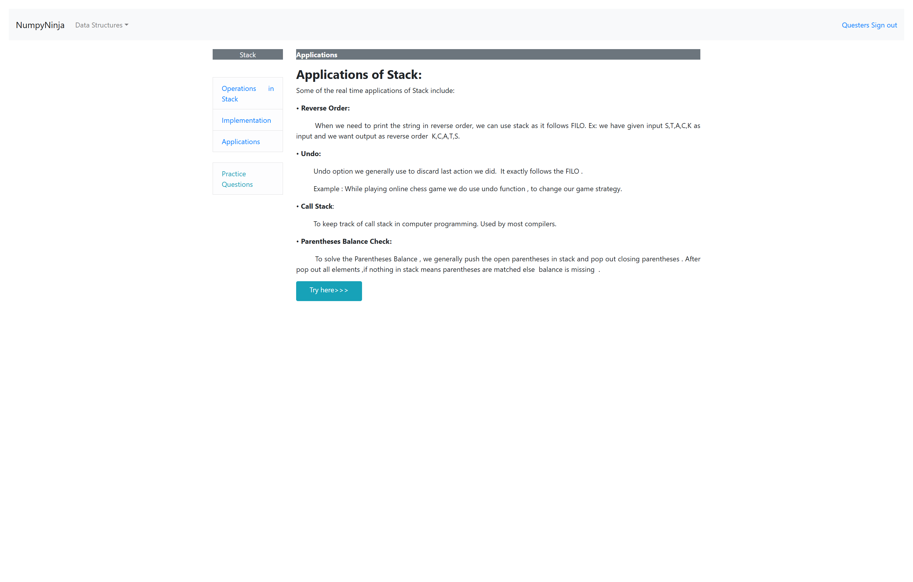PassVerify the user is able to navigate to the Operations in Tree in Tree pageGiven The user is on the DSAlgo homepage after signGiven User is on Tree PageWhen User click on Options "Tree" and 5 in Tree pageThen User should redirected to Options "Tree" and 5 in Tree pagePassVerify the user is able to navigate to the Operations in Tree in Tree pageGiven The user is on the DSAlgo homepage after signGiven User is on Tree PageWhen User click on Options "Tree" and 12 in Tree pageThen User should redirected to Options "Tree" and 12 in Tree pagePassVerify the user is able to navigate to TryEditor page from Tree OptionsGiven The user is on the DSAlgo homepage after signGiven The user is on the Tree Options "Tree" and 13 pageWhen The user click Try Here button on Tree Options pageThen The user should redirected to Try Editor of each Options
PassVerify the user is able to navigate to the Operations in Tree in Tree pageGiven The user is on the DSAlgo homepage after signGiven User is on Tree PageWhen User click on Options "Tree" and 8 in Tree pageThen User should redirected to Options "Tree" and 8 in Tree pagePassVerify the user is able to navigate to TryEditor page from Tree OptionsGiven The user is on the DSAlgo homepage after signGiven The user is on the Tree Options "Tree" and 5 pageWhen The user click Try Here button on Tree Options pageThen The user should redirected to Try Editor of each OptionsPassVerify the user is able to navigate to the Practice Questions mentioned under three options pagesPassVerify the user is able to navigate to the Practice Questions mentioned under three options pagesGiven The user is on the DSAlgo homepage after signGiven The user is navigates to three Options "Stack" and 3 of stack pageWhen the user clicks on the Practice Questions linkThen the user should navigated to the Practice Questions page of three options "Stack" and 3 in Stack pagePassVerify the user is able to navigate to the Operations in Tree in Tree pageGiven The user is on the DSAlgo homepage after signGiven User is on Tree PageWhen User click on Options "Tree" and 7 in Tree pageThen User should redirected to Options "Tree" and 7 in Tree pagePassVerify the user is able to navigate to the Operations in Tree in Tree pageGiven The user is on the DSAlgo homepage after signGiven User is on Tree PageWhen User click on Options "Tree" and 13 in Tree pageThen User should redirected to Options "Tree" and 13 in Tree pagePassVerify the user is able to navigate to TryEditor page from Tree OptionsGiven The user is on the DSAlgo homepage after signGiven The user is on the Tree Options "Tree" and 10 pageWhen The user click Try Here button on Tree Options pageThen The user should redirected to Try Editor of each OptionsFailVerify that user receives error when user clicks on run button without entering code in tryeditor for Stack PageFailVerify that user receives error when user clicks on run button without entering code in tryeditor for Stack PageGiven The user is on the DSAlgo homepage after signGiven The user is on the tryeditor page of three Options "Stack" and 1 of stack pageWhen the user clicks the Run buttonThen the user should see an error messagedsAlgoHooks.Hooks.tearDown(io.cucumber.java.Scenario)Verify that user receives error when user clicks on run button without entering code in tryeditor for Stack Page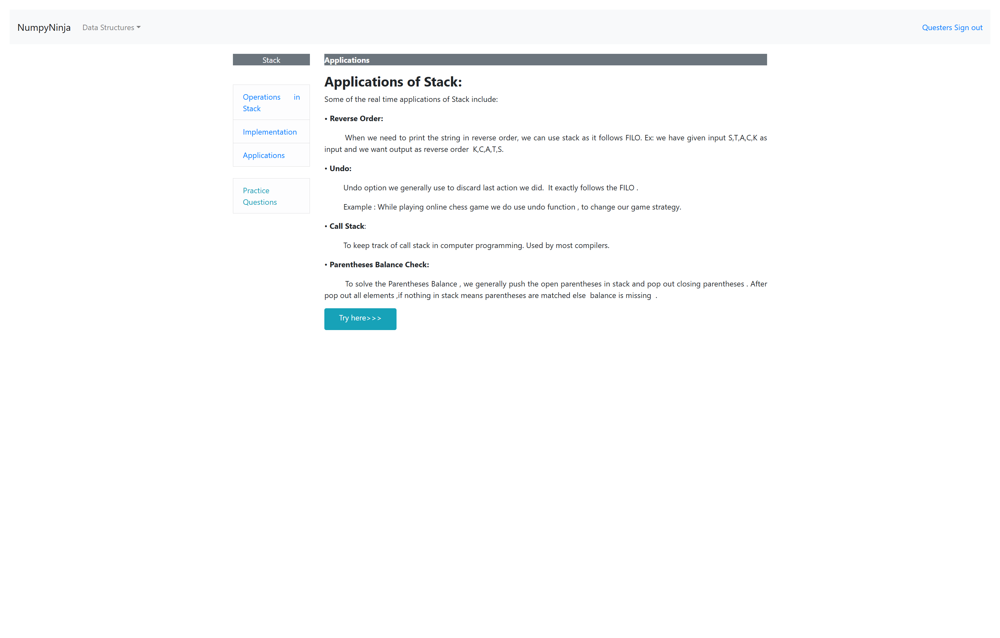PassVerify the user is able to navigate to the Operations in Tree in Tree pageGiven The user is on the DSAlgo homepage after signGiven User is on Tree PageWhen User click on Options "Tree" and 5 in Tree pageThen User should redirected to Options "Tree" and 5 in Tree pagePassVerify the user is able to navigate to the Operations in Tree in Tree pageGiven The user is on the DSAlgo homepage after signGiven User is on Tree PageWhen User click on Options "Tree" and 12 in Tree pageThen User should redirected to Options "Tree" and 12 in Tree pagePassVerify the user is able to navigate to TryEditor page from Tree OptionsGiven The user is on the DSAlgo homepage after signGiven The user is on the Tree Options "Tree" and 13 pageWhen The user click Try Here button on Tree Options pageThen The user should redirected to Try Editor of each Options -
Tree functionality
10:36:14 AM / 00:03:15:590 Fail
Tree functionality
01.28.2025 10:36:14 AM 01.28.2025 10:39:29 AM 00:03:15:590 · #test-id=5,740PassVerify that user is able to navigate to "Tree" data structure pageGiven The user is on the DSAlgo homepage after signWhen The user clicks the Getting Started button in Tree PanelThen The user be directed to Tree DataStructure PagePassVerify the user is able to navigate to the Operations in Tree in Tree pagePassVerify the user is able to navigate to the Operations in Tree in Tree pageGiven The user is on the DSAlgo homepage after signGiven User is on Tree PageWhen User click on Options "Tree" and 1 in Tree pageThen User should redirected to Options "Tree" and 1 in Tree pagePassVerify the user is able to navigate to the Operations in Tree in Tree pageGiven The user is on the DSAlgo homepage after signGiven User is on Tree PageWhen User click on Options "Tree" and 10 in Tree pageThen User should redirected to Options "Tree" and 10 in Tree pagePassVerify the user is able to navigate to TryEditor page from Tree OptionsGiven The user is on the DSAlgo homepage after signGiven The user is on the Tree Options "Tree" and 3 pageWhen The user click Try Here button on Tree Options pageThen The user should redirected to Try Editor of each OptionsPassVerify the user is able to navigate to TryEditor page from Tree OptionsGiven The user is on the DSAlgo homepage after signGiven The user is on the Tree Options "Tree" and 7 pageWhen The user click Try Here button on Tree Options pageThen The user should redirected to Try Editor of each OptionsPassVerify the user is able to navigate to TryEditor page from Tree OptionsGiven The user is on the DSAlgo homepage after signGiven The user is on the Tree Options "Tree" and 9 pageWhen The user click Try Here button on Tree Options pageThen The user should redirected to Try Editor of each OptionsPassVerify that valid and invalid python code in TryEditor TerminologiesGiven The user is on the DSAlgo homepage after signGiven The user is in TryEditor page of TerminologiesWhen The user enters code from "Invalid","tryEditor" and 2 clicks the Run buttonThen The user should see a result "alertmessageoutput","tryEditor" and 2PassVerify that valid and invalid python code in TryEditor Types of TreesGiven The user is on the DSAlgo homepage after signGiven The user is in TryEditor page of TypesOfTreesWhen The user enters code from "Invalid","tryEditor" and 2 clicks the Run buttonThen The user should see a result "alertmessageoutput","tryEditor" and 2PassVerify that valid and invalid python code in TryEditor BinaryTreesGiven The user is on the DSAlgo homepage after signGiven The user is in TryEditor page of BinaryTreesWhen The user enters code from "Invalid","tryEditor" and 2 clicks the Run buttonThen The user should see a result "alertmessageoutput","tryEditor" and 2PassVerify that valid and invalid python code in TryEditor TypesOfBinaryTreesGiven The user is on the DSAlgo homepage after signGiven The user is in TryEditor page of TypesOfBinaryTreesWhen The user enters code from "Invalid","tryEditor" and 2 clicks the Run buttonThen The user should see a result "alertmessageoutput","tryEditor" and 2PassVerify that valid and invalid python code in TryEditor ImplementationOfBSTGiven The user is on the DSAlgo homepage after signGiven The user is in TryEditor page of ImplementationOfBSTWhen The user enters code from "Invalid","tryEditor" and 2 clicks the Run buttonThen The user should see a result "alertmessageoutput","tryEditor" and 2PassVerify the user is able to navigate to TryEditor page from Tree OptionsPassVerify the user is able to navigate to TryEditor page from Tree OptionsGiven The user is on the DSAlgo homepage after signGiven The user is on the Tree Options "Tree" and 1 pageWhen The user click Try Here button on Tree Options pageThen The user should redirected to Try Editor of each OptionsPassVerify the user is able to navigate to TryEditor page from Tree OptionsGiven The user is on the DSAlgo homepage after signGiven The user is on the Tree Options "Tree" and 12 pageWhen The user click Try Here button on Tree Options pageThen The user should redirected to Try Editor of each OptionsPassVerify that valid and invalid python code in TryEditor Tree TraversalsGiven The user is on the DSAlgo homepage after signGiven The user is in TryEditor page of TreeTraversalsWhen The user enters code from "Invalid","tryEditor" and 2 clicks the Run buttonThen The user should see a result "alertmessageoutput","tryEditor" and 2PassVerify that valid and invalid python code in TryEditor ApplicationsOfBinaryTreesGiven The user is on the DSAlgo homepage after signGiven The user is in TryEditor page of ApplicationsOfBinaryTreesWhen The user enters code from "Invalid","tryEditor" and 2 clicks the Run buttonThen The user should see a result "alertmessageoutput","tryEditor" and 2PassVerify that valid and invalid python code in TryEditor Overview of TreesPassVerify that valid and invalid python code in TryEditor Overview of TreesGiven The user is on the DSAlgo homepage after signGiven The user is in TryEditor page of Overview of TreesWhen The user enters code from "Valid","tryEditor" and 1 clicks the Run buttonThen The user should see a result "successouput","tryEditor" and 1PassVerify that valid and invalid python code in TryEditor TraversalsIllustrationGiven The user is on the DSAlgo homepage after signGiven The user is in TryEditor page of TraversalsIllustrationWhen The user enters code from "Invalid","tryEditor" and 2 clicks the Run buttonThen The user should see a result "alertmessageoutput","tryEditor" and 2PassVerify that valid and invalid python code in TryEditor TerminologiesPassVerify that valid and invalid python code in TryEditor TerminologiesGiven The user is on the DSAlgo homepage after signGiven The user is in TryEditor page of TerminologiesWhen The user enters code from "Valid","tryEditor" and 1 clicks the Run buttonThen The user should see a result "successouput","tryEditor" and 1PassVerify that valid and invalid python code in TryEditor Types of TreesPassVerify that valid and invalid python code in TryEditor Types of TreesGiven The user is on the DSAlgo homepage after signGiven The user is in TryEditor page of TypesOfTreesWhen The user enters code from "Valid","tryEditor" and 1 clicks the Run buttonThen The user should see a result "successouput","tryEditor" and 1PassVerify that valid and invalid python code in TryEditor Tree TraversalsPassVerify that valid and invalid python code in TryEditor Tree TraversalsGiven The user is on the DSAlgo homepage after signGiven The user is in TryEditor page of TreeTraversalsWhen The user enters code from "Valid","tryEditor" and 1 clicks the Run buttonThen The user should see a result "successouput","tryEditor" and 1PassVerify that valid and invalid python code in TryEditor ImplementationInPythonGiven The user is on the DSAlgo homepage after signGiven The user is in TryEditor page of ImplementationInPythonWhen The user enters code from "Invalid","tryEditor" and 2 clicks the Run buttonThen The user should see a result "alertmessageoutput","tryEditor" and 2PassVerify that valid and invalid python code in TryEditor TraversalsIllustrationPassVerify that valid and invalid python code in TryEditor TraversalsIllustrationGiven The user is on the DSAlgo homepage after signGiven The user is in TryEditor page of TraversalsIllustrationWhen The user enters code from "Valid","tryEditor" and 1 clicks the Run buttonThen The user should see a result "successouput","tryEditor" and 1PassVerify that valid and invalid python code in TryEditor BinaryTreeTraversalsGiven The user is on the DSAlgo homepage after signGiven The user is in TryEditor page of BinaryTreeTraversalsWhen The user enters code from "Invalid","tryEditor" and 2 clicks the Run buttonThen The user should see a result "alertmessageoutput","tryEditor" and 2PassVerify that valid and invalid python code in TryEditor BinaryTreesPassVerify that valid and invalid python code in TryEditor BinaryTreesGiven The user is on the DSAlgo homepage after signGiven The user is in TryEditor page of BinaryTreesWhen The user enters code from "Valid","tryEditor" and 1 clicks the Run buttonThen The user should see a result "successouput","tryEditor" and 1PassVerify that valid and invalid python code in TryEditor BinarySearchTreesGiven The user is on the DSAlgo homepage after signGiven The user is in TryEditor page of BinarySearchTreesWhen The user enters code from "Invalid","tryEditor" and 2 clicks the Run buttonThen The user should see a result "alertmessageoutput","tryEditor" and 2PassVerify that valid and invalid python code in TryEditor TypesOfBinaryTreesPassVerify that valid and invalid python code in TryEditor TypesOfBinaryTreesGiven The user is on the DSAlgo homepage after signGiven The user is in TryEditor page of TypesOfBinaryTreesWhen The user enters code from "Valid","tryEditor" and 1 clicks the Run buttonThen The user should see a result "successouput","tryEditor" and 1PassVerify that valid and invalid python code in TryEditor ImplementationInPythonPassVerify that valid and invalid python code in TryEditor ImplementationInPythonGiven The user is on the DSAlgo homepage after signGiven The user is in TryEditor page of ImplementationInPythonWhen The user enters code from "Valid","tryEditor" and 1 clicks the Run buttonThen The user should see a result "successouput","tryEditor" and 1PassVerify that valid and invalid python code in TryEditor BinaryTreeTraversalsPassVerify that valid and invalid python code in TryEditor BinaryTreeTraversalsGiven The user is on the DSAlgo homepage after signGiven The user is in TryEditor page of BinaryTreeTraversalsWhen The user enters code from "Valid","tryEditor" and 1 clicks the Run buttonThen The user should see a result "successouput","tryEditor" and 1PassVerify that valid and invalid python code in TryEditor ApplicationsOfBinaryTreesPassVerify that valid and invalid python code in TryEditor ApplicationsOfBinaryTreesGiven The user is on the DSAlgo homepage after signGiven The user is in TryEditor page of ApplicationsOfBinaryTreesWhen The user enters code from "Valid","tryEditor" and 1 clicks the Run buttonThen The user should see a result "successouput","tryEditor" and 1PassVerify that valid and invalid python code in TryEditor BinarySearchTreesPassVerify that valid and invalid python code in TryEditor BinarySearchTreesGiven The user is on the DSAlgo homepage after signGiven The user is in TryEditor page of BinarySearchTreesWhen The user enters code from "Valid","tryEditor" and 1 clicks the Run buttonThen The user should see a result "successouput","tryEditor" and 1PassVerify that valid and invalid python code in TryEditor ImplementationOfBSTPassVerify that valid and invalid python code in TryEditor ImplementationOfBSTGiven The user is on the DSAlgo homepage after signGiven The user is in TryEditor page of ImplementationOfBSTWhen The user enters code from "Valid","tryEditor" and 1 clicks the Run buttonThen The user should see a result "successouput","tryEditor" and 1FailVerify that user receives error when user clicks on run button without entering code in tryeditor for Overview of TreesGiven The user is on the DSAlgo homepage after signGiven The user is on the tryeditor page of Overview of TreesWhen the user clicks the Run button of Overview of TreesThen the user should see an error messagedsAlgoHooks.Hooks.tearDown(io.cucumber.java.Scenario)Verify that user receives error when user clicks on run button without entering code in tryeditor for Overview of Trees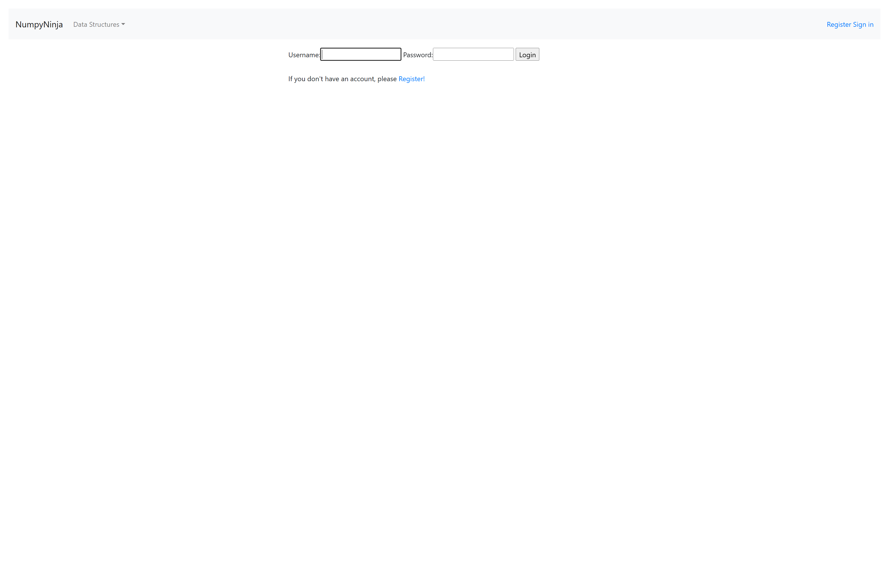PassVerify the user is in Practical Question of Overview of TreesGiven The user is on the DSAlgo homepage after signGiven The user is in Overview of Trees pageWhen The user clicks on Practice QuestionsThen User should navigate to Practice questions pageFailVerify user can see practice question listGiven The user is on the DSAlgo homepage after signGiven The user is on Overview of Trees pageWhen The user click pn Practice QuestionsThen User can see Practice Question ListdsAlgoHooks.Hooks.tearDown(io.cucumber.java.Scenario)Verify user can see practice question list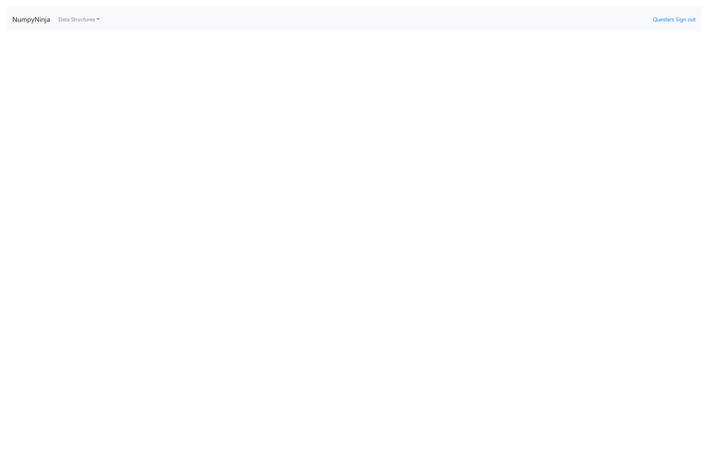
-
org.openqa.selenium.NoSuchSessionException
1 tests
org.openqa.selenium.NoSuchSessionException
1 failedStatus Timestamp TestName Fail 10:24:59 AM dsAlgoHooks.Hooks.tearDown(io.cucumber.java.Scenario) Array functionality.Verify that user receives output on submitting valid python code for "Search the array" question.dsAlgoHooks.Hooks.tearDown(io.cucumber.java.Scenario) -
org.openqa.selenium.WebDriverException
15 tests
org.openqa.selenium.WebDriverException
15 failedStatus Timestamp TestName Fail 09:30:46 AM dsAlgoHooks.Hooks.tearDown(io.cucumber.java.Scenario) Array functionality.Verify that user receives error when user clicks on run button without entering code in tryeditor for ArrayPage.dsAlgoHooks.Hooks.tearDown(io.cucumber.java.Scenario)Fail 09:37:16 AM dsAlgoHooks.Hooks.tearDown(io.cucumber.java.Scenario) LinkedList functionality.Verify the user see list of Practice Questions in Practice Questions Page of three options pages.dsAlgoHooks.Hooks.tearDown(io.cucumber.java.Scenario)Fail 09:38:36 AM dsAlgoHooks.Hooks.tearDown(io.cucumber.java.Scenario) Queue functionality.Verify that user receives error when user clicks on run button without entering code in tryeditor for Implementation of Queue in Python.dsAlgoHooks.Hooks.tearDown(io.cucumber.java.Scenario)Fail 09:54:21 AM dsAlgoHooks.Hooks.beforeScenario() Home functionality.verify that user is able to navigate to homepage when clicked on getstarted button.dsAlgoHooks.Hooks.beforeScenario()Fail 09:54:38 AM dsAlgoHooks.Hooks.beforeScenario() Home functionality.Verify that the user is able to Navigate to Login page.dsAlgoHooks.Hooks.beforeScenario()Fail 09:59:10 AM Given The user is on the DSAlgo homepage after sign LinkedList functionality.Verify that user is able to run valid Python code in Try Editor for LinkedList Page.Given The user is on the DSAlgo homepage after signFail 09:59:05 AM dsAlgoHooks.Hooks.beforeScenario() LinkedList functionality.Verify that user is able to run valid Python code in Try Editor for LinkedList Page.dsAlgoHooks.Hooks.beforeScenario()Fail 10:01:21 AM dsAlgoHooks.Hooks.tearDown(io.cucumber.java.Scenario) LinkedList functionality.Verify that user receives error when user clicks on run button without entering code in tryeditor for LinkedList Page.dsAlgoHooks.Hooks.tearDown(io.cucumber.java.Scenario)Fail 10:00:35 AM dsAlgoHooks.Hooks.beforeScenario() LinkedList functionality.Verify that user receives error when user clicks on run button without entering code in tryeditor for LinkedList Page.dsAlgoHooks.Hooks.beforeScenario()Fail 10:01:32 AM dsAlgoHooks.Hooks.tearDown(io.cucumber.java.Scenario) LinkedList functionality.Verify that user receives error when user clicks on run button without entering code in tryeditor for LinkedList Page.dsAlgoHooks.Hooks.tearDown(io.cucumber.java.Scenario)Fail 10:13:45 AM dsAlgoHooks.Hooks.tearDown(io.cucumber.java.Scenario) Stack functionality.Verify that user receives error when user clicks on run button without entering code in tryeditor for Stack Page.dsAlgoHooks.Hooks.tearDown(io.cucumber.java.Scenario)Fail 10:18:54 AM dsAlgoHooks.Hooks.beforeScenario() Tree functionality.Verify that valid and invalid python code in TryEditor Tree Traversals.dsAlgoHooks.Hooks.beforeScenario()Fail 10:21:36 AM dsAlgoHooks.Hooks.beforeScenario() Tree functionality.Verify the user is in Practical Question of Overview of Trees.dsAlgoHooks.Hooks.beforeScenario()Fail 10:22:59 AM dsAlgoHooks.Hooks.tearDown(io.cucumber.java.Scenario) Array functionality.Verify that user receives error when user clicks on run button without entering code in tryeditor for ArrayPage.dsAlgoHooks.Hooks.tearDown(io.cucumber.java.Scenario)Fail 10:33:05 AM dsAlgoHooks.Hooks.tearDown(io.cucumber.java.Scenario) Queue functionality.Verify the user see list of Practice Questions in Practice Questions Page of Queue Options.dsAlgoHooks.Hooks.tearDown(io.cucumber.java.Scenario) -
java.lang.AssertionError
94 tests
java.lang.AssertionError
94 failedStatus Timestamp TestName Fail 09:30:46 AM Then the user should see an error message Array functionality.Verify that user receives error when user clicks on run button without entering code in tryeditor for ArrayPage.Then the user should see an error messageFail 09:31:05 AM Then the user should see an error message Array functionality.Verify that user receives error when user clicks on run button without entering code in tryeditor for ArrayPage.Then the user should see an error messageFail 09:31:05 AM Then the user should see an error message Array functionality.Verify that user receives error when user clicks on run button without entering code in tryeditor for ArrayPage.Then the user should see an error messageFail 09:31:10 AM Then the user should see an error message Array functionality.Verify that user receives error when user clicks on run button without entering code in tryeditor for ArrayPage.Then the user should see an error messageFail 09:32:06 AM Then The user should able to see an error message in alert window of TimeComplexity module DataStructure functionality.Verify that user receives error when click on Run button without entering code for "Time Complexity" in "python" page.Then The user should able to see an error message in alert window of TimeComplexity moduleFail 09:32:12 AM Then the user should see list of Practice Questions in Practice Questions Page of TimeComplexity module DataStructure functionality.Verify the user see list of Practice Questions in Practice Questions Page.Then the user should see list of Practice Questions in Practice Questions Page of TimeComplexity moduleFail 09:32:40 AM Then the user should see an error message Graph functionality.Verify that user receives error when user clicks on run button without entering code in tryeditor for Graph Page.Then the user should see an error messageFail 09:32:45 AM Then the user should see an error message Graph functionality.Verify that user receives error when user clicks on run button without entering code in tryeditor for Graph Page.Then the user should see an error messageFail 09:35:58 AM Then the user should see an error message LinkedList functionality.Verify that user receives error when user clicks on run button without entering code in tryeditor for LinkedList Page.Then the user should see an error messageFail 09:36:15 AM Then the user should see an error message LinkedList functionality.Verify that user receives error when user clicks on run button without entering code in tryeditor for LinkedList Page.Then the user should see an error messageFail 09:36:16 AM Then the user should see an error message LinkedList functionality.Verify that user receives error when user clicks on run button without entering code in tryeditor for LinkedList Page.Then the user should see an error messageFail 09:36:16 AM Then the user should see an error message LinkedList functionality.Verify that user receives error when user clicks on run button without entering code in tryeditor for LinkedList Page.Then the user should see an error messageFail 09:36:16 AM Then the user should see an error message LinkedList functionality.Verify that user receives error when user clicks on run button without entering code in tryeditor for LinkedList Page.Then the user should see an error messageFail 09:36:16 AM Then the user should see an error message LinkedList functionality.Verify that user receives error when user clicks on run button without entering code in tryeditor for LinkedList Page.Then the user should see an error messageFail 09:36:23 AM Then the user should see an error message LinkedList functionality.Verify that user receives error when user clicks on run button without entering code in tryeditor for LinkedList Page.Then the user should see an error messageFail 09:36:59 AM Then the user should see list of Practice Questions in Practice Questions Page LinkedList functionality.Verify the user see list of Practice Questions in Practice Questions Page of three options pages.Then the user should see list of Practice Questions in Practice Questions PageFail 09:37:04 AM Then the user should see list of Practice Questions in Practice Questions Page LinkedList functionality.Verify the user see list of Practice Questions in Practice Questions Page of three options pages.Then the user should see list of Practice Questions in Practice Questions PageFail 09:37:04 AM Then the user should see list of Practice Questions in Practice Questions Page LinkedList functionality.Verify the user see list of Practice Questions in Practice Questions Page of three options pages.Then the user should see list of Practice Questions in Practice Questions PageFail 09:37:05 AM Then the user should see list of Practice Questions in Practice Questions Page LinkedList functionality.Verify the user see list of Practice Questions in Practice Questions Page of three options pages.Then the user should see list of Practice Questions in Practice Questions PageFail 09:37:14 AM Then the user should see list of Practice Questions in Practice Questions Page LinkedList functionality.Verify the user see list of Practice Questions in Practice Questions Page of three options pages.Then the user should see list of Practice Questions in Practice Questions PageFail 09:37:16 AM Then the user should see list of Practice Questions in Practice Questions Page LinkedList functionality.Verify the user see list of Practice Questions in Practice Questions Page of three options pages.Then the user should see list of Practice Questions in Practice Questions PageFail 09:37:49 AM Then the user should see list of Practice Questions in Practice Questions Page LinkedList functionality.Verify the user see list of Practice Questions in Practice Questions Page of three options pages.Then the user should see list of Practice Questions in Practice Questions PageFail 09:38:36 AM Then the user should see an error message Queue functionality.Verify that user receives error when user clicks on run button without entering code in tryeditor for Implementation of Queue in Python.Then the user should see an error messageFail 09:40:55 AM Then the user should see list of Practice Questions in Practice Questions Page Stack functionality.Verify the user see list of Practice Questions in Practice Questions Page of three options pages.Then the user should see list of Practice Questions in Practice Questions PageFail 09:40:59 AM Then the user should see list of Practice Questions in Practice Questions Page Stack functionality.Verify the user see list of Practice Questions in Practice Questions Page of three options pages.Then the user should see list of Practice Questions in Practice Questions PageFail 09:41:01 AM Then the user should see list of Practice Questions in Practice Questions Page Stack functionality.Verify the user see list of Practice Questions in Practice Questions Page of three options pages.Then the user should see list of Practice Questions in Practice Questions PageFail 09:41:08 AM Then the user should see an error message Stack functionality.Verify that user receives error when user clicks on run button without entering code in tryeditor for Stack Page.Then the user should see an error messageFail 09:41:10 AM Then the user should see an error message Stack functionality.Verify that user receives error when user clicks on run button without entering code in tryeditor for Stack Page.Then the user should see an error messageFail 09:41:10 AM Then the user should see an error message Stack functionality.Verify that user receives error when user clicks on run button without entering code in tryeditor for Stack Page.Then the user should see an error messageFail 09:44:26 AM Then User can see Practice Question List Tree functionality.Verify user can see practice question list.Then User can see Practice Question ListFail 09:44:28 AM Then the user should see an error message Tree functionality.Verify that user receives error when user clicks on run button without entering code in tryeditor for Overview of Trees.Then the user should see an error messageFail 09:46:37 AM Then the user should see an error message Array functionality.Verify that user receives error when user clicks on run button without entering code in tryeditor for ArrayPage.Then the user should see an error messageFail 09:47:32 AM Then the user should see an error message Array functionality.Verify that user receives error when user clicks on run button without entering code in tryeditor for ArrayPage.Then the user should see an error messageFail 09:47:32 AM Then the user should see an error message Array functionality.Verify that user receives error when user clicks on run button without entering code in tryeditor for ArrayPage.Then the user should see an error messageFail 09:47:44 AM Then the user should see an error message Array functionality.Verify that user receives error when user clicks on run button without entering code in tryeditor for ArrayPage.Then the user should see an error messageFail 09:52:38 AM Then the user should see list of Practice Questions in Practice Questions Page of TimeComplexity module DataStructure functionality.Verify the user see list of Practice Questions in Practice Questions Page.Then the user should see list of Practice Questions in Practice Questions Page of TimeComplexity moduleFail 09:52:40 AM Then The user should able to see an error message in alert window of TimeComplexity module DataStructure functionality.Verify that user receives error when click on Run button without entering code for "Time Complexity" in "python" page.Then The user should able to see an error message in alert window of TimeComplexity moduleFail 09:53:21 AM Then the user should see an error message Graph functionality.Verify that user receives error when user clicks on run button without entering code in tryeditor for Graph Page.Then the user should see an error messageFail 09:53:31 AM Then the user should see list of Practice Questions in Practice Questions Page Graph functionality.Verify the user see list of Practice Questions in Practice Questions Page.Then the user should see list of Practice Questions in Practice Questions PageFail 09:54:31 AM Then the user should see an error message Graph functionality.Verify that user receives error when user clicks on run button without entering code in tryeditor for Graph Page.Then the user should see an error messageFail 10:01:03 AM Then the user should see an error message LinkedList functionality.Verify that user receives error when user clicks on run button without entering code in tryeditor for LinkedList Page.Then the user should see an error messageFail 10:01:20 AM Then the user should see an error message LinkedList functionality.Verify that user receives error when user clicks on run button without entering code in tryeditor for LinkedList Page.Then the user should see an error messageFail 10:01:21 AM Then the user should see an error message LinkedList functionality.Verify that user receives error when user clicks on run button without entering code in tryeditor for LinkedList Page.Then the user should see an error messageFail 10:01:32 AM Then the user should see an error message LinkedList functionality.Verify that user receives error when user clicks on run button without entering code in tryeditor for LinkedList Page.Then the user should see an error messageFail 10:01:41 AM Then the user should see an error message LinkedList functionality.Verify that user receives error when user clicks on run button without entering code in tryeditor for LinkedList Page.Then the user should see an error messageFail 10:03:16 AM Then the user should see list of Practice Questions in Practice Questions Page LinkedList functionality.Verify the user see list of Practice Questions in Practice Questions Page of three options pages.Then the user should see list of Practice Questions in Practice Questions PageFail 10:03:19 AM Then the user should see list of Practice Questions in Practice Questions Page LinkedList functionality.Verify the user see list of Practice Questions in Practice Questions Page of three options pages.Then the user should see list of Practice Questions in Practice Questions PageFail 10:03:25 AM Then the user should see list of Practice Questions in Practice Questions Page LinkedList functionality.Verify the user see list of Practice Questions in Practice Questions Page of three options pages.Then the user should see list of Practice Questions in Practice Questions PageFail 10:03:27 AM Then the user should see list of Practice Questions in Practice Questions Page LinkedList functionality.Verify the user see list of Practice Questions in Practice Questions Page of three options pages.Then the user should see list of Practice Questions in Practice Questions PageFail 10:03:29 AM Then the user should see list of Practice Questions in Practice Questions Page LinkedList functionality.Verify the user see list of Practice Questions in Practice Questions Page of three options pages.Then the user should see list of Practice Questions in Practice Questions PageFail 10:04:29 AM Then the user should see list of Practice Questions in Practice Questions Page LinkedList functionality.Verify the user see list of Practice Questions in Practice Questions Page of three options pages.Then the user should see list of Practice Questions in Practice Questions PageFail 10:04:46 AM Then The user should be redirected to Implementation using array page Queue functionality.Verify that user is able to navigate to "Implementation using array" page.Then The user should be redirected to Implementation using array pageFail 10:05:00 AM Then the user should see list of Practice Questions in Practice Questions Page LinkedList functionality.Verify the user see list of Practice Questions in Practice Questions Page of three options pages.Then the user should see list of Practice Questions in Practice Questions PageFail 10:06:35 AM Then the user should see an error message Queue functionality.Verify that user receives error when user clicks on run button without entering code in tryeditor for Implementation of Queue in Python.Then the user should see an error messageFail 10:13:12 AM Then the user should see list of Practice Questions in Practice Questions Page Stack functionality.Verify the user see list of Practice Questions in Practice Questions Page of three options pages.Then the user should see list of Practice Questions in Practice Questions PageFail 10:13:17 AM Then the user should see an error message Stack functionality.Verify that user receives error when user clicks on run button without entering code in tryeditor for Stack Page.Then the user should see an error messageFail 10:13:37 AM Then the user should see list of Practice Questions in Practice Questions Page Stack functionality.Verify the user see list of Practice Questions in Practice Questions Page of three options pages.Then the user should see list of Practice Questions in Practice Questions PageFail 10:13:38 AM Then the user should see list of Practice Questions in Practice Questions Page Signin functionality.Verify the user see list of Practice Questions in Practice Questions Page of three options pages.Then the user should see list of Practice Questions in Practice Questions PageFail 10:13:42 AM Then the user should see an error message Stack functionality.Verify that user receives error when user clicks on run button without entering code in tryeditor for Stack Page.Then the user should see an error messageFail 10:13:45 AM Then the user should see an error message Stack functionality.Verify that user receives error when user clicks on run button without entering code in tryeditor for Stack Page.Then the user should see an error messageFail 10:22:04 AM Then the user should see an error message Tree functionality.Verify that user receives error when user clicks on run button without entering code in tryeditor for Overview of Trees.Then the user should see an error messageFail 10:22:04 AM Then User can see Practice Question List Tree functionality.Verify user can see practice question list.Then User can see Practice Question ListFail 10:22:59 AM Then the user should see an error message Array functionality.Verify that user receives error when user clicks on run button without entering code in tryeditor for ArrayPage.Then the user should see an error messageFail 10:23:44 AM Then the user should see an error message Array functionality.Verify that user receives error when user clicks on run button without entering code in tryeditor for ArrayPage.Then the user should see an error messageFail 10:23:44 AM Then the user should see an error message Array functionality.Verify that user receives error when user clicks on run button without entering code in tryeditor for ArrayPage.Then the user should see an error messageFail 10:23:45 AM Then the user should see an error message Array functionality.Verify that user receives error when user clicks on run button without entering code in tryeditor for ArrayPage.Then the user should see an error messageFail 10:26:03 AM Then the user should see list of Practice Questions in Practice Questions Page of TimeComplexity module DataStructure functionality.Verify the user see list of Practice Questions in Practice Questions Page.Then the user should see list of Practice Questions in Practice Questions Page of TimeComplexity moduleFail 10:26:08 AM Then The user should able to see an error message in alert window of TimeComplexity module DataStructure functionality.Verify that user receives error when click on Run button without entering code for "Time Complexity" in "python" page.Then The user should able to see an error message in alert window of TimeComplexity moduleFail 10:26:42 AM Then the user should see list of Practice Questions in Practice Questions Page Graph functionality.Verify the user see list of Practice Questions in Practice Questions Page.Then the user should see list of Practice Questions in Practice Questions PageFail 10:26:47 AM Then the user should see an error message Graph functionality.Verify that user receives error when user clicks on run button without entering code in tryeditor for Graph Page.Then the user should see an error messageFail 10:26:48 AM Then the user should see an error message Graph functionality.Verify that user receives error when user clicks on run button without entering code in tryeditor for Graph Page.Then the user should see an error messageFail 10:29:44 AM Then the user should see an error message LinkedList functionality.Verify that user receives error when user clicks on run button without entering code in tryeditor for LinkedList Page.Then the user should see an error messageFail 10:29:45 AM Then the user should see an error message LinkedList functionality.Verify that user receives error when user clicks on run button without entering code in tryeditor for LinkedList Page.Then the user should see an error messageFail 10:29:50 AM Then the user should see an error message LinkedList functionality.Verify that user receives error when user clicks on run button without entering code in tryeditor for LinkedList Page.Then the user should see an error messageFail 10:29:54 AM Then the user should see an error message LinkedList functionality.Verify that user receives error when user clicks on run button without entering code in tryeditor for LinkedList Page.Then the user should see an error messageFail 10:30:00 AM Then the user should see an error message LinkedList functionality.Verify that user receives error when user clicks on run button without entering code in tryeditor for LinkedList Page.Then the user should see an error messageFail 10:30:00 AM Then the user should see an error message LinkedList functionality.Verify that user receives error when user clicks on run button without entering code in tryeditor for LinkedList Page.Then the user should see an error messageFail 10:30:22 AM Then the user should see an error message LinkedList functionality.Verify that user receives error when user clicks on run button without entering code in tryeditor for LinkedList Page.Then the user should see an error messageFail 10:30:35 AM Then the user should see list of Practice Questions in Practice Questions Page LinkedList functionality.Verify the user see list of Practice Questions in Practice Questions Page of three options pages.Then the user should see list of Practice Questions in Practice Questions PageFail 10:30:38 AM Then the user should see list of Practice Questions in Practice Questions Page LinkedList functionality.Verify the user see list of Practice Questions in Practice Questions Page of three options pages.Then the user should see list of Practice Questions in Practice Questions PageFail 10:30:44 AM Then the user should see list of Practice Questions in Practice Questions Page LinkedList functionality.Verify the user see list of Practice Questions in Practice Questions Page of three options pages.Then the user should see list of Practice Questions in Practice Questions PageFail 10:30:44 AM Then the user should see list of Practice Questions in Practice Questions Page LinkedList functionality.Verify the user see list of Practice Questions in Practice Questions Page of three options pages.Then the user should see list of Practice Questions in Practice Questions PageFail 10:30:49 AM Then the user should see list of Practice Questions in Practice Questions Page LinkedList functionality.Verify the user see list of Practice Questions in Practice Questions Page of three options pages.Then the user should see list of Practice Questions in Practice Questions PageFail 10:30:54 AM Then the user should see list of Practice Questions in Practice Questions Page LinkedList functionality.Verify the user see list of Practice Questions in Practice Questions Page of three options pages.Then the user should see list of Practice Questions in Practice Questions PageFail 10:31:00 AM Then the user should see list of Practice Questions in Practice Questions Page LinkedList functionality.Verify the user see list of Practice Questions in Practice Questions Page of three options pages.Then the user should see list of Practice Questions in Practice Questions PageFail 10:32:19 AM Then the user should see an error message Queue functionality.Verify that user receives error when user clicks on run button without entering code in tryeditor for Implementation of Queue in Python.Then the user should see an error messageFail 10:36:05 AM Then the user should see list of Practice Questions in Practice Questions Page Signin functionality.Verify the user see list of Practice Questions in Practice Questions Page of three options pages.Then the user should see list of Practice Questions in Practice Questions PageFail 10:36:07 AM Then the user should see an error message Stack functionality.Verify that user receives error when user clicks on run button without entering code in tryeditor for Stack Page.Then the user should see an error messageFail 10:36:11 AM Then the user should see list of Practice Questions in Practice Questions Page Signin functionality.Verify the user see list of Practice Questions in Practice Questions Page of three options pages.Then the user should see list of Practice Questions in Practice Questions PageFail 10:36:14 AM Then the user should see an error message Stack functionality.Verify that user receives error when user clicks on run button without entering code in tryeditor for Stack Page.Then the user should see an error messageFail 10:36:16 AM Then the user should see list of Practice Questions in Practice Questions Page Stack functionality.Verify the user see list of Practice Questions in Practice Questions Page of three options pages.Then the user should see list of Practice Questions in Practice Questions PageFail 10:36:21 AM Then the user should see an error message Stack functionality.Verify that user receives error when user clicks on run button without entering code in tryeditor for Stack Page.Then the user should see an error messageFail 10:39:23 AM Then the user should see an error message Tree functionality.Verify that user receives error when user clicks on run button without entering code in tryeditor for Overview of Trees.Then the user should see an error messageFail 10:39:27 AM Then User can see Practice Question List Tree functionality.Verify user can see practice question list.Then User can see Practice Question List -
org.openqa.selenium.remote.UnreachableBrowserException
1 tests
org.openqa.selenium.remote.UnreachableBrowserException
1 failedStatus Timestamp TestName Fail 09:41:08 AM dsAlgoHooks.Hooks.tearDown(io.cucumber.java.Scenario) Stack functionality.Verify that user receives error when user clicks on run button without entering code in tryeditor for Stack Page.dsAlgoHooks.Hooks.tearDown(io.cucumber.java.Scenario) -
org.openqa.selenium.TimeoutException
1 tests
org.openqa.selenium.TimeoutException
1 failedStatus Timestamp TestName Fail 09:56:48 AM When the user clicks on the "Queue" option under DataStructure Home functionality.Verify the error message when the user clicks on the options under DataStructure dropdown before login.When the user clicks on the "Queue" option under DataStructure -
org.openqa.selenium.NoSuchWindowException
2 tests
org.openqa.selenium.NoSuchWindowException
2 failedStatus Timestamp TestName Fail 10:01:20 AM Given The user is on the DSAlgo homepage after sign Home functionality.Verify that user receives error when user clicks on run button without entering code in tryeditor for LinkedList Page.Given The user is on the DSAlgo homepage after signFail 10:01:31 AM dsAlgoHooks.Hooks.tearDown(io.cucumber.java.Scenario) Home functionality.Verify that user receives error when user clicks on run button without entering code in tryeditor for LinkedList Page.dsAlgoHooks.Hooks.tearDown(io.cucumber.java.Scenario) -
java.lang.NullPointerException
12 tests
java.lang.NullPointerException
12 failedStatus Timestamp TestName Fail 09:38:46 AM Given The user navigates to Queue Options " " and 1 of queue page Queue functionality.Verify the user see list of Practice Questions in Practice Questions Page of Queue Options.Given The user navigates to Queue Options "" and 1 of queue page Fail 09:38:52 AM Given The user navigates to Queue Options " " and 2 of queue page Queue functionality.Verify the user see list of Practice Questions in Practice Questions Page of Queue Options.Given The user navigates to Queue Options "" and 2 of queue page Fail 09:38:54 AM Given The user navigates to Queue Options " " and 3 of queue page Queue functionality.Verify the user see list of Practice Questions in Practice Questions Page of Queue Options.Given The user navigates to Queue Options "" and 3 of queue page Fail 09:38:59 AM Given The user navigates to Queue Options " " and 4 of queue page Queue functionality.Verify the user see list of Practice Questions in Practice Questions Page of Queue Options.Given The user navigates to Queue Options "" and 4 of queue page Fail 10:08:09 AM Given The user navigates to Queue Options " " and 4 of queue page Queue functionality.Verify the user see list of Practice Questions in Practice Questions Page of Queue Options.Given The user navigates to Queue Options "" and 4 of queue page Fail 10:08:12 AM Given The user navigates to Queue Options " " and 3 of queue page Queue functionality.Verify the user see list of Practice Questions in Practice Questions Page of Queue Options.Given The user navigates to Queue Options "" and 3 of queue page Fail 10:08:20 AM Given The user navigates to Queue Options " " and 1 of queue page Queue functionality.Verify the user see list of Practice Questions in Practice Questions Page of Queue Options.Given The user navigates to Queue Options "" and 1 of queue page Fail 10:08:30 AM Given The user navigates to Queue Options " " and 2 of queue page Queue functionality.Verify the user see list of Practice Questions in Practice Questions Page of Queue Options.Given The user navigates to Queue Options "" and 2 of queue page Fail 10:32:35 AM Given The user navigates to Queue Options " " and 1 of queue page Queue functionality.Verify the user see list of Practice Questions in Practice Questions Page of Queue Options.Given The user navigates to Queue Options "" and 1 of queue page Fail 10:32:38 AM Given The user navigates to Queue Options " " and 2 of queue page Queue functionality.Verify the user see list of Practice Questions in Practice Questions Page of Queue Options.Given The user navigates to Queue Options "" and 2 of queue page Fail 10:32:55 AM Given The user navigates to Queue Options " " and 3 of queue page Queue functionality.Verify the user see list of Practice Questions in Practice Questions Page of Queue Options.Given The user navigates to Queue Options "" and 3 of queue page Fail 10:33:04 AM Given The user navigates to Queue Options " " and 4 of queue page Queue functionality.Verify the user see list of Practice Questions in Practice Questions Page of Queue Options.Given The user navigates to Queue Options "" and 4 of queue page -
org.openqa.selenium.NoSuchElementException
7 tests
org.openqa.selenium.NoSuchElementException
7 failedStatus Timestamp TestName Fail 09:31:32 AM Then The user should see an output for question in console for "Search The Array" and 3 Array functionality.Verify that user receives output on submitting valid python code for "Search the array" question.Then The user should see an output for question in console for "Search The Array" and 3Fail 09:31:38 AM Given The user is on the DSAlgo homepage after sign Array functionality.Verify that user receives output on submitting valid python code for "Squares of a Sorted Array" question.Given The user is on the DSAlgo homepage after signFail 09:32:24 AM Given The user is on the DSAlgo homepage after sign Graph functionality.Verify the user see list of Practice Questions in Practice Questions Page.Given The user is on the DSAlgo homepage after signFail 09:49:04 AM Then The user should see an output for question in console for "Search The Array" and 3 Array functionality.Verify that user receives output on submitting valid python code for "Search the array" question.Then The user should see an output for question in console for "Search The Array" and 3Fail 09:50:29 AM Then The user should see an output for question in console for "Squares of a Sorted Array" and 3 Array functionality.Verify that user receives output on submitting valid python code for "Squares of a Sorted Array" question.Then The user should see an output for question in console for "Squares of a Sorted Array" and 3Fail 10:24:49 AM Then The user should see an output for question in console for "Search The Array" and 3 Array functionality.Verify that user receives output on submitting valid python code for "Search the array" question.Then The user should see an output for question in console for "Search The Array" and 3Fail 10:25:44 AM Then The user should see an output for question in console for "Squares of a Sorted Array" and 3 Array functionality.Verify that user receives output on submitting valid python code for "Squares of a Sorted Array" question.Then The user should see an output for question in console for "Squares of a Sorted Array" and 3
-
@Register2
3 tests
@Register2
3 passedStatus Timestamp TestName Pass 09:38:40 AM Verify that user gets error message giving username without entering password and password confirmation when clicking on Register functionality.Verify that user gets error message giving username without entering password and password confirmation when clicking onPass 10:07:02 AM Verify that user gets error message giving username without entering password and password confirmation when clicking on Register functionality.Verify that user gets error message giving username without entering password and password confirmation when clicking onPass 10:32:31 AM Verify that user gets error message giving username without entering password and password confirmation when clicking on Register functionality.Verify that user gets error message giving username without entering password and password confirmation when clicking on -
@Queue16
19 tests
@Queue16
16 passed 3 failedStatus Timestamp TestName Pass 09:38:02 AM Verify the user is able to navigate to the pratice questions on each Queue topics Queue functionality.Verify the user is able to navigate to the pratice questions on each Queue topicsPass 09:38:35 AM Verify the user is able to navigate to the pratice questions on each Queue topics Queue functionality.Verify the user is able to navigate to the pratice questions on each Queue topicsPass 09:38:36 AM Verify the user is able to navigate to the pratice questions on each Queue topics Queue functionality.Verify the user is able to navigate to the pratice questions on each Queue topicsPass 09:38:36 AM Verify the user is able to navigate to the pratice questions on each Queue topics Queue functionality.Verify the user is able to navigate to the pratice questions on each Queue topicsFail 09:38:40 AM Verify the user see list of Practice Questions in Practice Questions Page of Queue Options Queue functionality.Verify the user see list of Practice Questions in Practice Questions Page of Queue OptionsPass 10:06:47 AM Verify the user is able to navigate to the pratice questions on each Queue topics Queue functionality.Verify the user is able to navigate to the pratice questions on each Queue topicsPass 10:06:47 AM Verify the user is able to navigate to the pratice questions on each Queue topics Queue functionality.Verify the user is able to navigate to the pratice questions on each Queue topicsPass 10:06:48 AM Verify the user is able to navigate to the pratice questions on each Queue topics Queue functionality.Verify the user is able to navigate to the pratice questions on each Queue topicsPass 10:06:56 AM Verify the user is able to navigate to the pratice questions on each Queue topics LinkedList functionality.Verify the user is able to navigate to the pratice questions on each Queue topicsPass 10:11:11 AM Verify that user is able to navigate to the try Editor page from different options in Stack Page Stack functionality.Verify that user is able to navigate to the try Editor page from different options in Stack PageFail 10:12:31 AM Verify the user see list of Practice Questions in Practice Questions Page of three options pages Stack functionality.Verify the user see list of Practice Questions in Practice Questions Page of three options pagesPass 10:13:46 AM Verify the user is able to navigate to the Operations in Tree in Tree page Stack functionality.Verify the user is able to navigate to the Operations in Tree in Tree pagePass 10:15:31 AM Verify the user is able to navigate to TryEditor page from Tree Options Stack functionality.Verify the user is able to navigate to TryEditor page from Tree OptionsPass 10:17:10 AM Verify the user is able to navigate to TryEditor page from Tree Options Stack functionality.Verify the user is able to navigate to TryEditor page from Tree OptionsPass 10:31:47 AM Verify the user is able to navigate to the pratice questions on each Queue topics Queue functionality.Verify the user is able to navigate to the pratice questions on each Queue topicsPass 10:31:51 AM Verify the user is able to navigate to the pratice questions on each Queue topics Queue functionality.Verify the user is able to navigate to the pratice questions on each Queue topicsPass 10:31:51 AM Verify the user is able to navigate to the pratice questions on each Queue topics Queue functionality.Verify the user is able to navigate to the pratice questions on each Queue topicsPass 10:31:52 AM Verify the user is able to navigate to the pratice questions on each Queue topics LinkedList functionality.Verify the user is able to navigate to the pratice questions on each Queue topicsFail 10:32:30 AM Verify the user see list of Practice Questions in Practice Questions Page of Queue Options Queue functionality.Verify the user see list of Practice Questions in Practice Questions Page of Queue Options -
@DataStructure3
3 tests
@DataStructure3
3 passedStatus Timestamp TestName Pass 09:31:53 AM Verify that user is able to navigate to "Try Editor" Page for Time Complexity page DataStructure functionality.Verify that user is able to navigate to "Try Editor" Page for Time Complexity pagePass 09:49:23 AM Verify that user is able to navigate to "Try Editor" Page for Time Complexity page DataStructure functionality.Verify that user is able to navigate to "Try Editor" Page for Time Complexity pagePass 10:24:56 AM Verify that user is able to navigate to "Try Editor" Page for Time Complexity page DataStructure functionality.Verify that user is able to navigate to "Try Editor" Page for Time Complexity page -
@Array15
11 tests
@Array15
11 passedStatus Timestamp TestName Pass 09:31:28 AM Verify that user receives error on running Invalid python code for "Max Consecutive Ones" question Array functionality.Verify that user receives error on running Invalid python code for "Max Consecutive Ones" questionPass 09:33:09 AM Verify the error message when the user clicks on the options under DataStructure dropdown before login Home functionality.Verify the error message when the user clicks on the options under DataStructure dropdown before loginPass 09:33:42 AM Verify that user is able to navigate to the try Editor page from different options in Stack Page Home functionality.Verify that user is able to navigate to the try Editor page from different options in Stack PagePass 09:33:53 AM Verify that user is able to navigate to the try Editor page from different options in Stack Page Home functionality.Verify that user is able to navigate to the try Editor page from different options in Stack PagePass 09:34:26 AM Verify that user is able to run valid Python code in Try Editor for LinkedList Page Home functionality.Verify that user is able to run valid Python code in Try Editor for LinkedList PagePass 09:47:56 AM Verify that user receives error on running Invalid python code for "Max Consecutive Ones" question Array functionality.Verify that user receives error on running Invalid python code for "Max Consecutive Ones" questionPass 09:51:00 AM Verify that user is able to run Python code in Try Editor for DataStructure Page DataStructure functionality.Verify that user is able to run Python code in Try Editor for DataStructure PagePass 09:53:56 AM Verify the user is able to navigate to the options under DataStructure DropDown from Graph page Graph functionality.Verify the user is able to navigate to the options under DataStructure DropDown from Graph pagePass 09:54:44 AM Verify the error message when the user clicks on the GetStarted button under all the options in Home Page without signing in Graph functionality.Verify the error message when the user clicks on the GetStarted button under all the options in Home Page without signing inPass 09:55:44 AM Verify the error message when the user clicks on the options under DataStructure dropdown before login Graph functionality.Verify the error message when the user clicks on the options under DataStructure dropdown before loginPass 10:23:58 AM Verify that user receives error on running Invalid python code for "Max Consecutive Ones" question Array functionality.Verify that user receives error on running Invalid python code for "Max Consecutive Ones" question -
@DataStructure2
3 tests
@DataStructure2
3 passedStatus Timestamp TestName Pass 09:31:53 AM Verify that user is able to navigate to "Time Complexity" Page DataStructure functionality.Verify that user is able to navigate to "Time Complexity" PagePass 09:49:21 AM Verify that user is able to navigate to "Time Complexity" Page DataStructure functionality.Verify that user is able to navigate to "Time Complexity" PagePass 10:24:55 AM Verify that user is able to navigate to "Time Complexity" Page DataStructure functionality.Verify that user is able to navigate to "Time Complexity" Page -
@graph8
3 tests
@graph8
3 failedStatus Timestamp TestName Fail 09:32:19 AM Verify the user see list of Practice Questions in Practice Questions Page Graph functionality.Verify the user see list of Practice Questions in Practice Questions PageFail 09:52:39 AM Verify the user see list of Practice Questions in Practice Questions Page Graph functionality.Verify the user see list of Practice Questions in Practice Questions PageFail 10:26:16 AM Verify the user see list of Practice Questions in Practice Questions Page Graph functionality.Verify the user see list of Practice Questions in Practice Questions Page -
@Array21
6 tests
@Array21
6 passedStatus Timestamp TestName Pass 09:31:31 AM Verify that user receives error on running Invalid python code for "Squares of a Sorted Array" question Array functionality.Verify that user receives error on running Invalid python code for "Squares of a Sorted Array" questionPass 09:49:20 AM Verify that user receives error on running Invalid python code for "Squares of a Sorted Array" question Array functionality.Verify that user receives error on running Invalid python code for "Squares of a Sorted Array" questionPass 09:55:37 AM Verify the error message when the user clicks on the GetStarted button under all the options in Home Page without signing in Home functionality.Verify the error message when the user clicks on the GetStarted button under all the options in Home Page without signing inPass 10:24:54 AM Verify that user receives error on running Invalid python code for "Squares of a Sorted Array" question Array functionality.Verify that user receives error on running Invalid python code for "Squares of a Sorted Array" questionPass 10:26:22 AM Verify that user is able to run valid Python code in Try Editor for Graph Representation Page Graph functionality.Verify that user is able to run valid Python code in Try Editor for Graph Representation PagePass 10:27:16 AM Verify the error message when the user clicks on the GetStarted button under all the options in Home Page without signing in Home functionality.Verify the error message when the user clicks on the GetStarted button under all the options in Home Page without signing in -
@signin8
12 tests
@signin8
11 passed 1 failedStatus Timestamp TestName Pass 09:39:40 AM Verify the user gets error message entering username and without entering Password when clicking on login button Signin functionality.Verify the user gets error message entering username and without entering Password when clicking on login buttonPass 09:39:59 AM Verify that user is able to navigate to the try Editor page from different options in Stack Page Signin functionality.Verify that user is able to navigate to the try Editor page from different options in Stack PagePass 10:10:11 AM Verify the user gets error message entering username and without entering Password when clicking on login button Signin functionality.Verify the user gets error message entering username and without entering Password when clicking on login buttonPass 10:11:13 AM Verify that user is able to run valid Python code in Try Editor for Stack Page Signin functionality.Verify that user is able to run valid Python code in Try Editor for Stack PageFail 10:12:30 AM Verify the user see list of Practice Questions in Practice Questions Page of three options pages Signin functionality.Verify the user see list of Practice Questions in Practice Questions Page of three options pagesPass 10:13:46 AM Verify the user is able to navigate to the Operations in Tree in Tree page Signin functionality.Verify the user is able to navigate to the Operations in Tree in Tree pagePass 10:15:36 AM Verify the user is able to navigate to TryEditor page from Tree Options Signin functionality.Verify the user is able to navigate to TryEditor page from Tree OptionsPass 10:17:14 AM Verify the user is able to navigate to TryEditor page from Tree Options Signin functionality.Verify the user is able to navigate to TryEditor page from Tree OptionsPass 10:18:55 AM Verify that valid and invalid python code in TryEditor BinaryTrees Signin functionality.Verify that valid and invalid python code in TryEditor BinaryTreesPass 10:20:20 AM Verify that valid and invalid python code in TryEditor ApplicationsOfBinaryTrees Signin functionality.Verify that valid and invalid python code in TryEditor ApplicationsOfBinaryTreesPass 10:33:35 AM Verify the user gets error message entering username and without entering Password when clicking on login button Signin functionality.Verify the user gets error message entering username and without entering Password when clicking on login buttonPass 10:34:07 AM Verify that user is able to navigate to the try Editor page from different options in Stack Page Signin functionality.Verify that user is able to navigate to the try Editor page from different options in Stack Page -
@stack2
13 tests
@stack2
13 passedStatus Timestamp TestName Pass 09:39:50 AM Verify the user is able to navigate to the Operations in Stack in Stack page Stack functionality.Verify the user is able to navigate to the Operations in Stack in Stack pagePass 09:39:50 AM Verify the user is able to navigate to the Operations in Stack in Stack page Stack functionality.Verify the user is able to navigate to the Operations in Stack in Stack pagePass 09:39:54 AM Verify the user is able to navigate to the Operations in Stack in Stack page Signin functionality.Verify the user is able to navigate to the Operations in Stack in Stack pagePass 10:10:12 AM Verify the user is able to navigate to the Operations in Stack in Stack page Stack functionality.Verify the user is able to navigate to the Operations in Stack in Stack pagePass 10:10:12 AM Verify the user is able to navigate to the Operations in Stack in Stack page Register functionality.Verify the user is able to navigate to the Operations in Stack in Stack pagePass 10:10:52 AM Verify the user is able to navigate to the Operations in Stack in Stack page Signin functionality.Verify the user is able to navigate to the Operations in Stack in Stack pagePass 10:11:17 AM Verify that user is able to run valid Python code in Try Editor for Stack Page Stack functionality.Verify that user is able to run valid Python code in Try Editor for Stack PagePass 10:13:46 AM Verify the user is able to navigate to the Operations in Tree in Tree page Tree functionality.Verify the user is able to navigate to the Operations in Tree in Tree pagePass 10:15:36 AM Verify the user is able to navigate to TryEditor page from Tree Options Tree functionality.Verify the user is able to navigate to TryEditor page from Tree OptionsPass 10:17:14 AM Verify the user is able to navigate to TryEditor page from Tree Options Tree functionality.Verify the user is able to navigate to TryEditor page from Tree OptionsPass 10:33:39 AM Verify the user is able to navigate to the Operations in Stack in Stack page Stack functionality.Verify the user is able to navigate to the Operations in Stack in Stack pagePass 10:33:42 AM Verify the user is able to navigate to the Operations in Stack in Stack page Signin functionality.Verify the user is able to navigate to the Operations in Stack in Stack pagePass 10:33:42 AM Verify the user is able to navigate to the Operations in Stack in Stack page Signin functionality.Verify the user is able to navigate to the Operations in Stack in Stack page -
@Queue03
3 tests
@Queue03
3 passedStatus Timestamp TestName Pass 09:37:19 AM Verify that user is able to navigate to "try Editor" page for "Implementation of Queue in Python" page Queue functionality.Verify that user is able to navigate to "try Editor" page for "Implementation of Queue in Python" pagePass 10:03:32 AM Verify that user is able to navigate to "try Editor" page for "Implementation of Queue in Python" page Queue functionality.Verify that user is able to navigate to "try Editor" page for "Implementation of Queue in Python" pagePass 10:30:41 AM Verify that user is able to navigate to "try Editor" page for "Implementation of Queue in Python" page Queue functionality.Verify that user is able to navigate to "try Editor" page for "Implementation of Queue in Python" page -
@stack7
12 tests
@stack7
12 passedStatus Timestamp TestName Pass 09:40:32 AM Verify the user is able to navigate to the Practice Questions mentioned under three options pages Stack functionality.Verify the user is able to navigate to the Practice Questions mentioned under three options pagesPass 09:40:32 AM Verify the user is able to navigate to the Practice Questions mentioned under three options pages Stack functionality.Verify the user is able to navigate to the Practice Questions mentioned under three options pagesPass 09:40:34 AM Verify the user is able to navigate to the Practice Questions mentioned under three options pages Signin functionality.Verify the user is able to navigate to the Practice Questions mentioned under three options pagesPass 10:12:11 AM Verify the user is able to navigate to the Practice Questions mentioned under three options pages Stack functionality.Verify the user is able to navigate to the Practice Questions mentioned under three options pagesPass 10:12:11 AM Verify the user is able to navigate to the Practice Questions mentioned under three options pages Stack functionality.Verify the user is able to navigate to the Practice Questions mentioned under three options pagesPass 10:12:29 AM Verify the user is able to navigate to the Practice Questions mentioned under three options pages Signin functionality.Verify the user is able to navigate to the Practice Questions mentioned under three options pagesPass 10:35:39 AM Verify the user is able to navigate to the Practice Questions mentioned under three options pages Stack functionality.Verify the user is able to navigate to the Practice Questions mentioned under three options pagesPass 10:35:39 AM Verify the user is able to navigate to the Practice Questions mentioned under three options pages Signin functionality.Verify the user is able to navigate to the Practice Questions mentioned under three options pagesPass 10:35:39 AM Verify the user is able to navigate to the Practice Questions mentioned under three options pages Stack functionality.Verify the user is able to navigate to the Practice Questions mentioned under three options pagesPass 10:36:19 AM Verify the user is able to navigate to the Operations in Tree in Tree page Stack functionality.Verify the user is able to navigate to the Operations in Tree in Tree pagePass 10:36:50 AM Verify the user is able to navigate to the Operations in Tree in Tree page Stack functionality.Verify the user is able to navigate to the Operations in Tree in Tree pagePass 10:37:22 AM Verify the user is able to navigate to TryEditor page from Tree Options Stack functionality.Verify the user is able to navigate to TryEditor page from Tree Options -
@Register7
3 tests
@Register7
3 passedStatus Timestamp TestName Pass 09:38:58 AM Verify that user gets error message giving invalid username like %,$,& (Example: Tom$, Tom%) when clicking on register Register functionality.Verify that user gets error message giving invalid username like %,$,& (Example: Tom$, Tom%) when clicking on registerPass 10:08:34 AM Verify that user gets error message giving invalid username like %,$,& (Example: Tom$, Tom%) when clicking on register Register functionality.Verify that user gets error message giving invalid username like %,$,& (Example: Tom$, Tom%) when clicking on registerPass 10:32:43 AM Verify that user gets error message giving invalid username like %,$,& (Example: Tom$, Tom%) when clicking on register Register functionality.Verify that user gets error message giving invalid username like %,$,& (Example: Tom$, Tom%) when clicking on register -
@signin4
4 tests
@signin4
4 passedStatus Timestamp TestName Pass 09:39:34 AM Verify the user should not able to login giving valid username and Invalid password when clicking on login button Signin functionality.Verify the user should not able to login giving valid username and Invalid password when clicking on login buttonPass 10:10:05 AM Verify the user should not able to login giving valid username and Invalid password when clicking on login button Signin functionality.Verify the user should not able to login giving valid username and Invalid password when clicking on login buttonPass 10:10:52 AM Verify the user is able to navigate to the Operations in Stack in Stack page Signin functionality.Verify the user is able to navigate to the Operations in Stack in Stack pagePass 10:33:31 AM Verify the user should not able to login giving valid username and Invalid password when clicking on login button Signin functionality.Verify the user should not able to login giving valid username and Invalid password when clicking on login button -
@Array18
10 tests
@Array18
9 passed 1 failedStatus Timestamp TestName Pass 09:31:30 AM Verify that user receives error on running Invalid python code for "Find Numbers with Even Number" question Array functionality.Verify that user receives error on running Invalid python code for "Find Numbers with Even Number" questionPass 09:48:56 AM Verify that user receives error on running Invalid python code for "Find Numbers with Even Number" question Array functionality.Verify that user receives error on running Invalid python code for "Find Numbers with Even Number" questionPass 09:53:56 AM Verify the user is able to navigate to the options under DataStructure DropDown from Graph page Graph functionality.Verify the user is able to navigate to the options under DataStructure DropDown from Graph pagePass 09:55:36 AM Verify the error message when the user clicks on the GetStarted button under all the options in Home Page without signing in Home functionality.Verify the error message when the user clicks on the GetStarted button under all the options in Home Page without signing inPass 09:57:32 AM Verify that user is able to navigate to the try Editor page from different options in Stack Page LinkedList functionality.Verify that user is able to navigate to the try Editor page from different options in Stack PagePass 09:58:22 AM Verify that user is able to run valid Python code in Try Editor for LinkedList Page LinkedList functionality.Verify that user is able to run valid Python code in Try Editor for LinkedList PagePass 09:59:58 AM Verify that user is able to run valid Python code in Try Editor for LinkedList Page LinkedList functionality.Verify that user is able to run valid Python code in Try Editor for LinkedList PagePass 10:01:23 AM Verify the user is able to navigate to the Practice Questions mentioned under Seven options of LinkedList LinkedList functionality.Verify the user is able to navigate to the Practice Questions mentioned under Seven options of LinkedListFail 10:02:43 AM Verify the user see list of Practice Questions in Practice Questions Page of three options pages LinkedList functionality.Verify the user see list of Practice Questions in Practice Questions Page of three options pagesPass 10:24:53 AM Verify that user receives error on running Invalid python code for "Find Numbers with Even Number" question Array functionality.Verify that user receives error on running Invalid python code for "Find Numbers with Even Number" question -
@DataStructure6
3 tests
@DataStructure6
3 passedStatus Timestamp TestName Pass 09:31:55 AM Verify the user is able to navigate to the Practice Questions for "Time Complexity" in "python" page DataStructure functionality.Verify the user is able to navigate to the Practice Questions for "Time Complexity" in "python" pagePass 09:51:04 AM Verify the user is able to navigate to the Practice Questions for "Time Complexity" in "python" page DataStructure functionality.Verify the user is able to navigate to the Practice Questions for "Time Complexity" in "python" pagePass 10:25:43 AM Verify the user is able to navigate to the Practice Questions for "Time Complexity" in "python" page DataStructure functionality.Verify the user is able to navigate to the Practice Questions for "Time Complexity" in "python" page -
@LL9
21 tests
@LL9
21 passedStatus Timestamp TestName Pass 09:33:36 AM Verify that user is able to navigate to the try Editor page from different options in Stack Page LinkedList functionality.Verify that user is able to navigate to the try Editor page from different options in Stack PagePass 09:33:37 AM Verify that user is able to navigate to the try Editor page from different options in Stack Page LinkedList functionality.Verify that user is able to navigate to the try Editor page from different options in Stack PagePass 09:33:42 AM Verify that user is able to navigate to the try Editor page from different options in Stack Page LinkedList functionality.Verify that user is able to navigate to the try Editor page from different options in Stack PagePass 09:33:42 AM Verify that user is able to navigate to the try Editor page from different options in Stack Page Home functionality.Verify that user is able to navigate to the try Editor page from different options in Stack PagePass 09:33:51 AM Verify that user is able to navigate to the try Editor page from different options in Stack Page LinkedList functionality.Verify that user is able to navigate to the try Editor page from different options in Stack PagePass 09:33:52 AM Verify that user is able to navigate to the try Editor page from different options in Stack Page LinkedList functionality.Verify that user is able to navigate to the try Editor page from different options in Stack PagePass 09:33:53 AM Verify that user is able to navigate to the try Editor page from different options in Stack Page Home functionality.Verify that user is able to navigate to the try Editor page from different options in Stack PagePass 09:57:15 AM Verify that user is able to navigate to the try Editor page from different options in Stack Page LinkedList functionality.Verify that user is able to navigate to the try Editor page from different options in Stack PagePass 09:57:31 AM Verify that user is able to navigate to the try Editor page from different options in Stack Page LinkedList functionality.Verify that user is able to navigate to the try Editor page from different options in Stack PagePass 09:57:31 AM Verify that user is able to navigate to the try Editor page from different options in Stack Page LinkedList functionality.Verify that user is able to navigate to the try Editor page from different options in Stack PagePass 09:57:32 AM Verify that user is able to navigate to the try Editor page from different options in Stack Page LinkedList functionality.Verify that user is able to navigate to the try Editor page from different options in Stack PagePass 09:57:38 AM Verify that user is able to navigate to the try Editor page from different options in Stack Page LinkedList functionality.Verify that user is able to navigate to the try Editor page from different options in Stack PagePass 09:57:46 AM Verify that user is able to navigate to the try Editor page from different options in Stack Page LinkedList functionality.Verify that user is able to navigate to the try Editor page from different options in Stack PagePass 09:57:48 AM Verify that user is able to navigate to the try Editor page from different options in Stack Page LinkedList functionality.Verify that user is able to navigate to the try Editor page from different options in Stack PagePass 10:27:59 AM Verify that user is able to navigate to the try Editor page from different options in Stack Page LinkedList functionality.Verify that user is able to navigate to the try Editor page from different options in Stack PagePass 10:28:00 AM Verify that user is able to navigate to the try Editor page from different options in Stack Page Graph functionality.Verify that user is able to navigate to the try Editor page from different options in Stack PagePass 10:28:01 AM Verify that user is able to navigate to the try Editor page from different options in Stack Page LinkedList functionality.Verify that user is able to navigate to the try Editor page from different options in Stack PagePass 10:28:02 AM Verify that user is able to navigate to the try Editor page from different options in Stack Page LinkedList functionality.Verify that user is able to navigate to the try Editor page from different options in Stack PagePass 10:28:04 AM Verify that user is able to navigate to the try Editor page from different options in Stack Page LinkedList functionality.Verify that user is able to navigate to the try Editor page from different options in Stack PagePass 10:28:04 AM Verify that user is able to navigate to the try Editor page from different options in Stack Page LinkedList functionality.Verify that user is able to navigate to the try Editor page from different options in Stack PagePass 10:28:10 AM Verify that user is able to navigate to the try Editor page from different options in Stack Page LinkedList functionality.Verify that user is able to navigate to the try Editor page from different options in Stack Page -
@stack1
3 tests
@stack1
3 passedStatus Timestamp TestName Pass 09:39:49 AM Verify that the user can navigate to the Stack page after signin Stack functionality.Verify that the user can navigate to the Stack page after signinPass 10:10:12 AM Verify that the user can navigate to the Stack page after signin Stack functionality.Verify that the user can navigate to the Stack page after signinPass 10:33:37 AM Verify that the user can navigate to the Stack page after signin Stack functionality.Verify that the user can navigate to the Stack page after signin -
@graph15
20 tests
@graph15
20 passedStatus Timestamp TestName Pass 09:32:29 AM Verify the user is able to navigate to the options under DataStructure DropDown from Graph page Graph functionality.Verify the user is able to navigate to the options under DataStructure DropDown from Graph pagePass 09:32:32 AM Verify the user is able to navigate to the options under DataStructure DropDown from Graph page Graph functionality.Verify the user is able to navigate to the options under DataStructure DropDown from Graph pagePass 09:32:45 AM Verify the user is able to navigate to the options under DataStructure DropDown from Graph page Graph functionality.Verify the user is able to navigate to the options under DataStructure DropDown from Graph pagePass 09:32:48 AM Verify the user is able to navigate to the options under DataStructure DropDown from Graph page Graph functionality.Verify the user is able to navigate to the options under DataStructure DropDown from Graph pagePass 09:32:50 AM Verify the user is able to navigate to the options under DataStructure DropDown from Graph page Graph functionality.Verify the user is able to navigate to the options under DataStructure DropDown from Graph pagePass 09:32:50 AM Verify the user is able to navigate to the options under DataStructure DropDown from Graph page Graph functionality.Verify the user is able to navigate to the options under DataStructure DropDown from Graph pagePass 09:53:53 AM Verify the user is able to navigate to the options under DataStructure DropDown from Graph page Graph functionality.Verify the user is able to navigate to the options under DataStructure DropDown from Graph pagePass 09:53:56 AM Verify the user is able to navigate to the options under DataStructure DropDown from Graph page Graph functionality.Verify the user is able to navigate to the options under DataStructure DropDown from Graph pagePass 09:53:56 AM Verify the user is able to navigate to the options under DataStructure DropDown from Graph page Graph functionality.Verify the user is able to navigate to the options under DataStructure DropDown from Graph pagePass 09:53:58 AM Verify the user is able to navigate to the options under DataStructure DropDown from Graph page Graph functionality.Verify the user is able to navigate to the options under DataStructure DropDown from Graph pagePass 09:54:18 AM Verify the user is able to navigate to the options under DataStructure DropDown from Graph page Graph functionality.Verify the user is able to navigate to the options under DataStructure DropDown from Graph pagePass 09:54:18 AM Verify the user is able to navigate to the options under DataStructure DropDown from Graph page Graph functionality.Verify the user is able to navigate to the options under DataStructure DropDown from Graph pagePass 10:26:23 AM Verify the user is able to navigate to the options under DataStructure DropDown from Graph page Graph functionality.Verify the user is able to navigate to the options under DataStructure DropDown from Graph pagePass 10:26:33 AM Verify the user is able to navigate to the options under DataStructure DropDown from Graph page Graph functionality.Verify the user is able to navigate to the options under DataStructure DropDown from Graph pagePass 10:26:44 AM Verify the user is able to navigate to the options under DataStructure DropDown from Graph page Graph functionality.Verify the user is able to navigate to the options under DataStructure DropDown from Graph pagePass 10:26:49 AM Verify the user is able to navigate to the options under DataStructure DropDown from Graph page Graph functionality.Verify the user is able to navigate to the options under DataStructure DropDown from Graph pagePass 10:26:51 AM Verify the user is able to navigate to the options under DataStructure DropDown from Graph page Graph functionality.Verify the user is able to navigate to the options under DataStructure DropDown from Graph pagePass 10:26:55 AM Verify the user is able to navigate to the options under DataStructure DropDown from Graph page Graph functionality.Verify the user is able to navigate to the options under DataStructure DropDown from Graph pagePass 10:27:06 AM Verify the error message when the user clicks on the GetStarted button under all the options in Home Page without signing in Graph functionality.Verify the error message when the user clicks on the GetStarted button under all the options in Home Page without signing inPass 10:27:24 AM Verify the error message when the user clicks on the options under DataStructure dropdown before login Graph functionality.Verify the error message when the user clicks on the options under DataStructure dropdown before login -
@Home4
3 tests
@Home4
2 passed 1 failedStatus Timestamp TestName Pass 09:32:52 AM Verify that the user is able to Navigate to Login page Home functionality.Verify that the user is able to Navigate to Login pageFail 09:54:38 AM Verify that the user is able to Navigate to Login page Home functionality.Verify that the user is able to Navigate to Login pagePass 10:26:59 AM Verify that the user is able to Navigate to Login page Home functionality.Verify that the user is able to Navigate to Login page -
@stack3
16 tests
@stack3
15 passed 1 failedStatus Timestamp TestName Pass 09:39:55 AM Verify that user is able to navigate to the try Editor page from different options in Stack Page Stack functionality.Verify that user is able to navigate to the try Editor page from different options in Stack PagePass 09:39:59 AM Verify that user is able to navigate to the try Editor page from different options in Stack Page Signin functionality.Verify that user is able to navigate to the try Editor page from different options in Stack PagePass 09:39:59 AM Verify that user is able to navigate to the try Editor page from different options in Stack Page Signin functionality.Verify that user is able to navigate to the try Editor page from different options in Stack PagePass 09:40:32 AM Verify the user is able to navigate to the Practice Questions mentioned under three options pages Stack functionality.Verify the user is able to navigate to the Practice Questions mentioned under three options pagesFail 09:40:54 AM Verify that user receives error when user clicks on run button without entering code in tryeditor for Stack Page Stack functionality.Verify that user receives error when user clicks on run button without entering code in tryeditor for Stack PagePass 09:41:13 AM Verify the user is able to navigate to the Operations in Tree in Tree page Stack functionality.Verify the user is able to navigate to the Operations in Tree in Tree pagePass 09:41:31 AM Verify the user is able to navigate to TryEditor page from Tree Options Stack functionality.Verify the user is able to navigate to TryEditor page from Tree OptionsPass 10:10:53 AM Verify that user is able to navigate to the try Editor page from different options in Stack Page Stack functionality.Verify that user is able to navigate to the try Editor page from different options in Stack PagePass 10:11:07 AM Verify that user is able to navigate to the try Editor page from different options in Stack Page Signin functionality.Verify that user is able to navigate to the try Editor page from different options in Stack PagePass 10:11:11 AM Verify that user is able to navigate to the try Editor page from different options in Stack Page Stack functionality.Verify that user is able to navigate to the try Editor page from different options in Stack PagePass 10:12:11 AM Verify the user is able to navigate to the Practice Questions mentioned under three options pages Stack functionality.Verify the user is able to navigate to the Practice Questions mentioned under three options pagesPass 10:13:33 AM Verify the user is able to navigate to the Operations in Tree in Tree page Stack functionality.Verify the user is able to navigate to the Operations in Tree in Tree pagePass 10:15:06 AM Verify the user is able to navigate to the Operations in Tree in Tree page Stack functionality.Verify the user is able to navigate to the Operations in Tree in Tree pagePass 10:34:06 AM Verify that user is able to navigate to the try Editor page from different options in Stack Page Stack functionality.Verify that user is able to navigate to the try Editor page from different options in Stack PagePass 10:34:07 AM Verify that user is able to navigate to the try Editor page from different options in Stack Page Signin functionality.Verify that user is able to navigate to the try Editor page from different options in Stack PagePass 10:34:07 AM Verify that user is able to navigate to the try Editor page from different options in Stack Page Signin functionality.Verify that user is able to navigate to the try Editor page from different options in Stack Page -
@Tree17
3 tests
@Tree17
2 passed 1 failedStatus Timestamp TestName Pass 09:43:54 AM Verify the user is in Practical Question of Overview of Trees Tree functionality.Verify the user is in Practical Question of Overview of TreesFail 10:21:36 AM Verify the user is in Practical Question of Overview of Trees Tree functionality.Verify the user is in Practical Question of Overview of TreesPass 10:39:11 AM Verify the user is in Practical Question of Overview of Trees Tree functionality.Verify the user is in Practical Question of Overview of Trees -
@Register5
3 tests
@Register5
3 passedStatus Timestamp TestName Pass 09:38:57 AM Verify that user gets error message giving username and entering password and password confirmation different when Register functionality.Verify that user gets error message giving username and entering password and password confirmation different whenPass 10:08:31 AM Verify that user gets error message giving username and entering password and password confirmation different when Register functionality.Verify that user gets error message giving username and entering password and password confirmation different whenPass 10:32:33 AM Verify that user gets error message giving username and entering password and password confirmation different when Register functionality.Verify that user gets error message giving username and entering password and password confirmation different when -
@Home6
24 tests
@Home6
24 passedStatus Timestamp TestName Pass 09:33:01 AM Verify the error message when the user clicks on the GetStarted button under all the options in Home Page without signing in Home functionality.Verify the error message when the user clicks on the GetStarted button under all the options in Home Page without signing inPass 09:33:01 AM Verify the error message when the user clicks on the GetStarted button under all the options in Home Page without signing in Home functionality.Verify the error message when the user clicks on the GetStarted button under all the options in Home Page without signing inPass 09:33:05 AM Verify the error message when the user clicks on the GetStarted button under all the options in Home Page without signing in Graph functionality.Verify the error message when the user clicks on the GetStarted button under all the options in Home Page without signing inPass 09:33:07 AM Verify the error message when the user clicks on the GetStarted button under all the options in Home Page without signing in Graph functionality.Verify the error message when the user clicks on the GetStarted button under all the options in Home Page without signing inPass 09:33:07 AM Verify the error message when the user clicks on the GetStarted button under all the options in Home Page without signing in Graph functionality.Verify the error message when the user clicks on the GetStarted button under all the options in Home Page without signing inPass 09:33:08 AM Verify the error message when the user clicks on the GetStarted button under all the options in Home Page without signing in Home functionality.Verify the error message when the user clicks on the GetStarted button under all the options in Home Page without signing inPass 09:33:08 AM Verify the error message when the user clicks on the GetStarted button under all the options in Home Page without signing in Home functionality.Verify the error message when the user clicks on the GetStarted button under all the options in Home Page without signing inPass 09:33:10 AM Verify the error message when the user clicks on the options under DataStructure dropdown before login Home functionality.Verify the error message when the user clicks on the options under DataStructure dropdown before loginPass 09:54:42 AM Verify the error message when the user clicks on the GetStarted button under all the options in Home Page without signing in Home functionality.Verify the error message when the user clicks on the GetStarted button under all the options in Home Page without signing inPass 09:54:43 AM Verify the error message when the user clicks on the GetStarted button under all the options in Home Page without signing in Graph functionality.Verify the error message when the user clicks on the GetStarted button under all the options in Home Page without signing inPass 09:54:44 AM Verify the error message when the user clicks on the GetStarted button under all the options in Home Page without signing in Graph functionality.Verify the error message when the user clicks on the GetStarted button under all the options in Home Page without signing inPass 09:55:34 AM Verify the error message when the user clicks on the GetStarted button under all the options in Home Page without signing in Home functionality.Verify the error message when the user clicks on the GetStarted button under all the options in Home Page without signing inPass 09:55:35 AM Verify the error message when the user clicks on the GetStarted button under all the options in Home Page without signing in Home functionality.Verify the error message when the user clicks on the GetStarted button under all the options in Home Page without signing inPass 09:55:36 AM Verify the error message when the user clicks on the GetStarted button under all the options in Home Page without signing in Home functionality.Verify the error message when the user clicks on the GetStarted button under all the options in Home Page without signing inPass 09:55:37 AM Verify the error message when the user clicks on the GetStarted button under all the options in Home Page without signing in Home functionality.Verify the error message when the user clicks on the GetStarted button under all the options in Home Page without signing inPass 09:55:41 AM Verify the error message when the user clicks on the options under DataStructure dropdown before login Home functionality.Verify the error message when the user clicks on the options under DataStructure dropdown before loginPass 10:27:06 AM Verify the error message when the user clicks on the GetStarted button under all the options in Home Page without signing in Home functionality.Verify the error message when the user clicks on the GetStarted button under all the options in Home Page without signing inPass 10:27:06 AM Verify the error message when the user clicks on the GetStarted button under all the options in Home Page without signing in Graph functionality.Verify the error message when the user clicks on the GetStarted button under all the options in Home Page without signing inPass 10:27:14 AM Verify the error message when the user clicks on the GetStarted button under all the options in Home Page without signing in Graph functionality.Verify the error message when the user clicks on the GetStarted button under all the options in Home Page without signing inPass 10:27:15 AM Verify the error message when the user clicks on the GetStarted button under all the options in Home Page without signing in Home functionality.Verify the error message when the user clicks on the GetStarted button under all the options in Home Page without signing inPass 10:27:15 AM Verify the error message when the user clicks on the GetStarted button under all the options in Home Page without signing in Graph functionality.Verify the error message when the user clicks on the GetStarted button under all the options in Home Page without signing inPass 10:27:16 AM Verify the error message when the user clicks on the GetStarted button under all the options in Home Page without signing in Home functionality.Verify the error message when the user clicks on the GetStarted button under all the options in Home Page without signing inPass 10:27:16 AM Verify the error message when the user clicks on the GetStarted button under all the options in Home Page without signing in Home functionality.Verify the error message when the user clicks on the GetStarted button under all the options in Home Page without signing inPass 10:27:24 AM Verify the error message when the user clicks on the options under DataStructure dropdown before login Home functionality.Verify the error message when the user clicks on the options under DataStructure dropdown before login -
@LL19
24 tests
@LL19
2 passed 22 failedStatus Timestamp TestName Fail 09:36:32 AM Verify the user see list of Practice Questions in Practice Questions Page of three options pages LinkedList functionality.Verify the user see list of Practice Questions in Practice Questions Page of three options pagesFail 09:36:33 AM Verify the user see list of Practice Questions in Practice Questions Page of three options pages LinkedList functionality.Verify the user see list of Practice Questions in Practice Questions Page of three options pagesFail 09:36:33 AM Verify the user see list of Practice Questions in Practice Questions Page of three options pages LinkedList functionality.Verify the user see list of Practice Questions in Practice Questions Page of three options pagesFail 09:36:33 AM Verify the user see list of Practice Questions in Practice Questions Page of three options pages LinkedList functionality.Verify the user see list of Practice Questions in Practice Questions Page of three options pagesFail 09:36:35 AM Verify the user see list of Practice Questions in Practice Questions Page of three options pages LinkedList functionality.Verify the user see list of Practice Questions in Practice Questions Page of three options pagesFail 09:36:37 AM Verify the user see list of Practice Questions in Practice Questions Page of three options pages LinkedList functionality.Verify the user see list of Practice Questions in Practice Questions Page of three options pagesFail 09:37:17 AM Verify the user see list of Practice Questions in Practice Questions Page of three options pages LinkedList functionality.Verify the user see list of Practice Questions in Practice Questions Page of three options pagesPass 09:38:00 AM Verify that valid and invalid python code in TryEditor Implementation using collections deque Queue functionality.Verify that valid and invalid python code in TryEditor Implementation using collections dequeFail 09:38:36 AM Verify the user see list of Practice Questions in Practice Questions Page of Queue Options Queue functionality.Verify the user see list of Practice Questions in Practice Questions Page of Queue OptionsFail 10:01:58 AM Verify the user see list of Practice Questions in Practice Questions Page of three options pages LinkedList functionality.Verify the user see list of Practice Questions in Practice Questions Page of three options pagesFail 10:01:58 AM Verify the user see list of Practice Questions in Practice Questions Page of three options pages LinkedList functionality.Verify the user see list of Practice Questions in Practice Questions Page of three options pagesFail 10:01:58 AM Verify the user see list of Practice Questions in Practice Questions Page of three options pages LinkedList functionality.Verify the user see list of Practice Questions in Practice Questions Page of three options pagesFail 10:01:58 AM Verify the user see list of Practice Questions in Practice Questions Page of three options pages LinkedList functionality.Verify the user see list of Practice Questions in Practice Questions Page of three options pagesFail 10:01:58 AM Verify the user see list of Practice Questions in Practice Questions Page of three options pages LinkedList functionality.Verify the user see list of Practice Questions in Practice Questions Page of three options pagesFail 10:02:43 AM Verify the user see list of Practice Questions in Practice Questions Page of three options pages LinkedList functionality.Verify the user see list of Practice Questions in Practice Questions Page of three options pagesFail 10:03:23 AM Verify the user see list of Practice Questions in Practice Questions Page of three options pages LinkedList functionality.Verify the user see list of Practice Questions in Practice Questions Page of three options pagesFail 10:30:12 AM Verify the user see list of Practice Questions in Practice Questions Page of three options pages LinkedList functionality.Verify the user see list of Practice Questions in Practice Questions Page of three options pagesFail 10:30:12 AM Verify the user see list of Practice Questions in Practice Questions Page of three options pages LinkedList functionality.Verify the user see list of Practice Questions in Practice Questions Page of three options pagesFail 10:30:24 AM Verify the user see list of Practice Questions in Practice Questions Page of three options pages LinkedList functionality.Verify the user see list of Practice Questions in Practice Questions Page of three options pagesFail 10:30:24 AM Verify the user see list of Practice Questions in Practice Questions Page of three options pages LinkedList functionality.Verify the user see list of Practice Questions in Practice Questions Page of three options pagesFail 10:30:24 AM Verify the user see list of Practice Questions in Practice Questions Page of three options pages LinkedList functionality.Verify the user see list of Practice Questions in Practice Questions Page of three options pagesFail 10:30:30 AM Verify the user see list of Practice Questions in Practice Questions Page of three options pages LinkedList functionality.Verify the user see list of Practice Questions in Practice Questions Page of three options pagesFail 10:30:31 AM Verify the user see list of Practice Questions in Practice Questions Page of three options pages LinkedList functionality.Verify the user see list of Practice Questions in Practice Questions Page of three options pagesPass 10:31:12 AM Verify that valid and invalid python code in TryEditor Implementation using array Queue functionality.Verify that valid and invalid python code in TryEditor Implementation using array -
@Register1
3 tests
@Register1
3 passedStatus Timestamp TestName Pass 09:38:40 AM Verify the user is able to land on Register Page Register functionality.Verify the user is able to land on Register PagePass 10:07:02 AM Verify the user is able to land on Register Page Register functionality.Verify the user is able to land on Register PagePass 10:32:31 AM Verify the user is able to land on Register Page Register functionality.Verify the user is able to land on Register Page -
@LL5
9 tests
@LL5
6 passed 3 failedStatus Timestamp TestName Pass 09:33:25 AM Verify that user is able to navigate to "Introduction" page LinkedList functionality.Verify that user is able to navigate to "Introduction" pagePass 09:33:42 AM Verify that user is able to navigate to the try Editor page from different options in Stack Page LinkedList functionality.Verify that user is able to navigate to the try Editor page from different options in Stack PagePass 09:34:03 AM Verify that user is able to run valid Python code in Try Editor for LinkedList Page LinkedList functionality.Verify that user is able to run valid Python code in Try Editor for LinkedList PageFail 09:35:29 AM Verify that user receives error when user clicks on run button without entering code in tryeditor for LinkedList Page LinkedList functionality.Verify that user receives error when user clicks on run button without entering code in tryeditor for LinkedList PageFail 09:36:35 AM Verify the user see list of Practice Questions in Practice Questions Page of three options pages LinkedList functionality.Verify the user see list of Practice Questions in Practice Questions Page of three options pagesPass 09:56:54 AM Verify that user is able to navigate to "Introduction" page LinkedList functionality.Verify that user is able to navigate to "Introduction" pagePass 09:57:46 AM Verify that user is able to navigate to the try Editor page from different options in Stack Page LinkedList functionality.Verify that user is able to navigate to the try Editor page from different options in Stack PageFail 09:59:05 AM Verify that user is able to run valid Python code in Try Editor for LinkedList Page LinkedList functionality.Verify that user is able to run valid Python code in Try Editor for LinkedList PagePass 10:27:40 AM Verify that user is able to navigate to "Introduction" page LinkedList functionality.Verify that user is able to navigate to "Introduction" page -
@Home7
18 tests
@Home7
17 passed 1 failedStatus Timestamp TestName Pass 09:33:08 AM Verify the error message when the user clicks on the options under DataStructure dropdown before login Home functionality.Verify the error message when the user clicks on the options under DataStructure dropdown before loginPass 09:33:09 AM Verify the error message when the user clicks on the options under DataStructure dropdown before login Home functionality.Verify the error message when the user clicks on the options under DataStructure dropdown before loginPass 09:33:10 AM Verify the error message when the user clicks on the options under DataStructure dropdown before login Home functionality.Verify the error message when the user clicks on the options under DataStructure dropdown before loginPass 09:33:19 AM Verify the error message when the user clicks on the options under DataStructure dropdown before login Home functionality.Verify the error message when the user clicks on the options under DataStructure dropdown before loginPass 09:33:20 AM Verify the error message when the user clicks on the options under DataStructure dropdown before login Graph functionality.Verify the error message when the user clicks on the options under DataStructure dropdown before loginPass 09:33:21 AM Verify the error message when the user clicks on the options under DataStructure dropdown before login Home functionality.Verify the error message when the user clicks on the options under DataStructure dropdown before loginPass 09:55:41 AM Verify the error message when the user clicks on the options under DataStructure dropdown before login Home functionality.Verify the error message when the user clicks on the options under DataStructure dropdown before loginPass 09:55:41 AM Verify the error message when the user clicks on the options under DataStructure dropdown before login Home functionality.Verify the error message when the user clicks on the options under DataStructure dropdown before loginPass 09:55:42 AM Verify the error message when the user clicks on the options under DataStructure dropdown before login Graph functionality.Verify the error message when the user clicks on the options under DataStructure dropdown before loginFail 09:55:43 AM Verify the error message when the user clicks on the options under DataStructure dropdown before login Home functionality.Verify the error message when the user clicks on the options under DataStructure dropdown before loginPass 09:55:44 AM Verify the error message when the user clicks on the options under DataStructure dropdown before login Graph functionality.Verify the error message when the user clicks on the options under DataStructure dropdown before loginPass 09:55:44 AM Verify the error message when the user clicks on the options under DataStructure dropdown before login Graph functionality.Verify the error message when the user clicks on the options under DataStructure dropdown before loginPass 10:27:19 AM Verify the error message when the user clicks on the options under DataStructure dropdown before login Home functionality.Verify the error message when the user clicks on the options under DataStructure dropdown before loginPass 10:27:24 AM Verify the error message when the user clicks on the options under DataStructure dropdown before login Home functionality.Verify the error message when the user clicks on the options under DataStructure dropdown before loginPass 10:27:24 AM Verify the error message when the user clicks on the options under DataStructure dropdown before login Home functionality.Verify the error message when the user clicks on the options under DataStructure dropdown before loginPass 10:27:24 AM Verify the error message when the user clicks on the options under DataStructure dropdown before login Graph functionality.Verify the error message when the user clicks on the options under DataStructure dropdown before loginPass 10:27:34 AM Verify the error message when the user clicks on the options under DataStructure dropdown before login Graph functionality.Verify the error message when the user clicks on the options under DataStructure dropdown before loginPass 10:27:35 AM Verify the error message when the user clicks on the options under DataStructure dropdown before login Graph functionality.Verify the error message when the user clicks on the options under DataStructure dropdown before login -
@LL8
7 tests
@LL8
6 passed 1 failedStatus Timestamp TestName Pass 09:33:35 AM Verify that user is able to navigate to "Introduction" page LinkedList functionality.Verify that user is able to navigate to "Introduction" pagePass 09:33:51 AM Verify that user is able to navigate to the try Editor page from different options in Stack Page LinkedList functionality.Verify that user is able to navigate to the try Editor page from different options in Stack PagePass 09:57:02 AM Verify that user is able to navigate to "Introduction" page LinkedList functionality.Verify that user is able to navigate to "Introduction" pagePass 10:27:59 AM Verify that user is able to navigate to "Introduction" page LinkedList functionality.Verify that user is able to navigate to "Introduction" pagePass 10:28:32 AM Verify that user is able to run valid Python code in Try Editor for LinkedList Page LinkedList functionality.Verify that user is able to run valid Python code in Try Editor for LinkedList PageFail 10:29:08 AM Verify that user receives error when user clicks on run button without entering code in tryeditor for LinkedList Page LinkedList functionality.Verify that user receives error when user clicks on run button without entering code in tryeditor for LinkedList PagePass 10:29:59 AM Verify the user is able to navigate to the Practice Questions mentioned under Seven options of LinkedList LinkedList functionality.Verify the user is able to navigate to the Practice Questions mentioned under Seven options of LinkedList -
@LL18
24 tests
@LL18
22 passed 2 failedStatus Timestamp TestName Pass 09:35:45 AM Verify the user is able to navigate to the Practice Questions mentioned under Seven options of LinkedList LinkedList functionality.Verify the user is able to navigate to the Practice Questions mentioned under Seven options of LinkedListPass 09:35:45 AM Verify the user is able to navigate to the Practice Questions mentioned under Seven options of LinkedList LinkedList functionality.Verify the user is able to navigate to the Practice Questions mentioned under Seven options of LinkedListPass 09:36:00 AM Verify the user is able to navigate to the Practice Questions mentioned under Seven options of LinkedList LinkedList functionality.Verify the user is able to navigate to the Practice Questions mentioned under Seven options of LinkedListPass 09:36:30 AM Verify the user is able to navigate to the Practice Questions mentioned under Seven options of LinkedList LinkedList functionality.Verify the user is able to navigate to the Practice Questions mentioned under Seven options of LinkedListPass 09:36:30 AM Verify the user is able to navigate to the Practice Questions mentioned under Seven options of LinkedList LinkedList functionality.Verify the user is able to navigate to the Practice Questions mentioned under Seven options of LinkedListPass 09:36:30 AM Verify the user is able to navigate to the Practice Questions mentioned under Seven options of LinkedList LinkedList functionality.Verify the user is able to navigate to the Practice Questions mentioned under Seven options of LinkedListPass 09:36:30 AM Verify the user is able to navigate to the Practice Questions mentioned under Seven options of LinkedList LinkedList functionality.Verify the user is able to navigate to the Practice Questions mentioned under Seven options of LinkedListPass 10:00:43 AM Verify the user is able to navigate to the Practice Questions mentioned under Seven options of LinkedList LinkedList functionality.Verify the user is able to navigate to the Practice Questions mentioned under Seven options of LinkedListPass 10:01:06 AM Verify the user is able to navigate to the Practice Questions mentioned under Seven options of LinkedList LinkedList functionality.Verify the user is able to navigate to the Practice Questions mentioned under Seven options of LinkedListPass 10:01:23 AM Verify the user is able to navigate to the Practice Questions mentioned under Seven options of LinkedList LinkedList functionality.Verify the user is able to navigate to the Practice Questions mentioned under Seven options of LinkedListPass 10:01:41 AM Verify the user is able to navigate to the Practice Questions mentioned under Seven options of LinkedList LinkedList functionality.Verify the user is able to navigate to the Practice Questions mentioned under Seven options of LinkedListPass 10:01:43 AM Verify the user is able to navigate to the Practice Questions mentioned under Seven options of LinkedList LinkedList functionality.Verify the user is able to navigate to the Practice Questions mentioned under Seven options of LinkedListPass 10:01:50 AM Verify the user is able to navigate to the Practice Questions mentioned under Seven options of LinkedList Home functionality.Verify the user is able to navigate to the Practice Questions mentioned under Seven options of LinkedListPass 10:01:50 AM Verify the user is able to navigate to the Practice Questions mentioned under Seven options of LinkedList LinkedList functionality.Verify the user is able to navigate to the Practice Questions mentioned under Seven options of LinkedListFail 10:01:58 AM Verify the user see list of Practice Questions in Practice Questions Page of three options pages LinkedList functionality.Verify the user see list of Practice Questions in Practice Questions Page of three options pagesPass 10:29:42 AM Verify the user is able to navigate to the Practice Questions mentioned under Seven options of LinkedList LinkedList functionality.Verify the user is able to navigate to the Practice Questions mentioned under Seven options of LinkedListPass 10:29:43 AM Verify the user is able to navigate to the Practice Questions mentioned under Seven options of LinkedList LinkedList functionality.Verify the user is able to navigate to the Practice Questions mentioned under Seven options of LinkedListPass 10:29:44 AM Verify the user is able to navigate to the Practice Questions mentioned under Seven options of LinkedList LinkedList functionality.Verify the user is able to navigate to the Practice Questions mentioned under Seven options of LinkedListPass 10:29:59 AM Verify the user is able to navigate to the Practice Questions mentioned under Seven options of LinkedList LinkedList functionality.Verify the user is able to navigate to the Practice Questions mentioned under Seven options of LinkedListPass 10:30:02 AM Verify the user is able to navigate to the Practice Questions mentioned under Seven options of LinkedList LinkedList functionality.Verify the user is able to navigate to the Practice Questions mentioned under Seven options of LinkedListPass 10:30:02 AM Verify the user is able to navigate to the Practice Questions mentioned under Seven options of LinkedList LinkedList functionality.Verify the user is able to navigate to the Practice Questions mentioned under Seven options of LinkedListPass 10:30:04 AM Verify the user is able to navigate to the Practice Questions mentioned under Seven options of LinkedList LinkedList functionality.Verify the user is able to navigate to the Practice Questions mentioned under Seven options of LinkedListFail 10:30:24 AM Verify the user see list of Practice Questions in Practice Questions Page of three options pages LinkedList functionality.Verify the user see list of Practice Questions in Practice Questions Page of three options pagesPass 10:31:45 AM Verify that valid and invalid python code in TryEditor Queue Operations Queue functionality.Verify that valid and invalid python code in TryEditor Queue Operations -
@Tree02
51 tests
@Tree02
51 passedStatus Timestamp TestName Pass 09:40:54 AM Verify the user is able to navigate to the Operations in Tree in Tree page Tree functionality.Verify the user is able to navigate to the Operations in Tree in Tree pagePass 09:40:55 AM Verify the user is able to navigate to the Operations in Tree in Tree page Signin functionality.Verify the user is able to navigate to the Operations in Tree in Tree pagePass 09:40:56 AM Verify the user is able to navigate to the Operations in Tree in Tree page Signin functionality.Verify the user is able to navigate to the Operations in Tree in Tree pagePass 09:41:00 AM Verify the user is able to navigate to the Operations in Tree in Tree page Stack functionality.Verify the user is able to navigate to the Operations in Tree in Tree pagePass 09:41:08 AM Verify the user is able to navigate to the Operations in Tree in Tree page Tree functionality.Verify the user is able to navigate to the Operations in Tree in Tree pagePass 09:41:10 AM Verify the user is able to navigate to the Operations in Tree in Tree page Stack functionality.Verify the user is able to navigate to the Operations in Tree in Tree pagePass 09:41:11 AM Verify the user is able to navigate to the Operations in Tree in Tree page Stack functionality.Verify the user is able to navigate to the Operations in Tree in Tree pagePass 09:41:12 AM Verify the user is able to navigate to the Operations in Tree in Tree page Tree functionality.Verify the user is able to navigate to the Operations in Tree in Tree pagePass 09:41:12 AM Verify the user is able to navigate to the Operations in Tree in Tree page Stack functionality.Verify the user is able to navigate to the Operations in Tree in Tree pagePass 09:41:13 AM Verify the user is able to navigate to the Operations in Tree in Tree page Stack functionality.Verify the user is able to navigate to the Operations in Tree in Tree pagePass 09:41:15 AM Verify the user is able to navigate to the Operations in Tree in Tree page Stack functionality.Verify the user is able to navigate to the Operations in Tree in Tree pagePass 09:41:16 AM Verify the user is able to navigate to the Operations in Tree in Tree page Signin functionality.Verify the user is able to navigate to the Operations in Tree in Tree pagePass 09:41:22 AM Verify the user is able to navigate to the Operations in Tree in Tree page Stack functionality.Verify the user is able to navigate to the Operations in Tree in Tree pagePass 09:41:29 AM Verify the user is able to navigate to TryEditor page from Tree Options Tree functionality.Verify the user is able to navigate to TryEditor page from Tree OptionsPass 09:41:50 AM Verify the user is able to navigate to TryEditor page from Tree Options Tree functionality.Verify the user is able to navigate to TryEditor page from Tree OptionsPass 09:42:19 AM Verify that valid and invalid python code in TryEditor BinaryTrees Tree functionality.Verify that valid and invalid python code in TryEditor BinaryTreesPass 09:43:06 AM Verify that valid and invalid python code in TryEditor TypesOfBinaryTrees Tree functionality.Verify that valid and invalid python code in TryEditor TypesOfBinaryTreesPass 09:43:37 AM Verify that valid and invalid python code in TryEditor ImplementationOfBST Tree functionality.Verify that valid and invalid python code in TryEditor ImplementationOfBSTPass 10:13:24 AM Verify the user is able to navigate to the Operations in Tree in Tree page Tree functionality.Verify the user is able to navigate to the Operations in Tree in Tree pagePass 10:13:33 AM Verify the user is able to navigate to the Operations in Tree in Tree page Stack functionality.Verify the user is able to navigate to the Operations in Tree in Tree pagePass 10:13:45 AM Verify the user is able to navigate to the Operations in Tree in Tree page Stack functionality.Verify the user is able to navigate to the Operations in Tree in Tree pagePass 10:13:46 AM Verify the user is able to navigate to the Operations in Tree in Tree page Signin functionality.Verify the user is able to navigate to the Operations in Tree in Tree pagePass 10:13:46 AM Verify the user is able to navigate to the Operations in Tree in Tree page Stack functionality.Verify the user is able to navigate to the Operations in Tree in Tree pagePass 10:13:46 AM Verify the user is able to navigate to the Operations in Tree in Tree page Tree functionality.Verify the user is able to navigate to the Operations in Tree in Tree pagePass 10:13:46 AM Verify the user is able to navigate to the Operations in Tree in Tree page Stack functionality.Verify the user is able to navigate to the Operations in Tree in Tree pagePass 10:13:46 AM Verify the user is able to navigate to the Operations in Tree in Tree page Signin functionality.Verify the user is able to navigate to the Operations in Tree in Tree pagePass 10:13:47 AM Verify the user is able to navigate to the Operations in Tree in Tree page Stack functionality.Verify the user is able to navigate to the Operations in Tree in Tree pagePass 10:13:51 AM Verify the user is able to navigate to the Operations in Tree in Tree page Stack functionality.Verify the user is able to navigate to the Operations in Tree in Tree pagePass 10:14:55 AM Verify the user is able to navigate to the Operations in Tree in Tree page Tree functionality.Verify the user is able to navigate to the Operations in Tree in Tree pagePass 10:15:06 AM Verify the user is able to navigate to the Operations in Tree in Tree page Stack functionality.Verify the user is able to navigate to the Operations in Tree in Tree pagePass 10:15:07 AM Verify the user is able to navigate to the Operations in Tree in Tree page Stack functionality.Verify the user is able to navigate to the Operations in Tree in Tree pagePass 10:17:05 AM Verify the user is able to navigate to TryEditor page from Tree Options Tree functionality.Verify the user is able to navigate to TryEditor page from Tree OptionsPass 10:18:42 AM Verify that valid and invalid python code in TryEditor Types of Trees Tree functionality.Verify that valid and invalid python code in TryEditor Types of TreesPass 10:36:17 AM Verify the user is able to navigate to the Operations in Tree in Tree page Tree functionality.Verify the user is able to navigate to the Operations in Tree in Tree pagePass 10:36:17 AM Verify the user is able to navigate to the Operations in Tree in Tree page Signin functionality.Verify the user is able to navigate to the Operations in Tree in Tree pagePass 10:36:18 AM Verify the user is able to navigate to the Operations in Tree in Tree page Signin functionality.Verify the user is able to navigate to the Operations in Tree in Tree pagePass 10:36:18 AM Verify the user is able to navigate to the Operations in Tree in Tree page Stack functionality.Verify the user is able to navigate to the Operations in Tree in Tree pagePass 10:36:18 AM Verify the user is able to navigate to the Operations in Tree in Tree page Stack functionality.Verify the user is able to navigate to the Operations in Tree in Tree pagePass 10:36:18 AM Verify the user is able to navigate to the Operations in Tree in Tree page Signin functionality.Verify the user is able to navigate to the Operations in Tree in Tree pagePass 10:36:19 AM Verify the user is able to navigate to the Operations in Tree in Tree page Stack functionality.Verify the user is able to navigate to the Operations in Tree in Tree pagePass 10:36:23 AM Verify the user is able to navigate to the Operations in Tree in Tree page Stack functionality.Verify the user is able to navigate to the Operations in Tree in Tree pagePass 10:36:36 AM Verify the user is able to navigate to the Operations in Tree in Tree page Stack functionality.Verify the user is able to navigate to the Operations in Tree in Tree pagePass 10:36:40 AM Verify the user is able to navigate to the Operations in Tree in Tree page Tree functionality.Verify the user is able to navigate to the Operations in Tree in Tree pagePass 10:36:49 AM Verify the user is able to navigate to the Operations in Tree in Tree page Signin functionality.Verify the user is able to navigate to the Operations in Tree in Tree pagePass 10:36:50 AM Verify the user is able to navigate to the Operations in Tree in Tree page Stack functionality.Verify the user is able to navigate to the Operations in Tree in Tree pagePass 10:36:50 AM Verify the user is able to navigate to the Operations in Tree in Tree page Stack functionality.Verify the user is able to navigate to the Operations in Tree in Tree pagePass 10:36:51 AM Verify the user is able to navigate to TryEditor page from Tree Options Tree functionality.Verify the user is able to navigate to TryEditor page from Tree OptionsPass 10:37:21 AM Verify the user is able to navigate to TryEditor page from Tree Options Tree functionality.Verify the user is able to navigate to TryEditor page from Tree OptionsPass 10:37:52 AM Verify that valid and invalid python code in TryEditor Types of Trees Tree functionality.Verify that valid and invalid python code in TryEditor Types of TreesPass 10:38:19 AM Verify that valid and invalid python code in TryEditor TypesOfBinaryTrees Tree functionality.Verify that valid and invalid python code in TryEditor TypesOfBinaryTreesPass 10:38:53 AM Verify that valid and invalid python code in TryEditor ImplementationOfBST Tree functionality.Verify that valid and invalid python code in TryEditor ImplementationOfBST -
@graph2
3 tests
@graph2
3 passedStatus Timestamp TestName Pass 09:32:09 AM Verify the user is able to navigate to the Graph option in Graph page Graph functionality.Verify the user is able to navigate to the Graph option in Graph pagePass 09:51:04 AM Verify the user is able to navigate to the Graph option in Graph page Graph functionality.Verify the user is able to navigate to the Graph option in Graph pagePass 10:25:53 AM Verify the user is able to navigate to the Graph option in Graph page Graph functionality.Verify the user is able to navigate to the Graph option in Graph page -
@Array10
3 tests
@Array10
3 passedStatus Timestamp TestName Pass 09:31:13 AM Verify the user see list of Practice Questions in Practice Questions Page Array functionality.Verify the user see list of Practice Questions in Practice Questions PagePass 09:47:53 AM Verify the user see list of Practice Questions in Practice Questions Page Array functionality.Verify the user see list of Practice Questions in Practice Questions PagePass 10:23:58 AM Verify the user see list of Practice Questions in Practice Questions Page Array functionality.Verify the user see list of Practice Questions in Practice Questions Page -
@LL2
7 tests
@LL2
7 passedStatus Timestamp TestName Pass 09:33:21 AM Verify that user is able to navigate to "Introduction" page LinkedList functionality.Verify that user is able to navigate to "Introduction" pagePass 09:56:47 AM Verify that user is able to navigate to "Introduction" page LinkedList functionality.Verify that user is able to navigate to "Introduction" pagePass 09:57:31 AM Verify that user is able to navigate to the try Editor page from different options in Stack Page LinkedList functionality.Verify that user is able to navigate to the try Editor page from different options in Stack PagePass 10:27:36 AM Verify that user is able to navigate to "Introduction" page LinkedList functionality.Verify that user is able to navigate to "Introduction" pagePass 10:28:02 AM Verify that user is able to navigate to the try Editor page from different options in Stack Page LinkedList functionality.Verify that user is able to navigate to the try Editor page from different options in Stack PagePass 10:28:36 AM Verify that user is able to run valid Python code in Try Editor for LinkedList Page LinkedList functionality.Verify that user is able to run valid Python code in Try Editor for LinkedList PagePass 10:29:04 AM Verify that user is able to run valid Python code in Try Editor for LinkedList Page LinkedList functionality.Verify that user is able to run valid Python code in Try Editor for LinkedList Page -
@DataStructure5
3 tests
@DataStructure5
3 failedStatus Timestamp TestName Fail 09:31:54 AM Verify that user receives error when click on Run button without entering code for "Time Complexity" in "python" page DataStructure functionality.Verify that user receives error when click on Run button without entering code for "Time Complexity" in "python" pageFail 09:51:04 AM Verify that user receives error when click on Run button without entering code for "Time Complexity" in "python" page DataStructure functionality.Verify that user receives error when click on Run button without entering code for "Time Complexity" in "python" pageFail 10:25:42 AM Verify that user receives error when click on Run button without entering code for "Time Complexity" in "python" page DataStructure functionality.Verify that user receives error when click on Run button without entering code for "Time Complexity" in "python" page -
@stack9
19 tests
@stack9
10 passed 9 failedStatus Timestamp TestName Fail 09:40:53 AM Verify that user receives error when user clicks on run button without entering code in tryeditor for Stack Page Stack functionality.Verify that user receives error when user clicks on run button without entering code in tryeditor for Stack PageFail 09:40:53 AM Verify that user receives error when user clicks on run button without entering code in tryeditor for Stack Page Stack functionality.Verify that user receives error when user clicks on run button without entering code in tryeditor for Stack PageFail 09:40:54 AM Verify that user receives error when user clicks on run button without entering code in tryeditor for Stack Page Stack functionality.Verify that user receives error when user clicks on run button without entering code in tryeditor for Stack PagePass 09:41:15 AM Verify the user is able to navigate to the Operations in Tree in Tree page Stack functionality.Verify the user is able to navigate to the Operations in Tree in Tree pagePass 09:41:31 AM Verify the user is able to navigate to TryEditor page from Tree Options Stack functionality.Verify the user is able to navigate to TryEditor page from Tree OptionsPass 09:42:08 AM Verify that valid and invalid python code in TryEditor Types of Trees Stack functionality.Verify that valid and invalid python code in TryEditor Types of TreesFail 10:12:31 AM Verify that user receives error when user clicks on run button without entering code in tryeditor for Stack Page Stack functionality.Verify that user receives error when user clicks on run button without entering code in tryeditor for Stack PageFail 10:12:35 AM Verify that user receives error when user clicks on run button without entering code in tryeditor for Stack Page Stack functionality.Verify that user receives error when user clicks on run button without entering code in tryeditor for Stack PageFail 10:12:35 AM Verify that user receives error when user clicks on run button without entering code in tryeditor for Stack Page Stack functionality.Verify that user receives error when user clicks on run button without entering code in tryeditor for Stack PagePass 10:13:46 AM Verify the user is able to navigate to the Operations in Tree in Tree page Stack functionality.Verify the user is able to navigate to the Operations in Tree in Tree pagePass 10:15:36 AM Verify the user is able to navigate to TryEditor page from Tree Options Stack functionality.Verify the user is able to navigate to TryEditor page from Tree OptionsPass 10:17:14 AM Verify the user is able to navigate to TryEditor page from Tree Options Stack functionality.Verify the user is able to navigate to TryEditor page from Tree OptionsPass 10:18:59 AM Verify that valid and invalid python code in TryEditor TypesOfBinaryTrees Stack functionality.Verify that valid and invalid python code in TryEditor TypesOfBinaryTreesFail 10:35:39 AM Verify that user receives error when user clicks on run button without entering code in tryeditor for Stack Page Stack functionality.Verify that user receives error when user clicks on run button without entering code in tryeditor for Stack PageFail 10:35:39 AM Verify that user receives error when user clicks on run button without entering code in tryeditor for Stack Page Stack functionality.Verify that user receives error when user clicks on run button without entering code in tryeditor for Stack PageFail 10:35:42 AM Verify that user receives error when user clicks on run button without entering code in tryeditor for Stack Page Stack functionality.Verify that user receives error when user clicks on run button without entering code in tryeditor for Stack PagePass 10:36:18 AM Verify the user is able to navigate to the Operations in Tree in Tree page Stack functionality.Verify the user is able to navigate to the Operations in Tree in Tree pagePass 10:36:50 AM Verify the user is able to navigate to the Operations in Tree in Tree page Stack functionality.Verify the user is able to navigate to the Operations in Tree in Tree pagePass 10:37:23 AM Verify the user is able to navigate to TryEditor page from Tree Options Stack functionality.Verify the user is able to navigate to TryEditor page from Tree Options -
@DataStructure7
3 tests
@DataStructure7
3 failedStatus Timestamp TestName Fail 09:31:55 AM Verify the user see list of Practice Questions in Practice Questions Page DataStructure functionality.Verify the user see list of Practice Questions in Practice Questions PageFail 09:51:04 AM Verify the user see list of Practice Questions in Practice Questions Page DataStructure functionality.Verify the user see list of Practice Questions in Practice Questions PageFail 10:25:48 AM Verify the user see list of Practice Questions in Practice Questions Page DataStructure functionality.Verify the user see list of Practice Questions in Practice Questions Page -
@Register9
3 tests
@Register9
3 passedStatus Timestamp TestName Pass 09:39:06 AM Verify that user is able to see Register and sign in linkswhen clicking on signout link Register functionality.Verify that user is able to see Register and sign in linkswhen clicking on signout linkPass 10:08:35 AM Verify that user is able to see Register and sign in linkswhen clicking on signout link Register functionality.Verify that user is able to see Register and sign in linkswhen clicking on signout linkPass 10:33:04 AM Verify that user is able to see Register and sign in linkswhen clicking on signout link Register functionality.Verify that user is able to see Register and sign in linkswhen clicking on signout link -
@signin9
3 tests
@signin9
3 passedStatus Timestamp TestName Pass 09:39:44 AM Verify the user is able to sign out successfully Signin functionality.Verify the user is able to sign out successfullyPass 10:10:11 AM Verify the user is able to sign out successfully Signin functionality.Verify the user is able to sign out successfullyPass 10:33:36 AM Verify the user is able to sign out successfully Signin functionality.Verify the user is able to sign out successfully -
@Array20
7 tests
@Array20
7 passedStatus Timestamp TestName Pass 09:31:31 AM Verify that user receives output on running valid python code for "Squares of a Sorted Array" question Array functionality.Verify that user receives output on running valid python code for "Squares of a Sorted Array" questionPass 09:32:29 AM Verify that user is able to run valid Python code in Try Editor for Graph Representation Page Graph functionality.Verify that user is able to run valid Python code in Try Editor for Graph Representation PagePass 09:32:50 AM Verify the user is able to navigate to the options under DataStructure DropDown from Graph page Graph functionality.Verify the user is able to navigate to the options under DataStructure DropDown from Graph pagePass 09:33:07 AM Verify the error message when the user clicks on the GetStarted button under all the options in Home Page without signing in Graph functionality.Verify the error message when the user clicks on the GetStarted button under all the options in Home Page without signing inPass 09:33:20 AM Verify the error message when the user clicks on the options under DataStructure dropdown before login Graph functionality.Verify the error message when the user clicks on the options under DataStructure dropdown before loginPass 09:49:17 AM Verify that user receives output on running valid python code for "Squares of a Sorted Array" question Array functionality.Verify that user receives output on running valid python code for "Squares of a Sorted Array" questionPass 10:24:54 AM Verify that user receives output on running valid python code for "Squares of a Sorted Array" question Array functionality.Verify that user receives output on running valid python code for "Squares of a Sorted Array" question -
@Array19
5 tests
@Array19
5 passedStatus Timestamp TestName Pass 09:31:30 AM Verify that user receives output on submitting valid python code for "Find Numbers with Even Number" question Array functionality.Verify that user receives output on submitting valid python code for "Find Numbers with Even Number" questionPass 09:33:01 AM Verify the error message when the user clicks on the GetStarted button under all the options in Home Page without signing in Home functionality.Verify the error message when the user clicks on the GetStarted button under all the options in Home Page without signing inPass 09:33:19 AM Verify the error message when the user clicks on the options under DataStructure dropdown before login Home functionality.Verify the error message when the user clicks on the options under DataStructure dropdown before loginPass 09:49:16 AM Verify that user receives output on submitting valid python code for "Find Numbers with Even Number" question Array functionality.Verify that user receives output on submitting valid python code for "Find Numbers with Even Number" questionPass 10:24:53 AM Verify that user receives output on submitting valid python code for "Find Numbers with Even Number" question Array functionality.Verify that user receives output on submitting valid python code for "Find Numbers with Even Number" question -
@Tree01
3 tests
@Tree01
3 passedStatus Timestamp TestName Pass 09:40:54 AM Verify that user is able to navigate to "Tree" data structure page Tree functionality.Verify that user is able to navigate to "Tree" data structure pagePass 10:12:35 AM Verify that user is able to navigate to "Tree" data structure page Tree functionality.Verify that user is able to navigate to "Tree" data structure pagePass 10:36:14 AM Verify that user is able to navigate to "Tree" data structure page Tree functionality.Verify that user is able to navigate to "Tree" data structure page -
@Queue08
3 tests
@Queue08
3 passedStatus Timestamp TestName Pass 09:37:21 AM Verify that user is able to navigate to "Queue Operations" page Queue functionality.Verify that user is able to navigate to "Queue Operations" pagePass 10:03:34 AM Verify that user is able to navigate to "Queue Operations" page Queue functionality.Verify that user is able to navigate to "Queue Operations" pagePass 10:30:57 AM Verify that user is able to navigate to "Queue Operations" page Queue functionality.Verify that user is able to navigate to "Queue Operations" page -
@LL6
5 tests
@LL6
5 passedStatus Timestamp TestName Pass 09:33:32 AM Verify that user is able to navigate to "Introduction" page LinkedList functionality.Verify that user is able to navigate to "Introduction" pagePass 09:34:01 AM Verify that user is able to run valid Python code in Try Editor for LinkedList Page LinkedList functionality.Verify that user is able to run valid Python code in Try Editor for LinkedList PagePass 09:56:54 AM Verify that user is able to navigate to "Introduction" page LinkedList functionality.Verify that user is able to navigate to "Introduction" pagePass 09:57:48 AM Verify that user is able to navigate to the try Editor page from different options in Stack Page LinkedList functionality.Verify that user is able to navigate to the try Editor page from different options in Stack PagePass 10:27:41 AM Verify that user is able to navigate to "Introduction" page LinkedList functionality.Verify that user is able to navigate to "Introduction" page -
@Queue06
3 tests
@Queue06
2 passed 1 failedStatus Timestamp TestName Pass 09:37:20 AM Verify that user is able to navigate to "Implementation using array" page Queue functionality.Verify that user is able to navigate to "Implementation using array" pageFail 10:03:34 AM Verify that user is able to navigate to "Implementation using array" page Queue functionality.Verify that user is able to navigate to "Implementation using array" pagePass 10:30:55 AM Verify that user is able to navigate to "Implementation using array" page Queue functionality.Verify that user is able to navigate to "Implementation using array" page -
@Register10
3 tests
@Register10
3 passedStatus Timestamp TestName Pass 09:39:09 AM Verify that user is able to login to DSAlgo after doing successful registration Register functionality.Verify that user is able to login to DSAlgo after doing successful registrationPass 10:08:35 AM Verify that user is able to login to DSAlgo after doing successful registration Register functionality.Verify that user is able to login to DSAlgo after doing successful registrationPass 10:33:05 AM Verify that user is able to login to DSAlgo after doing successful registration Register functionality.Verify that user is able to login to DSAlgo after doing successful registration -
@graph6
3 tests
@graph6
3 passedStatus Timestamp TestName Pass 09:32:14 AM Verify that user is able to navigate to try Editor page for GraphRepresentation page Graph functionality.Verify that user is able to navigate to try Editor page for GraphRepresentation pagePass 09:51:07 AM Verify that user is able to navigate to try Editor page for GraphRepresentation page Graph functionality.Verify that user is able to navigate to try Editor page for GraphRepresentation pagePass 10:26:04 AM Verify that user is able to navigate to try Editor page for GraphRepresentation page Graph functionality.Verify that user is able to navigate to try Editor page for GraphRepresentation page -
@Tree18
3 tests
@Tree18
3 failedStatus Timestamp TestName Fail 09:43:56 AM Verify user can see practice question list Tree functionality.Verify user can see practice question listFail 10:21:39 AM Verify user can see practice question list Tree functionality.Verify user can see practice question listFail 10:39:15 AM Verify user can see practice question list Tree functionality.Verify user can see practice question list -
@graph5
3 tests
@graph5
3 passedStatus Timestamp TestName Pass 09:32:13 AM Verify the user is able to navigate to the Graph Representations option in Graph page Graph functionality.Verify the user is able to navigate to the Graph Representations option in Graph pagePass 09:51:05 AM Verify the user is able to navigate to the Graph Representations option in Graph page Graph functionality.Verify the user is able to navigate to the Graph Representations option in Graph pagePass 10:25:58 AM Verify the user is able to navigate to the Graph Representations option in Graph page Graph functionality.Verify the user is able to navigate to the Graph Representations option in Graph page -
@LL1
3 tests
@LL1
3 passedStatus Timestamp TestName Pass 09:33:21 AM Verify that user is able to navigate to "Linked List" data structure page LinkedList functionality.Verify that user is able to navigate to "Linked List" data structure pagePass 09:56:44 AM Verify that user is able to navigate to "Linked List" data structure page LinkedList functionality.Verify that user is able to navigate to "Linked List" data structure pagePass 10:27:36 AM Verify that user is able to navigate to "Linked List" data structure page LinkedList functionality.Verify that user is able to navigate to "Linked List" data structure page -
@Array13
4 tests
@Array13
1 passed 3 failedStatus Timestamp TestName Fail 09:31:21 AM Verify that user receives output on submitting valid python code for "Search the array" question Array functionality.Verify that user receives output on submitting valid python code for "Search the array" questionPass 09:31:54 AM Verify that user is able to run Python code in Try Editor for DataStructure Page Array functionality.Verify that user is able to run Python code in Try Editor for DataStructure PageFail 09:47:55 AM Verify that user receives output on submitting valid python code for "Search the array" question Array functionality.Verify that user receives output on submitting valid python code for "Search the array" questionFail 10:23:58 AM Verify that user receives output on submitting valid python code for "Search the array" question Array functionality.Verify that user receives output on submitting valid python code for "Search the array" question -
@signin7
8 tests
@signin7
8 passedStatus Timestamp TestName Pass 09:39:40 AM Verify the user gets error message without entering username and giving Password when clicking on login button Signin functionality.Verify the user gets error message without entering username and giving Password when clicking on login buttonPass 10:10:11 AM Verify the user gets error message without entering username and giving Password when clicking on login button Signin functionality.Verify the user gets error message without entering username and giving Password when clicking on login buttonPass 10:33:35 AM Verify the user gets error message without entering username and giving Password when clicking on login button Signin functionality.Verify the user gets error message without entering username and giving Password when clicking on login buttonPass 10:34:09 AM Verify that user is able to run valid Python code in Try Editor for Stack Page Signin functionality.Verify that user is able to run valid Python code in Try Editor for Stack PagePass 10:35:07 AM Verify that user is able to run valid Python code in Try Editor for Stack Page Signin functionality.Verify that user is able to run valid Python code in Try Editor for Stack PagePass 10:36:18 AM Verify the user is able to navigate to the Operations in Tree in Tree page Signin functionality.Verify the user is able to navigate to the Operations in Tree in Tree pagePass 10:36:50 AM Verify the user is able to navigate to TryEditor page from Tree Options Signin functionality.Verify the user is able to navigate to TryEditor page from Tree OptionsPass 10:37:22 AM Verify the user is able to navigate to TryEditor page from Tree Options Signin functionality.Verify the user is able to navigate to TryEditor page from Tree Options -
@stack8
16 tests
@stack8
7 passed 9 failedStatus Timestamp TestName Fail 09:40:34 AM Verify the user see list of Practice Questions in Practice Questions Page of three options pages Stack functionality.Verify the user see list of Practice Questions in Practice Questions Page of three options pagesFail 09:40:35 AM Verify the user see list of Practice Questions in Practice Questions Page of three options pages Stack functionality.Verify the user see list of Practice Questions in Practice Questions Page of three options pagesFail 09:40:37 AM Verify the user see list of Practice Questions in Practice Questions Page of three options pages Stack functionality.Verify the user see list of Practice Questions in Practice Questions Page of three options pagesPass 09:41:00 AM Verify the user is able to navigate to the Operations in Tree in Tree page Stack functionality.Verify the user is able to navigate to the Operations in Tree in Tree pagePass 09:41:22 AM Verify the user is able to navigate to the Operations in Tree in Tree page Stack functionality.Verify the user is able to navigate to the Operations in Tree in Tree pagePass 09:41:44 AM Verify the user is able to navigate to TryEditor page from Tree Options Stack functionality.Verify the user is able to navigate to TryEditor page from Tree OptionsFail 10:12:29 AM Verify the user see list of Practice Questions in Practice Questions Page of three options pages Stack functionality.Verify the user see list of Practice Questions in Practice Questions Page of three options pagesFail 10:12:30 AM Verify the user see list of Practice Questions in Practice Questions Page of three options pages Signin functionality.Verify the user see list of Practice Questions in Practice Questions Page of three options pagesFail 10:12:31 AM Verify the user see list of Practice Questions in Practice Questions Page of three options pages Stack functionality.Verify the user see list of Practice Questions in Practice Questions Page of three options pagesPass 10:13:45 AM Verify the user is able to navigate to the Operations in Tree in Tree page Stack functionality.Verify the user is able to navigate to the Operations in Tree in Tree pagePass 10:15:07 AM Verify the user is able to navigate to the Operations in Tree in Tree page Stack functionality.Verify the user is able to navigate to the Operations in Tree in Tree pageFail 10:35:39 AM Verify the user see list of Practice Questions in Practice Questions Page of three options pages Stack functionality.Verify the user see list of Practice Questions in Practice Questions Page of three options pagesFail 10:35:39 AM Verify the user see list of Practice Questions in Practice Questions Page of three options pages Signin functionality.Verify the user see list of Practice Questions in Practice Questions Page of three options pagesFail 10:35:39 AM Verify the user see list of Practice Questions in Practice Questions Page of three options pages Signin functionality.Verify the user see list of Practice Questions in Practice Questions Page of three options pagesPass 10:36:23 AM Verify the user is able to navigate to the Operations in Tree in Tree page Stack functionality.Verify the user is able to navigate to the Operations in Tree in Tree pagePass 10:36:55 AM Verify the user is able to navigate to TryEditor page from Tree Options Stack functionality.Verify the user is able to navigate to TryEditor page from Tree Options -
@Tree03
43 tests
@Tree03
43 passedStatus Timestamp TestName Pass 09:41:23 AM Verify the user is able to navigate to TryEditor page from Tree Options Tree functionality.Verify the user is able to navigate to TryEditor page from Tree OptionsPass 09:41:28 AM Verify the user is able to navigate to TryEditor page from Tree Options Stack functionality.Verify the user is able to navigate to TryEditor page from Tree OptionsPass 09:41:29 AM Verify the user is able to navigate to TryEditor page from Tree Options Tree functionality.Verify the user is able to navigate to TryEditor page from Tree OptionsPass 09:41:30 AM Verify the user is able to navigate to TryEditor page from Tree Options Stack functionality.Verify the user is able to navigate to TryEditor page from Tree OptionsPass 09:41:31 AM Verify the user is able to navigate to TryEditor page from Tree Options Stack functionality.Verify the user is able to navigate to TryEditor page from Tree OptionsPass 09:41:31 AM Verify the user is able to navigate to TryEditor page from Tree Options Signin functionality.Verify the user is able to navigate to TryEditor page from Tree OptionsPass 09:41:31 AM Verify the user is able to navigate to TryEditor page from Tree Options Stack functionality.Verify the user is able to navigate to TryEditor page from Tree OptionsPass 09:41:31 AM Verify the user is able to navigate to TryEditor page from Tree Options Stack functionality.Verify the user is able to navigate to TryEditor page from Tree OptionsPass 09:41:35 AM Verify the user is able to navigate to TryEditor page from Tree Options Tree functionality.Verify the user is able to navigate to TryEditor page from Tree OptionsPass 09:41:44 AM Verify the user is able to navigate to TryEditor page from Tree Options Stack functionality.Verify the user is able to navigate to TryEditor page from Tree OptionsPass 09:41:44 AM Verify the user is able to navigate to TryEditor page from Tree Options Tree functionality.Verify the user is able to navigate to TryEditor page from Tree OptionsPass 09:41:50 AM Verify the user is able to navigate to TryEditor page from Tree Options Tree functionality.Verify the user is able to navigate to TryEditor page from Tree OptionsPass 09:41:50 AM Verify the user is able to navigate to TryEditor page from Tree Options Stack functionality.Verify the user is able to navigate to TryEditor page from Tree OptionsPass 09:42:17 AM Verify that valid and invalid python code in TryEditor Tree Traversals Tree functionality.Verify that valid and invalid python code in TryEditor Tree TraversalsPass 10:15:18 AM Verify the user is able to navigate to TryEditor page from Tree Options Tree functionality.Verify the user is able to navigate to TryEditor page from Tree OptionsPass 10:15:24 AM Verify the user is able to navigate to TryEditor page from Tree Options Signin functionality.Verify the user is able to navigate to TryEditor page from Tree OptionsPass 10:15:31 AM Verify the user is able to navigate to TryEditor page from Tree Options Stack functionality.Verify the user is able to navigate to TryEditor page from Tree OptionsPass 10:15:36 AM Verify the user is able to navigate to TryEditor page from Tree Options Signin functionality.Verify the user is able to navigate to TryEditor page from Tree OptionsPass 10:15:36 AM Verify the user is able to navigate to TryEditor page from Tree Options Tree functionality.Verify the user is able to navigate to TryEditor page from Tree OptionsPass 10:15:36 AM Verify the user is able to navigate to TryEditor page from Tree Options Stack functionality.Verify the user is able to navigate to TryEditor page from Tree OptionsPass 10:15:36 AM Verify the user is able to navigate to TryEditor page from Tree Options Stack functionality.Verify the user is able to navigate to TryEditor page from Tree OptionsPass 10:17:05 AM Verify the user is able to navigate to TryEditor page from Tree Options Tree functionality.Verify the user is able to navigate to TryEditor page from Tree OptionsPass 10:17:08 AM Verify the user is able to navigate to TryEditor page from Tree Options Signin functionality.Verify the user is able to navigate to TryEditor page from Tree OptionsPass 10:17:10 AM Verify the user is able to navigate to TryEditor page from Tree Options Stack functionality.Verify the user is able to navigate to TryEditor page from Tree OptionsPass 10:17:14 AM Verify the user is able to navigate to TryEditor page from Tree Options Signin functionality.Verify the user is able to navigate to TryEditor page from Tree OptionsPass 10:17:14 AM Verify the user is able to navigate to TryEditor page from Tree Options Stack functionality.Verify the user is able to navigate to TryEditor page from Tree OptionsPass 10:17:14 AM Verify the user is able to navigate to TryEditor page from Tree Options Tree functionality.Verify the user is able to navigate to TryEditor page from Tree OptionsPass 10:17:15 AM Verify that valid and invalid python code in TryEditor Overview of Trees Tree functionality.Verify that valid and invalid python code in TryEditor Overview of TreesPass 10:36:50 AM Verify the user is able to navigate to TryEditor page from Tree Options Tree functionality.Verify the user is able to navigate to TryEditor page from Tree OptionsPass 10:36:50 AM Verify the user is able to navigate to TryEditor page from Tree Options Signin functionality.Verify the user is able to navigate to TryEditor page from Tree OptionsPass 10:36:51 AM Verify the user is able to navigate to TryEditor page from Tree Options Tree functionality.Verify the user is able to navigate to TryEditor page from Tree OptionsPass 10:36:51 AM Verify the user is able to navigate to TryEditor page from Tree Options Stack functionality.Verify the user is able to navigate to TryEditor page from Tree OptionsPass 10:36:55 AM Verify the user is able to navigate to TryEditor page from Tree Options Stack functionality.Verify the user is able to navigate to TryEditor page from Tree OptionsPass 10:37:02 AM Verify the user is able to navigate to TryEditor page from Tree Options Stack functionality.Verify the user is able to navigate to TryEditor page from Tree OptionsPass 10:37:17 AM Verify the user is able to navigate to TryEditor page from Tree Options Tree functionality.Verify the user is able to navigate to TryEditor page from Tree OptionsPass 10:37:20 AM Verify the user is able to navigate to TryEditor page from Tree Options Stack functionality.Verify the user is able to navigate to TryEditor page from Tree OptionsPass 10:37:21 AM Verify the user is able to navigate to TryEditor page from Tree Options Tree functionality.Verify the user is able to navigate to TryEditor page from Tree OptionsPass 10:37:22 AM Verify the user is able to navigate to TryEditor page from Tree Options Stack functionality.Verify the user is able to navigate to TryEditor page from Tree OptionsPass 10:37:22 AM Verify the user is able to navigate to TryEditor page from Tree Options Signin functionality.Verify the user is able to navigate to TryEditor page from Tree OptionsPass 10:37:23 AM Verify the user is able to navigate to TryEditor page from Tree Options Tree functionality.Verify the user is able to navigate to TryEditor page from Tree OptionsPass 10:37:23 AM Verify the user is able to navigate to TryEditor page from Tree Options Stack functionality.Verify the user is able to navigate to TryEditor page from Tree OptionsPass 10:37:54 AM Verify that valid and invalid python code in TryEditor Tree Traversals Tree functionality.Verify that valid and invalid python code in TryEditor Tree TraversalsPass 10:38:35 AM Verify that valid and invalid python code in TryEditor ApplicationsOfBinaryTrees Tree functionality.Verify that valid and invalid python code in TryEditor ApplicationsOfBinaryTrees -
@graph3
3 tests
@graph3
3 passedStatus Timestamp TestName Pass 09:32:10 AM Verify that user is able to navigate to try Editor page for Graph page Graph functionality.Verify that user is able to navigate to try Editor page for Graph pagePass 09:51:04 AM Verify that user is able to navigate to try Editor page for Graph page Graph functionality.Verify that user is able to navigate to try Editor page for Graph pagePass 10:25:53 AM Verify that user is able to navigate to try Editor page for Graph page Graph functionality.Verify that user is able to navigate to try Editor page for Graph page -
@Home2
3 tests
@Home2
2 passed 1 failedStatus Timestamp TestName Pass 09:32:50 AM verify that user is able to navigate to homepage when clicked on getstarted button Home functionality.verify that user is able to navigate to homepage when clicked on getstarted buttonFail 09:54:21 AM verify that user is able to navigate to homepage when clicked on getstarted button Home functionality.verify that user is able to navigate to homepage when clicked on getstarted buttonPass 10:26:58 AM verify that user is able to navigate to homepage when clicked on getstarted button Home functionality.verify that user is able to navigate to homepage when clicked on getstarted button -
@Array12
10 tests
@Array12
10 passedStatus Timestamp TestName Pass 09:31:15 AM Verify that user receives error on running Invalid python code for "Search the array" question Array functionality.Verify that user receives error on running Invalid python code for "Search the array" questionPass 09:47:53 AM Verify that user receives error on running Invalid python code for "Search the array" question Array functionality.Verify that user receives error on running Invalid python code for "Search the array" questionPass 09:53:58 AM Verify the user is able to navigate to the options under DataStructure DropDown from Graph page Graph functionality.Verify the user is able to navigate to the options under DataStructure DropDown from Graph pagePass 09:54:43 AM Verify the error message when the user clicks on the GetStarted button under all the options in Home Page without signing in Graph functionality.Verify the error message when the user clicks on the GetStarted button under all the options in Home Page without signing inPass 09:55:44 AM Verify the error message when the user clicks on the options under DataStructure dropdown before login Graph functionality.Verify the error message when the user clicks on the options under DataStructure dropdown before loginPass 10:23:58 AM Verify that user receives error on running Invalid python code for "Search the array" question Array functionality.Verify that user receives error on running Invalid python code for "Search the array" questionPass 10:26:19 AM Verify that user is able to run valid Python code in Try Editor for Graph Page Graph functionality.Verify that user is able to run valid Python code in Try Editor for Graph PagePass 10:27:16 AM Verify the error message when the user clicks on the GetStarted button under all the options in Home Page without signing in Home functionality.Verify the error message when the user clicks on the GetStarted button under all the options in Home Page without signing inPass 10:28:01 AM Verify that user is able to navigate to the try Editor page from different options in Stack Page LinkedList functionality.Verify that user is able to navigate to the try Editor page from different options in Stack PagePass 10:28:36 AM Verify that user is able to run valid Python code in Try Editor for LinkedList Page LinkedList functionality.Verify that user is able to run valid Python code in Try Editor for LinkedList Page -
@Array2
13 tests
@Array2
13 passedStatus Timestamp TestName Pass 09:30:12 AM Verify the user is able to navigate to the Operations in Array options Array functionality.Verify the user is able to navigate to the Operations in Array optionsPass 09:30:12 AM Verify the user is able to navigate to the Operations in Array options Array functionality.Verify the user is able to navigate to the Operations in Array optionsPass 09:30:12 AM Verify the user is able to navigate to the Operations in Array options Array functionality.Verify the user is able to navigate to the Operations in Array optionsPass 09:30:12 AM Verify the user is able to navigate to the Operations in Array options Array functionality.Verify the user is able to navigate to the Operations in Array optionsPass 09:44:36 AM Verify the user is able to navigate to the Operations in Array options Array functionality.Verify the user is able to navigate to the Operations in Array optionsPass 09:44:36 AM Verify the user is able to navigate to the Operations in Array options Array functionality.Verify the user is able to navigate to the Operations in Array optionsPass 09:44:36 AM Verify the user is able to navigate to the Operations in Array options Array functionality.Verify the user is able to navigate to the Operations in Array optionsPass 09:44:36 AM Verify the user is able to navigate to the Operations in Array options Array functionality.Verify the user is able to navigate to the Operations in Array optionsPass 10:22:09 AM Verify the user is able to navigate to the Operations in Array options Array functionality.Verify the user is able to navigate to the Operations in Array optionsPass 10:22:09 AM Verify the user is able to navigate to the Operations in Array options Array functionality.Verify the user is able to navigate to the Operations in Array optionsPass 10:22:09 AM Verify the user is able to navigate to the Operations in Array options Array functionality.Verify the user is able to navigate to the Operations in Array optionsPass 10:22:09 AM Verify the user is able to navigate to the Operations in Array options Array functionality.Verify the user is able to navigate to the Operations in Array optionsPass 10:23:02 AM Verify that user is able to run valid and invalid Python code in Try Editor for ArrayPage Array functionality.Verify that user is able to run valid and invalid Python code in Try Editor for ArrayPage -
@graph14
3 tests
@graph14
3 failedStatus Timestamp TestName Fail 09:32:29 AM Verify that user receives error when user clicks on run button without entering code in tryeditor for Graph Page Graph functionality.Verify that user receives error when user clicks on run button without entering code in tryeditor for Graph PageFail 09:53:39 AM Verify that user receives error when user clicks on run button without entering code in tryeditor for Graph Page Graph functionality.Verify that user receives error when user clicks on run button without entering code in tryeditor for Graph PageFail 10:26:22 AM Verify that user receives error when user clicks on run button without entering code in tryeditor for Graph Page Graph functionality.Verify that user receives error when user clicks on run button without entering code in tryeditor for Graph Page -
@Register8
3 tests
@Register8
3 passedStatus Timestamp TestName Pass 09:39:02 AM Verify that user gets error message while entering the password less than 8 characters when clicking on register button Register functionality.Verify that user gets error message while entering the password less than 8 characters when clicking on register buttonPass 10:08:35 AM Verify that user gets error message while entering the password less than 8 characters when clicking on register button Register functionality.Verify that user gets error message while entering the password less than 8 characters when clicking on register buttonPass 10:33:03 AM Verify that user gets error message while entering the password less than 8 characters when clicking on register button Register functionality.Verify that user gets error message while entering the password less than 8 characters when clicking on register button -
@LL17
24 tests
@LL17
2 passed 22 failedStatus Timestamp TestName Fail 09:35:24 AM Verify that user receives error when user clicks on run button without entering code in tryeditor for LinkedList Page LinkedList functionality.Verify that user receives error when user clicks on run button without entering code in tryeditor for LinkedList PageFail 09:35:29 AM Verify that user receives error when user clicks on run button without entering code in tryeditor for LinkedList Page LinkedList functionality.Verify that user receives error when user clicks on run button without entering code in tryeditor for LinkedList PageFail 09:35:29 AM Verify that user receives error when user clicks on run button without entering code in tryeditor for LinkedList Page LinkedList functionality.Verify that user receives error when user clicks on run button without entering code in tryeditor for LinkedList PageFail 09:35:30 AM Verify that user receives error when user clicks on run button without entering code in tryeditor for LinkedList Page LinkedList functionality.Verify that user receives error when user clicks on run button without entering code in tryeditor for LinkedList PageFail 09:35:37 AM Verify that user receives error when user clicks on run button without entering code in tryeditor for LinkedList Page LinkedList functionality.Verify that user receives error when user clicks on run button without entering code in tryeditor for LinkedList PageFail 09:35:44 AM Verify that user receives error when user clicks on run button without entering code in tryeditor for LinkedList Page LinkedList functionality.Verify that user receives error when user clicks on run button without entering code in tryeditor for LinkedList PageFail 09:35:44 AM Verify that user receives error when user clicks on run button without entering code in tryeditor for LinkedList Page LinkedList functionality.Verify that user receives error when user clicks on run button without entering code in tryeditor for LinkedList PageFail 09:36:33 AM Verify the user see list of Practice Questions in Practice Questions Page of three options pages LinkedList functionality.Verify the user see list of Practice Questions in Practice Questions Page of three options pagesFail 10:00:07 AM Verify that user receives error when user clicks on run button without entering code in tryeditor for LinkedList Page LinkedList functionality.Verify that user receives error when user clicks on run button without entering code in tryeditor for LinkedList PageFail 10:00:12 AM Verify that user receives error when user clicks on run button without entering code in tryeditor for LinkedList Page LinkedList functionality.Verify that user receives error when user clicks on run button without entering code in tryeditor for LinkedList PageFail 10:00:16 AM Verify that user receives error when user clicks on run button without entering code in tryeditor for LinkedList Page LinkedList functionality.Verify that user receives error when user clicks on run button without entering code in tryeditor for LinkedList PageFail 10:00:18 AM Verify that user receives error when user clicks on run button without entering code in tryeditor for LinkedList Page LinkedList functionality.Verify that user receives error when user clicks on run button without entering code in tryeditor for LinkedList PageFail 10:00:23 AM Verify that user receives error when user clicks on run button without entering code in tryeditor for LinkedList Page Home functionality.Verify that user receives error when user clicks on run button without entering code in tryeditor for LinkedList PageFail 10:00:23 AM Verify that user receives error when user clicks on run button without entering code in tryeditor for LinkedList Page LinkedList functionality.Verify that user receives error when user clicks on run button without entering code in tryeditor for LinkedList PageFail 10:00:35 AM Verify that user receives error when user clicks on run button without entering code in tryeditor for LinkedList Page LinkedList functionality.Verify that user receives error when user clicks on run button without entering code in tryeditor for LinkedList PagePass 10:01:41 AM Verify the user is able to navigate to the Practice Questions mentioned under Seven options of LinkedList LinkedList functionality.Verify the user is able to navigate to the Practice Questions mentioned under Seven options of LinkedListFail 10:29:04 AM Verify that user receives error when user clicks on run button without entering code in tryeditor for LinkedList Page LinkedList functionality.Verify that user receives error when user clicks on run button without entering code in tryeditor for LinkedList PageFail 10:29:08 AM Verify that user receives error when user clicks on run button without entering code in tryeditor for LinkedList Page LinkedList functionality.Verify that user receives error when user clicks on run button without entering code in tryeditor for LinkedList PageFail 10:29:27 AM Verify that user receives error when user clicks on run button without entering code in tryeditor for LinkedList Page LinkedList functionality.Verify that user receives error when user clicks on run button without entering code in tryeditor for LinkedList PageFail 10:29:30 AM Verify that user receives error when user clicks on run button without entering code in tryeditor for LinkedList Page LinkedList functionality.Verify that user receives error when user clicks on run button without entering code in tryeditor for LinkedList PageFail 10:29:34 AM Verify that user receives error when user clicks on run button without entering code in tryeditor for LinkedList Page LinkedList functionality.Verify that user receives error when user clicks on run button without entering code in tryeditor for LinkedList PageFail 10:29:36 AM Verify that user receives error when user clicks on run button without entering code in tryeditor for LinkedList Page LinkedList functionality.Verify that user receives error when user clicks on run button without entering code in tryeditor for LinkedList PageFail 10:29:40 AM Verify that user receives error when user clicks on run button without entering code in tryeditor for LinkedList Page LinkedList functionality.Verify that user receives error when user clicks on run button without entering code in tryeditor for LinkedList PagePass 10:30:04 AM Verify the user is able to navigate to the Practice Questions mentioned under Seven options of LinkedList LinkedList functionality.Verify the user is able to navigate to the Practice Questions mentioned under Seven options of LinkedList -
@Array11
3 tests
@Array11
3 passedStatus Timestamp TestName Pass 09:31:14 AM Verify that user receives output on running valid python code for "Search the array" question Array functionality.Verify that user receives output on running valid python code for "Search the array" questionPass 09:47:53 AM Verify that user receives output on running valid python code for "Search the array" question Array functionality.Verify that user receives output on running valid python code for "Search the array" questionPass 10:23:58 AM Verify that user receives output on running valid python code for "Search the array" question Array functionality.Verify that user receives output on running valid python code for "Search the array" question -
@Queue1
3 tests
@Queue1
3 passedStatus Timestamp TestName Pass 09:37:18 AM Verify that user is able to navigate to "Queue" data structure page Queue functionality.Verify that user is able to navigate to "Queue" data structure pagePass 10:03:23 AM Verify that user is able to navigate to "Queue" data structure page Queue functionality.Verify that user is able to navigate to "Queue" data structure pagePass 10:30:32 AM Verify that user is able to navigate to "Queue" data structure page Queue functionality.Verify that user is able to navigate to "Queue" data structure page -
@DataStructure1
3 tests
@DataStructure1
3 passedStatus Timestamp TestName Pass 09:31:53 AM Verify that user isable to navigate to "DataStructure-Introduction" Page DataStructure functionality.Verify that user isable to navigate to "DataStructure-Introduction" PagePass 09:49:21 AM Verify that user isable to navigate to "DataStructure-Introduction" Page DataStructure functionality.Verify that user isable to navigate to "DataStructure-Introduction" PagePass 10:24:55 AM Verify that user isable to navigate to "DataStructure-Introduction" Page DataStructure functionality.Verify that user isable to navigate to "DataStructure-Introduction" Page -
@Array17
5 tests
@Array17
5 passedStatus Timestamp TestName Pass 09:31:30 AM Verify that user receives output on running valid python code for "Find Numbers with Even Number" question Array functionality.Verify that user receives output on running valid python code for "Find Numbers with Even Number" questionPass 09:32:45 AM Verify the user is able to navigate to the options under DataStructure DropDown from Graph page Graph functionality.Verify the user is able to navigate to the options under DataStructure DropDown from Graph pagePass 09:33:05 AM Verify the error message when the user clicks on the GetStarted button under all the options in Home Page without signing in Graph functionality.Verify the error message when the user clicks on the GetStarted button under all the options in Home Page without signing inPass 09:48:09 AM Verify that user receives output on running valid python code for "Find Numbers with Even Number" question Array functionality.Verify that user receives output on running valid python code for "Find Numbers with Even Number" questionPass 10:23:58 AM Verify that user receives output on running valid python code for "Find Numbers with Even Number" question Array functionality.Verify that user receives output on running valid python code for "Find Numbers with Even Number" question -
@graph7
3 tests
@graph7
3 passedStatus Timestamp TestName Pass 09:32:19 AM Verify the user is able to navigate to the Practice Questions mentioned under graph Graph Page Graph functionality.Verify the user is able to navigate to the Practice Questions mentioned under graph Graph PagePass 09:52:28 AM Verify the user is able to navigate to the Practice Questions mentioned under graph Graph Page Graph functionality.Verify the user is able to navigate to the Practice Questions mentioned under graph Graph PagePass 10:26:05 AM Verify the user is able to navigate to the Practice Questions mentioned under graph Graph Page Graph functionality.Verify the user is able to navigate to the Practice Questions mentioned under graph Graph Page -
@Array22
7 tests
@Array22
4 passed 3 failedStatus Timestamp TestName Fail 09:31:32 AM Verify that user receives output on submitting valid python code for "Squares of a Sorted Array" question Array functionality.Verify that user receives output on submitting valid python code for "Squares of a Sorted Array" questionPass 09:32:48 AM Verify the user is able to navigate to the options under DataStructure DropDown from Graph page Graph functionality.Verify the user is able to navigate to the options under DataStructure DropDown from Graph pageFail 09:49:20 AM Verify that user receives output on submitting valid python code for "Squares of a Sorted Array" question Array functionality.Verify that user receives output on submitting valid python code for "Squares of a Sorted Array" questionPass 09:52:46 AM Verify that user is able to run valid Python code in Try Editor for Graph Representation Page Graph functionality.Verify that user is able to run valid Python code in Try Editor for Graph Representation PagePass 09:55:35 AM Verify the error message when the user clicks on the GetStarted button under all the options in Home Page without signing in Home functionality.Verify the error message when the user clicks on the GetStarted button under all the options in Home Page without signing inFail 10:24:55 AM Verify that user receives output on submitting valid python code for "Squares of a Sorted Array" question Array functionality.Verify that user receives output on submitting valid python code for "Squares of a Sorted Array" questionPass 10:26:44 AM Verify the user is able to navigate to the options under DataStructure DropDown from Graph page Graph functionality.Verify the user is able to navigate to the options under DataStructure DropDown from Graph page -
@LL3
10 tests
@LL3
9 passed 1 failedStatus Timestamp TestName Pass 09:33:22 AM Verify that user is able to navigate to "Creating Linked LIst" page LinkedList functionality.Verify that user is able to navigate to "Creating Linked LIst" pagePass 09:34:00 AM Verify that user is able to run valid Python code in Try Editor for LinkedList Page LinkedList functionality.Verify that user is able to run valid Python code in Try Editor for LinkedList PagePass 09:35:14 AM Verify that user is able to run valid Python code in Try Editor for LinkedList Page LinkedList functionality.Verify that user is able to run valid Python code in Try Editor for LinkedList PagePass 09:36:00 AM Verify the user is able to navigate to the Practice Questions mentioned under Seven options of LinkedList LinkedList functionality.Verify the user is able to navigate to the Practice Questions mentioned under Seven options of LinkedListFail 09:36:37 AM Verify the user see list of Practice Questions in Practice Questions Page of three options pages LinkedList functionality.Verify the user see list of Practice Questions in Practice Questions Page of three options pagesPass 09:38:02 AM Verify that valid and invalid python code in TryEditor Queue Operations Queue functionality.Verify that valid and invalid python code in TryEditor Queue OperationsPass 09:56:47 AM Verify that user is able to navigate to "Creating Linked LIst" page LinkedList functionality.Verify that user is able to navigate to "Creating Linked LIst" pagePass 09:57:38 AM Verify that user is able to navigate to the try Editor page from different options in Stack Page LinkedList functionality.Verify that user is able to navigate to the try Editor page from different options in Stack PagePass 10:27:38 AM Verify that user is able to navigate to "Creating Linked LIst" page LinkedList functionality.Verify that user is able to navigate to "Creating Linked LIst" pagePass 10:28:04 AM Verify that user is able to navigate to the try Editor page from different options in Stack Page LinkedList functionality.Verify that user is able to navigate to the try Editor page from different options in Stack Page -
@Queue05
3 tests
@Queue05
3 passedStatus Timestamp TestName Pass 09:37:19 AM Verify that user is able to navigate to "try Editor" page for "Implementation using collections.deque" page Queue functionality.Verify that user is able to navigate to "try Editor" page for "Implementation using collections.deque" pagePass 10:03:34 AM Verify that user is able to navigate to "try Editor" page for "Implementation using collections.deque" page Queue functionality.Verify that user is able to navigate to "try Editor" page for "Implementation using collections.deque" pagePass 10:30:50 AM Verify that user is able to navigate to "try Editor" page for "Implementation using collections.deque" page Queue functionality.Verify that user is able to navigate to "try Editor" page for "Implementation using collections.deque" page -
@signin1
3 tests
@signin1
3 passedStatus Timestamp TestName Pass 09:39:09 AM Verify the user is direct to Login Page Signin functionality.Verify the user is direct to Login PagePass 10:08:35 AM Verify the user is direct to Login Page Signin functionality.Verify the user is direct to Login PagePass 10:33:06 AM Verify the user is direct to Login Page Signin functionality.Verify the user is direct to Login Page -
@signin6
3 tests
@signin6
3 passedStatus Timestamp TestName Pass 09:39:38 AM Verify the user should not able to login giving empty username and empty password when clicking on login button Signin functionality.Verify the user should not able to login giving empty username and empty password when clicking on login buttonPass 10:10:08 AM Verify the user should not able to login giving empty username and empty password when clicking on login button Signin functionality.Verify the user should not able to login giving empty username and empty password when clicking on login buttonPass 10:33:34 AM Verify the user should not able to login giving empty username and empty password when clicking on login button Signin functionality.Verify the user should not able to login giving empty username and empty password when clicking on login button -
@Home3
3 tests
@Home3
3 passedStatus Timestamp TestName Pass 09:32:50 AM Verify that the user is able to Navigate to Register page Home functionality.Verify that the user is able to Navigate to Register pagePass 09:54:22 AM Verify that the user is able to Navigate to Register page Home functionality.Verify that the user is able to Navigate to Register pagePass 10:26:59 AM Verify that the user is able to Navigate to Register page Home functionality.Verify that the user is able to Navigate to Register page -
@Queue17
12 tests
@Queue17
12 failedStatus Timestamp TestName Fail 09:38:36 AM Verify the user see list of Practice Questions in Practice Questions Page of Queue Options Queue functionality.Verify the user see list of Practice Questions in Practice Questions Page of Queue OptionsFail 09:38:36 AM Verify the user see list of Practice Questions in Practice Questions Page of Queue Options Queue functionality.Verify the user see list of Practice Questions in Practice Questions Page of Queue OptionsFail 09:38:36 AM Verify the user see list of Practice Questions in Practice Questions Page of Queue Options Queue functionality.Verify the user see list of Practice Questions in Practice Questions Page of Queue OptionsFail 09:38:40 AM Verify the user see list of Practice Questions in Practice Questions Page of Queue Options Queue functionality.Verify the user see list of Practice Questions in Practice Questions Page of Queue OptionsFail 10:06:57 AM Verify the user see list of Practice Questions in Practice Questions Page of Queue Options Queue functionality.Verify the user see list of Practice Questions in Practice Questions Page of Queue OptionsFail 10:06:57 AM Verify the user see list of Practice Questions in Practice Questions Page of Queue Options Queue functionality.Verify the user see list of Practice Questions in Practice Questions Page of Queue OptionsFail 10:06:58 AM Verify the user see list of Practice Questions in Practice Questions Page of Queue Options Queue functionality.Verify the user see list of Practice Questions in Practice Questions Page of Queue OptionsFail 10:06:59 AM Verify the user see list of Practice Questions in Practice Questions Page of Queue Options Queue functionality.Verify the user see list of Practice Questions in Practice Questions Page of Queue OptionsFail 10:32:23 AM Verify the user see list of Practice Questions in Practice Questions Page of Queue Options Queue functionality.Verify the user see list of Practice Questions in Practice Questions Page of Queue OptionsFail 10:32:26 AM Verify the user see list of Practice Questions in Practice Questions Page of Queue Options Queue functionality.Verify the user see list of Practice Questions in Practice Questions Page of Queue OptionsFail 10:32:30 AM Verify the user see list of Practice Questions in Practice Questions Page of Queue Options Queue functionality.Verify the user see list of Practice Questions in Practice Questions Page of Queue OptionsFail 10:32:31 AM Verify the user see list of Practice Questions in Practice Questions Page of Queue Options Queue functionality.Verify the user see list of Practice Questions in Practice Questions Page of Queue Options -
@Home1
3 tests
@Home1
3 passedStatus Timestamp TestName Pass 09:32:50 AM Verify User is able to navigate to DsAlgo Application Home functionality.Verify User is able to navigate to DsAlgo ApplicationPass 09:54:18 AM Verify User is able to navigate to DsAlgo Application Home functionality.Verify User is able to navigate to DsAlgo ApplicationPass 10:26:56 AM Verify User is able to navigate to DsAlgo Application Home functionality.Verify User is able to navigate to DsAlgo Application -
@Array14
5 tests
@Array14
5 passedStatus Timestamp TestName Pass 09:31:22 AM Verify that user receives output on running valid python code for "Max Consecutive Ones" question Array functionality.Verify that user receives output on running valid python code for "Max Consecutive Ones" questionPass 09:32:32 AM Verify the user is able to navigate to the options under DataStructure DropDown from Graph page Graph functionality.Verify the user is able to navigate to the options under DataStructure DropDown from Graph pagePass 09:33:08 AM Verify the error message when the user clicks on the GetStarted button under all the options in Home Page without signing in Home functionality.Verify the error message when the user clicks on the GetStarted button under all the options in Home Page without signing inPass 09:47:56 AM Verify that user receives output on running valid python code for "Max Consecutive Ones" question Array functionality.Verify that user receives output on running valid python code for "Max Consecutive Ones" questionPass 10:23:58 AM Verify that user receives output on running valid python code for "Max Consecutive Ones" question Array functionality.Verify that user receives output on running valid python code for "Max Consecutive Ones" question -
@Home5
8 tests
@Home5
5 passed 3 failedStatus Timestamp TestName Pass 09:33:00 AM Verify that the user sees six options under the Data Structure dropdown before logging in Home functionality.Verify that the user sees six options under the Data Structure dropdown before logging inPass 09:54:38 AM Verify that the user sees six options under the Data Structure dropdown before logging in Home functionality.Verify that the user sees six options under the Data Structure dropdown before logging inFail 09:55:43 AM Verify the error message when the user clicks on the options under DataStructure dropdown before login Home functionality.Verify the error message when the user clicks on the options under DataStructure dropdown before loginFail 10:00:23 AM Verify that user receives error when user clicks on run button without entering code in tryeditor for LinkedList Page Home functionality.Verify that user receives error when user clicks on run button without entering code in tryeditor for LinkedList PagePass 10:01:50 AM Verify the user is able to navigate to the Practice Questions mentioned under Seven options of LinkedList Home functionality.Verify the user is able to navigate to the Practice Questions mentioned under Seven options of LinkedListFail 10:06:58 AM Verify the user see list of Practice Questions in Practice Questions Page of Queue Options Queue functionality.Verify the user see list of Practice Questions in Practice Questions Page of Queue OptionsPass 10:27:04 AM Verify that the user sees six options under the Data Structure dropdown before logging in Home functionality.Verify that the user sees six options under the Data Structure dropdown before logging inPass 10:27:24 AM Verify the error message when the user clicks on the options under DataStructure dropdown before login Home functionality.Verify the error message when the user clicks on the options under DataStructure dropdown before login -
@flaky
272 tests
@flaky
240 passed 32 failedStatus Timestamp TestName Pass 09:30:49 AM Verify that user is able to run valid and invalid Python code in Try Editor for ArrayPage Array functionality.Verify that user is able to run valid and invalid Python code in Try Editor for ArrayPagePass 09:30:49 AM Verify that user is able to run valid and invalid Python code in Try Editor for ArrayPage Array functionality.Verify that user is able to run valid and invalid Python code in Try Editor for ArrayPagePass 09:30:49 AM Verify that user is able to run valid Python code in Try Editor for Array page Array functionality.Verify that user is able to run valid Python code in Try Editor for Array pagePass 09:30:49 AM Verify that user is able to run valid Python code in Try Editor for Array page Array functionality.Verify that user is able to run valid Python code in Try Editor for Array pagePass 09:30:49 AM Verify that user is able to run valid Python code in Try Editor for Array Page Array functionality.Verify that user is able to run valid Python code in Try Editor for Array PagePass 09:30:49 AM Verify that user is able to run valid Python code in Try Editor for Array Page Array functionality.Verify that user is able to run valid Python code in Try Editor for Array PagePass 09:30:51 AM Verify that user is able to run valid Python code in Try Editor for Array Page Array functionality.Verify that user is able to run valid Python code in Try Editor for Array PagePass 09:31:09 AM Verify that user is able to run valid Python code in Try Editor for Array Page Array functionality.Verify that user is able to run valid Python code in Try Editor for Array PagePass 09:31:54 AM Verify that user is able to run Python code in Try Editor for DataStructure Page DataStructure functionality.Verify that user is able to run Python code in Try Editor for DataStructure PagePass 09:31:54 AM Verify that user is able to run Python code in Try Editor for DataStructure Page Array functionality.Verify that user is able to run Python code in Try Editor for DataStructure PagePass 09:32:20 AM Verify that user is able to run valid Python code in Try Editor for Graph Page Graph functionality.Verify that user is able to run valid Python code in Try Editor for Graph PagePass 09:32:28 AM Verify that user is able to run valid Python code in Try Editor for Graph Page Graph functionality.Verify that user is able to run valid Python code in Try Editor for Graph PagePass 09:32:29 AM Verify that user is able to run valid Python code in Try Editor for Graph Representation Page Graph functionality.Verify that user is able to run valid Python code in Try Editor for Graph Representation PagePass 09:32:29 AM Verify that user is able to run valid Python code in Try Editor for Graph Representation Page Graph functionality.Verify that user is able to run valid Python code in Try Editor for Graph Representation PagePass 09:32:50 AM Verify the user is able to navigate to the options under DataStructure DropDown from Graph page Graph functionality.Verify the user is able to navigate to the options under DataStructure DropDown from Graph pagePass 09:33:07 AM Verify the error message when the user clicks on the GetStarted button under all the options in Home Page without signing in Graph functionality.Verify the error message when the user clicks on the GetStarted button under all the options in Home Page without signing inPass 09:33:08 AM Verify the error message when the user clicks on the GetStarted button under all the options in Home Page without signing in Home functionality.Verify the error message when the user clicks on the GetStarted button under all the options in Home Page without signing inPass 09:33:37 AM Verify that user is able to navigate to the try Editor page from different options in Stack Page LinkedList functionality.Verify that user is able to navigate to the try Editor page from different options in Stack PagePass 09:33:57 AM Verify that user is able to run valid Python code in Try Editor for LinkedList Page LinkedList functionality.Verify that user is able to run valid Python code in Try Editor for LinkedList PagePass 09:34:00 AM Verify that user is able to run valid Python code in Try Editor for LinkedList Page LinkedList functionality.Verify that user is able to run valid Python code in Try Editor for LinkedList PagePass 09:34:00 AM Verify that user is able to run valid Python code in Try Editor for LinkedList Page LinkedList functionality.Verify that user is able to run valid Python code in Try Editor for LinkedList PagePass 09:34:01 AM Verify that user is able to run valid Python code in Try Editor for LinkedList Page LinkedList functionality.Verify that user is able to run valid Python code in Try Editor for LinkedList PagePass 09:34:02 AM Verify that user is able to run valid Python code in Try Editor for LinkedList Page LinkedList functionality.Verify that user is able to run valid Python code in Try Editor for LinkedList PagePass 09:34:03 AM Verify that user is able to run valid Python code in Try Editor for LinkedList Page LinkedList functionality.Verify that user is able to run valid Python code in Try Editor for LinkedList PagePass 09:34:03 AM Verify that user is able to run valid Python code in Try Editor for LinkedList Page LinkedList functionality.Verify that user is able to run valid Python code in Try Editor for LinkedList PagePass 09:34:09 AM Verify that user is able to run valid Python code in Try Editor for LinkedList Page LinkedList functionality.Verify that user is able to run valid Python code in Try Editor for LinkedList PagePass 09:34:17 AM Verify that user is able to run valid Python code in Try Editor for LinkedList Page LinkedList functionality.Verify that user is able to run valid Python code in Try Editor for LinkedList PagePass 09:34:26 AM Verify that user is able to run valid Python code in Try Editor for LinkedList Page Home functionality.Verify that user is able to run valid Python code in Try Editor for LinkedList PagePass 09:35:06 AM Verify that user is able to run valid Python code in Try Editor for LinkedList Page LinkedList functionality.Verify that user is able to run valid Python code in Try Editor for LinkedList PagePass 09:35:12 AM Verify that user is able to run valid Python code in Try Editor for LinkedList Page LinkedList functionality.Verify that user is able to run valid Python code in Try Editor for LinkedList PagePass 09:35:12 AM Verify that user is able to run valid Python code in Try Editor for LinkedList Page LinkedList functionality.Verify that user is able to run valid Python code in Try Editor for LinkedList PagePass 09:35:14 AM Verify that user is able to run valid Python code in Try Editor for LinkedList Page LinkedList functionality.Verify that user is able to run valid Python code in Try Editor for LinkedList PageFail 09:35:29 AM Verify that user receives error when user clicks on run button without entering code in tryeditor for LinkedList Page LinkedList functionality.Verify that user receives error when user clicks on run button without entering code in tryeditor for LinkedList PageFail 09:35:30 AM Verify that user receives error when user clicks on run button without entering code in tryeditor for LinkedList Page LinkedList functionality.Verify that user receives error when user clicks on run button without entering code in tryeditor for LinkedList PageFail 09:35:44 AM Verify that user receives error when user clicks on run button without entering code in tryeditor for LinkedList Page LinkedList functionality.Verify that user receives error when user clicks on run button without entering code in tryeditor for LinkedList PageFail 09:35:44 AM Verify that user receives error when user clicks on run button without entering code in tryeditor for LinkedList Page LinkedList functionality.Verify that user receives error when user clicks on run button without entering code in tryeditor for LinkedList PagePass 09:35:45 AM Verify the user is able to navigate to the Practice Questions mentioned under Seven options of LinkedList LinkedList functionality.Verify the user is able to navigate to the Practice Questions mentioned under Seven options of LinkedListPass 09:36:30 AM Verify the user is able to navigate to the Practice Questions mentioned under Seven options of LinkedList LinkedList functionality.Verify the user is able to navigate to the Practice Questions mentioned under Seven options of LinkedListPass 09:36:30 AM Verify the user is able to navigate to the Practice Questions mentioned under Seven options of LinkedList LinkedList functionality.Verify the user is able to navigate to the Practice Questions mentioned under Seven options of LinkedListPass 09:36:30 AM Verify the user is able to navigate to the Practice Questions mentioned under Seven options of LinkedList LinkedList functionality.Verify the user is able to navigate to the Practice Questions mentioned under Seven options of LinkedListFail 09:36:33 AM Verify the user see list of Practice Questions in Practice Questions Page of three options pages LinkedList functionality.Verify the user see list of Practice Questions in Practice Questions Page of three options pagesFail 09:37:17 AM Verify the user see list of Practice Questions in Practice Questions Page of three options pages LinkedList functionality.Verify the user see list of Practice Questions in Practice Questions Page of three options pagesPass 09:37:59 AM Verify that valid and invalid python code in TryEditor Implementation of Queue in Python Queue functionality.Verify that valid and invalid python code in TryEditor Implementation of Queue in PythonPass 09:38:00 AM Verify that valid and invalid python code in TryEditor Implementation of Queue in Python Queue functionality.Verify that valid and invalid python code in TryEditor Implementation of Queue in PythonPass 09:38:00 AM Verify that valid and invalid python code in TryEditor Implementation using collections deque Queue functionality.Verify that valid and invalid python code in TryEditor Implementation using collections dequePass 09:38:00 AM Verify that valid and invalid python code in TryEditor Implementation using collections deque Queue functionality.Verify that valid and invalid python code in TryEditor Implementation using collections dequePass 09:38:00 AM Verify that valid and invalid python code in TryEditor Implementation using array Queue functionality.Verify that valid and invalid python code in TryEditor Implementation using arrayPass 09:38:00 AM Verify that valid and invalid python code in TryEditor Implementation using array Queue functionality.Verify that valid and invalid python code in TryEditor Implementation using arrayPass 09:38:00 AM Verify that valid and invalid python code in TryEditor Queue Operations Queue functionality.Verify that valid and invalid python code in TryEditor Queue OperationsPass 09:38:02 AM Verify that valid and invalid python code in TryEditor Queue Operations Queue functionality.Verify that valid and invalid python code in TryEditor Queue OperationsPass 09:38:35 AM Verify the user is able to navigate to the pratice questions on each Queue topics Queue functionality.Verify the user is able to navigate to the pratice questions on each Queue topicsPass 09:38:36 AM Verify the user is able to navigate to the pratice questions on each Queue topics Queue functionality.Verify the user is able to navigate to the pratice questions on each Queue topicsPass 09:38:36 AM Verify the user is able to navigate to the pratice questions on each Queue topics Queue functionality.Verify the user is able to navigate to the pratice questions on each Queue topicsFail 09:38:36 AM Verify the user see list of Practice Questions in Practice Questions Page of Queue Options Queue functionality.Verify the user see list of Practice Questions in Practice Questions Page of Queue OptionsPass 09:39:50 AM Verify the user is able to navigate to the Operations in Stack in Stack page Stack functionality.Verify the user is able to navigate to the Operations in Stack in Stack pagePass 09:40:00 AM Verify that user is able to run valid Python code in Try Editor for Stack Page Stack functionality.Verify that user is able to run valid Python code in Try Editor for Stack PagePass 09:40:02 AM Verify that user is able to run valid Python code in Try Editor for Stack Page Stack functionality.Verify that user is able to run valid Python code in Try Editor for Stack PagePass 09:40:26 AM Verify that user is able to run valid Python code in Try Editor for Stack Page Stack functionality.Verify that user is able to run valid Python code in Try Editor for Stack PagePass 09:40:26 AM Verify that user is able to run valid Python code in Try Editor for Stack Page Stack functionality.Verify that user is able to run valid Python code in Try Editor for Stack PagePass 09:40:29 AM Verify that user is able to run valid Python code in Try Editor for Stack Page Stack functionality.Verify that user is able to run valid Python code in Try Editor for Stack PagePass 09:40:31 AM Verify that user is able to run valid Python code in Try Editor for Stack Page Signin functionality.Verify that user is able to run valid Python code in Try Editor for Stack PageFail 09:40:37 AM Verify the user see list of Practice Questions in Practice Questions Page of three options pages Stack functionality.Verify the user see list of Practice Questions in Practice Questions Page of three options pagesPass 09:41:10 AM Verify the user is able to navigate to the Operations in Tree in Tree page Stack functionality.Verify the user is able to navigate to the Operations in Tree in Tree pagePass 09:41:12 AM Verify the user is able to navigate to the Operations in Tree in Tree page Tree functionality.Verify the user is able to navigate to the Operations in Tree in Tree pagePass 09:41:28 AM Verify the user is able to navigate to TryEditor page from Tree Options Stack functionality.Verify the user is able to navigate to TryEditor page from Tree OptionsPass 09:41:35 AM Verify the user is able to navigate to TryEditor page from Tree Options Tree functionality.Verify the user is able to navigate to TryEditor page from Tree OptionsPass 09:41:52 AM Verify that valid and invalid python code in TryEditor Overview of Trees Tree functionality.Verify that valid and invalid python code in TryEditor Overview of TreesPass 09:41:53 AM Verify that valid and invalid python code in TryEditor Overview of Trees Stack functionality.Verify that valid and invalid python code in TryEditor Overview of TreesPass 09:41:53 AM Verify that valid and invalid python code in TryEditor Terminologies Tree functionality.Verify that valid and invalid python code in TryEditor TerminologiesPass 09:41:56 AM Verify that valid and invalid python code in TryEditor Terminologies Stack functionality.Verify that valid and invalid python code in TryEditor TerminologiesPass 09:42:07 AM Verify that valid and invalid python code in TryEditor Types of Trees Tree functionality.Verify that valid and invalid python code in TryEditor Types of TreesPass 09:42:08 AM Verify that valid and invalid python code in TryEditor Types of Trees Stack functionality.Verify that valid and invalid python code in TryEditor Types of TreesPass 09:42:16 AM Verify that valid and invalid python code in TryEditor Tree Traversals Tree functionality.Verify that valid and invalid python code in TryEditor Tree TraversalsPass 09:42:17 AM Verify that valid and invalid python code in TryEditor Tree Traversals Tree functionality.Verify that valid and invalid python code in TryEditor Tree TraversalsPass 09:42:17 AM Verify that valid and invalid python code in TryEditor TraversalsIllustration Tree functionality.Verify that valid and invalid python code in TryEditor TraversalsIllustrationPass 09:42:18 AM Verify that valid and invalid python code in TryEditor TraversalsIllustration Tree functionality.Verify that valid and invalid python code in TryEditor TraversalsIllustrationPass 09:42:18 AM Verify that valid and invalid python code in TryEditor BinaryTrees Tree functionality.Verify that valid and invalid python code in TryEditor BinaryTreesPass 09:42:19 AM Verify that valid and invalid python code in TryEditor BinaryTrees Tree functionality.Verify that valid and invalid python code in TryEditor BinaryTreesPass 09:42:19 AM Verify that valid and invalid python code in TryEditor TypesOfBinaryTrees Tree functionality.Verify that valid and invalid python code in TryEditor TypesOfBinaryTreesPass 09:43:06 AM Verify that valid and invalid python code in TryEditor TypesOfBinaryTrees Tree functionality.Verify that valid and invalid python code in TryEditor TypesOfBinaryTreesPass 09:43:10 AM Verify that valid and invalid python code in TryEditor ImplementationInPython Tree functionality.Verify that valid and invalid python code in TryEditor ImplementationInPythonPass 09:43:11 AM Verify that valid and invalid python code in TryEditor ImplementationInPython Tree functionality.Verify that valid and invalid python code in TryEditor ImplementationInPythonPass 09:43:12 AM Verify that valid and invalid python code in TryEditor BinaryTreeTraversals Tree functionality.Verify that valid and invalid python code in TryEditor BinaryTreeTraversalsPass 09:43:12 AM Verify that valid and invalid python code in TryEditor BinaryTreeTraversals Tree functionality.Verify that valid and invalid python code in TryEditor BinaryTreeTraversalsPass 09:43:12 AM Verify that valid and invalid python code in TryEditor ApplicationsOfBinaryTrees Tree functionality.Verify that valid and invalid python code in TryEditor ApplicationsOfBinaryTreesPass 09:43:14 AM Verify that valid and invalid python code in TryEditor ApplicationsOfBinaryTrees Stack functionality.Verify that valid and invalid python code in TryEditor ApplicationsOfBinaryTreesPass 09:43:15 AM Verify that valid and invalid python code in TryEditor BinarySearchTrees Tree functionality.Verify that valid and invalid python code in TryEditor BinarySearchTreesPass 09:43:24 AM Verify that valid and invalid python code in TryEditor BinarySearchTrees Tree functionality.Verify that valid and invalid python code in TryEditor BinarySearchTreesPass 09:43:26 AM Verify that valid and invalid python code in TryEditor ImplementationOfBST Tree functionality.Verify that valid and invalid python code in TryEditor ImplementationOfBSTPass 09:43:37 AM Verify that valid and invalid python code in TryEditor ImplementationOfBST Tree functionality.Verify that valid and invalid python code in TryEditor ImplementationOfBSTPass 09:46:46 AM Verify that user is able to run valid and invalid Python code in Try Editor for ArrayPage Array functionality.Verify that user is able to run valid and invalid Python code in Try Editor for ArrayPagePass 09:46:46 AM Verify that user is able to run valid and invalid Python code in Try Editor for ArrayPage Array functionality.Verify that user is able to run valid and invalid Python code in Try Editor for ArrayPagePass 09:46:46 AM Verify that user is able to run valid Python code in Try Editor for Array page Array functionality.Verify that user is able to run valid Python code in Try Editor for Array pagePass 09:46:46 AM Verify that user is able to run valid Python code in Try Editor for Array page Array functionality.Verify that user is able to run valid Python code in Try Editor for Array pagePass 09:46:49 AM Verify that user is able to run valid Python code in Try Editor for Array Page Array functionality.Verify that user is able to run valid Python code in Try Editor for Array PagePass 09:46:49 AM Verify that user is able to run valid Python code in Try Editor for Array Page Array functionality.Verify that user is able to run valid Python code in Try Editor for Array PagePass 09:46:57 AM Verify that user is able to run valid Python code in Try Editor for Array Page Array functionality.Verify that user is able to run valid Python code in Try Editor for Array PagePass 09:47:53 AM Verify that user is able to run valid Python code in Try Editor for Array Page Array functionality.Verify that user is able to run valid Python code in Try Editor for Array PagePass 09:49:24 AM Verify that user is able to run Python code in Try Editor for DataStructure Page DataStructure functionality.Verify that user is able to run Python code in Try Editor for DataStructure PagePass 09:51:00 AM Verify that user is able to run Python code in Try Editor for DataStructure Page DataStructure functionality.Verify that user is able to run Python code in Try Editor for DataStructure PagePass 09:52:41 AM Verify that user is able to run valid Python code in Try Editor for Graph Page Graph functionality.Verify that user is able to run valid Python code in Try Editor for Graph PagePass 09:52:41 AM Verify that user is able to run valid Python code in Try Editor for Graph Page Graph functionality.Verify that user is able to run valid Python code in Try Editor for Graph PagePass 09:52:41 AM Verify that user is able to run valid Python code in Try Editor for Graph Representation Page Graph functionality.Verify that user is able to run valid Python code in Try Editor for Graph Representation PagePass 09:52:46 AM Verify that user is able to run valid Python code in Try Editor for Graph Representation Page Graph functionality.Verify that user is able to run valid Python code in Try Editor for Graph Representation PagePass 09:54:18 AM Verify the user is able to navigate to the options under DataStructure DropDown from Graph page Graph functionality.Verify the user is able to navigate to the options under DataStructure DropDown from Graph pagePass 09:54:18 AM Verify the user is able to navigate to the options under DataStructure DropDown from Graph page Graph functionality.Verify the user is able to navigate to the options under DataStructure DropDown from Graph pagePass 09:55:34 AM Verify the error message when the user clicks on the GetStarted button under all the options in Home Page without signing in Home functionality.Verify the error message when the user clicks on the GetStarted button under all the options in Home Page without signing inPass 09:55:42 AM Verify the error message when the user clicks on the options under DataStructure dropdown before login Graph functionality.Verify the error message when the user clicks on the options under DataStructure dropdown before loginFail 09:58:19 AM Verify that user is able to run valid Python code in Try Editor for LinkedList Page LinkedList functionality.Verify that user is able to run valid Python code in Try Editor for LinkedList PagePass 09:58:19 AM Verify that user is able to run valid Python code in Try Editor for LinkedList Page LinkedList functionality.Verify that user is able to run valid Python code in Try Editor for LinkedList PagePass 09:58:19 AM Verify that user is able to run valid Python code in Try Editor for LinkedList Page LinkedList functionality.Verify that user is able to run valid Python code in Try Editor for LinkedList PagePass 09:58:20 AM Verify that user is able to run valid Python code in Try Editor for LinkedList Page LinkedList functionality.Verify that user is able to run valid Python code in Try Editor for LinkedList PagePass 09:58:20 AM Verify that user is able to run valid Python code in Try Editor for LinkedList Page LinkedList functionality.Verify that user is able to run valid Python code in Try Editor for LinkedList PagePass 09:58:22 AM Verify that user is able to run valid Python code in Try Editor for LinkedList Page LinkedList functionality.Verify that user is able to run valid Python code in Try Editor for LinkedList PagePass 09:58:28 AM Verify that user is able to run valid Python code in Try Editor for LinkedList Page LinkedList functionality.Verify that user is able to run valid Python code in Try Editor for LinkedList PageFail 09:59:05 AM Verify that user is able to run valid Python code in Try Editor for LinkedList Page LinkedList functionality.Verify that user is able to run valid Python code in Try Editor for LinkedList PagePass 09:59:10 AM Verify that user is able to run valid Python code in Try Editor for LinkedList Page LinkedList functionality.Verify that user is able to run valid Python code in Try Editor for LinkedList PagePass 09:59:33 AM Verify that user is able to run valid Python code in Try Editor for LinkedList Page LinkedList functionality.Verify that user is able to run valid Python code in Try Editor for LinkedList PagePass 09:59:35 AM Verify that user is able to run valid Python code in Try Editor for LinkedList Page LinkedList functionality.Verify that user is able to run valid Python code in Try Editor for LinkedList PagePass 09:59:39 AM Verify that user is able to run valid Python code in Try Editor for LinkedList Page LinkedList functionality.Verify that user is able to run valid Python code in Try Editor for LinkedList PagePass 09:59:51 AM Verify that user is able to run valid Python code in Try Editor for LinkedList Page LinkedList functionality.Verify that user is able to run valid Python code in Try Editor for LinkedList PagePass 09:59:58 AM Verify that user is able to run valid Python code in Try Editor for LinkedList Page LinkedList functionality.Verify that user is able to run valid Python code in Try Editor for LinkedList PageFail 10:00:12 AM Verify that user receives error when user clicks on run button without entering code in tryeditor for LinkedList Page LinkedList functionality.Verify that user receives error when user clicks on run button without entering code in tryeditor for LinkedList PageFail 10:00:16 AM Verify that user receives error when user clicks on run button without entering code in tryeditor for LinkedList Page LinkedList functionality.Verify that user receives error when user clicks on run button without entering code in tryeditor for LinkedList PageFail 10:00:18 AM Verify that user receives error when user clicks on run button without entering code in tryeditor for LinkedList Page LinkedList functionality.Verify that user receives error when user clicks on run button without entering code in tryeditor for LinkedList PageFail 10:00:23 AM Verify that user receives error when user clicks on run button without entering code in tryeditor for LinkedList Page LinkedList functionality.Verify that user receives error when user clicks on run button without entering code in tryeditor for LinkedList PagePass 10:01:06 AM Verify the user is able to navigate to the Practice Questions mentioned under Seven options of LinkedList LinkedList functionality.Verify the user is able to navigate to the Practice Questions mentioned under Seven options of LinkedListPass 10:01:43 AM Verify the user is able to navigate to the Practice Questions mentioned under Seven options of LinkedList LinkedList functionality.Verify the user is able to navigate to the Practice Questions mentioned under Seven options of LinkedListPass 10:01:50 AM Verify the user is able to navigate to the Practice Questions mentioned under Seven options of LinkedList LinkedList functionality.Verify the user is able to navigate to the Practice Questions mentioned under Seven options of LinkedListFail 10:01:58 AM Verify the user see list of Practice Questions in Practice Questions Page of three options pages LinkedList functionality.Verify the user see list of Practice Questions in Practice Questions Page of three options pagesFail 10:01:58 AM Verify the user see list of Practice Questions in Practice Questions Page of three options pages LinkedList functionality.Verify the user see list of Practice Questions in Practice Questions Page of three options pagesFail 10:03:23 AM Verify the user see list of Practice Questions in Practice Questions Page of three options pages LinkedList functionality.Verify the user see list of Practice Questions in Practice Questions Page of three options pagesPass 10:05:07 AM Verify that valid and invalid python code in TryEditor Implementation of Queue in Python Queue functionality.Verify that valid and invalid python code in TryEditor Implementation of Queue in PythonPass 10:05:10 AM Verify that valid and invalid python code in TryEditor Implementation of Queue in Python Queue functionality.Verify that valid and invalid python code in TryEditor Implementation of Queue in PythonPass 10:05:11 AM Verify that valid and invalid python code in TryEditor Implementation using collections deque Queue functionality.Verify that valid and invalid python code in TryEditor Implementation using collections dequePass 10:05:11 AM Verify that valid and invalid python code in TryEditor Implementation using collections deque LinkedList functionality.Verify that valid and invalid python code in TryEditor Implementation using collections dequePass 10:05:11 AM Verify that valid and invalid python code in TryEditor Implementation using array Queue functionality.Verify that valid and invalid python code in TryEditor Implementation using arrayPass 10:05:11 AM Verify that valid and invalid python code in TryEditor Implementation using array Queue functionality.Verify that valid and invalid python code in TryEditor Implementation using arrayPass 10:05:13 AM Verify that valid and invalid python code in TryEditor Queue Operations Queue functionality.Verify that valid and invalid python code in TryEditor Queue OperationsPass 10:05:13 AM Verify that valid and invalid python code in TryEditor Queue Operations Queue functionality.Verify that valid and invalid python code in TryEditor Queue OperationsPass 10:06:47 AM Verify the user is able to navigate to the pratice questions on each Queue topics Queue functionality.Verify the user is able to navigate to the pratice questions on each Queue topicsPass 10:06:48 AM Verify the user is able to navigate to the pratice questions on each Queue topics Queue functionality.Verify the user is able to navigate to the pratice questions on each Queue topicsPass 10:06:56 AM Verify the user is able to navigate to the pratice questions on each Queue topics LinkedList functionality.Verify the user is able to navigate to the pratice questions on each Queue topicsFail 10:06:57 AM Verify the user see list of Practice Questions in Practice Questions Page of Queue Options Queue functionality.Verify the user see list of Practice Questions in Practice Questions Page of Queue OptionsFail 10:06:59 AM Verify the user see list of Practice Questions in Practice Questions Page of Queue Options Queue functionality.Verify the user see list of Practice Questions in Practice Questions Page of Queue OptionsPass 10:11:12 AM Verify that user is able to run valid Python code in Try Editor for Stack Page Stack functionality.Verify that user is able to run valid Python code in Try Editor for Stack PagePass 10:11:13 AM Verify that user is able to run valid Python code in Try Editor for Stack Page Signin functionality.Verify that user is able to run valid Python code in Try Editor for Stack PagePass 10:11:16 AM Verify that user is able to run valid Python code in Try Editor for Stack Page Stack functionality.Verify that user is able to run valid Python code in Try Editor for Stack PagePass 10:11:17 AM Verify that user is able to run valid Python code in Try Editor for Stack Page Register functionality.Verify that user is able to run valid Python code in Try Editor for Stack PagePass 10:11:17 AM Verify that user is able to run valid Python code in Try Editor for Stack Page Stack functionality.Verify that user is able to run valid Python code in Try Editor for Stack PagePass 10:11:17 AM Verify that user is able to run valid Python code in Try Editor for Stack Page Stack functionality.Verify that user is able to run valid Python code in Try Editor for Stack PageFail 10:12:35 AM Verify that user receives error when user clicks on run button without entering code in tryeditor for Stack Page Stack functionality.Verify that user receives error when user clicks on run button without entering code in tryeditor for Stack PageFail 10:12:35 AM Verify that user receives error when user clicks on run button without entering code in tryeditor for Stack Page Stack functionality.Verify that user receives error when user clicks on run button without entering code in tryeditor for Stack PagePass 10:13:47 AM Verify the user is able to navigate to the Operations in Tree in Tree page Stack functionality.Verify the user is able to navigate to the Operations in Tree in Tree pagePass 10:13:51 AM Verify the user is able to navigate to the Operations in Tree in Tree page Stack functionality.Verify the user is able to navigate to the Operations in Tree in Tree pagePass 10:15:36 AM Verify the user is able to navigate to TryEditor page from Tree Options Stack functionality.Verify the user is able to navigate to TryEditor page from Tree OptionsPass 10:17:15 AM Verify that valid and invalid python code in TryEditor Overview of Trees Tree functionality.Verify that valid and invalid python code in TryEditor Overview of TreesPass 10:17:15 AM Verify that valid and invalid python code in TryEditor Terminologies Tree functionality.Verify that valid and invalid python code in TryEditor TerminologiesPass 10:17:15 AM Verify that valid and invalid python code in TryEditor Overview of Trees Tree functionality.Verify that valid and invalid python code in TryEditor Overview of TreesPass 10:17:16 AM Verify that valid and invalid python code in TryEditor Terminologies Stack functionality.Verify that valid and invalid python code in TryEditor TerminologiesPass 10:18:39 AM Verify that valid and invalid python code in TryEditor Types of Trees Tree functionality.Verify that valid and invalid python code in TryEditor Types of TreesPass 10:18:42 AM Verify that valid and invalid python code in TryEditor Types of Trees Tree functionality.Verify that valid and invalid python code in TryEditor Types of TreesPass 10:18:46 AM Verify that valid and invalid python code in TryEditor Tree Traversals Tree functionality.Verify that valid and invalid python code in TryEditor Tree TraversalsFail 10:18:54 AM Verify that valid and invalid python code in TryEditor Tree Traversals Tree functionality.Verify that valid and invalid python code in TryEditor Tree TraversalsPass 10:18:55 AM Verify that valid and invalid python code in TryEditor TraversalsIllustration Tree functionality.Verify that valid and invalid python code in TryEditor TraversalsIllustrationPass 10:18:55 AM Verify that valid and invalid python code in TryEditor TraversalsIllustration Tree functionality.Verify that valid and invalid python code in TryEditor TraversalsIllustrationPass 10:18:55 AM Verify that valid and invalid python code in TryEditor BinaryTrees Tree functionality.Verify that valid and invalid python code in TryEditor BinaryTreesPass 10:18:55 AM Verify that valid and invalid python code in TryEditor BinaryTrees Signin functionality.Verify that valid and invalid python code in TryEditor BinaryTreesPass 10:18:57 AM Verify that valid and invalid python code in TryEditor TypesOfBinaryTrees Tree functionality.Verify that valid and invalid python code in TryEditor TypesOfBinaryTreesPass 10:18:59 AM Verify that valid and invalid python code in TryEditor TypesOfBinaryTrees Stack functionality.Verify that valid and invalid python code in TryEditor TypesOfBinaryTreesPass 10:19:58 AM Verify that valid and invalid python code in TryEditor ImplementationInPython Tree functionality.Verify that valid and invalid python code in TryEditor ImplementationInPythonPass 10:20:16 AM Verify that valid and invalid python code in TryEditor ImplementationInPython Tree functionality.Verify that valid and invalid python code in TryEditor ImplementationInPythonPass 10:20:17 AM Verify that valid and invalid python code in TryEditor BinaryTreeTraversals Tree functionality.Verify that valid and invalid python code in TryEditor BinaryTreeTraversalsPass 10:20:17 AM Verify that valid and invalid python code in TryEditor BinaryTreeTraversals Tree functionality.Verify that valid and invalid python code in TryEditor BinaryTreeTraversalsPass 10:20:17 AM Verify that valid and invalid python code in TryEditor ApplicationsOfBinaryTrees Tree functionality.Verify that valid and invalid python code in TryEditor ApplicationsOfBinaryTreesPass 10:20:20 AM Verify that valid and invalid python code in TryEditor ApplicationsOfBinaryTrees Signin functionality.Verify that valid and invalid python code in TryEditor ApplicationsOfBinaryTreesPass 10:20:22 AM Verify that valid and invalid python code in TryEditor BinarySearchTrees Tree functionality.Verify that valid and invalid python code in TryEditor BinarySearchTreesPass 10:20:22 AM Verify that valid and invalid python code in TryEditor BinarySearchTrees Tree functionality.Verify that valid and invalid python code in TryEditor BinarySearchTreesPass 10:20:23 AM Verify that valid and invalid python code in TryEditor ImplementationOfBST Tree functionality.Verify that valid and invalid python code in TryEditor ImplementationOfBSTPass 10:20:51 AM Verify that valid and invalid python code in TryEditor ImplementationOfBST Tree functionality.Verify that valid and invalid python code in TryEditor ImplementationOfBSTPass 10:23:02 AM Verify that user is able to run valid and invalid Python code in Try Editor for ArrayPage Array functionality.Verify that user is able to run valid and invalid Python code in Try Editor for ArrayPagePass 10:23:02 AM Verify that user is able to run valid and invalid Python code in Try Editor for ArrayPage Array functionality.Verify that user is able to run valid and invalid Python code in Try Editor for ArrayPagePass 10:23:02 AM Verify that user is able to run valid Python code in Try Editor for Array page Array functionality.Verify that user is able to run valid Python code in Try Editor for Array pagePass 10:23:02 AM Verify that user is able to run valid Python code in Try Editor for Array page Array functionality.Verify that user is able to run valid Python code in Try Editor for Array pagePass 10:23:02 AM Verify that user is able to run valid Python code in Try Editor for Array Page Array functionality.Verify that user is able to run valid Python code in Try Editor for Array PagePass 10:23:02 AM Verify that user is able to run valid Python code in Try Editor for Array Page Array functionality.Verify that user is able to run valid Python code in Try Editor for Array PagePass 10:23:03 AM Verify that user is able to run valid Python code in Try Editor for Array Page Array functionality.Verify that user is able to run valid Python code in Try Editor for Array PagePass 10:23:57 AM Verify that user is able to run valid Python code in Try Editor for Array Page Array functionality.Verify that user is able to run valid Python code in Try Editor for Array PagePass 10:25:27 AM Verify that user is able to run Python code in Try Editor for DataStructure Page DataStructure functionality.Verify that user is able to run Python code in Try Editor for DataStructure PagePass 10:25:33 AM Verify that user is able to run Python code in Try Editor for DataStructure Page DataStructure functionality.Verify that user is able to run Python code in Try Editor for DataStructure PagePass 10:26:17 AM Verify that user is able to run valid Python code in Try Editor for Graph Page Graph functionality.Verify that user is able to run valid Python code in Try Editor for Graph PagePass 10:26:19 AM Verify that user is able to run valid Python code in Try Editor for Graph Page Graph functionality.Verify that user is able to run valid Python code in Try Editor for Graph PagePass 10:26:19 AM Verify that user is able to run valid Python code in Try Editor for Graph Representation Page Graph functionality.Verify that user is able to run valid Python code in Try Editor for Graph Representation PagePass 10:26:22 AM Verify that user is able to run valid Python code in Try Editor for Graph Representation Page Graph functionality.Verify that user is able to run valid Python code in Try Editor for Graph Representation PagePass 10:26:51 AM Verify the user is able to navigate to the options under DataStructure DropDown from Graph page Graph functionality.Verify the user is able to navigate to the options under DataStructure DropDown from Graph pagePass 10:26:55 AM Verify the user is able to navigate to the options under DataStructure DropDown from Graph page Graph functionality.Verify the user is able to navigate to the options under DataStructure DropDown from Graph pagePass 10:27:15 AM Verify the error message when the user clicks on the GetStarted button under all the options in Home Page without signing in Home functionality.Verify the error message when the user clicks on the GetStarted button under all the options in Home Page without signing inPass 10:27:15 AM Verify the error message when the user clicks on the GetStarted button under all the options in Home Page without signing in Graph functionality.Verify the error message when the user clicks on the GetStarted button under all the options in Home Page without signing inPass 10:27:34 AM Verify the error message when the user clicks on the options under DataStructure dropdown before login Graph functionality.Verify the error message when the user clicks on the options under DataStructure dropdown before loginPass 10:28:30 AM Verify that user is able to run valid Python code in Try Editor for LinkedList Page LinkedList functionality.Verify that user is able to run valid Python code in Try Editor for LinkedList PagePass 10:28:32 AM Verify that user is able to run valid Python code in Try Editor for LinkedList Page LinkedList functionality.Verify that user is able to run valid Python code in Try Editor for LinkedList PagePass 10:28:33 AM Verify that user is able to run valid Python code in Try Editor for LinkedList Page LinkedList functionality.Verify that user is able to run valid Python code in Try Editor for LinkedList PagePass 10:28:36 AM Verify that user is able to run valid Python code in Try Editor for LinkedList Page LinkedList functionality.Verify that user is able to run valid Python code in Try Editor for LinkedList PagePass 10:28:36 AM Verify that user is able to run valid Python code in Try Editor for LinkedList Page LinkedList functionality.Verify that user is able to run valid Python code in Try Editor for LinkedList PagePass 10:28:36 AM Verify that user is able to run valid Python code in Try Editor for LinkedList Page LinkedList functionality.Verify that user is able to run valid Python code in Try Editor for LinkedList PagePass 10:28:39 AM Verify that user is able to run valid Python code in Try Editor for LinkedList Page LinkedList functionality.Verify that user is able to run valid Python code in Try Editor for LinkedList PagePass 10:28:42 AM Verify that user is able to run valid Python code in Try Editor for LinkedList Page LinkedList functionality.Verify that user is able to run valid Python code in Try Editor for LinkedList PagePass 10:28:42 AM Verify that user is able to run valid Python code in Try Editor for LinkedList Page LinkedList functionality.Verify that user is able to run valid Python code in Try Editor for LinkedList PagePass 10:28:44 AM Verify that user is able to run valid Python code in Try Editor for LinkedList Page LinkedList functionality.Verify that user is able to run valid Python code in Try Editor for LinkedList PagePass 10:29:02 AM Verify that user is able to run valid Python code in Try Editor for LinkedList Page LinkedList functionality.Verify that user is able to run valid Python code in Try Editor for LinkedList PagePass 10:29:02 AM Verify that user is able to run valid Python code in Try Editor for LinkedList Page LinkedList functionality.Verify that user is able to run valid Python code in Try Editor for LinkedList PagePass 10:29:03 AM Verify that user is able to run valid Python code in Try Editor for LinkedList Page LinkedList functionality.Verify that user is able to run valid Python code in Try Editor for LinkedList PagePass 10:29:04 AM Verify that user is able to run valid Python code in Try Editor for LinkedList Page LinkedList functionality.Verify that user is able to run valid Python code in Try Editor for LinkedList PageFail 10:29:34 AM Verify that user receives error when user clicks on run button without entering code in tryeditor for LinkedList Page LinkedList functionality.Verify that user receives error when user clicks on run button without entering code in tryeditor for LinkedList PageFail 10:29:36 AM Verify that user receives error when user clicks on run button without entering code in tryeditor for LinkedList Page LinkedList functionality.Verify that user receives error when user clicks on run button without entering code in tryeditor for LinkedList PageFail 10:29:40 AM Verify that user receives error when user clicks on run button without entering code in tryeditor for LinkedList Page LinkedList functionality.Verify that user receives error when user clicks on run button without entering code in tryeditor for LinkedList PagePass 10:29:43 AM Verify the user is able to navigate to the Practice Questions mentioned under Seven options of LinkedList LinkedList functionality.Verify the user is able to navigate to the Practice Questions mentioned under Seven options of LinkedListPass 10:29:44 AM Verify the user is able to navigate to the Practice Questions mentioned under Seven options of LinkedList LinkedList functionality.Verify the user is able to navigate to the Practice Questions mentioned under Seven options of LinkedListFail 10:30:12 AM Verify the user see list of Practice Questions in Practice Questions Page of three options pages LinkedList functionality.Verify the user see list of Practice Questions in Practice Questions Page of three options pagesFail 10:30:24 AM Verify the user see list of Practice Questions in Practice Questions Page of three options pages LinkedList functionality.Verify the user see list of Practice Questions in Practice Questions Page of three options pagesFail 10:30:24 AM Verify the user see list of Practice Questions in Practice Questions Page of three options pages LinkedList functionality.Verify the user see list of Practice Questions in Practice Questions Page of three options pagesFail 10:30:30 AM Verify the user see list of Practice Questions in Practice Questions Page of three options pages LinkedList functionality.Verify the user see list of Practice Questions in Practice Questions Page of three options pagesPass 10:31:05 AM Verify that valid and invalid python code in TryEditor Implementation of Queue in Python Queue functionality.Verify that valid and invalid python code in TryEditor Implementation of Queue in PythonPass 10:31:06 AM Verify that valid and invalid python code in TryEditor Implementation of Queue in Python LinkedList functionality.Verify that valid and invalid python code in TryEditor Implementation of Queue in PythonPass 10:31:06 AM Verify that valid and invalid python code in TryEditor Implementation using collections deque Queue functionality.Verify that valid and invalid python code in TryEditor Implementation using collections dequePass 10:31:11 AM Verify that valid and invalid python code in TryEditor Implementation using collections deque Queue functionality.Verify that valid and invalid python code in TryEditor Implementation using collections dequePass 10:31:11 AM Verify that valid and invalid python code in TryEditor Implementation using array Queue functionality.Verify that valid and invalid python code in TryEditor Implementation using arrayPass 10:31:12 AM Verify that valid and invalid python code in TryEditor Implementation using array Queue functionality.Verify that valid and invalid python code in TryEditor Implementation using arrayPass 10:31:40 AM Verify that valid and invalid python code in TryEditor Queue Operations Queue functionality.Verify that valid and invalid python code in TryEditor Queue OperationsPass 10:31:45 AM Verify that valid and invalid python code in TryEditor Queue Operations Queue functionality.Verify that valid and invalid python code in TryEditor Queue OperationsPass 10:31:51 AM Verify the user is able to navigate to the pratice questions on each Queue topics Queue functionality.Verify the user is able to navigate to the pratice questions on each Queue topicsPass 10:31:51 AM Verify the user is able to navigate to the pratice questions on each Queue topics Queue functionality.Verify the user is able to navigate to the pratice questions on each Queue topicsPass 10:31:52 AM Verify the user is able to navigate to the pratice questions on each Queue topics LinkedList functionality.Verify the user is able to navigate to the pratice questions on each Queue topicsFail 10:32:31 AM Verify the user see list of Practice Questions in Practice Questions Page of Queue Options Queue functionality.Verify the user see list of Practice Questions in Practice Questions Page of Queue OptionsPass 10:34:07 AM Verify that user is able to run valid Python code in Try Editor for Stack Page Stack functionality.Verify that user is able to run valid Python code in Try Editor for Stack PagePass 10:34:08 AM Verify that user is able to run valid Python code in Try Editor for Stack Page Stack functionality.Verify that user is able to run valid Python code in Try Editor for Stack PagePass 10:34:08 AM Verify that user is able to run valid Python code in Try Editor for Stack Page Stack functionality.Verify that user is able to run valid Python code in Try Editor for Stack PagePass 10:34:09 AM Verify that user is able to run valid Python code in Try Editor for Stack Page Signin functionality.Verify that user is able to run valid Python code in Try Editor for Stack PagePass 10:34:14 AM Verify that user is able to run valid Python code in Try Editor for Stack Page Stack functionality.Verify that user is able to run valid Python code in Try Editor for Stack PagePass 10:35:07 AM Verify that user is able to run valid Python code in Try Editor for Stack Page Signin functionality.Verify that user is able to run valid Python code in Try Editor for Stack PagePass 10:35:39 AM Verify the user is able to navigate to the Practice Questions mentioned under three options pages Stack functionality.Verify the user is able to navigate to the Practice Questions mentioned under three options pagesFail 10:35:39 AM Verify that user receives error when user clicks on run button without entering code in tryeditor for Stack Page Stack functionality.Verify that user receives error when user clicks on run button without entering code in tryeditor for Stack PageFail 10:35:42 AM Verify that user receives error when user clicks on run button without entering code in tryeditor for Stack Page Stack functionality.Verify that user receives error when user clicks on run button without entering code in tryeditor for Stack PagePass 10:36:18 AM Verify the user is able to navigate to the Operations in Tree in Tree page Stack functionality.Verify the user is able to navigate to the Operations in Tree in Tree pagePass 10:36:36 AM Verify the user is able to navigate to the Operations in Tree in Tree page Stack functionality.Verify the user is able to navigate to the Operations in Tree in Tree pagePass 10:36:51 AM Verify the user is able to navigate to TryEditor page from Tree Options Stack functionality.Verify the user is able to navigate to TryEditor page from Tree OptionsPass 10:37:02 AM Verify the user is able to navigate to TryEditor page from Tree Options Stack functionality.Verify the user is able to navigate to TryEditor page from Tree OptionsPass 10:37:20 AM Verify the user is able to navigate to TryEditor page from Tree Options Stack functionality.Verify the user is able to navigate to TryEditor page from Tree OptionsPass 10:37:26 AM Verify that valid and invalid python code in TryEditor Overview of Trees Tree functionality.Verify that valid and invalid python code in TryEditor Overview of TreesPass 10:37:32 AM Verify that valid and invalid python code in TryEditor Overview of Trees Stack functionality.Verify that valid and invalid python code in TryEditor Overview of TreesPass 10:37:36 AM Verify that valid and invalid python code in TryEditor Terminologies Tree functionality.Verify that valid and invalid python code in TryEditor TerminologiesPass 10:37:43 AM Verify that valid and invalid python code in TryEditor Terminologies Tree functionality.Verify that valid and invalid python code in TryEditor TerminologiesPass 10:37:46 AM Verify that valid and invalid python code in TryEditor Types of Trees Tree functionality.Verify that valid and invalid python code in TryEditor Types of TreesPass 10:37:52 AM Verify that valid and invalid python code in TryEditor Types of Trees Tree functionality.Verify that valid and invalid python code in TryEditor Types of TreesPass 10:37:53 AM Verify that valid and invalid python code in TryEditor Tree Traversals Tree functionality.Verify that valid and invalid python code in TryEditor Tree TraversalsPass 10:37:54 AM Verify that valid and invalid python code in TryEditor Tree Traversals Tree functionality.Verify that valid and invalid python code in TryEditor Tree TraversalsPass 10:37:55 AM Verify that valid and invalid python code in TryEditor TraversalsIllustration Tree functionality.Verify that valid and invalid python code in TryEditor TraversalsIllustrationPass 10:37:58 AM Verify that valid and invalid python code in TryEditor TraversalsIllustration Tree functionality.Verify that valid and invalid python code in TryEditor TraversalsIllustrationPass 10:38:14 AM Verify that valid and invalid python code in TryEditor BinaryTrees Tree functionality.Verify that valid and invalid python code in TryEditor BinaryTreesPass 10:38:14 AM Verify that valid and invalid python code in TryEditor BinaryTrees Tree functionality.Verify that valid and invalid python code in TryEditor BinaryTreesPass 10:38:18 AM Verify that valid and invalid python code in TryEditor TypesOfBinaryTrees Tree functionality.Verify that valid and invalid python code in TryEditor TypesOfBinaryTreesPass 10:38:19 AM Verify that valid and invalid python code in TryEditor TypesOfBinaryTrees Tree functionality.Verify that valid and invalid python code in TryEditor TypesOfBinaryTreesPass 10:38:20 AM Verify that valid and invalid python code in TryEditor ImplementationInPython Tree functionality.Verify that valid and invalid python code in TryEditor ImplementationInPythonPass 10:38:27 AM Verify that valid and invalid python code in TryEditor ImplementationInPython Tree functionality.Verify that valid and invalid python code in TryEditor ImplementationInPythonPass 10:38:33 AM Verify that valid and invalid python code in TryEditor BinaryTreeTraversals Tree functionality.Verify that valid and invalid python code in TryEditor BinaryTreeTraversalsPass 10:38:34 AM Verify that valid and invalid python code in TryEditor BinaryTreeTraversals Tree functionality.Verify that valid and invalid python code in TryEditor BinaryTreeTraversalsPass 10:38:34 AM Verify that valid and invalid python code in TryEditor ApplicationsOfBinaryTrees Tree functionality.Verify that valid and invalid python code in TryEditor ApplicationsOfBinaryTreesPass 10:38:35 AM Verify that valid and invalid python code in TryEditor ApplicationsOfBinaryTrees Tree functionality.Verify that valid and invalid python code in TryEditor ApplicationsOfBinaryTreesPass 10:38:36 AM Verify that valid and invalid python code in TryEditor BinarySearchTrees Tree functionality.Verify that valid and invalid python code in TryEditor BinarySearchTreesPass 10:38:40 AM Verify that valid and invalid python code in TryEditor BinarySearchTrees Tree functionality.Verify that valid and invalid python code in TryEditor BinarySearchTreesPass 10:38:42 AM Verify that valid and invalid python code in TryEditor ImplementationOfBST Tree functionality.Verify that valid and invalid python code in TryEditor ImplementationOfBSTPass 10:38:53 AM Verify that valid and invalid python code in TryEditor ImplementationOfBST Tree functionality.Verify that valid and invalid python code in TryEditor ImplementationOfBST -
@signin3
12 tests
@signin3
11 passed 1 failedStatus Timestamp TestName Pass 09:39:34 AM Verify the user should not able to login giving Invalid username and valid password when clicking on login button Signin functionality.Verify the user should not able to login giving Invalid username and valid password when clicking on login buttonPass 09:39:54 AM Verify the user is able to navigate to the Operations in Stack in Stack page Signin functionality.Verify the user is able to navigate to the Operations in Stack in Stack pagePass 09:40:31 AM Verify that user is able to run valid Python code in Try Editor for Stack Page Signin functionality.Verify that user is able to run valid Python code in Try Editor for Stack PagePass 09:40:55 AM Verify the user is able to navigate to the Operations in Tree in Tree page Signin functionality.Verify the user is able to navigate to the Operations in Tree in Tree pagePass 10:10:03 AM Verify the user should not able to login giving Invalid username and valid password when clicking on login button Signin functionality.Verify the user should not able to login giving Invalid username and valid password when clicking on login buttonPass 10:33:08 AM Verify the user should not able to login giving Invalid username and valid password when clicking on login button Signin functionality.Verify the user should not able to login giving Invalid username and valid password when clicking on login buttonPass 10:33:42 AM Verify the user is able to navigate to the Operations in Stack in Stack page Signin functionality.Verify the user is able to navigate to the Operations in Stack in Stack pageFail 10:35:39 AM Verify the user see list of Practice Questions in Practice Questions Page of three options pages Signin functionality.Verify the user see list of Practice Questions in Practice Questions Page of three options pagesPass 10:36:40 AM Verify the user is able to navigate to the Operations in Tree in Tree page Tree functionality.Verify the user is able to navigate to the Operations in Tree in Tree pagePass 10:37:17 AM Verify the user is able to navigate to TryEditor page from Tree Options Tree functionality.Verify the user is able to navigate to TryEditor page from Tree OptionsPass 10:37:43 AM Verify that valid and invalid python code in TryEditor Terminologies Tree functionality.Verify that valid and invalid python code in TryEditor TerminologiesPass 10:38:14 AM Verify that valid and invalid python code in TryEditor BinaryTrees Tree functionality.Verify that valid and invalid python code in TryEditor BinaryTrees -
@graph1
3 tests
@graph1
3 passedStatus Timestamp TestName Pass 09:31:55 AM Verify that the user can navigate to the Graph page after signin Graph functionality.Verify that the user can navigate to the Graph page after signinPass 09:51:04 AM Verify that the user can navigate to the Graph page after signin Graph functionality.Verify that the user can navigate to the Graph page after signinPass 10:25:50 AM Verify that the user can navigate to the Graph page after signin Graph functionality.Verify that the user can navigate to the Graph page after signin -
@Register3
5 tests
@Register3
5 passedStatus Timestamp TestName Pass 09:38:54 AM : Verify that user gets error message giving username and password without entering password confirmation when Register functionality.: Verify that user gets error message giving username and password without entering password confirmation whenPass 10:08:26 AM : Verify that user gets error message giving username and password without entering password confirmation when Register functionality.: Verify that user gets error message giving username and password without entering password confirmation whenPass 10:10:12 AM Verify the user is able to navigate to the Operations in Stack in Stack page Register functionality.Verify the user is able to navigate to the Operations in Stack in Stack pagePass 10:11:17 AM Verify that user is able to run valid Python code in Try Editor for Stack Page Register functionality.Verify that user is able to run valid Python code in Try Editor for Stack PagePass 10:32:32 AM : Verify that user gets error message giving username and password without entering password confirmation when Register functionality.: Verify that user gets error message giving username and password without entering password confirmation when -
@Array16
5 tests
@Array16
5 passedStatus Timestamp TestName Pass 09:31:29 AM Verify that user receives output on submitting valid python code for "Max Consecutive Ones" question Array functionality.Verify that user receives output on submitting valid python code for "Max Consecutive Ones" questionPass 09:47:56 AM Verify that user receives output on submitting valid python code for "Max Consecutive Ones" question Array functionality.Verify that user receives output on submitting valid python code for "Max Consecutive Ones" questionPass 10:23:58 AM Verify that user receives output on submitting valid python code for "Max Consecutive Ones" question Array functionality.Verify that user receives output on submitting valid python code for "Max Consecutive Ones" questionPass 10:25:33 AM Verify that user is able to run Python code in Try Editor for DataStructure Page DataStructure functionality.Verify that user is able to run Python code in Try Editor for DataStructure PagePass 10:26:33 AM Verify the user is able to navigate to the options under DataStructure DropDown from Graph page Graph functionality.Verify the user is able to navigate to the options under DataStructure DropDown from Graph page -
@Queue04
3 tests
@Queue04
3 passedStatus Timestamp TestName Pass 09:37:19 AM Verify that user is able to navigate to "Implementation using collections.deque" page Queue functionality.Verify that user is able to navigate to "Implementation using collections.deque" pagePass 10:03:33 AM Verify that user is able to navigate to "Implementation using collections.deque" page Queue functionality.Verify that user is able to navigate to "Implementation using collections.deque" pagePass 10:30:44 AM Verify that user is able to navigate to "Implementation using collections.deque" page Queue functionality.Verify that user is able to navigate to "Implementation using collections.deque" page -
@signin5
16 tests
@signin5
16 passedStatus Timestamp TestName Pass 09:39:35 AM Verify the user should not able to login giving Invalid username and Invalid password when clicking on login button Signin functionality.Verify the user should not able to login giving Invalid username and Invalid password when clicking on login buttonPass 09:39:59 AM Verify that user is able to navigate to the try Editor page from different options in Stack Page Signin functionality.Verify that user is able to navigate to the try Editor page from different options in Stack PagePass 09:40:34 AM Verify the user is able to navigate to the Practice Questions mentioned under three options pages Signin functionality.Verify the user is able to navigate to the Practice Questions mentioned under three options pagesPass 09:40:56 AM Verify the user is able to navigate to the Operations in Tree in Tree page Signin functionality.Verify the user is able to navigate to the Operations in Tree in Tree pagePass 09:41:16 AM Verify the user is able to navigate to the Operations in Tree in Tree page Signin functionality.Verify the user is able to navigate to the Operations in Tree in Tree pagePass 09:41:31 AM Verify the user is able to navigate to TryEditor page from Tree Options Signin functionality.Verify the user is able to navigate to TryEditor page from Tree OptionsPass 10:10:07 AM Verify the user should not able to login giving Invalid username and Invalid password when clicking on login button Signin functionality.Verify the user should not able to login giving Invalid username and Invalid password when clicking on login buttonPass 10:11:07 AM Verify that user is able to navigate to the try Editor page from different options in Stack Page Signin functionality.Verify that user is able to navigate to the try Editor page from different options in Stack PagePass 10:12:29 AM Verify the user is able to navigate to the Practice Questions mentioned under three options pages Signin functionality.Verify the user is able to navigate to the Practice Questions mentioned under three options pagesPass 10:13:46 AM Verify the user is able to navigate to the Operations in Tree in Tree page Signin functionality.Verify the user is able to navigate to the Operations in Tree in Tree pagePass 10:15:24 AM Verify the user is able to navigate to TryEditor page from Tree Options Signin functionality.Verify the user is able to navigate to TryEditor page from Tree OptionsPass 10:17:08 AM Verify the user is able to navigate to TryEditor page from Tree Options Signin functionality.Verify the user is able to navigate to TryEditor page from Tree OptionsPass 10:33:34 AM Verify the user should not able to login giving Invalid username and Invalid password when clicking on login button Signin functionality.Verify the user should not able to login giving Invalid username and Invalid password when clicking on login buttonPass 10:34:07 AM Verify that user is able to navigate to the try Editor page from different options in Stack Page Signin functionality.Verify that user is able to navigate to the try Editor page from different options in Stack PagePass 10:35:39 AM Verify the user is able to navigate to the Practice Questions mentioned under three options pages Signin functionality.Verify the user is able to navigate to the Practice Questions mentioned under three options pagesPass 10:36:18 AM Verify the user is able to navigate to the Operations in Tree in Tree page Signin functionality.Verify the user is able to navigate to the Operations in Tree in Tree page -
@Register6
3 tests
@Register6
3 passedStatus Timestamp TestName Pass 09:38:57 AM Verify that user gets error mesage when entering only numeric when clicking on register button Register functionality.Verify that user gets error mesage when entering only numeric when clicking on register buttonPass 10:08:31 AM Verify that user gets error mesage when entering only numeric when clicking on register button Register functionality.Verify that user gets error mesage when entering only numeric when clicking on register buttonPass 10:32:38 AM Verify that user gets error mesage when entering only numeric when clicking on register button Register functionality.Verify that user gets error mesage when entering only numeric when clicking on register button -
@signin2
12 tests
@signin2
10 passed 2 failedStatus Timestamp TestName Pass 09:39:13 AM Verify the user is able to login giving valid username and valid password when clicking on login button Signin functionality.Verify the user is able to login giving valid username and valid password when clicking on login buttonPass 09:40:26 AM Verify that user is able to run valid Python code in Try Editor for Stack Page Stack functionality.Verify that user is able to run valid Python code in Try Editor for Stack PageFail 09:40:53 AM Verify that user receives error when user clicks on run button without entering code in tryeditor for Stack Page Stack functionality.Verify that user receives error when user clicks on run button without entering code in tryeditor for Stack PagePass 09:41:11 AM Verify the user is able to navigate to the Operations in Tree in Tree page Stack functionality.Verify the user is able to navigate to the Operations in Tree in Tree pagePass 09:41:30 AM Verify the user is able to navigate to TryEditor page from Tree Options Stack functionality.Verify the user is able to navigate to TryEditor page from Tree OptionsPass 09:41:50 AM Verify the user is able to navigate to TryEditor page from Tree Options Stack functionality.Verify the user is able to navigate to TryEditor page from Tree OptionsPass 10:08:35 AM Verify the user is able to login giving valid username and valid password when clicking on login button Signin functionality.Verify the user is able to login giving valid username and valid password when clicking on login buttonPass 10:33:06 AM Verify the user is able to login giving valid username and valid password when clicking on login button Signin functionality.Verify the user is able to login giving valid username and valid password when clicking on login buttonPass 10:33:42 AM Verify the user is able to navigate to the Operations in Stack in Stack page Signin functionality.Verify the user is able to navigate to the Operations in Stack in Stack pageFail 10:35:39 AM Verify the user see list of Practice Questions in Practice Questions Page of three options pages Signin functionality.Verify the user see list of Practice Questions in Practice Questions Page of three options pagesPass 10:36:17 AM Verify the user is able to navigate to the Operations in Tree in Tree page Signin functionality.Verify the user is able to navigate to the Operations in Tree in Tree pagePass 10:36:49 AM Verify the user is able to navigate to the Operations in Tree in Tree page Signin functionality.Verify the user is able to navigate to the Operations in Tree in Tree page -
@Array3
15 tests
@Array3
13 passed 2 failedStatus Timestamp TestName Pass 09:30:12 AM Verify that user is able to navigate to the try Editor page from different options in Array Page Array functionality.Verify that user is able to navigate to the try Editor page from different options in Array PagePass 09:30:12 AM Verify that user is able to navigate to the try Editor page from different options in Array Page Array functionality.Verify that user is able to navigate to the try Editor page from different options in Array PagePass 09:30:12 AM Verify that user is able to navigate to the try Editor page from different options in Array Page Array functionality.Verify that user is able to navigate to the try Editor page from different options in Array PagePass 09:30:12 AM Verify that user is able to navigate to the try Editor page from different options in Array Page Array functionality.Verify that user is able to navigate to the try Editor page from different options in Array PageFail 09:30:49 AM Verify that user receives error when user clicks on run button without entering code in tryeditor for ArrayPage Array functionality.Verify that user receives error when user clicks on run button without entering code in tryeditor for ArrayPagePass 09:44:36 AM Verify that user is able to navigate to the try Editor page from different options in Array Page Array functionality.Verify that user is able to navigate to the try Editor page from different options in Array PagePass 09:44:36 AM Verify that user is able to navigate to the try Editor page from different options in Array Page Array functionality.Verify that user is able to navigate to the try Editor page from different options in Array PagePass 09:44:36 AM Verify that user is able to navigate to the try Editor page from different options in Array Page Array functionality.Verify that user is able to navigate to the try Editor page from different options in Array PagePass 09:44:36 AM Verify that user is able to navigate to the try Editor page from different options in Array Page Array functionality.Verify that user is able to navigate to the try Editor page from different options in Array PageFail 09:46:45 AM Verify that user receives error when user clicks on run button without entering code in tryeditor for ArrayPage Array functionality.Verify that user receives error when user clicks on run button without entering code in tryeditor for ArrayPagePass 09:47:53 AM Verify that user is able to run valid Python code in Try Editor for Array Page Array functionality.Verify that user is able to run valid Python code in Try Editor for Array PagePass 10:22:09 AM Verify that user is able to navigate to the try Editor page from different options in Array Page Array functionality.Verify that user is able to navigate to the try Editor page from different options in Array PagePass 10:22:09 AM Verify that user is able to navigate to the try Editor page from different options in Array Page Array functionality.Verify that user is able to navigate to the try Editor page from different options in Array PagePass 10:22:09 AM Verify that user is able to navigate to the try Editor page from different options in Array Page Array functionality.Verify that user is able to navigate to the try Editor page from different options in Array PagePass 10:22:09 AM Verify that user is able to navigate to the try Editor page from different options in Array Page Array functionality.Verify that user is able to navigate to the try Editor page from different options in Array Page -
@LL7
17 tests
@LL7
11 passed 6 failedStatus Timestamp TestName Pass 09:33:35 AM Verify that user is able to navigate to "Introduction" page LinkedList functionality.Verify that user is able to navigate to "Introduction" pagePass 09:33:52 AM Verify that user is able to navigate to the try Editor page from different options in Stack Page LinkedList functionality.Verify that user is able to navigate to the try Editor page from different options in Stack PagePass 09:34:09 AM Verify that user is able to run valid Python code in Try Editor for LinkedList Page LinkedList functionality.Verify that user is able to run valid Python code in Try Editor for LinkedList PageFail 09:35:37 AM Verify that user receives error when user clicks on run button without entering code in tryeditor for LinkedList Page LinkedList functionality.Verify that user receives error when user clicks on run button without entering code in tryeditor for LinkedList PageFail 09:36:33 AM Verify the user see list of Practice Questions in Practice Questions Page of three options pages LinkedList functionality.Verify the user see list of Practice Questions in Practice Questions Page of three options pagesPass 09:56:57 AM Verify that user is able to navigate to "Introduction" page LinkedList functionality.Verify that user is able to navigate to "Introduction" pagePass 09:58:19 AM Verify that user is able to run valid Python code in Try Editor for LinkedList Page LinkedList functionality.Verify that user is able to run valid Python code in Try Editor for LinkedList PagePass 09:59:33 AM Verify that user is able to run valid Python code in Try Editor for LinkedList Page LinkedList functionality.Verify that user is able to run valid Python code in Try Editor for LinkedList PageFail 10:00:35 AM Verify that user receives error when user clicks on run button without entering code in tryeditor for LinkedList Page LinkedList functionality.Verify that user receives error when user clicks on run button without entering code in tryeditor for LinkedList PageFail 10:01:58 AM Verify the user see list of Practice Questions in Practice Questions Page of three options pages LinkedList functionality.Verify the user see list of Practice Questions in Practice Questions Page of three options pagesPass 10:05:11 AM Verify that valid and invalid python code in TryEditor Implementation using array Queue functionality.Verify that valid and invalid python code in TryEditor Implementation using arrayPass 10:27:45 AM Verify that user is able to navigate to "Introduction" page LinkedList functionality.Verify that user is able to navigate to "Introduction" pagePass 10:28:10 AM Verify that user is able to navigate to the try Editor page from different options in Stack Page LinkedList functionality.Verify that user is able to navigate to the try Editor page from different options in Stack PagePass 10:28:44 AM Verify that user is able to run valid Python code in Try Editor for LinkedList Page LinkedList functionality.Verify that user is able to run valid Python code in Try Editor for LinkedList PageFail 10:29:30 AM Verify that user receives error when user clicks on run button without entering code in tryeditor for LinkedList Page LinkedList functionality.Verify that user receives error when user clicks on run button without entering code in tryeditor for LinkedList PagePass 10:30:02 AM Verify the user is able to navigate to the Practice Questions mentioned under Seven options of LinkedList LinkedList functionality.Verify the user is able to navigate to the Practice Questions mentioned under Seven options of LinkedListFail 10:30:31 AM Verify the user see list of Practice Questions in Practice Questions Page of three options pages LinkedList functionality.Verify the user see list of Practice Questions in Practice Questions Page of three options pages -
@graph11
3 tests
@graph11
3 failedStatus Timestamp TestName Fail 09:32:28 AM Verify that user receives error when user clicks on run button without entering code in tryeditor for Graph Page Graph functionality.Verify that user receives error when user clicks on run button without entering code in tryeditor for Graph PageFail 09:52:41 AM Verify that user receives error when user clicks on run button without entering code in tryeditor for Graph Page Graph functionality.Verify that user receives error when user clicks on run button without entering code in tryeditor for Graph PageFail 10:26:19 AM Verify that user receives error when user clicks on run button without entering code in tryeditor for Graph Page Graph functionality.Verify that user receives error when user clicks on run button without entering code in tryeditor for Graph Page -
@Queue15
3 tests
@Queue15
3 failedStatus Timestamp TestName Fail 09:38:02 AM Verify that user receives error when user clicks on run button without entering code in tryeditor for Implementation of Queue in Python Queue functionality.Verify that user receives error when user clicks on run button without entering code in tryeditor for Implementation of Queue in PythonFail 10:05:15 AM Verify that user receives error when user clicks on run button without entering code in tryeditor for Implementation of Queue in Python Queue functionality.Verify that user receives error when user clicks on run button without entering code in tryeditor for Implementation of Queue in PythonFail 10:31:46 AM Verify that user receives error when user clicks on run button without entering code in tryeditor for Implementation of Queue in Python Queue functionality.Verify that user receives error when user clicks on run button without entering code in tryeditor for Implementation of Queue in Python -
@graph4
3 tests
@graph4
3 passedStatus Timestamp TestName Pass 09:32:12 AM Verify the user is able to navigate to the Practice Questions mentioned under graph Graph Page Graph functionality.Verify the user is able to navigate to the Practice Questions mentioned under graph Graph PagePass 09:51:05 AM Verify the user is able to navigate to the Practice Questions mentioned under graph Graph Page Graph functionality.Verify the user is able to navigate to the Practice Questions mentioned under graph Graph PagePass 10:25:53 AM Verify the user is able to navigate to the Practice Questions mentioned under graph Graph Page Graph functionality.Verify the user is able to navigate to the Practice Questions mentioned under graph Graph Page -
@LL4
11 tests
@LL4
9 passed 2 failedStatus Timestamp TestName Pass 09:33:23 AM Verify that user is able to navigate to "Types of Linked List" page LinkedList functionality.Verify that user is able to navigate to "Types of Linked List" pagePass 09:56:53 AM Verify that user is able to navigate to "Types of Linked List" page LinkedList functionality.Verify that user is able to navigate to "Types of Linked List" pagePass 09:57:31 AM Verify that user is able to navigate to the try Editor page from different options in Stack Page LinkedList functionality.Verify that user is able to navigate to the try Editor page from different options in Stack PagePass 09:58:20 AM Verify that user is able to run valid Python code in Try Editor for LinkedList Page LinkedList functionality.Verify that user is able to run valid Python code in Try Editor for LinkedList PagePass 10:27:39 AM Verify that user is able to navigate to "Types of Linked List" page LinkedList functionality.Verify that user is able to navigate to "Types of Linked List" pagePass 10:28:04 AM Verify that user is able to navigate to the try Editor page from different options in Stack Page LinkedList functionality.Verify that user is able to navigate to the try Editor page from different options in Stack PagePass 10:28:42 AM Verify that user is able to run valid Python code in Try Editor for LinkedList Page LinkedList functionality.Verify that user is able to run valid Python code in Try Editor for LinkedList PageFail 10:29:27 AM Verify that user receives error when user clicks on run button without entering code in tryeditor for LinkedList Page LinkedList functionality.Verify that user receives error when user clicks on run button without entering code in tryeditor for LinkedList PagePass 10:30:02 AM Verify the user is able to navigate to the Practice Questions mentioned under Seven options of LinkedList LinkedList functionality.Verify the user is able to navigate to the Practice Questions mentioned under Seven options of LinkedListPass 10:31:11 AM Verify that valid and invalid python code in TryEditor Implementation using collections deque Queue functionality.Verify that valid and invalid python code in TryEditor Implementation using collections dequeFail 10:32:26 AM Verify the user see list of Practice Questions in Practice Questions Page of Queue Options Queue functionality.Verify the user see list of Practice Questions in Practice Questions Page of Queue Options -
@Queue09
3 tests
@Queue09
3 passedStatus Timestamp TestName Pass 09:37:22 AM Verify that user is able to navigate to "try Editor" page for "Queue Operations" page Queue functionality.Verify that user is able to navigate to "try Editor" page for "Queue Operations" pagePass 10:05:01 AM Verify that user is able to navigate to "try Editor" page for "Queue Operations" page Queue functionality.Verify that user is able to navigate to "try Editor" page for "Queue Operations" pagePass 10:30:57 AM Verify that user is able to navigate to "try Editor" page for "Queue Operations" page Queue functionality.Verify that user is able to navigate to "try Editor" page for "Queue Operations" page -
@Queue02
3 tests
@Queue02
3 passedStatus Timestamp TestName Pass 09:37:19 AM Verify that user is able to navigate to "Implementation of Queue in Python" page Queue functionality.Verify that user is able to navigate to "Implementation of Queue in Python" pagePass 10:03:23 AM Verify that user is able to navigate to "Implementation of Queue in Python" page Queue functionality.Verify that user is able to navigate to "Implementation of Queue in Python" pagePass 10:30:32 AM Verify that user is able to navigate to "Implementation of Queue in Python" page Queue functionality.Verify that user is able to navigate to "Implementation of Queue in Python" page -
@Tree16
3 tests
@Tree16
3 failedStatus Timestamp TestName Fail 09:43:54 AM Verify that user receives error when user clicks on run button without entering code in tryeditor for Overview of Trees Tree functionality.Verify that user receives error when user clicks on run button without entering code in tryeditor for Overview of TreesFail 10:21:36 AM Verify that user receives error when user clicks on run button without entering code in tryeditor for Overview of Trees Tree functionality.Verify that user receives error when user clicks on run button without entering code in tryeditor for Overview of TreesFail 10:39:01 AM Verify that user receives error when user clicks on run button without entering code in tryeditor for Overview of Trees Tree functionality.Verify that user receives error when user clicks on run button without entering code in tryeditor for Overview of Trees -
@Queue07
3 tests
@Queue07
3 passedStatus Timestamp TestName Pass 09:37:20 AM Verify that user is able to navigate to "try Editor" page for "Implementation using array" page Queue functionality.Verify that user is able to navigate to "try Editor" page for "Implementation using array" pagePass 10:03:34 AM Verify that user is able to navigate to "try Editor" page for "Implementation using array" page Queue functionality.Verify that user is able to navigate to "try Editor" page for "Implementation using array" pagePass 10:30:57 AM Verify that user is able to navigate to "try Editor" page for "Implementation using array" page Queue functionality.Verify that user is able to navigate to "try Editor" page for "Implementation using array" page -
@Register4
8 tests
@Register4
7 passed 1 failedStatus Timestamp TestName Pass 09:38:56 AM Verify that user gets error message without entering username , password and password confirmation when clicking on Register functionality.Verify that user gets error message without entering username , password and password confirmation when clicking onPass 09:40:02 AM Verify that user is able to run valid Python code in Try Editor for Stack Page Stack functionality.Verify that user is able to run valid Python code in Try Editor for Stack PageFail 09:40:35 AM Verify the user see list of Practice Questions in Practice Questions Page of three options pages Stack functionality.Verify the user see list of Practice Questions in Practice Questions Page of three options pagesPass 09:41:12 AM Verify the user is able to navigate to the Operations in Tree in Tree page Stack functionality.Verify the user is able to navigate to the Operations in Tree in Tree pagePass 09:41:31 AM Verify the user is able to navigate to TryEditor page from Tree Options Stack functionality.Verify the user is able to navigate to TryEditor page from Tree OptionsPass 09:41:53 AM Verify that valid and invalid python code in TryEditor Overview of Trees Stack functionality.Verify that valid and invalid python code in TryEditor Overview of TreesPass 10:08:29 AM Verify that user gets error message without entering username , password and password confirmation when clicking on Register functionality.Verify that user gets error message without entering username , password and password confirmation when clicking onPass 10:32:33 AM Verify that user gets error message without entering username , password and password confirmation when clicking on Register functionality.Verify that user gets error message without entering username , password and password confirmation when clicking on -
@Array4
13 tests
@Array4
1 passed 12 failedStatus Timestamp TestName Fail 09:30:12 AM Verify that user receives error when user clicks on run button without entering code in tryeditor for ArrayPage Array functionality.Verify that user receives error when user clicks on run button without entering code in tryeditor for ArrayPageFail 09:30:49 AM Verify that user receives error when user clicks on run button without entering code in tryeditor for ArrayPage Array functionality.Verify that user receives error when user clicks on run button without entering code in tryeditor for ArrayPageFail 09:30:49 AM Verify that user receives error when user clicks on run button without entering code in tryeditor for ArrayPage Array functionality.Verify that user receives error when user clicks on run button without entering code in tryeditor for ArrayPageFail 09:30:49 AM Verify that user receives error when user clicks on run button without entering code in tryeditor for ArrayPage Array functionality.Verify that user receives error when user clicks on run button without entering code in tryeditor for ArrayPagePass 09:30:49 AM Verify that user is able to run valid Python code in Try Editor for Array Page Array functionality.Verify that user is able to run valid Python code in Try Editor for Array PageFail 09:44:36 AM Verify that user receives error when user clicks on run button without entering code in tryeditor for ArrayPage Array functionality.Verify that user receives error when user clicks on run button without entering code in tryeditor for ArrayPageFail 09:46:45 AM Verify that user receives error when user clicks on run button without entering code in tryeditor for ArrayPage Array functionality.Verify that user receives error when user clicks on run button without entering code in tryeditor for ArrayPageFail 09:46:45 AM Verify that user receives error when user clicks on run button without entering code in tryeditor for ArrayPage Array functionality.Verify that user receives error when user clicks on run button without entering code in tryeditor for ArrayPageFail 09:46:46 AM Verify that user receives error when user clicks on run button without entering code in tryeditor for ArrayPage Array functionality.Verify that user receives error when user clicks on run button without entering code in tryeditor for ArrayPageFail 10:22:09 AM Verify that user receives error when user clicks on run button without entering code in tryeditor for ArrayPage Array functionality.Verify that user receives error when user clicks on run button without entering code in tryeditor for ArrayPageFail 10:23:00 AM Verify that user receives error when user clicks on run button without entering code in tryeditor for ArrayPage Array functionality.Verify that user receives error when user clicks on run button without entering code in tryeditor for ArrayPageFail 10:23:01 AM Verify that user receives error when user clicks on run button without entering code in tryeditor for ArrayPage Array functionality.Verify that user receives error when user clicks on run button without entering code in tryeditor for ArrayPageFail 10:23:01 AM Verify that user receives error when user clicks on run button without entering code in tryeditor for ArrayPage Array functionality.Verify that user receives error when user clicks on run button without entering code in tryeditor for ArrayPage -
@Array1
3 tests
@Array1
3 passedStatus Timestamp TestName Pass 09:30:12 AM Verify that the user can navigate to the Array after signin Array functionality.Verify that the user can navigate to the Array after signinPass 09:44:36 AM Verify that the user can navigate to the Array after signin Array functionality.Verify that the user can navigate to the Array after signinPass 10:22:09 AM Verify that the user can navigate to the Array after signin Array functionality.Verify that the user can navigate to the Array after signin -
@Array9
3 tests
@Array9
3 passedStatus Timestamp TestName Pass 09:31:13 AM Verify the user is able to navigate to the Practice Questions mentioned under Array "Array in python"Page Array functionality.Verify the user is able to navigate to the Practice Questions mentioned under Array "Array in python"PagePass 09:47:53 AM Verify the user is able to navigate to the Practice Questions mentioned under Array "Array in python"Page Array functionality.Verify the user is able to navigate to the Practice Questions mentioned under Array "Array in python"PagePass 10:23:57 AM Verify the user is able to navigate to the Practice Questions mentioned under Array "Array in python"Page Array functionality.Verify the user is able to navigate to the Practice Questions mentioned under Array "Array in python"Page
Started
Jan 28, 2025 09:30:11 AM
Ended
Jan 28, 2025 10:39:30 AM
Features Passed
9
Features Failed
24
Features
Scenarios
Steps
Timeline
Tags
| Name | Passed | Failed | Skipped | Others | Passed % |
|---|---|---|---|---|---|
| @Register2 | 3 | 0 | 0 | 0 | 100% |
| @Queue16 | 16 | 3 | 0 | 0 | 84.211% |
| @DataStructure3 | 3 | 0 | 0 | 0 | 100% |
| @Array15 | 11 | 0 | 0 | 0 | 100% |
| @DataStructure2 | 3 | 0 | 0 | 0 | 100% |
| @graph8 | 0 | 3 | 0 | 0 | 0% |
| @Array21 | 6 | 0 | 0 | 0 | 100% |
| @signin8 | 11 | 1 | 0 | 0 | 91.667% |
| @stack2 | 13 | 0 | 0 | 0 | 100% |
| @Queue03 | 3 | 0 | 0 | 0 | 100% |
| @stack7 | 12 | 0 | 0 | 0 | 100% |
| @Register7 | 3 | 0 | 0 | 0 | 100% |
| @signin4 | 4 | 0 | 0 | 0 | 100% |
| @Array18 | 9 | 1 | 0 | 0 | 90% |
| @DataStructure6 | 3 | 0 | 0 | 0 | 100% |
| @LL9 | 21 | 0 | 0 | 0 | 100% |
| @stack1 | 3 | 0 | 0 | 0 | 100% |
| @graph15 | 20 | 0 | 0 | 0 | 100% |
| @Home4 | 2 | 1 | 0 | 0 | 66.667% |
| @stack3 | 15 | 1 | 0 | 0 | 93.75% |
| @Tree17 | 2 | 1 | 0 | 0 | 66.667% |
| @Register5 | 3 | 0 | 0 | 0 | 100% |
| @Home6 | 24 | 0 | 0 | 0 | 100% |
| @LL19 | 2 | 22 | 0 | 0 | 8.333% |
| @Register1 | 3 | 0 | 0 | 0 | 100% |
| @LL5 | 6 | 3 | 0 | 0 | 66.667% |
| @Home7 | 17 | 1 | 0 | 0 | 94.444% |
| @LL8 | 6 | 1 | 0 | 0 | 85.714% |
| @LL18 | 22 | 2 | 0 | 0 | 91.667% |
| @Tree02 | 51 | 0 | 0 | 0 | 100% |
| @graph2 | 3 | 0 | 0 | 0 | 100% |
| @Array10 | 3 | 0 | 0 | 0 | 100% |
| @LL2 | 7 | 0 | 0 | 0 | 100% |
| @DataStructure5 | 0 | 3 | 0 | 0 | 0% |
| @stack9 | 10 | 9 | 0 | 0 | 52.632% |
| @DataStructure7 | 0 | 3 | 0 | 0 | 0% |
| @Register9 | 3 | 0 | 0 | 0 | 100% |
| @signin9 | 3 | 0 | 0 | 0 | 100% |
| @Array20 | 7 | 0 | 0 | 0 | 100% |
| @Array19 | 5 | 0 | 0 | 0 | 100% |
| @Tree01 | 3 | 0 | 0 | 0 | 100% |
| @Queue08 | 3 | 0 | 0 | 0 | 100% |
| @LL6 | 5 | 0 | 0 | 0 | 100% |
| @Queue06 | 2 | 1 | 0 | 0 | 66.667% |
| @Register10 | 3 | 0 | 0 | 0 | 100% |
| @graph6 | 3 | 0 | 0 | 0 | 100% |
| @Tree18 | 0 | 3 | 0 | 0 | 0% |
| @graph5 | 3 | 0 | 0 | 0 | 100% |
| @LL1 | 3 | 0 | 0 | 0 | 100% |
| @Array13 | 1 | 3 | 0 | 0 | 25% |
| @signin7 | 8 | 0 | 0 | 0 | 100% |
| @stack8 | 7 | 9 | 0 | 0 | 43.75% |
| @Tree03 | 43 | 0 | 0 | 0 | 100% |
| @graph3 | 3 | 0 | 0 | 0 | 100% |
| @Home2 | 2 | 1 | 0 | 0 | 66.667% |
| @Array12 | 10 | 0 | 0 | 0 | 100% |
| @Array2 | 13 | 0 | 0 | 0 | 100% |
| @graph14 | 0 | 3 | 0 | 0 | 0% |
| @Register8 | 3 | 0 | 0 | 0 | 100% |
| @LL17 | 2 | 22 | 0 | 0 | 8.333% |
| @Array11 | 3 | 0 | 0 | 0 | 100% |
| @Queue1 | 3 | 0 | 0 | 0 | 100% |
| @DataStructure1 | 3 | 0 | 0 | 0 | 100% |
| @Array17 | 5 | 0 | 0 | 0 | 100% |
| @graph7 | 3 | 0 | 0 | 0 | 100% |
| @Array22 | 4 | 3 | 0 | 0 | 57.143% |
| @LL3 | 9 | 1 | 0 | 0 | 90% |
| @Queue05 | 3 | 0 | 0 | 0 | 100% |
| @signin1 | 3 | 0 | 0 | 0 | 100% |
| @signin6 | 3 | 0 | 0 | 0 | 100% |
| @Home3 | 3 | 0 | 0 | 0 | 100% |
| @Queue17 | 0 | 12 | 0 | 0 | 0% |
| @Home1 | 3 | 0 | 0 | 0 | 100% |
| @Array14 | 5 | 0 | 0 | 0 | 100% |
| @Home5 | 5 | 3 | 0 | 0 | 62.5% |
| @flaky | 240 | 32 | 0 | 0 | 88.235% |
| @signin3 | 11 | 1 | 0 | 0 | 91.667% |
| @graph1 | 3 | 0 | 0 | 0 | 100% |
| @Register3 | 5 | 0 | 0 | 0 | 100% |
| @Array16 | 5 | 0 | 0 | 0 | 100% |
| @Queue04 | 3 | 0 | 0 | 0 | 100% |
| @signin5 | 16 | 0 | 0 | 0 | 100% |
| @Register6 | 3 | 0 | 0 | 0 | 100% |
| @signin2 | 10 | 2 | 0 | 0 | 83.333% |
| @Array3 | 13 | 2 | 0 | 0 | 86.667% |
| @LL7 | 11 | 6 | 0 | 0 | 64.706% |
| @graph11 | 0 | 3 | 0 | 0 | 0% |
| @Queue15 | 0 | 3 | 0 | 0 | 0% |
| @graph4 | 3 | 0 | 0 | 0 | 100% |
| @LL4 | 9 | 2 | 0 | 0 | 81.818% |
| @Queue09 | 3 | 0 | 0 | 0 | 100% |
| @Queue02 | 3 | 0 | 0 | 0 | 100% |
| @Tree16 | 0 | 3 | 0 | 0 | 0% |
| @Queue07 | 3 | 0 | 0 | 0 | 100% |
| @Register4 | 7 | 1 | 0 | 0 | 87.5% |
| @Array4 | 1 | 12 | 0 | 0 | 7.692% |
| @Array1 | 3 | 0 | 0 | 0 | 100% |
| @Array9 | 3 | 0 | 0 | 0 | 100% |